Java 编程学习项目 ☕️
在线阅读 java-lang.xfoss.com。
这是一个学习 Java 的项目。使用 Eclipse IDE/VIM、Gradle/NPM 构建工具。后期会涉及到 NPM 的使用。主要学习 Java 的基础知识，Java 本地应用程序的编写。 项目使用 JDK 11.0.12 语言环境。
0. 环境搭建
本项目是在 Ubuntu Linux 20.04 LTS 上进行的。
-
安装JDK
JDK的当前LTS版是
JDK 17.0.1（Oracle, 2021-11），你可以直接从 Java Downloads | jdk.java.net 下载。openjdk-11+28_linux-x64_bin.tar.gz` 压缩包有 178.9M 大小。运行下面的命令，就安装好 OpenJDK 了。
$sudo tar xf /path/to/openjdk-11+28_linux-x64_bin.tar.gz -C /opt/
$sudo ln -s /opt/openjdk-11+28 /opt/jdk
$sudo update-alternatives --install "/usr/bin/java" "java" "/opt/jdk/bin/java" 1
$sudo update-alternatives --install "/usr/bin/javac" "javac" "/opt/jdk/bin/javac" 1
运行 $java -version 与 $javac -version 测试 JDK 是否安装妥当。
-
安装 Gradle
参考 Gradle 官网上使用 SDKMAN! 直接安装即可。
-
安装Maven
Apache Maven 可以直接下载，下载到的
apache-maven-3.8.4-bin.tar.gz压缩包，大小约 9M，安装步骤与JDK的略有不同：
$sudo tar xf /path/to/apache-maven-3.8.4-bin.tar.gz -C /opt/
$sudo ln -s /opt/apache-maven-3.8.4 /opt/mvn
$sudo vim.gtk /etc/profile.d/mvn.sh
$sudo chmod +x /etc/profile.d/mvn.sh
其中建立了一个 /etc/profile.d/mvn.sh 文件，并修改为了可执行文件。该文件的内容为：
export JAVA_HOME=/opt/jdk
export M2_HOME=/opt/mvn
export MAVEN_HOME=/opt/mvn
export PATH=${M2_HOME}/bin:${PATH}
随后可将国内的华为 MAVEN 代码仓库，设置为MAVEN的默认代码仓库。运行如下命令：
$if [ -d $HOME"/.m2" ]; then :; else echo "~/.abc not exist. Now create"; mkdir $HOME"/.m2"; fi
$wget -qO ~/.m2/settings.xml https://mirrors.huaweicloud.com/api/v1/configurations/maven?
- 安装NVM
- 配置
~/.vimrc
1. 关于文件/目录结构
在编写 Java 程序时，使用 Maven 构建，必须以这样的 src/main/java/com/xfoss/learningJava/*.java 的文件/目录结构，否则会报错：
peng@uDesktop:~/eclipse-workspace/learningJava$ java -jar target/com.xfoss.learningJava-0.0.1.jar
Error: Could not find or load main class com.xfoss.learningJava.PhraseOMatic
Caused by: java.lang.ClassNotFoundException: com.xfoss.learningJava.PhraseOMatic
同时，
packege com.xfoss.com.learningJava;对应的包com.xfoss.learningJava必须以这个名字命名，这也是上面目录中/com/xfoss/learningJava的来源。
2. 使用 exec-maven-plugin
使用这个插件，可以开启 mvn exec:java 命令，实时运行（正在）编写的 Java 程序。该插件支持两种运行模式，一种是在 Maven 所在线程里运行（需要修改 MAVEN 运行参数 export MAVEN_OPTS=-Xmx1024m，以增加JVM虚拟机的运行内存）；另一种以独立线程运行（尚需测试）。
3. build.gradle.kts 文件中的 kotlin dsl 语法
Kotlin DSL, 领域特定语言，Domain Specific Language
目录
基础
继承和多态机制
编译器、堆与栈
GUI
对象序列化与数据结构
完结
附录
Ch01_Dive_in_A_Quick_Dip_Breaking_the_Surface.md
类与对象：对象村之旅
Java对垃圾的清扫
在Java中，每次创建出的对象，都会被放入到内存堆（The Heap）里。不管对象是在何时、何处、以何种方式创建，他们都是存活在内存堆里。但这里的内存堆，与以往所有的老式内存堆，都是不同的。Java的堆，实际上叫做 垃圾可回收堆 （Garbage-Collectible Heap）。在创建某个对象时，Java就根据那个特定对象所需大小，在堆上为其分配内存。比如对于一个有着15个实例变量的对象，可能就比仅有两个实例变量的对象，需要更多的空间。
那么在需要回收那块空间时会发生什么呢？在用完某个对象后，该怎么将其从堆里拿开呢？这些工作是Java来完成的！在JVM发现某个对象再也不会用到后，那个对象就成为了 可被垃圾回收。在内存吃紧时，垃圾回收器 （Garbage Collector） 将会运行起来，将那些无法到达的对象踢出去，从而清理出空间。后续章节将深入垃圾回收机制。
main 方法的两个作用
- 用来对类进行 测试（用在
TestDrive中, to test your real class） - 用来 启动 Java 应用 （to launch/start your Java application）
原生与参考：熟知你的变量
变量有两种：原生变量 （primitive）和 参考变量 （reference）。到现在为止，我们在两个地方用到了变量：作为对象状态（实例变量），以及作为本地变量（在方法中声明的变量）。后面会把变量用作 参数（arguments, 由调用代码发送给方法的值），同时作为返回类型(return types，返回到方法调用者的值)。在前面已经见到了声明为简单的 原生 整数值（比如 int 类型）。也见到过声明为更为复杂的诸如字符串（String）或数组（array）变量。但在现实生活中，有着远比整数、字符串以及数组复杂的东西，比如一个有着 Dog 实例变量的 PetOwner 对象，或者有着 Engine 的 Car 对象，本章将揭开 Java 类型谜题，看看可以 声明 （declare）出什么样的变量，在变量中可以 放入 （put in）些什么东西，以及对变量可以进行什么操作。还会揭示 垃圾回收堆（garbage-collectible heap）上，所发生的事情。
声明一个变量
Java 是类型敏感的 （Java cares about type）。他不会让你去干那些诡异又危险的事情，比如把一头长颈鹿当成兔子来加以引用，就如同某人要让长颈鹿去像兔子那样蹦跳时会怎样呢？Java也不会让你把一个浮点数放到整数变量里，除非你 告知了编译器，你知道那样做可能会失去精度（也就是小数点后面的所有数字）。
编译器（javac）会发现大部分问题：
Rabbit hopper = new Giraffe();
别指望这代码会被编译出来。拜托!
为了能让 类型安全 （type-safty）发挥作用，就要声明变量的类型。变量是个整数？还是 Dog? 还是是单个的字符。变量类型有两种：原生 （primitive）与 对象引用（object reference）。原生变量保存的是一些基础类型的值（可以理解为简单的位模式，simple bit patterns），包括整数、逻辑值以及浮点数。对象参考变量，则是保存了对对象的参考（references to objects）。
所有变量，都必须有一个类型。
除了类型，变量还必须有个名称，如此就可以在代码中，使用他的名称了。
变量必须有个名称。
int count;
int是类型（type），count是名称（name）。
注意：如果你遇到这样一个语句时：
an object of type X，就把type和class当成同义词吧。
变量是一个容器，用于 保存 某个事物。（A variable is just a cup. A container. It holds something）
原生类型
| 类型 | 位深度（Bit Depth） | 取值范围 |
|---|---|---|
| 逻辑值与字符 | --- | --- |
逻辑值（boolean） | 特定于 JVM | true或false |
字符（char） | 16位 | 0 到 65535 |
| 数值（都是有符号的） | --- | --- |
字节（byte） | 8位 | -128 到 127 |
短整数（short） | 16位 | -32,768 到 32,767 |
整数（int） | 32位 | -2,147,483,648 到 2,147,483,647 |
长整数 （long） | 64位 | -9,223,372,036,854,775,808 (-2^63) 到 9,223,372,036,854,775,807 (2^63 – 1) |
| 浮点数 | --- | --- |
单精度浮点数（float） | 32位 | 根据JVM的不同而不同 |
双精度浮点数（double） | 64位 | 根据JVM的不同而不同 |
带赋值的原生变量声明：
int x;
x = 234;
byte b = 89;
boolean isFun = true;
double d = 3456.98;
char c = 'f';
int z = x;
boolean isPunkRock;
isPunkRock = false;
boolean powerOn;
powerOn = isFun;
long big = 3456789;
float f = 32.5f;
注意最后一个中的
f，因为Java会将所有带着小数点的没有f的数，看着是双精度浮点数，因此要在后面加上f来表示单精度浮点数。
将值赋给变量的方式有以下三种：
- 在等号之后键入一个 字面值 （比如：
x = 12,isGood = true） - 将一个变量的值赋给另一个变量 （比如
x = y） - 使用结合了变量与字面值的表达式 （比如
x = y + 43）
Java中声明了原生变量后需要初始化，若未初始化，将报出以下错误：
int y;
System.out.println(y);
java.lang.Error: Unresolved compilation problem:
The local variable y may not have been initialized
而对象中的变量，则不存在这样的问题，其在对象初始化时，会被自动赋值。
变量命名规则
- 必须以字母、下划线（
_）或美元符号（$）开头。那么就不能以数字开头。 - 后面就可以使用数字了。只是不能以数字开头。
- 可以是你所喜爱的任何字符串，除开上面两条规则外，还要不能是 Java 的保留字。
Java的保留字
boolean | byte | char | double | float | int | long | short | public | private |
|---|---|---|---|---|---|---|---|---|---|
protected | abstract | final | native | static | strictfp | syschronized | transient | volatile | if |
else | do | while | switch | case | default | for | break | continue | assert |
class | extends | implements | import | instanceof | interface | new | package | super | this |
catch | finally | try | throw | throws | return | void | const | goto | enum |
关于参考变量
- 实际上是不存在 对象 变量的（There is actually no such thing as an object variable）
- 有的只是对象 参考 变量（There's only an object reference variable）
- 对象参考变量所存储的，是表示一种访问对象的方式的数据位（An object reference variable holds bits that represent a way to access an object）
- 对象参考变量，并非保存的是对象本身，而是类似于指针的东西，或者说是一个内存地址。就算在不知道某个参考变量里头具体是什么，我们也明白他到底是个什么，参考变量代表着唯一的对象。同时JVM也知道如何使用这个引用，来获取到某个对象。
对象引用 只是另一个变量值（An object reference is just another variable value）。
对象声明、创建与赋值三步骤
Dog myDog | = | new Dog(); |
|---|---|---|
| 1 | 3 | 2 |
- 声明一个引用变量（Declare a reference variable）
告诉JVM为某个引用变量分配空间，同时给变量命名。引用变量的类型，就固定下来了（Dog）。
- 创建一个对象
告诉虚拟机给新的对象，在内存堆上分配空间。
- 将对象和对象引用连接起来（Link the object and the reference）
将新的对象赋值给引用变量（实际上是把新对象在内存堆上的地址，赋值给对象的引用）。
引用变量的大小
跟JVM相关，是内存堆的编址/寻址方式决定的。对象引用本质上是一些指针，但不能访问到他们。也不需要访问他们。可以把这些对象引用看着是一个64位的地址。
不管对象有多大，各种对象的引用，都是一样大的（64位）。对于给定的JVM，所有对象引用变量的大小都是一样的。各个JVM在表示对象引用变量上可能有所不同。
不能对引用变量做C语言中，指针那样的前后移动的算术运算，Java 不是 C。
- 对象引用是一个到对象的指针（存储对象在内存堆中的地址），可以是同一类型下不同对象的引用
- 被
final关键字修饰的对象引用，就只能是一个对象的引用了，不能再被赋值其他对象 null是一个值，表示空指针，在某个对象被赋值了空指针后，就失去了对原来对象的引用，原来那个对象，就再也访问不到了，将被垃圾回收- 两个对象引用变量，可以指向同一个对象
- 失去了对象引用变量的对象，将被垃圾回收
方法对实例变量的使用：对象行为方式
对象行为与状态之间的互动（状态影响行为，行为亦影响状态）。我们已然知道对象有着 状态 与 行为，分别由 实例变量 和 方法 所表示。但直到现在，我们仍对二者之间是如何关联起来的一无所知。我们已经知道某个类的各个实例（也就是某个特定类型的各个对象），对于其实例变量，都可以有独特的值。Dog A 的名字可以是 Fido，重量是 70 磅，Dog B 的名字是 Killer，重量是 9 磅。如果 Dog 类有一个 makeNoise() 方法，那么 70 磅的狗子发出的声音肯定要比 9 磅的狗子低沉一些。幸运的是，这就是对象的应有之义 -- 其行为取决于其状态。换句话说，就是 方法使用到实例变量的值。比如”如果狗子重量大于14磅，那么就会发出嚎叫声，相反则会发出呜呜声“，或者“重量每增加5磅，发出的声音就低一些”。
类描述了对象知道什么，和做些什么（A class describes what an object knows and what it does）
类是对象的蓝图（A class is the blueprint for an object）。 在编写某个类的时候，实际上实在告诉JVM，怎样去构造那个类型的对象。我们已经知道某个类型的各个对象，可以有着不同的实例变量值，那么在方法上呢？
某个类型的各个对象，可以有着不同的方法行为吗？
答案是：...当然可以。
特定类的各个实例，有着同样的方法，但根据各自实例变量的值，这些方法可以行事各异。
-
可以向方法传递值。方法使用参数，调用者传递参数（A method use parameters. A caller passes arguments）。
-
又可以从某个方法，得到返回值。
-
Java 是值传递的，也就是说传递的是拷贝（Java is pass-by-value. That means pass-by-copy）。
-
在往方法传递对象引用变量（某个类的类型变量），而不是原生类型变量时，情况就比较复杂了。但是仍然是值传递。Java中的参数传递，全都是值传递，传递的是对象地址（指针）的一个拷贝。
-
方法只能声明一个返回值。对于同一类型的几个值，可以返回一个数组。对于要返回不同类型的几个值，情况则稍微复杂。后续章节中讲到
ArrayList时，会讲到这个问题。 -
可以返回任何的可 隐式 提升到所声明的返回值类型的值（Anything could be implicitly prometed to the type declared, can be returned as the return value）。因此就可以把一个
byte类型的值，作为int类型，返回给调用者。函数调用者不会 care 这个，因为byte类型恰好与int是兼容的，调用者就会把其作为返回赋值。在所声明的类型比返回值的空间要大的时候，就要 显式 的进行截取了。 -
可以不理会被调用方法的返回值。不必接收返回值。
-
Getters 和 Setters，访问器与修改器，从对象中获取或设置实例变量（对象属性，attributes）。访问器的唯一目的，就是取得某个实例变量的值。
-
封装（encapsulation），特指类的封装。定义/编写类/类型（class/type）的时候，将实例变量标记为
private，将访问器和修改器标记为public。避免外部直接接触到对象的实例变量（instance variables, 属性，attributes）。 -
封装给对象的实例变量装上了金钟罩，从此就没有人能把 不恰当（inappropriate） 的值设置给他们了。
-
大多数实例变量，都硬编码了其值的范围确定的具体条件。比如说，如果允许负数出现，那么所有事情都将崩溃。淋浴房的数量、飞机的航速、生日、杠铃重量、手机号码、微波炉功率等等....
-
通过强制其他代码通过修改器（
setter）检查，来为实例变量设置边界。修改器可以对参数进行检查，从而确定是否可行。也许修改器会拒绝而什么也不干，或者将抛出一个例外（Exception，比如对于某个信用卡应用来说无效的社保编号），或者修改器会把传递进来的参数，按照最接近的可接受值进行保留取值。关键是，可以在修改器方法中，做任何想要的操作。相反如果实例变量是public的话，就什么也做不了了。 -
修改器的要点（同时访问器也是），就是 可以在不破坏外部代码的情况下，于后期改变主意！封装的价值就在于，你可以改变主意，没有人会受伤害。直接去使用实例变量所能得到的性能优势，相对使用封装所带来的好处，简直不值一提。
实例变量总是会获得一个默认值，在没有显示地给某个实例变量赋值，也没有调用修改器的时候，实例变量仍然有着一个值！
| 类型 | 默认值 |
|---|---|
| 整数 | 0 |
| 浮点数 | 0.0 |
| 逻辑值 | false |
| 引用（references） | null |
实例变量与本地变量的不同之处
- 实例变量是在类中、方法之外声明的。
- 本地变量是在方法中所声明的。
- 本地变量在使用前必须被初始化！
本地变量不会获取到一个默认值！在变量尚未初始化之前就使用加以使用，编译器就会报出错误。
变量的比较（包括原生变量与引用变量）
使用 == 来比较两个原生变量
== 可用于比较任何类型的原生变量，只是简单的对数据位（bits）进行比较。if (a==b){...}就是去查看a和b中的数据位，如果二者的位模式一致，就返回 true（他不会关心变量的尺寸，因此变量左侧的那些额外的0就没有关系）。
int a = 3;
byte b = 3;
if (a==b) {// true}
要检查两个引用变量是否同样（就是说他们是否是内存堆上同一对象的引用），也是使用 ==。
对于原生变量和引用变量来说，==运算符都是只关心变量中的数据位模式。因此在两个引用变量都是指向同一个对象时，将返回 true！就算我们不知道引用变量的位模式（bit pattern）具体是怎样的（因为这取决于 JVM，对我们是隐藏的），但我们是知道他看起来是怎样的，两个指向同一对象的引用，将是相同的。
Foo a = new Foo ();
Foo b = new Foo ();
Foo c = a;
if (a == b) { // false }
if (a == c) { // true }
if (b == c) { // false }
| 问题 | 答案 |
|---|---|
| 类可以有着任意数量的。 | 实例变量，访问器，修改器，方法 |
| 方法只能有一个的。 | return |
| 可以隐式提升的（This can be implicitly promoted）。 | return, argument |
| 优先使用私有的实例变量（Prefer instance variables private）。 | 封装 |
| 就是要“生成一份拷贝”（It really means 'make a copy'）。 | 值传递 |
| 只能由修改器来更新。 | 实例变量 |
| 方法可以后多个的。 | 参数 |
| 根据定义返回一些东西。 | 访问器（getter） |
| 不应和实例便利一起使用的。 | public |
| 可以有多个参数 | 方法 |
| 有助于建立良好封装的。 | 访问器，修改器，public, private |
| 总是独行的（I always fly solo）。 | return |
实战编程：给方法赋能
本章就要给方法以力量。前面已经详细讨论了变量，也玩了玩几个对象，还写了一点代码。这个时候还不够强大，我们需要一些新的工具。比如 运算符（operators）。需要更多的运算符来完成一些比 bark 更有趣的事情。我们还需要 循环（loops），是需要循环，但那个羸弱的 while 循环能干些什么呢？干正事的时候我们需要 for 循环。生成一个随机数也会是有用的，同时 将一个字符串转换成整数也是这样。从本章开始将从头开始构建一个真实的应用，那将会是一个游戏。这是一个繁重的任务，因此将占据两个章节。
第一步，高级别设计（a high-level design）
Java程序设计当然要用到类与方法，但他们到底是怎样的呢？要回答这个问题，就需要更多有关应用的信息。
首先就要搞清楚应用的一般流程。
-
用户启动游戏
A) 游戏创建出三个网站名字 B) 游戏将这三个网站名字，放置在一个虚拟网格上
-
开始玩游戏
重复下面的步骤，知道翻出所有网站名字：
- A. 提醒玩家给出某个网格上的格子（比如
A2、C0） - B. 将玩家猜的格子，与所有网站名字所在的格子进行检查，看看有没有猜中。根据结果，进行适当的操作
- A. 提醒玩家给出某个网格上的格子（比如
-
游戏结束
基于猜中的次数，给玩家打分。
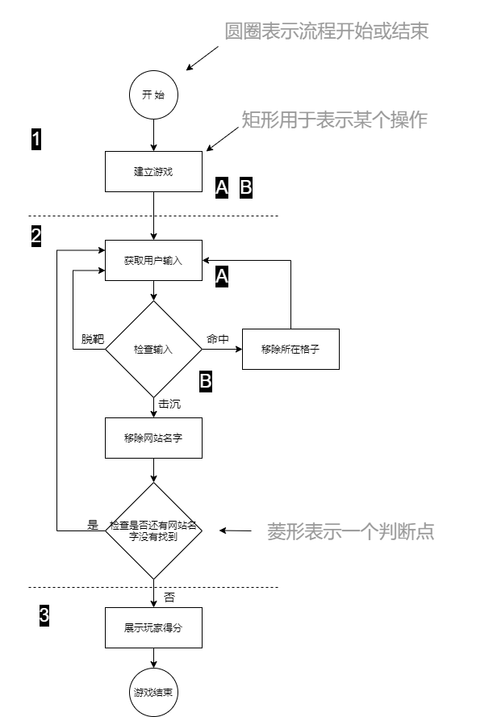
图 1 - “击沉战舰游戏”流程图
下面就要搞清楚，为了完成这个游戏作品，需要怎样的一些对象。需要以面向对象思维，而不是面向过程思维，着眼于程序中的 事物（things），而不是程序中的 过程（procedures）。
类的编写（Developing a Class）
每名程序员，都要有编写代码的方法论/流程/途径（As a programmer, you probably hava a methodology/process/approach）。当然Java程序员也是这样，下面的这个排序，就是在编写Java类的时候，所考虑到的事情。在现实工作中并非都要按照这样的顺序来执行。实际工作中，会按照自己偏好、项目的不同，甚至雇主的意愿来操作。基本上是可以想怎么来就怎么来的。不过这里以教学为目的，通常会按照下面的顺序进行类的编写：
- 搞清楚所编写的类计划用来做什么
- 列出其实例变量与方法
- 编写方法的 预代码（prepcode）
- 编写方法的 测试代码（test code）
- 将类进行 部署（Implement the class）
- 对方法进行 测试（Test the methods）
- 进行必要的 调试 和 再部署 （Debug and reimplement as needed）
- 邀请真实用户，对应用进行测试
每个类都要编写的三种代码
-
预编码，prep code 是一致伪代码（pseudocode）, 用于理清逻辑，而不用面对语法上的压力
-
测试代码 对真实代码进行测试，以验证真实代码是在正确工作
-
真实代码 类的具体实现。这里才是编写Java代码的地方
什么是预代码/伪代码（prepcode）
是类的真实Java代码与其自然语言描述之间的中介。大多数预代码包含三个部分：实例变量的声明、方法的声明和方法的逻辑。预代码最重要的部分，就是方法的逻辑，因为方法的逻辑，对要发生什么进行了定义。
编写方法的实现（Writing the method implementations）
在编写方法之前，先要编写方法的测试代码。注意，这里是先于方法本身，编写方法的测试代码的。
首先编写测试代码的做法，是极限编程（Extreme Programming, XP）的一种实践。采取这种方法，可以令到写代码更为容易和快速。当然并不是说非得要采用极限编程的方法，但真的喜欢首先编写测试代码的部分，同时极限编程听起来也很酷。
关于极限编程
极限编程，作为软件开发方法论领域的新兴成员，被许多程序员认为是“程序员正确的工作方式”，极限编程出现在1990年代，已经被许多公司所采行。XP的核心在于，软件用户在提出新的需求时，可以很快实现。
XP基于一套验证过的实践方法，这些方法应该组合运用。不过业者通常只选取其中一些方法，同时仅采行XP规则中的一部分。这些实践方法包含下面这些：
- 高频发布小版本（Make small, but frequent, releases）
- 以迭代周期方式开发（Develop in interation cycles）
- 绝不把不包含在软件规格中的功能/特性，加入到项目中去（不管有多想要以“为将来考虑”的原因，加入某项功能，Don't put in anything that's not in the spec(no matter how tempted you are to put int functionality "for the future")）
- 首先编写测试代码
- 不设苛刻时间表；不加班（No killer schedules; work regular hours）
- 一有机会就搞重构（提升代码质量，Refactor(improve the code) whenever and wherever you notice the opportunity）
- 根据小版本，设置合理可行的时间表（Set realistic schedules, based around small releases)
- 保持代码简单（Keep it simple）
- 结对编程，并定期调换人员岗位，从而令到每个人都对代码的各个部分有所了解（Program in pairs, and move ppl around so that everybody knows pretty much everything about the code）
++n 和 n++ 的不同
++n increments the value and returns the new one. n++ increments the value and returns the old one. Thus, n++ requires extra storage, as it has to keep track of the old value so it can return it after doing the increment.
增强版的for 循环
for (String name: nameArray) {...}
上面的语句，用人话讲就是：将nameArray 里的每个元素，赋值给 name 变量，并运行循环体。
编译器是这样理解上面的语句的：
- 创建一个名为
name的字符串变量，并将其置为null（null也是一个值） - 将
nameArray的第一个值赋给name - 运行循环体（由花括弧(
{})包围起来的代码块） - 将
nameArray中的下一个值赋给name - 重复这个过程，直到数组中最后一个元素为止
循环条件的第一部分：循环变量的声明（Part One: iteration variable declaration）
用此部分来声明和初始化一个在循环体中用到的变量。对于循环的每次迭代，该变量都将保存一个数组中的不同元素。此变量的类型，必须与数组中的各个元素的类型兼容！举例来说，就是不能声明一个 int 的迭代变量，与 String[] 的数组来一起使用。
循环条件的第二部分：目标数据集（Part Two: the actual collection）
这必须是到某个数组（array）或其他集合（collection）的引用。注意，这里对于其他非数组类别的数据集，也是使用的。这在后续章节会看到。
把一个 String 转换成 int
String num = "2";
int x = 2;
if (x == num) //horrible explosion!
这样写代码，编译器就会觉得你是个傻子！
[ERROR] xxx.java[x,y] bad operand types for binary operator '=='
[ERROR] first type: int
[ERROR] second type: java.lang.String
对于语句：
int guess = Integer.parseInt(stringGuess);
其中，Integer是Java语言自带的一个类；parseInt则是类Integer的一个方法，他知道怎样将某个字符串或其他类型的变量，解析为该变量所表示的 int数值。
int n = 0;
try {
n = Integer.parseInt("a");
System.out.format("\"a\" = %s\n", n);
} catch (Exception e) {
System.out.println(e);
}
这段代码，会报错错误：
java.lang.NumberFormatException: For input string: "a"
说明 Integer.parseInt 方法，是不能将除 0 到 9 字符的其他变量，解析为整数的。
int n = 0;
try {
n = Integer.parseInt("1024");
System.out.format("\"1024\" = %s\n", n);
} catch (Exception e) {
System.out.println(e);
}
这段代码的输出是：
"1024" = 1024
对原生变量的修剪（Casting primitives）
在第三章中，讨论了不同原生类型的大小，以及为何不能把大的变量硬塞进小的变量里。
long y = 42;
int x = y; // 不会被编译
会报错：
java.lang.Error: Unresolved compilation problem:
Type mismatch: cannot convert from long to int
long 是要比 int 大的（占用的数据位要多），同时编译器也不确定那个 long 的变量在哪里。为了强制编译器将一个较大的原生类型变量，塞进另一个较小的原生变量中，就要使用 cast 运算符。
long y = 42;
int x = (int) y;
放入了这个 cast 运算符后，就告诉了编译器，拿到 y 的值，将其修剪到 int 的大小，然后将 x 设置为剩下的部分。若 y 的值要比 x 的最大值更大，那么剩下的就会是一个奇怪的值（但可以计算出来）。比如：
long y = 40002;
// 40002 以及超出了短整型的最大值
short x = (int) y; // x 现在等于 -25534!
这是因为，十进制的
40002的有符号二进制形式为00000000000000001001110001000010, 保留后 16 位就是1001110001000010, 按照有符号短整数来看就是-25534。
对于浮点数来说，比如只想要某个浮点数的整数部分时：
float f = 3.14f;
int x = (int) f; // x 将等于 3
这里还比较一下
cast运算符与Math.round方法。
float f = 3.14f; (int) f = 3 Math.round(f) = 3
float p = 3.8f; (int) p = 3 Math.round(p) = 4
说明
cast运算符只是截取整数部分，而Math.round方法则会做四舍五入。
一个“有趣的类”
public class Output {
public static void main (String[] args) {
Output o = new Output ();
o.go ();
}
void go () {
int y = 7;
for (int x = 1; x < 8; x++) {
y++;
if (x > 4) {
System.out.format("%s ", ++y);
}
if (y > 14) {
System.out.format(" x = %s", x);
break;
}
}
}
}
参考：
了解Java API：使用Java的库
Java语言本身，就带有多达数百个的预构建类。若掌握了如何从 Java 库，也就是常说的 Java API中找到你所需要的功能，那么就不必去重新发明轮子了（You don't have to reinvent the wheel if you know how to find what you need in the Java library, known as the Java API）。还有更好的事情等着你去做。若要编写代码，也只是要去编写对于你的应用来说，真正特有的代码。你知道那些下午5点就下班，早上10点都还没到公司的程序员吗？他们就是善于使用 Java API。Java的核心库，有着大量的类，就等着你去使用，可以像使用砖块一样，从大量预构建的代码，组装出你自己的程序。本书中用到的写好Java程序示例，就是无需从头再编写的代码，但还是必须输入到你的程序中去。而Java API则是些甚至不用输入的代码。你只需要学会怎样去使用他们就可以了。
Java标准版带有数百个预构建类（除非使用的是针对小型设备的微型版本，那么Java标准版就是你手头的版本，The Java Standard Edition，which is what you have unless you're working on the Micro Edition for small devices and believe me, you'd know）。他们就和本书中这些编写好的代码一样，只是这些内建的类，时已经编译好的。
这就是说这些内建类无需再次输入了 。直接使用他们就好。
ArrayList 是Java库中无数内建类之一。你可以在自己的代码中，如同是你自己编写的ArrayList一样使用他。
我该怎么来知道，Java API里有些什么呢？
这正是如何成为一名正式的Java程序员的关键所在。这并不是说在构建软件时尽可能的懒，而是说在有人已经完成了这门语言中大多数最重要的部分后，你可以节省那么多的时间，而你只需要花点时间去了解这些API，去完成你的软件中有趣的部分即可。
有点离题了，这个问题的答案，往短了说，就是你得花点时间来学习，在Java核心API中有些什么。往大了说，就是在完成本章学习后，就知道该怎么去获知Java API中有些什么了。
怎么才知道我要用到Java API的某个类，该如何从“要完成某个功能”过渡到“找到实现某个功能的方法”？
你已经发现了问题的本质了。在学完本书后，你将会对Java这门语言有很好的掌握。之后你的学习曲线，就是了解如何从找到问题，到通过编写尽可能少的代码，来得到问题的解决方案了。随后将讨论这个问题。
ArrayList 与 array 的不同
ArrayList 是一个对象。array也是对象，与其他对象一样，也是存活在内存堆（heap）上的。但 array仍然只是array，不会是ArrayList，只是个冒牌货的。对象是同时有 状态 和 行为 的（state and behavior）。array就没有可调用的方法。Java 中的 array 一旦初始化，就再也不能追加或移除其中的元素了。ArrayList作为头等对象，就有着移除其中元素的能力，可以动态地改变大小。ArrayList有着极大的灵活性。不可以直接将原生类型变量放入到 ArrayList中 。但将原生类型变量，封装到一个原生类型封装器类中之后，就可以将原生变量放入到 ArrayList中了（You can put a primitives in an ArrayList, as long as it's wrapped in a primitive wrapper class）。自 Java 5.0 开始，原生类型变量的封装（以及在取出原生类型变量时的解封装），就已经是自动的了。可以确定的说，在运用由原生变量构成的 ArrayList时，可能比使用array还要快，因为所有的原生变量封装与解封装，都是........话又说回来，如今谁还会用到原生类型变量呢？
对于 ArrayList，只是在操作一个普通的 ArrayList 类型的对象，只是调用普通对象上的方法，使用普通对象上的 . 运算符。而对于一个 array，就要使用 特殊的数组语法 （比如 myList[0] = foo），这些语法只能在数组上使用，其他地方都用不到。就算数组也是对象，但数组是存在于他自己的世界中，你无法调用他上面的任何方法。可以访问到的，也只是他唯一的实例变量 length。
-
普通的老式
array，在创建出来时就必须知道大小。但对于
ArrayList来说，就只需要生成一个类型为ArrayList的对象就行。因为随着有对象加入或移除，ArrayList对象的大小会增加或收缩。String[] a = new String[2]; ArrayList<String> al = new ArrayList<String> (); -
要将某个对象放入到常规数组中，就必须为其指定一个特定位置。
（而且这个位置，必须要是从
0到小于该数组长度的一个值。）myList[1] = b;在指定的索引位置超出了该数组的边界时（比如对于一个声明了大小为2的数组，在尝试将某个值赋给索引3时），运行时就会报错（
java.lang.ArrayIndexOutOfBoundsException: Index 3 out of bounds for length 3）。但对于ArrayList，就可以使用add(anInt, anObject)方法，或是只写add(anObject)，就可以为新加入的对象，分配到空间。myList.add(b); -
数组所使用的语法，在Java中的其他任何地方都不会用到。
但
ArrayList就是普通的 Java 对象，因此没有特殊的语法。myList[1]; -
自 Java 5.0 开始，
ArrayList就已经是参数化的了（parameterized）。ArrayList<String>这里的在尖括号中的
String是一个 “类型参数”（type parameter）。ArrayList<String>的意思是，“一个字符串清单”，以示与ArrayList<Dog>表示“一个 Dog 的清单”的不同。如今使用
<type>这样的语法，就可以声明并创建ArrayList变量所能保存的对象类型。在“集合”章节将会仔细审视ArrayList中的参数化类型语法。现在只需要知道，这种语法是一种强制编译器，只允许特定类型的对象，放入到ArrayList中的办法。
构造器函数（The constructor function）
构造器函数是一个与类名称同名的特殊函数，在某个对象创建时运行，返回的是其所创建的对象（非 void），故构造器函数如下面这样：
public class DotCom {
...
public DotCom (...) {
...
}
...
}
超级强大的布尔表达式（Supper Powerful Boolean Expressions）
在 DotComBust 类中的循环或 if 条件测试里，就已经用到了布尔表达式，这些布尔表达式是很简单的。在后续代码中，将用到更加强大的布尔表达式。
“与”及“或”运算符（&&、||）
假设我写一个 chooseCamera() 方法，有很多如何去选择一台相机的规则。也许要选择价钱在 $50 到 $1000 的相机，在某种情形下，要更精细地去限定价格范围。可能会这样：
- “加入价钱在 $300 到 $400, 那么就选择 X”:
if (price >= 300 && price < 400) {
camera = "X";
}
- 在有10个相机品牌可供选择时，有一些适用于品牌清单中少数几个的规则：
if (brand.equals("A") || brand.equals("B")) {
// 仅针对品牌 A 和 B 进行某些操作
}
布尔表达式可以时相当大且复杂的：
if ((zoomType.equals("optical") &&
(zoomDegree >= 3 && zoomDegree <= 8)) ||
(zoomType.equals("digital") &&
(zoomDegree >= 5 && zoomDegree <= 12))) {
// 对这种变焦，执行相应操作
}
若要真的熟知布尔表达式，就要了解这些运算符的优先级（the precedence of these operators）。除了深入了解他们的优先级，还可以使用括号，来令到代码中的复杂布尔表达式更加清晰明了。
不等于（!= 和 !）
假设有这样的一个逻辑：“10个相机型号中，除开其中的一个型号”：
if (model != 2000) {
// 针对型号不是 2000 的相机，执行一些操作
}
或者对字符串等一些对象进行比较：
if (!brand.equals("X")) {
// 对品牌不是 X 的相机进行一些操作
}
短路运算符（Short circuit operators, &&、||）
对于 && 运算符，是要其两边都是 true 时，表达式才是 true 的。所以只要虚拟机看到其左边的值为 false，就不会在计算运算符右边的表达式了。所以他叫做短路运算符。
同样对于 || 也是这样的，只要 JVM 看到他的左边是 true，会得出整个表达式就是 true，就不会再计算右边的值了。
说这个有什么用呢？比如不确定某个引用变量是否已经被赋值了某个对象，就去调用某个使用了这个空引用变量（null reference variable, 也就是，尚未将对象赋值给该引用变量）的方法时，就会得到一个 NullPointerException的错误代码。那么就可以这样写：
if (refVar != null && refVar.isValidType()) {
// 执行“已有某种类型”下的操作
}
非短路运算符（Non Short Circuit Operators, &、|）
在布尔表达式中使用 & 与 | 运算符时，他们的表现，就跟他们的同伴 && 与 || 相似，不同之处在于，这两个运算符，是要强制JVM对运算符的两边，都要进行检查。通常情况下，& 与 | 是用在不同的情形下的，比如对二进制位的操作。
使用库（Java API）
由于使用了 ArrayList，前面完成了 DotComBust 游戏。现在就是学习怎么用好 Java 库的时间了。
在 Java API 中，类是以包的形式分组的（In the Java API, classes are grouped into packages）。

图 1 - 在 Java API 中，类被分组为各种包
要使用API中的某个类，就要知道他在哪个包里头。
Java 库中的每一个类，都是属于某个包的。那个包有个名字，比如 javax.swing （一个有着一些 Swing GUI 类的包）。ArrayList则是在名为 java.util的包中，这个包有一堆的 工具（utility） 类。在第17章，将会学到更多的有关包的知识，包括如何将自己编写的类，放入自己组织的包中。
在代码中使用API的类，是很简单的。只需将那个类当成自己编写的，自己编译的，就在那里等着使用就可以了。有一个不同点在于，在代码中的一些地方，需要用库类的 完整 名字来表示，完整名字就是，包的名字 + 类的名字。
就算对这个不了解，实际上很早就用到了来自某个包的类。System（System.out.println），String，以及 Math （Math.random()），这些类，都是属于 java.lang 包的。
对于在代码中要用到的类，就必须知道他的完整名字。
ArrayList 并不是 ArrayList 的完整名字，就如同 Kathy 不是一个全名一样（除非像是 Madonna 或 Cher 这样的人）。ArrayList的全名实际上是：
java.util.ArrayList
其中 java.util是包的名字，ArrayList是类的名字。
必须告诉 Java，你要使用哪个 ArrayList，有两种做法：
-
导入（
IMPORT）在源代码文件的顶部，放上一个导入语句：
import java.util.ArrayList;
public class MyClass {...}
-
手动输入（TYPE）
在代码中使用到
ArrayList的各处，输入完整的名字。在声明或初始化某个
ArrayList变量时：
java.util.ArrayList<Dog> list = new java.util.ArrayList<Dog> ();
在使用 ArrayList 变量作为参数类型时：
public void go (java.util.ArrayList<Dog> list) {...}
在将 ArrayList 作为返回值的类型时：
public java.util.ArrayList<Dog> foo () {...}
为什么这些库类，都必须有一个全名呢？难道这就是Java包的目的吗？
包的重要性，有三个方面。首先，包有助于某个项目或库的良好组织。相比于有着可怕的一大堆类文件，使用包就可以将众多的类文件，以不同目的（比如GUI的、数据结构的，或者数据库方面的等等），组织成包。
其次，包的使用，可以带来名称上的范围限制，从而有助于防止冲突的发生。比如你和公司的其他12名程序员，都以同样的名字编写类文件时。再比如你自己编写了一个名为 Set 的类文件，其他人（包括 Java 的 API）也有同名的类文件，那么就要需要一种告诉 JVM，到底要使用那个 Set 类的机制。
第三，包在一定程度上提供了安全性。因为可以对所编写的代码做限制，从而只有同一包里的其他类，才能访问到这个包。这一点在第17章将会讲到。
Java语言有一个命名约定，通常可以阻止冲突的发生。
包名字中 x 表示什么意思
在第一版和第二版的 Java 中（1.02 和 1.1），与 Java 语言一起发布的类（也就是标准库），都是以 java 打头的。这些都是 java.lang 的，也就是不必加以导入的。同时还有 java.net、java.io、java.util（尽管那个时候还没有 ArrayList），以及一些其他的类库，包括保存GUI相关类的 java.awt包。
逐渐的，标准库中未包含的其他包逐一出现。这些类也就是我们所说的 扩展（extensions），这些扩展又有两种： 标准（standard） 与 非标准（not standard） 扩展。标准扩展是那些 Sun 公司认为的官方扩展，他们与实验性扩展、早期版本或者说 beta 版等，或许永远也不会投入使用的包，有所不同。
按照惯例，标准扩展都是在原本作为开头的 java 之后，追加了 x 打头的。而所有标准扩展的开创者，就是 Swing 库。这个库包含了若干个包，这些包都是以 javax.swing 开头的。
而某些标准扩展，就有机会得到提升，从而成为头等的、Java自带的、标准的即开即用的库文件包。从 Java 1.2 开始，Swing就享受到了这样的待遇。
“真不赖” ，所有人都这样想，“往后所有装了Java的人就都有了 Swing 类文件了，就再也不需要给我们的终端用户去安装这个类了”。
但麻烦随之而来，在这些包得到提升之后，理所当然他们就不得不以 java 打头，而再也不是 javax打头了。所有人都知道标准库都不带有 x，而只有扩展才有。那么，就在 1.2 版本终结的时候，Sun公司就修改了这些包的名字，把其中的 x 删除掉了（以及其他的一些改变）。这个时候很多即将印刷以及在书店售卖的Java书，将 Swing 代码以新名字加以介绍。命名约定得到遵守。在Java世界里万事大吉。
但对于超过 20k 的开发者来说，他们意识到这样简单的名字改变，却带来了灾难！他们的所有用到 Swing 的代码，都不得不进行修改！多么可怕！想想那些以 javax 开头的代码...
在最后时刻，伴随着希望变得渺茫，他们绝望了，这些开发者说服了 Sun 公司，去“打破惯例，拯救他们的代码”。剩下的事情就成了历史。因此当你看到在库中以 javax 打头的某个包，就应该知道这个包是以某个扩展诞生，随后获得了提升（进入到标准库中）。
知识点
ArrayList是 Java API 中的一个类- 使用
add()方法，往ArrayList中放入某些东西 - 要从
ArrayList中移除某物，使用remove()方法 - 使用
indexOf()方法，来确定某对象是否在ArrayList中 - 要确定某个
ArrayList是否为空，使用isEmpty()方法 - 使用
size()方法，来获取某个ArrayList的大小（元素个数） - 对于常规的老式数组，要获取其长度（length, 元素个数），使用的是其变量
length ArrayList引用变量的大小，可以根据需要动态的改变。在添加了对象后，就会变大；在移除对象后，相应地会变小- 在声明
ArrayList引用变量的数组类型时，使用的是 类型参数（type parameter），也就是在尖括号中的一个类型名称。比如，ArrayList<Button>意思是这个ArrayList将只能保存类型为Button的对象（或者Button的子类，后续章节会学习相关的内容）。 - 尽管
ArrayList保存的是对象而非原生变量，但编译器会自动地对原生变量进行封装（ wrap, 并在从ArrayList中取出原生变量时，进行解封装， unwrap），使其成为一个对象，从而放入到ArrayList中的，就是封装后的对象，而不在时原来的原生变量了。 - 类是以包的形式进行组织的。
- 类有着由其所属包的名字，和类本身名字，组合而成的全名。类
ArrayList实际上是java.util.ArrayList - 要使用除
java.lang之外的其他包中的某个类，就必须告诉 Java 那个类的全名 - 要么在源代码文件的顶部使用一条导入语句，要么就在代码中所有要用到类的地方，输入这个类的全名
关于 import 语句
import 与 C 语言中的 include 不同。因此 import 的使用不会令到类变得更大，同时也不会将所导入的类或包，编译到自己的代码中去。import 的使用，是从大量的敲代码中拯救你的。无需担心过多地使用 import 会导致代码臃肿或变慢。import就只是一种你让Java知道某个类的全名的方式而已。
为什么不需要导入 String 或 System 类呢？
那是因为 java.lang 是特殊的 预导入（pre-imported） 包。因为在 java.lang中的那些类是相当基础的类，因此就不必使用他们的全名。这样的也就只有两个： java.lang.String 和 java.lang.System，Java 很清楚可以在哪里找到他们。
必须把自己编写的类也放入Java包里吗？怎样才能放入包里，可以这样做吗？
在生产中，是应该把自己编写的类文件，放入到包中的。在第17章会讲到这个问题。
牢牢记住
Roses are red,
apples are ripe,
if you don't import
you'll just have to type
在没有使用导入语句时，除了那些 java.lang包中的类之外，就 必须告诉Java所用到的每个类的全名。在源代码文件顶部，使用一个类或包的import导入语句，是一种简便方法。否则，就必须在使用到那个类或包的所有地方，都敲入他的全名！
使用 API 的方法
两个问题：
- 在库中有哪些类文件？
- 在找到某个类之后，怎样才能知道他是用来做什么的？
有两个途径：
-
翻书
一本 Java 参考书，就是去发现Java库里有些什么的最好办法。
-
查看线上的 HTML API 文档
Java 本身就有着一套良好的线上文档，名字就叫 Java API。这套文档又是另外一套更大的名为 Java 5 标准版文档的一部分，这些线上文档还必须得去单独下载；这些文档不是和 Java 程序一起提供的。
这些API文档，在要进一步了解某个类及其方法时，最好的参考资料。比如在查阅参考书时，在
java.util包中发现一个名为Calendar的类时，参考书只能告诉你这个类的有限的、仅能让你明白这个类正是你要用到的一点点内容，在你需要了解更多的有关这个类的信息时，就可以在线上文档里找到。
继承与多态：在对象村里过得更好
打心底里就要给你的程式谋划未来。如果有某种可以休假更多的写Java代码的方法，那这种方法价值几何呢？如果其他人可以轻易地对你写的代码进行扩展，同时还可以编写出，能够应对那些令人厌烦的最后一分钟规格变更的灵活的代码来，对于这样的方法论，你会感兴趣吗？今天就是你的幸运日，只需要花3个小时，就可以学到这有用的方法。在多态课程，将学到“改良类设计的5步法”、“多态3窍门”，以及“8招让你编写灵活代码”。还有一节额外的“运用继承的4个诀窍”课程送给你。不要犹豫，不要迟疑，掌握继承与多态，将带给你程序设计的自由，让你获得灵活编程的好处。从今天开始，就要着重于抽象（abstraction）这个话题了。
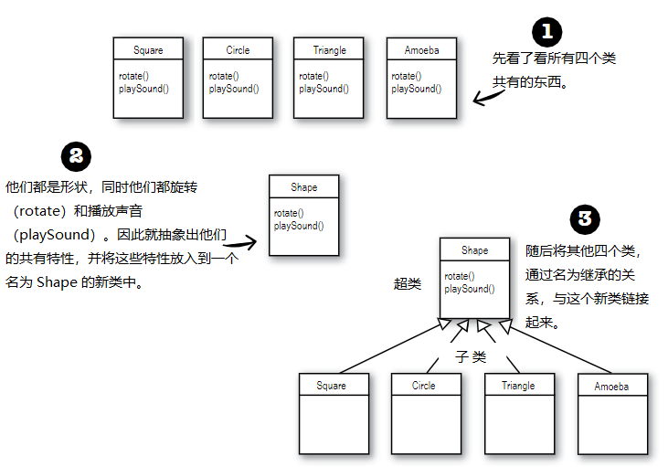
图 1 - 继承的原理
可以读作：“ 正方形继承自形状 ”，“ 圆形继承自形状 ” 等等。这里将 rotate() 与 playSound() 从其他形状中移除了，那么现在需要维护的，就只有一个拷贝了。
这里的 Shape 类，叫做其他四个类的 超类（superclass）。其他四个类就是 Shape 的子类。子类继承着超类的方法。换句话说， 如果Shape类有着某项功能，那么他的子类将自动获得同样的功能。
那么对于 Amoeba 的 rotate() 又该怎么办呢？
（Amoeba, [əˈmibə]，阿米巴虫）
对于有着完全不同的 rotate 与 playSound 行为的 Amoeba 形状来说，在从 Shape 类继承的情况下，该怎样才能有不同的行为呢？
这就是面向对象的最后一步，Amoeba 类对 Shape 类的方法，进行 重写（override）。如此以来，在运行时，JVM就准确地知道，在其他代码调用到 Amoeba 去旋转时，该执行哪一个 rotate() 方法了。
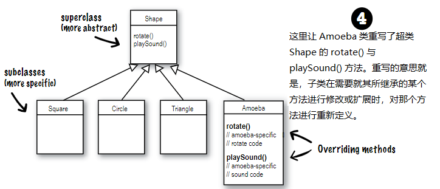
图 2 - 重写方法
BRAIN POWER
对于家猫与老虎，以继承架构，该怎么来表示？该把家猫看成是老虎的特殊版本吗？他们中到底哪一个应该是子类，哪个应该是超类呢？又或者说他们都是另一个类的子类呢？
怎样来设计一个继承架构？哪些方法需要重写？
在翻开下一页之前，请思考一下。
掌握继承
Understanding Inheritance
在设计继承时，是将共同的代码，放在一个类中，同时告诉其他更为特定的类，这个通用的（更为抽象的）类，是他们的超类。在某个类从其他类进行继承时，那么就是 子类从超类进行继承。
在 Java语言中，有着 子类对超类进行扩展。继承关系（An inheritance relationship）的意思是，子类对超类成员的继承。在提及 “类成员” 时，意思就是实例变量与方法。
比如，PantherMan 是 SuperHero的一个子类，PantherMan 类就自动继承了对于所有超级英雄来说，共同的实例变量，包括 suit、tights、specialPower、useSpecialPower()等等。同时 PantherMan 子类还可以加入自己新的方法和实例变量。同时他还 可以对其继承自超类 SuperHero 的方法进行重写。
相比 PantherMan, FriedEggMan就不需要任何独特的行为，因此他就没有重写任何的方法。此时SuperHero中的方法与实例变量，都还是有效的。
但 PantherMan 则对他的外套有着特殊要求，同时还有两种特殊的威力，因此在 PantherMan类中，useSpecialPower()和putOnSuit()两个方法都被重写了。
实例变量不被重写，因为没有必要。他们并没有定义什么特别的行为，因此子类可以赋给实例变量任何子类所需的值。PantherMan可以将他所继承的 tights 设置为紫色，同时 FriedEggMan 则可以设置为白色。
一个继承的实例
public class Doctor {
boolean worksAtHospital;
void treatPatient () {
// perform a checkup
}
}
public class FamilyDoctor extends Doctor {
boolean makesHouseCalls;
void giveAdvice () {
// give homespun advice
}
}
public class Surgeon extends Doctor {
void treatPatient () {
// perform surgery
}
void makeIncision () {
// make incision (yikes!)
}
}
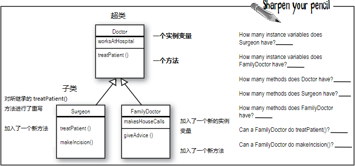
图 3 - 继承实例
给某个动物模拟程序设计继承树（the inheritance tree）
设想有人邀请你，设计一个让用户将一堆动物丢到某个环境中，看看到底会发生什么，这样的模拟程序。现在无需编写这个程序，而是关注与其设计。
此时已经得知了程序中会有的部分动物的清单，但这不是全部。显然每个动物都将由一个对象来表示，这些表示各种动物的对象，将在所给的环境中走动，并干一些根据各自种类而预先为其编写的行为。
同时要让其他程序员在任何时候都能往程序里加入新种类的动物。
首先要找出所有动物都有的那些共同的、抽象的特征，并将这些特征构建到一个所有动物类都可以对其进行扩展的类里去。
图 4 - 找出有着共同属性与行为的那些对象
使用继承来避免子类中的重复代码
这个模拟程序中有五个 实例变量（instance variables）：
picture-- 表示该动物的 JPEG 的文件名food-- 该动物所食用的事物的种类。现在只能有两个值：meat或grasshunger-- 一个表示该动物饥饿程度的整数值。这个实例变量会依据动物进食的时间（以及进食量）而变化boundaries-- 表示该动物活动范围空间的长度与宽度（比如，640x480）的值location-- 该动物在其空间中所在位置坐标X与Y的表示
有着四个 方法（methods）:
-
makeNoise()-- 在该动物嘶叫时的行为 -
eat()-- 在该动物碰到其偏好的食物，也就是meat或grass时的行为 -
sleep()-- 在该动物需要睡眠时的行为 -
roam()-- 在动物没有进食或睡觉时的行为（或许是四处游荡去寻获事物，或者探索他的边界）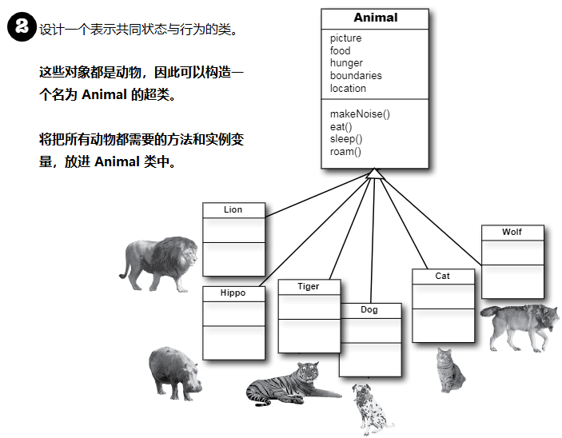
图 5 - 设计超类
所有动物都是以同样方式进食吗？
这里假定对这个事都表示同意：超类中的实例变量对 所有 动物都是适用的。一头狮子将有着他自己的 picture、food（也就是 meat）、hunger、boundaries以及location 的取值。一头河马则会有着其各个实例变量的不同取值，但河马仍然有着其他 Animal 类别的同样的那些变量。与 Dog、Tiger等相同的实例变量。但对于这些动物的 行为（behavior） 呢？
到底需要重写哪些方法？
狮子会发出与狗子一样的嘶吼吗？猫咪会像河马那样进食吗？或许在你的版本中会这样，但在我们的版本中，进食与嘶叫，是特定于动物种类的（Animal-type-specific）。似乎无法找到一种对所有动物都适用的，编写这些方法的途径。好吧，这样说是不对的。可以这样编写 makeNoise() 方法，譬如说这个方法就是简单地播放一个，定义在特定动物类别中的实例变量中的声音文件，但这样处理还不够专业。一些动物在不同情形下会有不同的嘶吼（比如在进食的时候一种，在碰到天敌的时候又是一种等等）。
因此，就如同为了获得更多特定于 Amoeba （也就是 独特（unique））的行为，Amoeba 对 Shape 类的 rotate() 进行重写的做法一样，这里将对 Animal 的子类进行同样的操作。
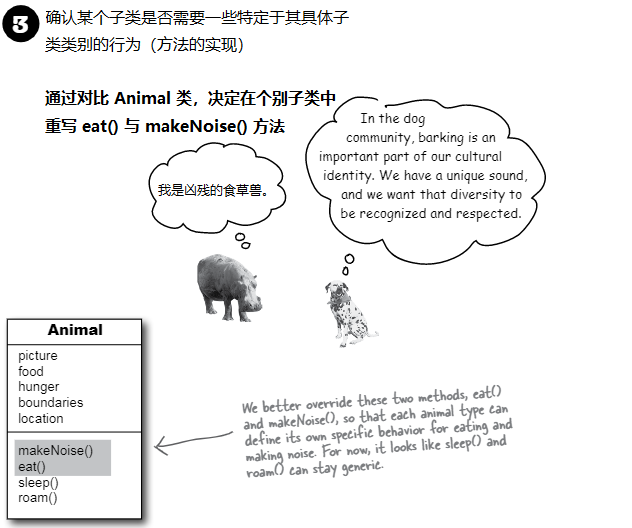
图6 - 重写方法
查找剩余的继承机会
Looking for more inheritance opportunities
现在，类的层次就逐渐形成了。前面已经让各个子类对 eat() 和 makeNoise() 方法进行了重写，因此就不会让狗子像猫咪那样叫唤（那样会让狗子和猫咪都相当气愤）。同时河马也不会像狮子那样进食了。
不过或许可以更进一步。这时就要对Animal的子类进行充分检视，并看看有没有两种或者更多的动物，可以某种方式组织在一起，并只为这个新的组别写特定的代码。Wolf与 Dog有着相似点；同时 Lion、Tiger 和 Cat 也有。
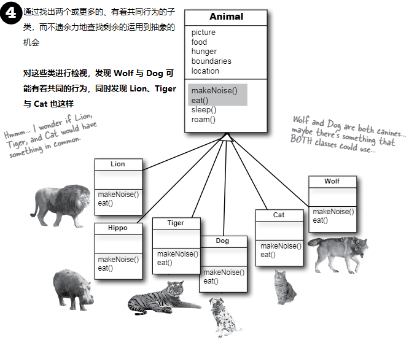
图7 - 穷尽抽象机会
完成类层次设计
Finish the class hierarchy
因为动物们本身就有着一个有组织的层次（整个的动物王国，种，门之类的，动物学相关），所以就可以直接套用这种分级，而令到我们的类的设计更有意义。这里就将使用生物学上的“族”（the biological "families"）概念，通过构造一个 Feline 类和一个 Canine 类，而将这些动物组织起来。
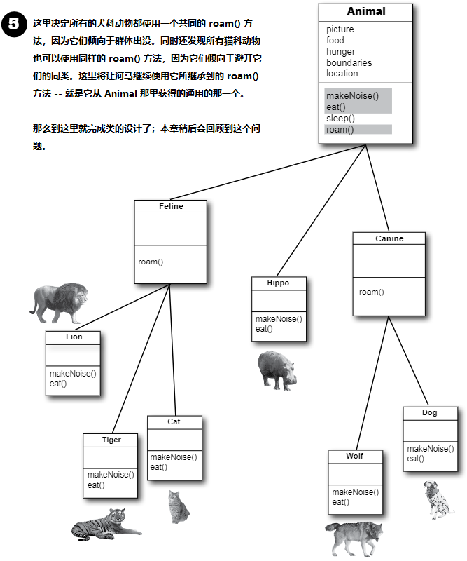
图8 - 类设计的完成
所调用的究竟是哪个方法
Wolf 类有四个方法。一个是从 Animal 类继承得来，一个是从 Canine （这实际上是重写了 Animal 的其中一个方法后的版本）继承来的，Wolf类本身有两个重写后的方法。在创建一个 Wolf 对象并将该对象赋值给某个变量后，就可以使用那个引用变量上的 . 运算符，去调用这四个方法了。但调用的到底是那个 版本 的方法呢？

图 9 - 继承类中方法的版本
在调用对象引用上的某个方法时，调用的是对象类型（类）上最具体的方法版本。换个说法就是，最低者获胜（the lowest one wins）!
“最低”指的是在继承树（the inheritance tree）中位置最低。Canine 要比 Animal 低，而Wolf又要比 Canine 更低，因此在对某个 Wolf 对象上的方法进行调用时，就意味着 JVM 开始首先在 Wolf 类中进行查找。若JVM未能在 Wolf 类中找到该方法的一个版本时，他就开始沿着继承树向后移动，到发现一个匹配的方法为止。
既然JVM是自继承树中调用方法所在的类类型（the class type），往上去查找。那么如果 JVM 始终没有找到那个方法，会怎样呢？
无需担心这个问题。对于某个特定引用类型（类），编译器会确保其方法始终是可调用的。对于所调用的方法，在运行时究竟来自继承树上的哪个类，这个问题并不重要。以 Wolf这个类为例，编译器会对 sleep() 方法进行检查，但编译器并不会关心 sleep() 是在 Animal 类中进行定义（并从那里继承到）的。如类 继承 了某个方法，那他就 拥有 了这个方法。
对于编译器来说，方法在何处定义（也就是定义这个方法是哪个超类）并不重要。但在运行时， JVM 始终会选出正确的那个。而所谓的正确的那个，是指 对于特定对象最为具体的版本。
运用 IS-A 与 HAS-A 法则
“浴缸是一个浴室”，或者“浴室是一个浴缸”，这样讲行的通吗？浴室和浴缸的关系，应该是归属的关系。是浴室具有浴缸。也就是说，浴室有着一个浴缸的实例变量。
前面讲到，在某个类从另一个进行了继承时，就说这个子类对超类进行了 扩展。在要确定某物是否要对其他东西进行扩展时，使用 IS-A 法则就行。
Triangle IS-A Shape，看吧，这是行得通的; Cat IS-A Feline，同样可行；Surgeon IS-A Doctor，还是没问题；而要用浴缸去拓展浴室，听起来似乎没问题，但要用一个 IS-A 去测试，就不行了。
要搞清楚有没有正确地设计类型，就问一下“类型A IS-A 类型B 说得通吗”？如果讲不通，那么在设计中肯定就有问题了，因此如果运用 IS-A 法则，那么 Tub IS-A Bathroom 明显就是错的。
那如果反过来，用 Bathroom 去扩展 Tub 又会怎样呢？仍然行不通，Bathroom IS-A Tub 并不行。
Tub 与 Bathroom 确实 有联系，但不是通过继承联系起来的。Tub 与 Bathroom 是由一种叫做 HAS-A 的关系，连接起来的。看看“Bathroom HAS-A Tub” 说得通吗？如果行，那么就是说 Bathroom 有着一个 Tub 的实例变量。也就是说，Bathroom 有着一个到 Tub 对象的引用变量，而并非 Bathroom 扩展了 Tub，或者 Tub 扩展了 Bathroom。
IS-A法则在继承树中 所有地方 都是有效的。在继承树设计良好时，那么不论在任何时候，提出某个子类 IS-A 其任何一个超类型问题时，都是说得通的。
在类 B 对类 A 进行了扩展时，那么类 B IS-A 类 A。这在继承树的任何地方，都是成立的。而在类 C 又对类 B 进行了继承后，那么类 C 就能同时通过对类 B 和类 A 的 IS-A 测试。
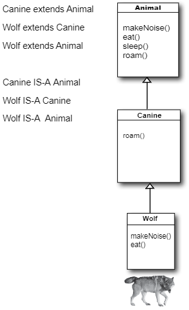
图 10 - IS-A 法则
对于上图中的继承树，就可以说 “Wolf 扩展了 Animal” 或 “Wolf IS-A Animal”。就算Animal是Wolf超类的超类，也是没有影响的。事实上， 只要Animal 位于Wolf所在的继承树上部的某处，那么 Wolf IS-A Animal 这个判断，就始终是正确的。
这个 Animal 继承树的结构，向外界通告：
“Wolf IS-A Canine，因此 Wolf 可以干 Canine 能干的那些事。同时 Wolf IS-A Animal, 因此 Wolf 也可以干 Animal 能干的事。”
就算 Wolf 重写了 Animal 或 Canine 的一些方法，对此也没有影响。外界（其他代码）所知的，就是 Wolf 可以执行这四种方法。至于Wolf怎样去执行，或者说 这些方法在哪个类中被重写的，无关紧要。某个 Wolf 可以 makeNoise()、eat()、sleep()及roam()，因为Wolf是扩展Animal得来的。
怎么判断继承设计是正确的
显然目前所探讨的还有欠缺，好在后续会深入了解面向对象的问题。此时我们知道，运用 IS-A测试是一条不错的准则。如果 “X IS-A Y”讲得通，那么这两个类就应该位处同一个继承层次上。这种可能性，就在于他们有着同样的或重叠的行为表现。
划重点，IS-A 关系仅在一个方向上有效！
Triangle IS-A Shape 讲得通，因此可以用 Triangle 去扩展 Shape。
但反过来，Shape IS-A Triangle，就说不通了，因此 Shape就不能对 Triangle 进行拓展。IS-A关系，表示在 X IS-A Y时，X就能完成Y能干的事（甚至更多）。
既然子类可以继承超类的某个方法，那么超类想要使用子类版本的这个方法时，会怎样呢？
超类是没有必要了解其子类的任何一点的。在你编写完某个类后，就会有人沿用这个类，并对其进行扩展，此时你所编写的那个类，就成了超类。尽管作为这个超类的作者的你，想要了解（或使用）这个类中某个方法的子类版本，也是做不到的，并不存在 逆向（reverse） 或者说 向后（backwards） 的继承。试想一下，孩子从父母那里继承，而不是反过来吧。
可以在子类中同时使用某个方法的超类版本与子类的这个方法的重写版本吗？也就是说，在不想完全替换该方法的超类版本，而只想对其进行补充时，该怎么办呢？
这是可以做到的！同时这也是一个重要的设计特性（an important design feature）。这正是 “扩展” 一词的本义所在，是“要对超类功能进行扩展”的体现。
public void roam () {
super.roam ();
// 它自己的 游荡 行为
}
上面的代码首先调用了继承到的 roam() 版本，随后再回到特定于子类的代码。
在设计超类方法时，虽然超类的各个子类会往这些方法“追加”代码，同样可以在超类的这些方法中，包含所有子类都适用的方法实现。在子类重写某个方法时，就可以使用关键字 super，来调用超类版本的这个方法。这样写就像是说，“先运行超类版本，然后回来继续完成子类自己的代码..._”。
怎样知道子类可以从超类继承到哪些东西
子类对超类的成员加以继承。到目前为止，这些成员包括了实例变量与方法，后续会涉及其他被继承的成员。通过为成员设定不同的访问级别，超类是可以对其子类所要继承的成员加以选择的（A subclass inherits members of the superclass. Members include instance variables and methods, although later in this book we'll look at other inherited members. A superclass can choose whether or not it wants a subclass to inherit a particular member by the level of access the particular member is given）。
本书中将涉及以下四个访问级别。从严到宽，这四个级别分别是：
private、default、protected、 public
这些访问级别，控制了 哪些对谁可见，这对具备良好设计、健壮的 Java 代码来说至关重要。现阶段只关注 public 与 private。他们两的规则较为简单：
public成员是继承得来的private成员不是继承得来的
在子类继承到某个成员时，那么这个成员 就好像是子类自己定义的一样。在 Shape 的示例中，Square继承了 rotate() 与 playSound() 两个方法，而对于外界（其他代码）而言，就是 Square 有着这两个方法而已。
某个类的成员，包括在这个类中所定义的变量与方法，加上这个类从他的超类所继承到的全部成员。
注意：有关
default与protected的细节，将在第 17 章及附录 B中涉及。
正确运用继承，杜绝滥用
下面的这些规则背后的缘由，要在后续章节才会揭示，现在只需了解，几条简单的规则，就可以助力构建良好的继承设计。
-
在某个类确实是某个超类的更具体类型时，才使用继承。比如
Willow是Tree的一个更具体的类型，因此Willow对Tree进行扩展是讲得通的。 -
存在确实可以在同一通用类型的多个类之间共用的行为表现（方法的实现代码）时，要考虑使用继承。比如，
Square、Circle、Triangle都需要rotate()与playSound()，因此将这两个功能放入到Shape中就讲得通。不过要留意，尽管 继承作为面向对象编程的关键特性之一，但对于代码重用这个目的，继承却不是必要的。继承带你进入面向对象编程的世界，而且通常也是正确的设计选择，然而真正能让你见识到更多巧妙与灵活设计的，则是那些设计模式（Be aware, however, that while inheritance is one of the key features of object-oriented programming, it's not neccessarily the best way to achieve behavior reuse. It'll get you started, and often it's the right design choice, but design patterns will help you see other more subtle and flexible options）。若你对设计模式没有了解，那么可以看看另一本书 “Head First Design Patterns”。 -
超类与子类之间的关系，违背了上面两条规则时，不要仅为了重用另一个类的代码，而使用继承。比如设想在已经编写好
Alarm类中的打印代码后，又要编写Piano类的打印代码，于是就让Piano去继承Alarm，目的是让Piano继承到这些打印代码。这样做毫无意义！因为某个Piano并不是Alarm的更为具体的类型（正确的做法，应该把打印代码放在一个Printer的类中，如此所有可打印对象，都可以通过一种HAS-A关系而得到打印功能）。 -
在子类与超类无法通过
IS-A测试时，不使用继承。要一直询问，子类究竟是不是超类的更具体类型。比如，TeaIS-ABeverage讲得通。BeverageIS-ATea就不行。
本章重点
- 子类对超类进行扩展
- 子类继承到超类的所有
public实例变量与方法，对超类的private实例变量和方法，不予继承 - 继承到的方法可被重写；而实例变量则不能被重写（尽管实例变量可在子类中被重新定义，但与重写相比不是一回事，同时机会也完全没有这样做的必要）
- 使用
IS-A测试来对继承层次进行有效性验证。若X对Y进行了扩展，那么XIS-AY必须能说得通 IS-A关系只在一个方向上有效。某个Hippo是一个Animal，但并非所有Animal都是Hippos- 在子类中重写了某个方法，且这个方法于此子类的某个对象中被调用到时，所调用的是重写后的版本（最低者入选法则）
- 在类
B扩展了类A，同时类C扩展了类B的情况下，那么类BIS-A 类A，同时类CIS-A 类B，此外类CIS-A 类A
继承带来的好处
掌握了具备继承的设计之后，离面向对象的目标就不远了（You get a lot of OO mileage by designing with inheritance）。通过将一组类中共用的行为抽象出来，放入到超类中，就可以解决重复代码的问题。这样做还有另一个好处，就是在需要修改这些共用代码时，只需要在一个地方去更新这些共用代码，并且 代码的改变，会神奇地在所有继承了这些代码的类中反应出来。当然，这里并没有什么魔法，而是相当简单：做出修改，然后重新编译那个超类。这就完了。完全不需要去动那些子类！
只需投放新修改的超类，所有对超类进行了扩展的那些子类，就会自动使用新的版本了。
因为一个Java程序，只是一堆的类而已，因此无需对子类进行编译，就能使用上新版本的超类。同时超类并不会破坏子类的任何东西，所以一切都相安无事（后续章节会讨论到在这种语境下，“破坏”的意义。目前来讲，可以设想一下，比如对超类中子类所依赖的某个特定方法的参数或返回值，或者方法的名称的修改）。
-
避免了重复代码
将共用代码放在了一起，并让子类从超类继承这些代码。在要修改某个行为时，只需在一个地方进行修改，这时所有子类都能看到修改。
-
给一组类定义了共用的协议
继承可以确保组织在某个特定超类型之下的所有类，拥有那个超类型所拥有的全部方法
Inheritance lets you guarantee that all classes grouped under a certain supertype hava all the methods that the supertype has
在提及 “全部方法” 时，指的是 “全部可继承的方法”，目前实际上是指，“所有
public方法”，不过后面会对这个定义做进一步修订
也就是说，通过继承，给一组相关的类定义了一个共用的协议（In other words, you define a common protocol for a set of class related through inheritance）。
在定义超类中可被子类们继承的那些方法时，就是在向其他代码通告某种协议，像是在说 “我的所有子类型（也就是子类）可以下面这些方法，完成这些事情...”。
换句话说，就是建立了一个 合约（contract）。
类 Animal 为所有 Animal 的子类型，建立了这样一个共用协议：
| Animal |
|---|
| makeNoise() eat() sleep() roam() |
需要注意的时，当提及 所有 Animal 时，指的是 Animal 以及所有扩展了 Animal 的类。还指的是 所有的在继承层次中，可往上追溯到 Animal 的类。
对于 OO 中真正精彩的部分，还远未涉及，因为我们把其中最好的东西 -- 多态（polymorphism） 留在了最后。
在为一组类定义超类型的时候，在用到超类型的所有地方，那个超类型的所有子类，都可以被取代（any subclass of that supertype can be substituted where the supertype is expected）。
然而这句话到底是什么意思呢？
不要着急，现在还不能把这句话解释清楚。
-
为何要了解多态
因为可以利用上多态的优势
-
多态为什么重要
因为可以使用一个声明为超类型的引用变量，去引用某个子类的对象（refer to a subclass object using a reference declared as the supertype）
-
这又到底意味着什么呢
意味着可以编写出真正灵活的代码来。代码更加干净（更高效、简单）。不仅开发起来更容易，同时扩展起来也要容易得多，以先前写代码得经验来看，运用多态这种方式，是你所无法想象的。
这样就意味着，当你的同事忙着更新程序时，你还可以加勒比海享受假期，而你的同事们甚至不需要你的源码。
在下一页就能了解到多态的原理。
要了解多态的原理，就要回顾一下声明引用变量和创建对象的寻常方式。
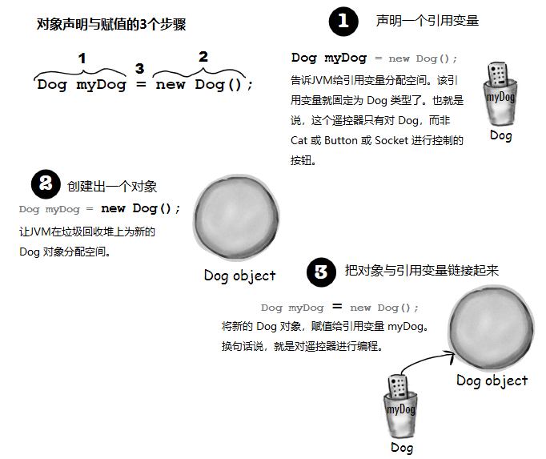
图 11 - 常规的引用变量与对象创建方式
要点时引用变量的类型 与 对象的类型，是一致的。
在这个示例中，他们都是 Dog。
有了多态，引用变量与对象，就可以不同。
Animal myDog = new Dog();
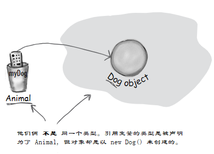
图 12 - 多态 - 引用变量与其对象具有不同的类型
运用多态特性，引用变量的类型，可以是实际对象的类型的超类。
在声明某个引用变量时，可以通过引用变量的类型的 IS-A 测试的所有对象，都可以赋值给那个引用变量。换个说法，就是所有扩展了所声明的引用变量类型的类的对象，都可以赋值给该引用变量。 这可以让我们能够完成建立多态的数组等操作（This lets you do things like make polymorphism arrays）。
一个实例可以更好的帮你理解这句话。
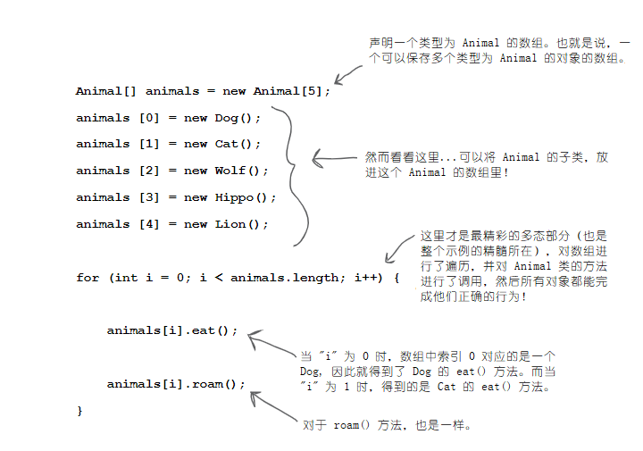
图 13 - 多态下的数组
除了上面两个特性，多态还有更多用法！
可以在方法中，使用多态的参数和返回值类型。
声明比如 Animal 这样的超类型（supertype）引用变量，并将某个子类，比如Dog的对象赋值给他，是可以的。设想把这个引用变量作为方法的参数时，会怎样......
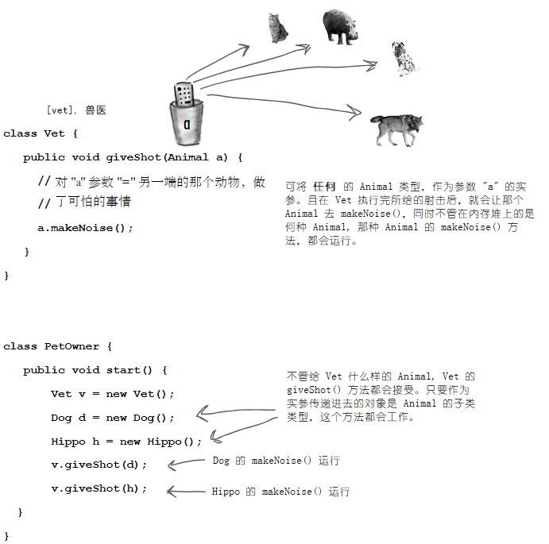
运用多态特性，可以编写出无需修改，就可以引入新的子类类型的代码。
就像上面示例中的 Vet 类一样，在将 Vet 类编写为使用声明为 Animal 类型的参数之后，这段代码就可以处理所有 Animal 的子类了。这就意味着有人要用到这个 Vet 类时，只要确保他们的新 Animal 类型，是扩展类 Animal 得来的就可以了。就算类 Vet 对那些Vet要处理的、新的 Animal 子类型一无所知，Vet 的那些方法仍然会工作。
思考题
为什么多态一定就可以这样运作？为什么就可以一直假定，所有子类类型都正好有这些在他们之上调用的方法（也就是在超类的引用变量上使用.运算符）？
答疑
- 在设计子类时，存在层级的限制吗？最多有多少的层级呢？
在深入研究 Java API之后，就会发现多数的继承层次，都是宽泛的，而不是很深的继承。大多数都只有一到两级的继承，不过也有例外（尤其是在 GUI 的那些类中）。后续你发现，让继承树保持浅薄而不是浓密，更有意义，不过在继承深度上时没有硬性限制的（起码一般情况下不会触及到这个限制）。
- 刚想到一个问题，在拿不到某个类源码的情况下，仍打算修改那个类中某个方法，可以对那个类进行子类操作来实现这个目的吗？也就是对那个“差” 类进行扩展，并用自己改进的代码来重写某个方法。
当然可以，这正是 OO 的特色之一，还可以避免从头开始去重写某个类，或者去找那个隐藏代码的程序员。
- 不论什么类都可以扩展吗？或者说像类的成员一样，在类为
private时，就不能继承到他......
除了在非常特殊的情况下，有一种现在还没有见过的，叫做 内部 类（an inner class）之外，是不存在
private私有类的。有三种阻止某个类被子类化操作的办法：
- 第一个叫做访问控制。虽然类不能用
private标注，但某个类可以是非公开的（non-public，只要不将类声明为public就能得到）。非公开类只能在该类所在包中进行子类化操作。在其他包中就无法对非公开类进行子类操作（甚至无法使用）。
- 第二种，就是使用
final关键字。final修饰的类，表示这个类已经是继承线（the inheritance line）的末端了。没有人可以再对final类进行扩展。
- 第三，若某个类仅有
private的构造器，那么他就是不能被子类的（The third issue is that if a class has onlyprivateconstructors, it can't be subclassed）。
- 设置
final类的目的何在？阻止某个类被子类化能带来哪些好处呢？
通常情况下，不需要将类设置为
final。但在需要考虑安全 -- 确保类中的那些方法一直按照编写的方式工作（由于某些原因不能被重写）时，使用final类就可以做到。Java API中的很多类，都是因为这个原因，而被设置为final。比如String类就是final的，之所以这样做，你可以想象一些有人贸然去修改String的行为，将会带来多大的灾难。
- 可以不将整个类设置为
final，而只将某个方法设置为final吗 ？
可以将某个特定方法使用
final修饰符标记起来，从而把那个方法保护起来，防止被重写。将整个类都标记为final的话，就可以保证那个类中所有方法都不能被重写。
遵守约定：重写时要遵循的一些规则
在对来自超类的某个方法进行重写时，前提就是要合乎约定（When you override a method from superclass, you're agreeing to fulfill the contract）。约定是什么呢，举例来说，“没有参数，且返回一个逻辑值”。换句话说，所重写方法中，外部世界所能看到的参数与返回值类型，必须要与超类中所重写的方法一致。
方法即合约。
在应用了多态的情况下，来自 Appliance 的 Toaster 版的重写方法，在运行时就必须工作。要记住，编译器通过引用变量的类型，来判断是否能够调用那个引用变量上的某个特定方法。在某个 Appliance 对象，是对某个 Toaster 的引用时，那么编译器就只关心类 Appliance 有无在那个 Appliance对象引用上的被调用到的方法。但在运行时，JVM所查看的，则不是在引用变量的类型（Appliance）上，而是在内存堆中确切的 Toaster 对象上，有无那个方法。因此即使编译器已经证实该方法调用，决定方法能够工作的，仍然是所重写的方法，是否有着同样的参数与返回值类型。否则，就会出现某人在 Appliance 引用变量上调用不带参数地调用 turnOn() 方法，而Toaster中的turnOn()版本，却有着一个 int 的参数的情况。那么这个时候运行时会调用到哪个方法呢？Appliance 中的那个。也就是说，在 Toaster 中的那个 turnOn() 方法，是不算作重写的！
-
方法的参数必须一致，而返回值类型则必须是兼容的。
超类的合约，对外部代码如何去使用某个方法，进行了定义。超类以什么做参数，重写方法的子类都要使用同样的参数。同时超类声明了一个什么样的返回值，重写的方法也必须要么同样类型，要么是 原类型的子类类型（type, the subclass type） 的返回值。要记住，子类对象是要保证能够完成其超类所声明的任何事情的，因此在期望返回超类的地方，返回子类是安全的。
-
方法可访问性，不能降低（The method can't be less accssible）。
这说的是，方法的访问级别必须一致，或者更为友好（That means the access level must be the same, or friendlier）。也就是说，在对某个
public方法进行重写时，不能将其标注为private。这样对调用该方法的代码来说，本来调用的是一个public的方法（在编译时），却在运行时因为重写版本是一个私有方法，而突然被 JVM 关上了访问之门时，会是多么的懵逼！到现在为止，我们所知的有两个访问级别：
private与public。在部署章节（发布代码）和附录 B 还有两个访问级别。同时还有一条与例外处理相关的方法重写规则，只能在有关例外的那章里来说了。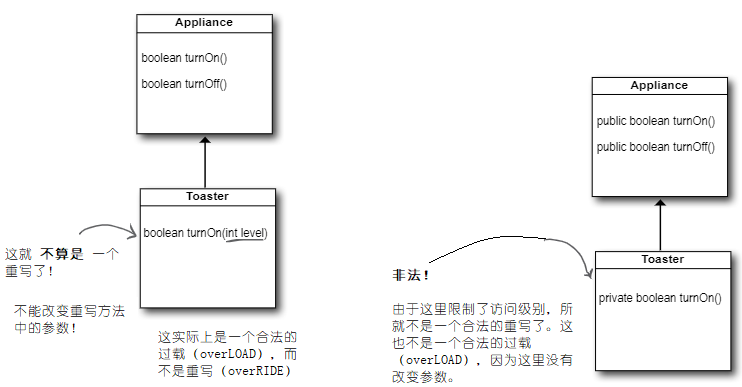
图 15 - 方法重写时的两条规则
方法的过载（Overloading a method）
方法的过载，名字一样，参数清单不同的两个方法。仅此而已。对于过载的方法，实际上不涉及到多态！
借助过载特性，可以实现方法的带有不同参数清单的多个版本，从而方便不同的调用者。比如有个只取用整数的方法时，调用代码在对其进行调用之前，就不得不将先将他的双精度数转换成整数。而在将该方法以另一个取用双精度数的版本对其进行过载后，对于这个调用者就容易多了。在对象生命周期那一章，将更多地了解过载。
因为方法过载特性打破了由超类所定义的多态约定，因此过载的方法有着更多的灵活性。
本质上看，过载方法是有着相同方法名称的一个不同方法。与继承和多态没有半毛钱关系。过载方法与重写方法不一样。
-
返回值类型可以不同。
既然参数清单不同了，那么也就可以随意改变过载方法中的返回值类型了。
-
不能只改变返回值类型。
在只改变返回值类型时，就不再是有效的过载了 -- 编译器会假定是在重写方法。除非返回值类型是超类方法中声明的返回值类型的子类型，这样做甚至不能算合法。要对某个方法进行过载，就必须修改参数清单，之后就可以随便修改返回值类型了。
-
可以随意改变过载方法的访问级别（提升或降低都是可以的）
可以限制更高的方法，去过载某个方法。因为新方法没有义务去满足被过载方法的约定，因此是无所谓的。
方法过载的合法示例：
public class Overloads {
String uniqueID;
public int addNums ( int a, int b ) {
return a + b;
}
public double addNums (double a, double b) {
return a + b;
}
public void setUniqueID (String theID) {
// 一大堆验证代码，然后：
uniqueID = theID;
}
public void setUniqueID (int ssNumber) {
String numString = "" + ssNumber;
setUniqueID(numString);
}
}
接口与抽象类
继承只开了个头。为运用好多态，就需要使用接口（interfaces, 不是GUI中的界面）。需要超越简单继承，通过按照接口规范，来设计和编写代码，才能达到兼具灵活性与扩展性的水平。Java中最酷炫的部分，在不使用接口的情况下，是达不到的。所以就算你在设计Java程序时拒绝使用接口，但你仍避免不了接口的使用。你会明白没有接口，是无法生存的。那么接口到底是什么呢？他是一个 100% 的抽象类。而什么又是抽象类呢？是一个无法初始化的类。有什么好处呢？很快就能看到。回顾一下上一张的结尾，通过使用多态参数，就可以让 Vet 中仅仅一个方法，就能够处理所有类型的 Animal 子类，而那仅仅只是冰山一角而已。接口就是多态（polymorphism）中的 多（poly）。抽象（abstract）中的 象（ab）。是 Java 国的 咖啡因（caffine）。
在设计 Animal 继承树时，是不是遗漏了什么？
这个类结构并没有什么毛病。通过设计，让重复代码降到了最低水平，同时也已经重写了那些应该有着特定子类实现的方法。从多态角度上看，因为可以使用 Animal参数（以及 Animal 的数组声明），来设计出使用到 Animal 类的程序，因此可以说已经很不错且灵活了，从而所有 Animal 的子类型 -- 包括在编写代码时想象不到的 -- 在运行时都可以传递进去并得到使用。还已经把所有 Animals 的共用协议（就是那四个希望外部世界知道的所有 Animals 都有的方法），放入到了 Animal 超类中，同时也已准备好生成新的狮子、老虎以及河马了。
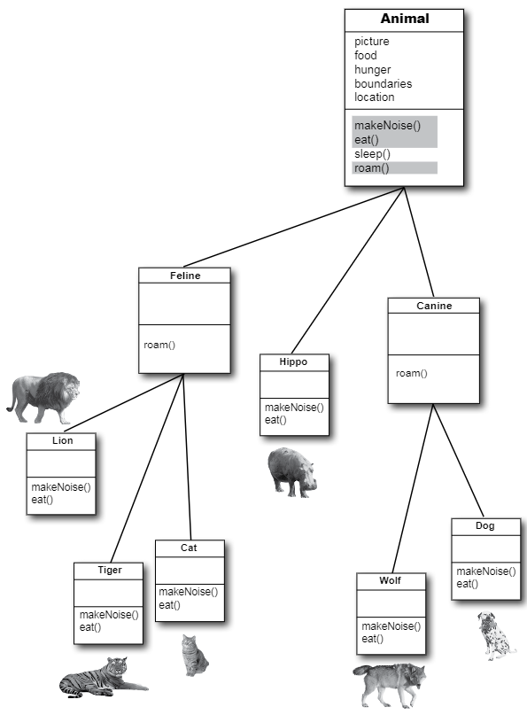
图 1 - Animal 继承树
我们可以这样说：
Wolf aWolf = new Wolf ();
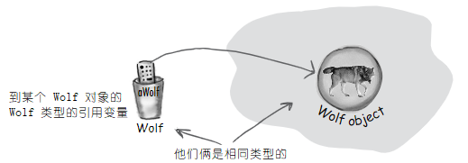
图 2 - 对象与对象的引用变量类型相同时
也可以这样说：
Animal aHippo = new Hippo ();
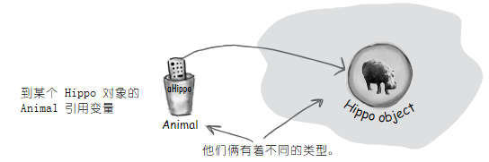
图 3 - 对象与其引用变量的类型不同时
但如果像下面这样，就会显得令人费解：
Animal anim = new Animal ();
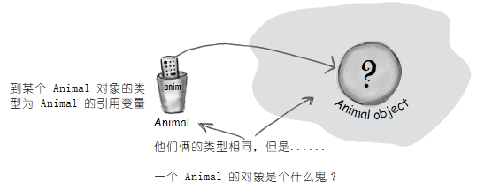
图 4 - 创建出一个 Animal 对象时
一个 new Animal() 对象会是怎样的 ？
图 5 - 一些可怕的对象
那些实例变量的值，都是些什么呀？
有些类就不应该被实例化！
去创建一个 Wolf 对象、一个 Hippo 对象，或者一个 Tiger 对象，这些都说得通，但一个 Animal 对象到底是个什么东西？它的形状是怎样？是什么颜色的？有多大？有几条腿......
尝试去创建一个 Animal 类型的对象，就好像 星际迷航中噩梦般的传输机故障。
怎样才能解决这个问题呢？为了实现继承和多态，Animal类肯定是需要的。但又要其他程序员只能对那些，Animal的不那么抽象的子类，而不是Animal本身进行初始化。我们要的是 Tiger 对象与 Lion 对象，而 不是 Animal 对象。
好在有这么一种简单的方法，来防止某个类不被初始化。也就是通过将类标记为 abstract，从而阻止人们在他前面说 new，之后编译器就会在任何时候、任何地方，把那些试图创建那个类型实例的举动，拦截下来。
仍可以将抽象类型，作为引用变量的类型使用。实际上这正是抽象类存在的首要原因（将抽象类用作多态参数或返回值的类型，或者用于构造多态数组）。
在设计类继承层次结构时，就面临着确定哪些是抽象类、哪些是具体的问题（When you're designing your class inheritance stucture, you have to decide which classes are abstract and which are concrete）。具体类是那些足够具体、可被初始化的类。某个具体类，就应该是可以构造出其对象的类。
要构造一个抽象类是很简单的 -- 将关键字 abstract 放在类的声明前面：
abstract class Canine extends Animal {
public void roam () {}
}
编译器会阻止对某个抽象类的初始化
抽象类意味着无人能构造出他的新实例。但仍然可以出于多态目的，将其用作某个引用变量声明中的类型，由于编译器会确保抽象类不会被初始化，因此就无需担心有人构建出抽象类类型的对象来。
abstract public class Canine extends Animal {
public void roam () {}
}
public class MakeCanine {
public void go () {
Canine c;
c = new Dog ();
c = new Canine ();
c.roam();
}
}
这个时候编译器就会报错：
Canine is abstract; cannot be initiated
抽象类在未被扩展时，实质上毫无用处、不会有取值、没有目的。
其中一个例外是，抽象类可以有静态成员，在 IO 那一章会涉及这个问题。
使用到抽象类时，在运行时真正做事的，是那些抽象类的子类的实例。
关于“抽象”与“具体”
不是抽象的类，就叫做 具体（concrete） 类。在 Animal 继承树中，是将 Animal、Canine 与 Feline 作为抽象类，将 Hippo、Wolf、Dog、Tiger、Lion及Cat作为具体类的。
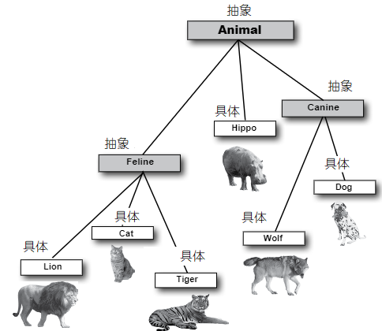
图 6 - Animal 继承树上的抽象和具体类
通读 Java API 文档，就会发现很多的抽象类，尤其是在 GUI库中。那么某个GUI组件看起来是怎样的呢？所谓GUI组件类， 是指诸如按钮、文本框、滚动条、对话框等等这样的GUI相关的众多类的超类。比如在构建一个 JButton时，并没有构建这个通用组件的实例并把实例放在屏幕上的。而是对组件的一个具体子类进行实例化，绝不会对组件本身进行实例化。
抽象与具体（abstract or concrete）？
什么时候类应该是抽象的？酒（Wine） 大概就是抽象的。但 红葡萄酒（Red） 和 白葡萄酒（White） 呢？大概率也是抽象的（至少对部分人是这样的）。那到底在继承体系中的什么地方，其中的事物才成为具体的呢？
是将 PinotNoir 设置为具体，还是同样作为抽象呢？看起来 “1997年份的骆驼庄园黑皮葡萄酒（the Camelot Vineyards 1997 Pinot Noir）” 好像是具体的，但又怎么确定呢？
再看看上面的 Animal 继承树。再给各个类安排具体和抽象时，到底恰当吗？是不是要对这个Animal继承树加以改进呢（而不是仅仅添加更多的动物）？
抽象方法
除了可以将类标记为 abstract，也可以将方法标记为 abstract。抽象类意味着那个类必须被扩展；而抽象方法，则是那个方法必须被 重写（be overridden）；对于抽象类中的部分（或全部）行为/方法，可能断定他们不被抽象类的更具体子类实现时，会毫无用处（You might decide that some (or all) behaviors in an abstract class don't make any sense unless they're implemented by a more specific subclass）。简单地说，对于抽象类的各个子类，任何通用方法实现都没有价值。设想一下，一个通用的 eat() 方法，到底会是什么样子？
抽象方法，是没有函数体的！
现在既然已经断定抽象方法中的代码不会有任何意义，那么就没有必要再加上函数体了。因此就没有了那一对花括弧了 -- 那么就只需用分号结束抽象函数的声明即可。
public abstract void eat();
图 7 - 没有函数体的抽象方法
在声明了一个抽象方法后，就必须把其所在的类也标记为 abstract。在非抽象类中，是不能有抽象方法的。
其中只要有一个抽象方法，那么那个类就必须是抽象类。但在抽象类中，是可以同时有抽象与非抽象方法的。
答疑
- 抽象方法有什么意义？我所知的是抽象类的意义在于，可把那些由各个子类继承的共用代码放在抽象类中。
将那些可被继承的方法实现（也就是带有确切方法体的那些方法），放在超类中，确实是不错的做法。那只是在这些代码确实能被子类使用到的时候。但通常的情况是，这些方法实现，并不总是能用到，因为基本设想不到那些子类可以利用上的通用代码呀。抽象方法的意义就在于，就算不放入任何确切代码，任意可以为一组子类型（子类）定义出 协议（protocol）。
- 为什么说这样做就好呢？
就是为了多态！别忘了，我们所需要的，是将超类作为方法参数与返回值类型，或者数组类型。这样就可以在不必重新编写新的方法的情况下，加入很多新的子类型。设想如果不将
Animal超类型（supertype）作为Vet中各个方法的参数类型，那么后续对Vet的修改将会多么麻烦。那就不得不给所有Animal的每个子类一个单独方法！一个用于Lion，一个用于Wolf，一个用于......，明白了吧。那么现在就可以使用抽象方法，就是说“这个类型的所有类型，都有这个方法”。多态的好处，就在这里啦。
所有抽象方法，都必须被实现
对抽象方法的实现，就如同方法的重写一样。
抽象方法没有方法体；他们仅是为了多态而存在。这就意味着继承树中最开始的具体类，必须实现 所有 抽象方法。
同样可以通过将自己要编写的类设置为抽象类，来将编写实现代码的责任推给其他人。在示例中 Animal 与 Canine 两个都是抽象的，因此他们都有抽象方法，类 Canine 就没有实现那些来自 Animal 的方法。不过只要到了最开始的具体类的地方，比如 Dog，那么这个子类就必须实现 所有 的同时来自 Animal 与 Canine 的抽象方法了。
在提及 “必须实现抽象方法”时，说的就是 必须提供一个方法体。那就意味着必须在具体类中，使用同样的方法签名（method signature, 即方法的名字与参数），以及与抽象方法中所声明的返回值类型兼容的返回值类型，创建出一个非抽象的方法来。该方法其他剩余部分则没有要求。Java所关心的，只是在具体类中，要有这么一个方法。
实战多态
这里假设尚不知道Java库中的 ArrayList 类，而需要要编写一个保存 Dog 对象的清单类。作为第一步，就只给这个清单类一个 add() 方法。这里将使用一个 Dog 数组 （Dog []） 来保存所加入的 Dog 对象，同时给定其长度为 5。若达到了 5 个 Dog 对象的限制，那么虽然仍旧可以调用 add() 方法，但不会有任何效果。在尚未达到限制时，add() 方法将把所给的Dog对象，放入到下一个可用的索引位置，之后对下一个可用索引（nextIndex）加一。
构造自己的 Dog 专用清单
（或许这是世上最糟糕的从头开始构建类似于ArrayList类的尝试）

图 8 - 第一版的自制对象清单
哦吼，现在还需要保存 Cats 了
现在有这么几个选择：
-
再单独构建一个类，
MyCatList，来保存Cat的那些对象。这就相当笨拙。 -
仅构建一个类，
DogAndCatList，其中有两个不同的数组，作为实例变量，同时还有不同的add()方法：addCat(Cat c)与addDog(Dog d)。这也是一个笨拙的方法。 -
构造一个可以接收所有
Animal子类（就目前这种需求规格修改为要添加Cats来看，后面肯定还会有其他种类的动物要往里面添加）的、具异质性的AnimalList类。这当然是最好的方案了。那么就着手将这个类修改成更具通用性、可以接收所有Animal而不仅是Dogs 的类吧。其中的关键修改，已被标记出来了（代码逻辑没有变，只是把代码中所有的Dog修改成了Animal）。
构建自己的Animal专用清单
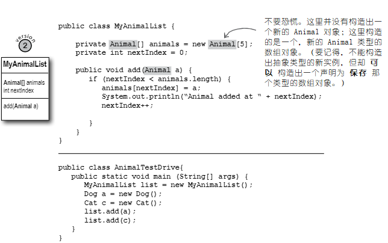
图 9 - 第二版的 Animal 清单
运行结果：
$ java -jar target/com.xfoss.learningJava-0.0.1.jar
Animal added at 0.
Animal added at 1.
对于不是 Animal 的对象呢? 为什么不构造一个可接收所有东西的通用类呢 ？
你可能猜到了要做的是什么。这里就要将数组类型，与 add() 方法的参数类型，一并修改为Animal 类 之上（above） 的某个东西。某个比 Animal 更 通用的、更为抽象的东西。然而怎么才能做到呢？毕竟示例中的 Animal 之上，已经没有超类了呀。
再一次，也许我们可以......
还记得ArrayList的那些方法吗？看看 remove、contains以及 indexOf 这些方法，他们都使用到一个类型为.....的对象，是的，那就是 Object！
Java 中的所有类，都是对类 Object 的扩展。
类 Object 是所有类的始祖；他是万事万物的超类。
尽管运用了多态，但还必须创建一个有着接收和返回多态类型方法的类。如果在Java中缺少这么一个可以作为万物始祖的超类，那么Java程序员就无法创建出有着可以接收定制类型，那些他们在编写类似 ArrayList 这样的类时无法想象到的各种各样的类型 ，的方法的各种类来（Even if you take advantage of polymorphism, you still have to create a class with methods that take and return your polymorphic type. Without a common superclass for everything in Java, there'd be no way for the developers of Java to create classes with methods that could take your custom types... types they never knew about when they wrote the ArrayList class）。
因此实际上在不知情的情况下，从一开始就已经在构造类 Object 的子类了。 你所编写的每一个类，都是对 Object 的扩展，尽管没有提到 Object。但可以看着像是下面这个样子：
public class Dog extends Object {}
等一下，Dog 不是已经扩展了 Canine 了吗？好吧，编译器将让 Canine 去扩展 Object，然而 Canine又是扩展的 Animal。还是没问题，这个时候编译器又会去让 Animal 对 Object 进行扩展。
所有的没有显式扩展另一个类的类，都是隐式地扩展了 Object。
那么，因为 Dog 扩展了 Canine，他就不算是直接扩展了 Object（但他还是间接扩展了 Object），对于 Canine，也是这样的，不过Animal则是直接扩展了 Object。
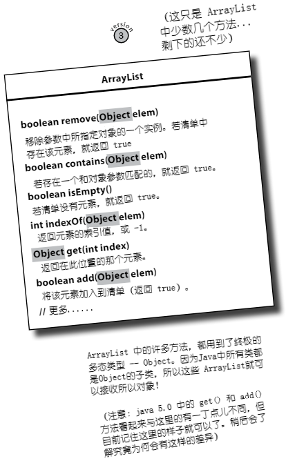
图 10 - 第三版的数组列表 -- ArrayList
那么在这个超超元类的 Object 中究竟有些什么呢 ？
So what's in this ultra-super-megaclass Object ?
假如你是Java，那么你会希望每个对象都有些什么行为（方法）呢？ 嗯...，来查一下吧，一个可以检查两个对象是否相等的方法如何？一个可以获取到对象的确切类类型的方法怎样？或许有那么一个可以获取到对象的哈希码的方法，从而可以在哈希表中去使用到对象会更好（关于Java的哈希表，会在第16章中涉及）；哦，还有一个更不错的，可以打印出对象字符串讯息的方法。
就好像施了魔法一样，类 Object 确实有着实现这四个目的的方法。虽然他还有着其他方法，但这里只关注这四个。
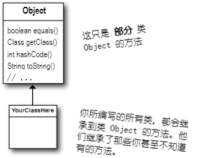
图 11 - 所有类都会继承到类 Object 的那些方法
答疑
- 类
Object是抽象类吗 ？
不是。这不是通常意义上的抽象类（Well，not in the formal Java sense anyway）。由于
Object具有可被所有类继承、且开箱即用的方法实现代码，因此他是非抽象类。
- 那么可以重写
Object中的这些方法吗 ？
可以重写其中一些。但有些方法是被标记为
final的，因此就不能对其进行重写。对于hashCode()、equals()及toString()三个方法，是强烈建议进行重写的，本书后面会叫你怎么去重写他们。对于另一些代码，比如getClass()，他们就必须以特定的、有保证的方式运作。
- 既然
ArrayList的那些方法，对于使用Object已经足够通用，那写ArrayList<DotCom>又有什么意义呢？是将ArrayList限制为只能保存DotCom对象的意思吗 ？
那确实是在对其进行限制。在 Java 5.0 版本之前，
ArrayList就是无法施加限制的。不过时至今日，在Java 5.0中，通过ArrayList<Object>这种方式对其进行限制，已成为必须的了。ArrayList<Object>的意思，就是 一个被限制为属于对象的任何东西的ArrayList，也就是Java中从任何类类型初始化得来的任何对象。后面会讨论到这种新的<type>语法。
- 好的，回到类
Object作为非抽象的问题上（那么我猜那意味着他是具体的），我们该 怎样 构造出一个Object的对象？ 那样做不就和构建一个Animal的对象一样古怪了吗 ？
不错的问题！确实有构造
Object实例的需求。在有的时候，就是只需要一个作为对象使用的通用对象。也就是一个 轻量级（lightweight） 对象。就目前所知，Object类型的实例最常用在线程同步上（将在第15章涉及，By far, the most common use of an instance of typeObjectis for thread synchronization）。现在可以不管这个，只需知道即使可以构造出Object的对象，也很少会用到这个。
- 那么可以说
Object类型的主要目的，就是用作多态下的参数和返回值类型，就像是在ArrayList中那样吗 ？
Object类的主要目的有两个：其一是对于那些需要处理自己或其他人编写的所有类的方法，作为他们的多态类型；再者就是，为Java中所有对象，提供给他们在运行时所需要的方法代码（把这些代码都放在类Object中，那么所有类都能继承到这些代码）。在Object中的一些重要方法与线程相关，在本书的后面会看到。
- 既然使用多态类型有这么多好处，那为什么不把 所有 方法都做成接收和返回
Object类型呢 ？
呃......想想这样做会发生什么。那样肯定会完全破坏“类型安全”（For one thing, you would defeat the whole point of 'type-safty'），而“类型安全”正是Java语言中，对代码的最大保护机制。Java的类型安全机制，确保不会在计划的对象类型之外，请求到其他对象类型。比如，让一个
Ferrari（以为是一个Toaster）去烤面包。 事实上即使在各处使用了Object类型的引用变量，也不必担心会出现热烘烘的Ferrari情形。因为当那些类型是由Object引用变量类型表示时，Java 就会将其视为类型Object的一个实例变量。那么就只能调用类Object中声明的那些方法！所以假如这样写代码：
Object o = new Ferrari ();
o.goFast (); // 这是非法的！
这样的代码甚至无法通过编译器检查。 Java作为强类型语言，其编译器将就所调用对象的某个方法，看这个对象是否实际有能力响应，进行检查（Because Java is a strongly-typed language, the compiler checks to make sure that you're calling a method on an object ）。也就是说，在调用某个对象引用变量上的方法时，只能调用该引用类型确实有的方法。在后续章节，会详细讨论Java的“类型安全”特性，所以即使现在还不是很明白，也没有关系。
使用多态的Object类型的引用变量的代价
在开始将类型Object用于所有超灵活参数级返回值之前，需要考虑一些将类型 Object作为参数使用时的一些小问题。同时记住这里不会涉及构造类型Object实例；这里讲的是构造其他类型的实例，而只是使用类型Object做引用变量（we're talking about making instances of some other type, but using a reference of type Object）。
在将某个对象放入 ArrayList<Dog>时，是作为 Dog被放入进去的，同时取出来时也是一个 Dog:
ArrayList<Dog> myDogArrayList = new ArrayList<Dog>;
Dog aDog = new Dog ();
myDogArrayList.add (aDog);
Dog d = myDogArrayList.get(0);
而如果将其声明为了 ArrayList<Object> 时，会怎样呢？在要构造一个名义上要保存任何种类的Object的 ArrayList时，就可以这样声明：
ArrayList<Object> myDogArrayList = new ArrayList<Object>;
Dog aDog = new Dog();
myDogArrayList.add(aDog);
但在尝试获取这个Dog对象，并将其赋值给一个 Dog 的引用变量时，会怎样呢？
Dog d = myDogArrayList.get(0);
这样是行不通的。这不会被编译！！ 在使用
ArrayList<Object>时，那么get()方法将返回类型Object。编译器知道对象是从Object继承的（在其继承树的某处），但不知道对象就是Dog！！
所有从 ArrayList<Object> 中出来的东西，都是作为类型 Object 的一个引用变量，而不管他原本是个什么样的对象，或者在将其加入到清单时他的引用变量类型是什么。

图 12 - ArrayList<Object>对象的存入与取出
当一个 Dog 不再像一个 Dog 那样行事时
将所有东西都多态地处理，看成是一个 Object，这样做的问题就是，这些对象将失去（暂时，而不是永久）他们自己的特质。Dog将失去他的狗性。下面是一个传入Dog 类型对象，返回同一 Dog 对象，不过将返回类型声明为了类型 Object 而不是 Dog 的示例：
public void go () {
Dog aDog = new Dog();
Dog sameDog = getObject (aDog);
}
public Object getObject (Object o) {
return o;
}
上面的
Dog sameDog = getObject (aDog)是不会工作的！就是该方法返回了一个到与参数所引用的Dog非常相似的引用变量，但返回类型Object就意味着编译器不会让你将返回的引用变量，赋值给除了Object之外的任何类型的变量。getObject()方法中返回的是同一个Dog的引用，但是作为类型Object返回的。这样做仍然是合法的。注意：就与使用ArrayList<Object>而非ArrayList<Dog>时的get()方法类似。
incompatible types: Object cannot be converted to Dog
在所有东西都可以通过对
Object的IS-A测试，所以可将所有东西都赋值给类型为Object的引用变量，而正因为如此，修改为下面这样，就可以运行（尽管这样的代码没有什么用处，马上就能见到）。因为对于Java中的所有类，在其继承树的顶端，都是Object，正因为如此，Java 中所有东西，都是类型Object的实例。
public void go () {
Dog aDog = new Dog ();
Object sameDog = getObject (aDog);
}
public Object getObject (Object o) {
return o;
}
这些无法叫唤的对象
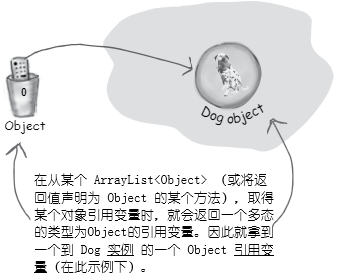
图 13 - 到具体类型引用变量的类型为 Object 的多态引用变量
到这里就清楚了，在某个对象是由声明为类型 Object的变量引用时，就无法将其赋值给声明为对象具体类型的变量了。还知道在返回值或参数类型被声明为类型 Object时，这种情况就会发生，如如同上面的示例，在将对象放入到一个使用 ArrayList<Object>的、类型为 Object 的 ArrayList中那样。然而这样会有什么影响呢？使用一个 Object的引用变量来表示一个 Dog对象会是一个问题吗？下面就来尝试在原本是Dog但编译器以为是Object的对象上，调用一下Dog的一些方法试试：
Object o = al.get(index);
int i = o.hashcode();
o.bark();
其中的
int i =o.hashcode();语句没有问题，类Object是有hashCode()方法的，因此可以在 Java中的所有对象上调用这个方法。o.bark();语句就不会被编译！o做不了这事！类Object对bark()是毫无头绪的。就是作为人类是知道位于index处的对象实际上是一个Dog对象，但作为机器的编译器是不知道的。
编译器根据 引用变量 类型，而不是实际的对象类型，来判断是否可以调用某个方法。
就算作为人类，知道那个对象可以（“老实说，他确实是个 Dog......”）调用某个方法，编译器还是指挥将其视为一个通用的 Object。就编译器所能知道的全部来讲，将在那里放了个 Button 对象，抑或是一个 Microwave 对象，或其他任何的不知道如何去叫唤的对象。
在使用某个引用变量时，编译器将检查 引用变量 的类型，而不是 对象 本身的类型，来得出是否可以调用那个引用变量上的方法。
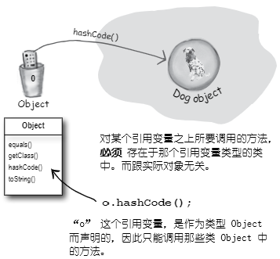
图 14 - 引用变量上所能调用方法的范围
了解核心的 Object
对象包含了 所有 其从他的各个超类所继承的东西。也就意味着 每个 对象 -- 不管他的具体类类型是什么 -- 都是类 Object 的一个实例。那也意味着，在 Java 中的所有对象，不仅可以作为一个 Dog、Button、Snowboard看待，同时都可以作为一个 Object 看待。在写出 new Snowboard()时，就得到一个位于内存堆上的对象 -- 一个 Snowboard 对象 -- 而这个 Snowboard 则是在作为他自身一部分的、一个表示 Object 对象的内核周围，封装上各层超类得来的。
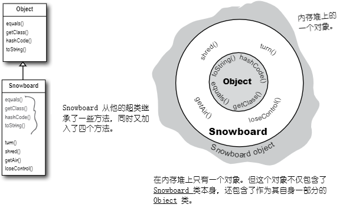
图 15 - Object 是所有对象的内核
“多态” 意即 “多种形式”（"Polymorphism" means "many forms"）。
比如在上面的示例中，就 可将 Snowboard 既可以视为 Snowboard，也可视为 Object。
在将某个对象放入到
ArrayList<Object>中后，就只能将这个对象视为Object了，而与在将其放入时他的类型无关。 在从某个ArrayList<Object>取得一个引用变量时，该引用变量始终时类型Object的。 也就是得到的是一个Object的遥控器。
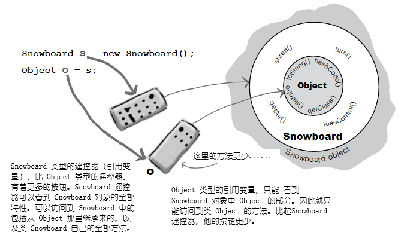
图 16 - 同一对象不同引用变量的区别
将某个对象引用变量，强制转换为其真实类型。
Casting an object reference bask to its real type.
虽然是用 Object 类型引用变量来表示的 Dog 对象，但该对象实际仍是一个 Dog 对象，但在要调用一个特定于 Dog的方法时，就需要一个声明为类型 Dog的引用变量。在可以肯定该对象真的是一个 Dog时，就可以通过拷贝那个 Object 引用变量，并使用一个强制转换运算符(Dog)，来强制那个拷贝成为一个 Dog的引用变量，从而构造出一个新的到该对象的 Dog 引用变量。现在就可以使用这个新构造出来的 Dog 引用变量，来调用类 Dog 中的方法了。
Object o = al.get(index);
Dog d = (Dog) o;
d.roam();
其中
Dog d = (Dog) o;语句，强制将o转换成我们可以肯定的就在那里的Dog。
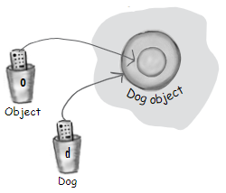
图 17 - 拷贝一个 Object 类型的引用变量，并将其强制转换为 Dog类型
若不确定那个对象是一个 Dog，则可以使用 instanceof 运算符进行检查。这是因为在进行强制转换时出错的话，就会在运行时收到ClassCastException，并进入一个程序挂起。
if (o instanceof Dog) {
Dog d = (Dog) o;
}
现在知道Java有多么重视 引用 变量的类中的方法了吧。
只有引用变量的类中有着某个方法，才能对其引用对象上的那个方法进行调用（You can call a method on an object only if the class of the reference variable has that method）。
回想一下类中作为合约的那些 public 方法，即对外界有关可以完成的事情的许诺。
在编写某个类时，总是会对外部代码 暴露 一些方法。暴露 某个方法即是要令到某个方法可被访问，这通常通过将其标记为 public 实现。
设想这样的情景：正在编写一个小企业的账户系统。一个为 “西蒙冲浪用品店”定制的应用。作为一名良好的代码重用者，根据某个 Account类的文档，发现该类正好能满足这个应用的需求。每个账户实例，代表着该店铺的一名顾客的账户。那么这里就会考虑在自己的业务逻辑中，当意识到要获取某个账户余额时，去调用某个账户对象上的 credit()及debit()方法。毫无问题 -- 因为会有一个 getBalance()方法可以很好的做到。
除非......在调用 getBalance() 方法后，运行时整个事情失控。忘掉 Account 类的文档吧，他根本就没有那个方法。
但这不会发生在我们身上的。因为每次在引用变量上使用.运算符（a.doStuff()），编译器都会查看该 引用变量 的类型（也就是 a 所声明的类型），并对那个类进行检查以确保其有着那个方法（doStuff()），且那个方法确实接收传递给他的参数，并返回所期望得到值的类型。
只要记住，编译器就参考变量的类进行检查，而不是对 = 另一端的实际对象的类进行检查。
在需要修改合约时，怎么办？
好的，假设你是一个 Dog （对象/实例）。那么你的 Dog类就不是定义何为你的 唯一 合约。记住，你还从你的所有超类，继承到一些可访问（accessible, 通常就是 public）方法。
确实，你的 Dog 类定义了一份合约。
但不是你的合约的 全部。
类 Canine 中的所有东西，是你的合约的一部分 。
类 Animal 中的所有东西，是你合约的一部分 。
类 Object 中的所有东西，是你合约的一部分 。
通过 IS-A 测试，你都是这些事物 -- Canine、Animal 以及 Object 的一员。
然而假如那个在 Animal 模拟程序中涉及了你的类的那个人，现在想要在一个有关 Animal 对象的 “Science Fair Tutorial” 的应用中使用你（class Dog）的话，会怎样呢？
好的，现在假设你就是那名类 Dog 的程序员。没问题吧？只要往类 Dog 里加入几个方法就可以了。通过加入方法，就不会破坏其他人的代码，这是因为你并没有碰到那些其他人可能会调用的、Dog对象上的既有方法。
你发现了这样的方法的劣势了吗（将 Pet的那些方法，加入到 Dog类可以吗）？
脑力时间
假如你是类 Dog的程序员，而需要将 Dog修改为可以干 Pet 的事情，你会做些什么。我们知道可以将新的 Pet 的行为（方法），添加到Dog类就可以，而且不会破坏其他人的代码。
但是......这是一个 PetShop 应用。他不光有 Dogs！同时如果有人要在一个有着野狗的应用中使用你的 Dog类时怎么办？你只是在考虑你的选项可能会怎样，而没有考虑Java怎么来处理这些事。想想你该怎样去修改那些 Animal 类，来包含进 Pet 的行为，从而解决这个问题吧。
现在停下来思考一下，在下一页就会揭晓答案。
（如果直接看答案，就会让练习没有意义，也让你失去燃烧脑力的机会）
先来看看在 PetShop应用中，重用原有一些类的各个设计选项
接下来的几页中，将贯穿几种可能。不会关注后续各种情形下 Java 是否可以切实做到。在各种取舍中求得平衡后，就自然会跨过这条沟壑。
选项一
这是容易的路径，将 Pet 的方法放入到类 Animal中。
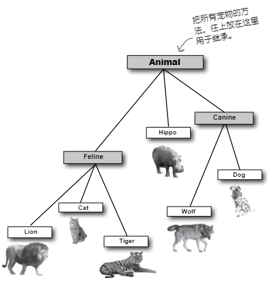
图 18 - 合约的修改：选项一，把所有宠物的方法，放在类 Animal中
优点 ：
所有动物将直接继承到这些 Pet 的行为。一点也不必修改既有的那些 Animal 的子类，同时往后创建的所有 Animal子类，也都将获益于对这些方法的继承。这样，类Animal就可以在所有打算将 Animal作为宠物对待的程序中，作为多态类型加以使用。
缺点 ：
那么......，你什么时候在宠物店看到过河马？狮子？狼？这说明将宠物的那些方法，给到那些非宠物上面，是很危险的。
还有，几乎可以肯定的是，将不得不去修改诸如 Dog 和 Cat 这样的宠物类，因为狗子和猫咪基本上在宠物行为的实现上，有着巨大的差别。
选项二
在选项一的基础上，将宠物的那些方法，放在类 Animal 中，但这次是将这些方法标记为 abstract，从而强制让Animal的那些子类重写这些方法。
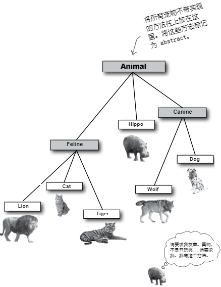
图 19 - 合约的修改：选项二，把所有宠物的抽象方法，放在类 Animal中，继承树中的每个具体类，都必须加以实现
优点：
这样就可以在不必让那些非宠物的动物们按照宠物的那些方法（比如beFriendly()）行事的同时，又能享受到选项一的那些优势。所有Animal类都有着这些方法（因为这些方法放在类 Animal中），但因为这些方法是抽象的，因此那些非宠物的 Animal类就不会继承到任何功能。所有类都必须重写这些方法，但他们可以让这些方法“不做事”。
缺点 ：
因为在 Animal类中的那些宠物方法都是抽象的，那么所有 Animal的子类都被强制要求去实现全部的这些宠物的方法。（记住，所有抽象方法，都必须由继承树下部第一个具体子类去实现。）这是多么浪费时间的一件事！就必须坐在那里，把每个宠物的方法，在所有那些具体非宠物类，以及所有将来的那些子类中，都要敲入一遍。同时也没有解决那些非宠物的动物，在干着宠物的那些事情的问题（因为这些非宠物从类Animal继承到的宠物的功能），那么这样的合约是不良的。就算在非宠物那里这些宠物的方法不干任何事情，那些非宠物类，还是向外界宣告了，他们有着这些宠物的方法。
这种方式看起来一点也不好。那么把除开某种Animal类型所需的所有东西都装进类Animal，看起来是不对的。除非是把所有 Animal 子类都需要的才装进类Animal。
选项三
将那些宠物的方法，只放入到这些宠物所在的类中。
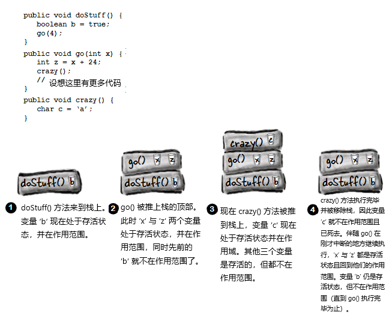
图 19 - 合约的修改：只将宠物的那些方法，放入到可以成为宠物的那些类中
优点 :
再也不必担心河马会在门口欢迎你或舔你的脸了。宠物的那些方法，现在就在属于他们的地方，且只在属于他们的地方。狗子们可以实现这些方法，同时猫咪们也可以实现这些方法。但不是每种动物都必须知道这些方法。
缺点 ：
这种方法有两大问题。首先，必须就某个协议达成一致意见，同时所有当前及将来的那些宠物的 Animal类的程序员，也必须 了解 该协议。所谓协议，指的是那些确定下来的那些所有宠物都具有的方法。没有任何东西来承载这个宠物合约（The pet contract without anything to back it up）。那么如果某个程序员在理解这个协议时出了一点问题时后怎样呢？比如说，某个接收字符串的方法，在被错误的给与了整数时，或者把 beFriendly() 错误的命名为了 doFriendly()？因为这个方法没有放在合约中，编译器就没有办法帮你检查是否正确地实现这些宠物的方法。就会有人随后就使用到这些宠物的 Animal类，并发现这些类并不是所有都能正常工作。
其次，无法再对这些宠物的方法，使用多态机制了。所有需要使用到宠物行为的类，就都必须了解每个的宠物类！也就是说，现在再也不能把 Animal当作多态类型了，因为编译器不允许你在 Animal 引用变量上调用某个宠物的方法（即使那确实是一个 Dog 对象），因为 Animal 没有这个方法。
那么我们真正需要的是什么呢 ？
- 一种只在宠物类中才有的宠物行为的方式（A way to have pet behavior in just the pet classes）
- 一种不需要重复的键盘输入，就能确保所有宠物类都具有同样的所定义全部方法的方式（这些方法名字相同、参数相同、同样的返回值类型、不会有找不着的方法等等），且所有程序员都能正确获取到这些方法。
- 一种可以利用上多态优势，以便在无需对每个、每种宠物类，都使用参数、返回值类型及数组的情况下，所有宠物都能被调用到他们的方法（A way to take advantage of polymorphism so that all pets can have their pet methods called, without having to use arguments, return types, and arrays for each and every pet class）。
看起来似乎需要在顶部放置 两个 超类。

图 21 - 顶部有 Animal 和 Pet 两个超类的动物继承树
这种 “两个超类” 的方案，只有一个问题 ......
** 这种做法，叫做 “多重继承”，这样做可能成为 相当糟糕的事情**。
当然，这要是能在 Java 中做到才能称得上是“相当糟糕的事”。
显然，Java是不允许多重继承的。因为多重继承有着著名的 “致命死亡钻石”问题（a problem known as The Deadly Diamond of Death）。
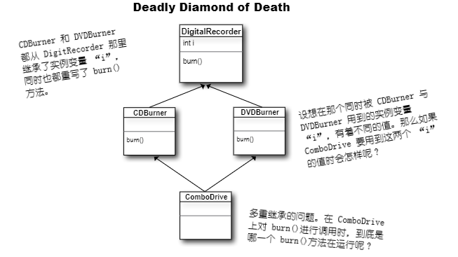
图 22 - 致命死亡钻石问题，the Deadly Diamon of Death
允许致命死亡钻石的语言，因为不得不加入特殊规则来解决潜在的歧义，从而会带来一些恶心的复杂性。额外的那些规则，除了意味着在学习掌握这些规则时付出额外努力，还有在编写代码时对这些“特别实例”的关注。Java语言作为一种简单的语言，有着不会在某些情形下就随意改变的一致性规则。因此Java（与 C++ 不一样）就不用你去考虑这个致命死亡钻石问题。但这又回到了最初的问题！怎么去解决这个 Animal/Pet 问题？
使用接口来拯救！
Interface to the rescue!
Java给到了一个解决方案。就是 接口。这指的不是 GUI 中的接口，也不是通常说的接口，如“那是 Button 类 API 的公开接口”中的接口，这里的接口，是 Java 语言的关键字 interface。
Java interface 在不带来致命死亡钻石（the Deadly Diamon of Death, DDD）伤害的同时，又带来了多重继承的大部分多态好处，从而解决了多重继承的问题。
interface 避开 DDD 那些坑的方式，惊人的简单：把所有方法做成抽象的方法！照这种方式，子类就 必须 实现这些方法（记住，抽象的方法，必须在第一个具体类中实现），因此在运行时JVM不会被到底应该调用两个继承版本中的哪一个搞晕。
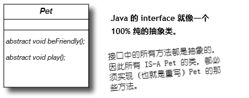
图 23 - Java 的 interface
这样来定义一个 interface:
public interface Pet {...}
使用关键字
interface而不是class。
这样来实现一个 interface:
public class Dog extends Canine implements Pet {...}
使用关键字
implements带上interface的名字。注意在实现某个interface时，同时仍然好对某个类进行扩展。
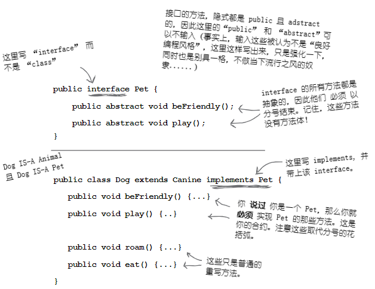
图 24 - Pet interface的构造与实现
答疑
- 等一下，由于不能把任何实现代码放在
interfaces 里，那么这些interfaces 就没有真正带来多重继承。如果所有方法都是抽象的，那么interface究竟有什么好处呢？
多态机制，多态机制，多态机制。使用
interfaces 在灵活性上是终极的，因为使用interfaces 而不是具体子类（甚至抽象的超类类型），作为参数或返回值类型，就可以以实现了那个interface的所有具体类类型，进行传递（Interfaces are the ultimate in flexibility, because if you use interfaces instead of concrete subclasses(or even abstract superclass types) as arguments and return types, you can pass anything that implements that interface）。同时可以试想一下， 在具备interface的情况下，类就不必只来自单一的继承树了。某个类可以对一个类进行扩展，再去实现某个interface。而另一个类在实现同一个接口的同时，可以来自完全不同的继承树！所以就可以根据对象所扮演的角色，而不是其从哪个类类型初始化得来去对待他（So you can get treat an object by the role it plays, rather than by the class type from which it was instantiated）。
事实上，在运用
interface来编写代码后，甚至不需要将某个超类给到其他人去扩展。只需要给他们一个接口然后告诉他们：“这就够了，我不在乎你那边的继承结构是怎样的，只需要实现这个interface就可以了”。
因为
interface中的大多数方法，在进行通用实现后都没有什么意义，因此不将实现代码放在interface里头这种实践，对大多数优良设计就不再是个问题。也就是说，即使不强制将这些大多数interface方法设置为抽象方法，这些方法也需要被重写。
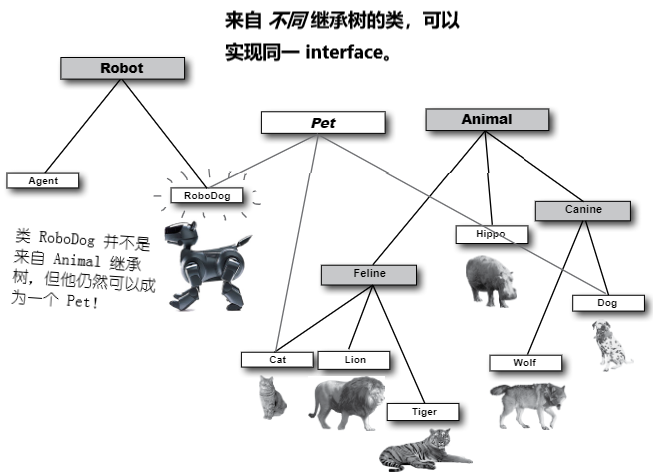
图 25 - 来自不同继承树的类，可以实现同一个interface
在将 类 作为多态类型（比如某个类型为 Animal 的数组，或者取 Canine 类型参数的某个方法）时，该类型下的对象，就只能来自同样的继承树。而且不能时继承树的所有地方，这些对象只能来自用作多态类型的超类的某个子类。类型 Canine的参数，就只能接受一个 Wolf或者Dog，而不能接受 Cat 或 Hippo。
但在使用 interface 作为多态类型时（比如一个 Pet 的数组），该 interface 类型下的变量所指的对象，就可以来自继承树的任意位置了。唯一要求是这些对象，是来自某个实现了该 interface 的类。Java API中允许不同继承树中的类对同一 interface 进行实现，是非常关键的。想要某个对象能够将其状态保存到文件中？那么对 Serializable 这个 interface 进行实现就可以了。想要一些对象在一个单独的执行线程中运行他们的方法？那么对 Runable 这个 interface进行实现就可以了。明白了吧。在后续章节将了解更多有关 Serializable 和 Runable 这两个 interface的细节，这里就只是要记住，不管类来自继承树的哪里，都可能需要继承这些 interfaces。几乎 所有 类，都是希望能进行保存或执行的。
更重要的是，一个类可以实现多个 interfaces！！
某个 Dog 对象 IS-A Canine，同时 IS-A Animal，还 IS-A Object，这些都是通过继承得来的。但经由实现 interface得来的一个 Dog IS-A Pet，同时该Dog还可以实现其他的接口。可以这样写：
public class Dog extends Animal implements Pet, Saveable, Paintable {...}
牢记
红玫瑰，白牡丹
扩展一，实现俩
Java重视家庭观
父辈只能有一个！某个Java类只能有 一个 父辈（超类），而正是那个父辈，定义了你是谁。但你可以实现多个
interfaces, 这些interfaces 定义了你可以扮演的角色。
怎样才知道，究竟应该构造一个类，一个超类，一个抽象类，还是一个 interface呢？
-
在新的类不能通过既有类型的
IS-A测试时，就要构造一个不对其他类（当然除了Object）进行扩展的类了 -
仅在需要构造某个类的 更具体 版本，且需要重写或加入新的行为时，才去构建一个子类（也就是对某个类进行扩展）
-
在打算为一组子类定义一个 模板，且已经有一些所有子类都能使用的实现代码时，就要使用一个抽象类了。如果要保证其他人不能构造出某个类的对象，那么就让这个类作为抽象类。
-
在想要定义对于不论位处哪个继承树的类，都可以扮演的角色时，就要使用一个
interface。
调用某个方法的超类版本
- 在构造某个具体子类时，既要重写某个方法，又需要该方法的超类版本的行为，该怎么办？也就是说，不希望通过重写来替换掉这个方法，而只想把一些额外特定代码，添加到这个方法。
呃... 请想想“扩展” 一词的意思。良好“面向对象”设计的一个方面，就是对如何去设计那些为了重写的代码的关注。也就是说，在抽象类中所写下的方法代码，就应该是可以支撑到具体实现的那些足够通用的代码（One area of good OO design looks at how to design concrete code that's meant to be overridden. In other words, you write method code in, say, an abstract class, that does work that's generic enough to support typical concrete implementations）。不过这些具体代码，并不足以应对 全部 特定于子类的工作。因此子类就会重写方法，并通过添加其剩余代码，对类进行 扩展。在子类里使用关键字
super，就可以调用到某个重写方法的超类版本。
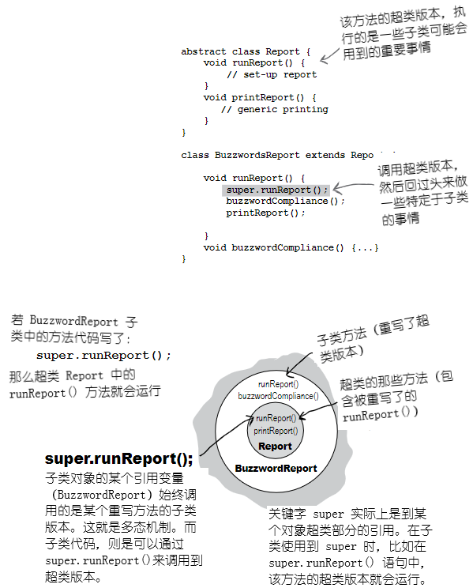
图 26 - 子类对超类方法的调用：关键字 super
重点
- 在不希望某个类被实例化（也就是不希望有人构造那个类的对象）时，就将该类用关键字
abstract标记起来； - 抽象类可以同时有抽象与非抽象方法；
- 某个类就算只要有一个抽象方法，就必须被标记为抽象类；
- 抽象方法没有方法体，同时其声明是以分号（
;）结束的（没有花括弧）； - 继承树中的第一个具体类，必须实现全部抽象方法；
- Java中每个类，都直接或间接是类
Object（java.lang.Object）的子类； - 可以
Object类型的参数和/或返回值类型，来声明方法； - 对于某个对象，只能调用作为该对象的引用变量类型的类（或
interface）中有的那些方法，这跟该对象实际类型无关。因此引用变量类型为Object类型的对象，就只能用于调用类Object中定义的方法，而与该引用变量实际所指的对象类型无关； - 类型
Object的引用变量，在不使用强制转换运算符的情况下，不能赋值给任何其他类型的引用变量。可使用强制转换，来将一种类型的引用变量，赋值给该类型的子类型的引用变量，但如果内存堆中的对象，与强制类型转换运算不兼容时，运行时就会转换失败。比如：
Dog d = (Dog) x.getObject(aDog);
- 从
ArrayList<Object>中拿出的所有对象的类型，都是Object（意即除非使用强制类型转换，否则这些对象只能被Object类型的引用变量所引用）； - 由于多重继承会带来“致命死亡钻石”问题，因此Java中不允许多重继承。这就意味着只能对一个类进行扩展（也就是只能有一个直接的超类）；
interface就像一个 100% 的抽象类。只用于定义抽象方法；- 使用关键字
interface，而不是class, 来创建interface； - 使用关键字
implements来实现interface，比如：
public class Dog extends Canine implements Pet
- 类可以实现多个
interfaces； - 因为
interface的全部方法，隐式的都是public与abstract的，所以实现某个interface的类，就必须实现该interface的全部方法； - 使用关键字
super来从子类中调用所重写方法的超类版本。比如super.runReport();
构造器与垃圾回收：对象的生命与死亡
对象生下来又死去（Objects are born and objects die）。你负责了某个对象的生命周期。你决定何时及怎样去 构造 他。你决定何时去 摧毁 他。即使你没有亲自去 摧毁 某个对象，也是有意无意的 抛弃 了他。而一旦某个对象被抛弃，无情的 垃圾收集器（Garbage Collector, gc） 就会让他消失，收回该对象所占用的内存。要编写Java程序，就会创建对象。早晚都会让某些对象死去，否则就会耗尽运行内存。本章将了解对象是如何创建出来的，在他们存活的时候呆在哪里，以及如何高效地留存或弃用他们。这就是说要涉及到内存堆（the heap）、栈（the stack）、作用范围（scope）、构造器、超级构造器（super constructors）、空引用（null references）等等。警告：本章涉及可能令某些人反感的对象死亡的材料。介意者请勿阅读。
栈与堆：Java万物存在之处
在了解创建对象涉及到的东西之前，就必须先往后一点。需要了解Java中各种东西都存在于什么地方（以及存在多长时间）。那就要了解栈和堆（the Stack and the Heap）。Java程序员关心内存的两个区域 -- 一个是对象所在的内存堆（the heap），另一个是方法执行（method invocations）与本地变量所在的栈（the stack）。在JVM启动时，就从所在的OS获取到一块内存，并使用这块内存来运行你的Java程序。至于有多少内存，以及后期是否可以调整大小，取决于所运行的JVM版本（以及在何种平台）。不过通常你没有话语权，且在良好编程下，也无需关心（这方面后期会讨论更多）。
已知所有 对象 都存活在可垃圾回收的堆上，而对于那些 变量 在什么地方，还没有关注。变量存在于何处，取决于变量是何种类别。所谓“类别（kind）”，就跟 类型（type），也就是原生变量与对象引用变量，有所不同。在讲到变量存在于何处时所关心的变量类别，是指 实例 变量与 本地 变量两种。本地变量又被成为是 栈 变量，之所以这样称呼，正是与其所存在的位置有关。
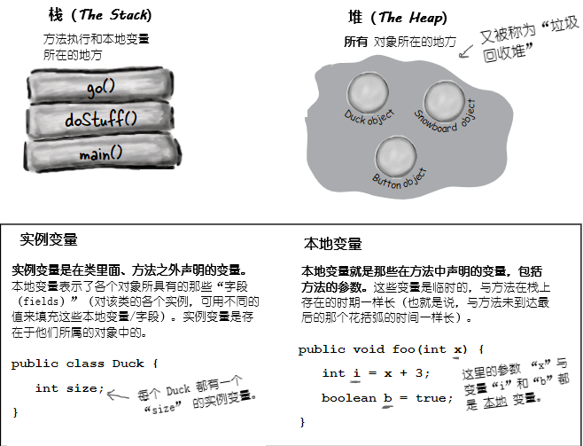
图 1 - 栈与堆，实例与本地变量
方法是堆叠的（Methods are stacked）
在对某个方法进行调用时，所调用的那个方法，就位处调用栈的顶部（When you call a method, the method lands on the top of a call stack）。这里被推到栈上去的，是一个叫做栈 帧（frame） 的新事物，栈帧驻留着方法的状态，包括正在执行哪一行代码，以及所有本地变量当前的值。
在栈顶部的方法，始终是那个栈上当前正在运行的方法（此时假设只有一个栈，后续第14章会加入更多栈）。栈上的方法在抵达其最后的结束花括弧（表示方法执行完毕）后，就从栈上消失了，在这之前方法都是留在栈上的。在 foo() 方法调用 bar()方法时，那么 bar()方法是堆叠在 foo() 方法之上的。
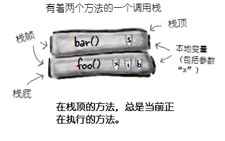
图 2 - 有两个方法的调用栈
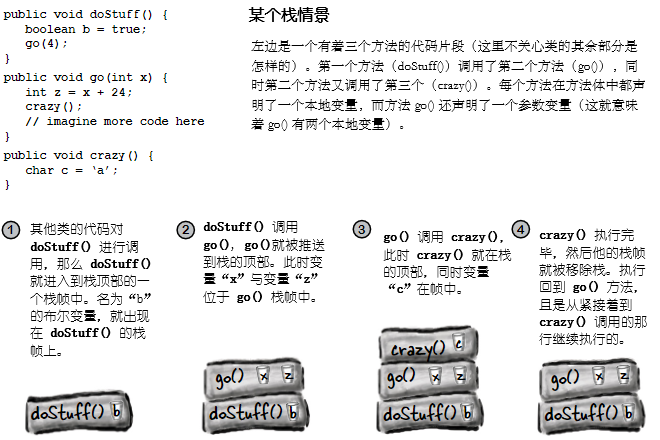
图 3 - 另一个栈场景
对于是对象的那些本地变量的情况
记住，保存了对某个对象的引用的非原生值变量，并不是对象本身（是到对象在堆上的地址）。前面已经知道了对象存活的地方 -- 在内存堆上。不论对象是被声明的还是创建出来的，对象都是在堆上。 当本地变量是一个到某对象的引用时，只是该变量（引用/遥控器）在栈上。
对象本身，还是在堆上的。
public class StackRef {
public void foof {
barf();
}
public void barf () {
Duck d = new Duck (24);
}
}
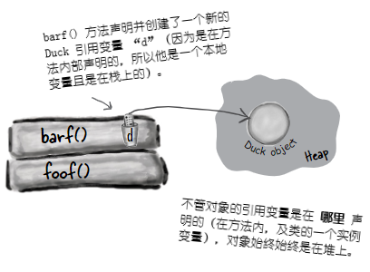
图 4 - 本地变量为对象时的情况
- 再问一次，为何 要了解这些栈/堆的情况？了解他们对编写 Java 程序有什么帮助？真的需要了解这些吗？
具备 Java 栈和堆的基础知识，对于掌握变量作用域（variable scope）、对象创建中的问题（object creation issues）、内存管理（memory management）、线程（threads），以及例外处理（exception handling）等等，至关重要。再后续章节，会涉及线程与例外处理，其他内容本章就会讲到。对特定JVM及/或平台上，栈和堆的实现细节不必了解。只需要了解这里讲到有关栈和堆的情况。如吃透了这里的内容，那么对上述的其他知识点的掌握，就会容易得多。记得我说过的，往后你会感谢我在这里啰嗦栈和堆的。
知识点
- Java有着两块我们所关心的内存：栈（the Stack）和堆（the Heap）
- 实例变量是在类中、方法外部声明的变量
- 本地变量是在方法里声明的变量，或方法的参数
- 所有本地变量，都是存活在栈上的，在声明本地变量的相应方法的帧中
- 对象引用变量像原生值变量那样运作 -- 若引用变量是作为本地变量声明，那么该引用变量在栈上
- 所有对象都存活在堆中，不管对象的引用变量是本地变量，还是实例变量
既然本地变量存活在栈上，那实例变量又存活在哪里呢？
在写下 CellPhone()时，Java就必须给那个 CellPhone对象在堆上分配空间。但要分配多少空间呢？就要给那个对象足够的空间，就是说要就足够的空间来保存对象的实例变量。那就得了，实例变量存活在堆上，在他们所属对象内部。
请记住对象的实例变量的值，是存活在对象的内部的。在实例变量都是原生值时，Java根据原生变量类型，为这些实例变量分配空间。一个int实例变量，需要 32个二进制位，一个 long长整型需要 64个二进制位等等。Java并不去看原生变量里的值；对于一个 int 的变量，不管他的值是 32,000,000还是 32，其所占据的位大小，始终都是 32位。
但如果实例变量是 对象，那又是怎样的呢？比如 CellPhone 就 HAS-A Antenna？也就是说，CellPHone有一个Antenna类型的引用变量。
在对象有着一些除开原生变量的、对象引用变量的实例变量时，真正的问题就是：对象需要空间来保存他的那些引用变量所指的对象吗（When the new object has instance variables that are object references rather than primitives, the real question is: does the object need space for all of the objects it holds reference to）？答案是肯定的，但 不准确。不管哪种情况，Java都必须给实例变量 值（values） 分配空间。但要记住，引用变量不是 对象 本身，而仅仅是到对象的 遥控器。因此在 CellPhone 有一个声明为非原生类型的 Antenna 实例变量时，Java 就只需在 CellPhone对象里头，给 Antenna 的遥控器，而不是Antenna对象本身，分配空间即可。
那么什么时候Antenna会在堆上获取到空间呢？首先就必须找到对象 Antenna本身在什么时候创建出来。这是由Antenna这个实例变量的声明决定的。在只声明了这个实例变量，而没有给他赋值的时候，就只有声明的这个引用变量（遥控器）的空间会被创建。
private Antenna ant;
直到有新的 Antenna 对象赋值给这个对象引用实例变量，才会有真实的 Antenna对象在堆上创建出来。
private Antenna ant = new Antenna();

图 5 - 对象的实例变量
对象创建的奇迹
现在知道了变量与对象存活的地方，就可以深入到对象创建的神奇世界。请记住对象声明与赋值的三个步骤：声明一个引用变量，创建出一个对象，还有将对象赋值给引用变量。
到现在为止，其中的第二步 -- 奇迹发生的地方和新对象 “诞生”的地方 -- 仍旧是个大秘团。准备好了解对象生命的一些实情了吗？ 希望你不要太过娇气。
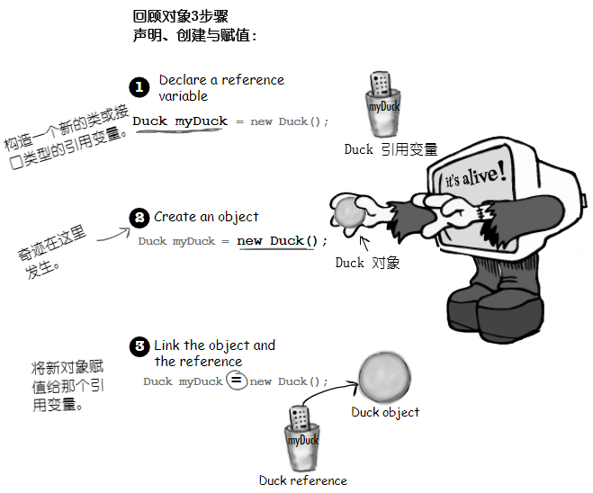
图 6 - 对象3步骤
这里是调用了一个名为 Duck() 的方法吗？因为他真的看起来像个方法。
图 7 - 对象创建的问题
不是的。
这里调用的是 Duck 构造器。
构造器 确实 看起来且感觉很像是个方法，但他并不是一个方法。在写下关键字 new 时，他就有了运行的代码。也就是说，在实例化某个对象时，所运行的代码 （It's got the code that runs when you say new. In other words, the code that runs when you instantiate an object）。
运行构造器的唯一方式，就是使用关键字 new 加上类名字。JVM去找到类并运行类中的构造器（好吧，技术上讲这不是运行构造器的 唯一 方式。但这确实是从构造器 外部 运行他的唯一方式。是 可以 在构造器中有限制地调用另一个构造器的，本章后面会讲到这点）。
构造器 有着在实例化某个对象时运行的代码。也就是说，当于某个类类型上写下
new时，所运行的代码。 你所创建的或不是你创建的全部类，都有一个构造器。
那构造器在哪里呢？如果我们没有编写构造器，那又是谁编写的呢？
自己是可以编写自己的类的构造器的（我们就即将那样做），但如果自己没有编写他，那么编译器将为你编写出一个来！
编译器默认的构造器看起来是这样的：
public Duck () {}
注意到缺了什么吗？这和方法有什么不同的地方？
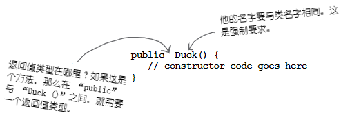
图 8 - 构造器与方法的不同
构造一个 Duck
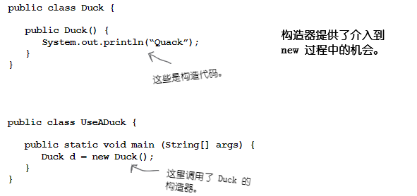
图 9 - 构造器实例
$ java -jar target/com.xfoss.learningJava-0.0.1.jar
Quack
初始化某个新 Duck对象的状态
多数人使用构造器来初始化对象的状态。也就是给对象的实例变量构造和赋值。
public Duck () {
size = 34;
}
在Duck类 开发者 知道 Duck 对象应该是多大的时候，这样做没有问题。但在希望由 使用 Duck 类的程序员来决定，某个特定的 Duck 对象应该多大的时候会怎样呢？
设想 Duck 有个 size 实例变量，同时希望使用这个Duck类的程序员来设置新 Duck 对象的 size。可以怎么办到呢？
当然，可以给类加上一个设置器setSize()（setter）。但这样做会给 Duck 的 size 暂时没有取值（实例变量是有默认值的。对于数值原生值，为0或者浮点数的0.0，对于布尔值是 false，对于引用变量默认值是 null），并会让使用者必须用 两条 语句 -- 一条来创建 Duck 对象，一条来调用 setSize() 方法。下面的代码就是使用了一个设置器方法来设置新 Duck 的 size 初始值。
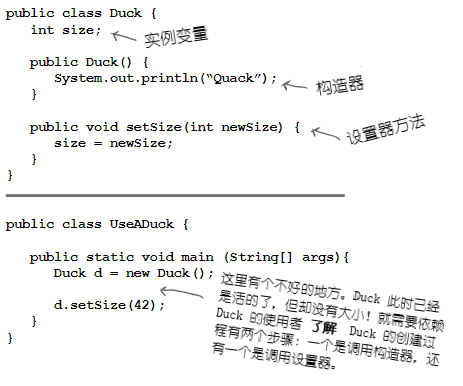
图 10 - 使用设置器而不是构造器参数的弊端
答疑
- 既然编译器会提供构造器，那为何还有自己编写构造器 ？
在需要代码来帮助对象初始化，以及为使用该对象做好准备时，就必须编写自己的构造器。或许也会需要对象使用者的输入，才能完成对象的构建。就算自己不需要任何的构造器代码，但还是有必须编写构造器的理由，这一点与超类的构造器有关，后面很快就会讲到这点。
- 怎样区分构造器与普通方法？也可以让某个方法与类有相同的名字吗？
Java允许声明与类名字相同的方法。不过这样做不会使其成为构造器。将普通方法和构造器区别开的，就是返回值的类型。方法必须有一个返回值类型，与此相反，构造器就不能有返回值类型（注意：构造器返回的实际上是一个对象的引用！）。
- 构造器会被继承吗？在当前类的超类具有构造器，他本身没有构造器时，会将超类的构造器作为默认的构造器吗？
不会。构造器是不被继承的。在后面后讨论这个问题。
使用构造器来对一些 Duck 的重要状态进行初始化
若要求在对象状态（实例变量）的一个或多个部分未初始化之前，不能使用该对象的话，就应该在完成对象初始化之前，不应将 Duck 对象交给任何引用变量（If an object shouldn't be used until one or more parts of its state(instance variables) have been initialized, don't let anyone get ahold of a Duck object until you're finished initializing）！让别人构造一个需要再次调用 setSize() 这样的设置器，才能得到一个可以使用的构造器，是具有相当风险的。因为在调用设置器之前，就已经将这个未准备好的对象，交给了其引用变量。如果类 Duck的使用者不知道或者忘记了调用设置器，那么会怎样呢？
放置初始化代码的最佳地点，就是在构造器中。只需要构造一个带有参数的构造器。
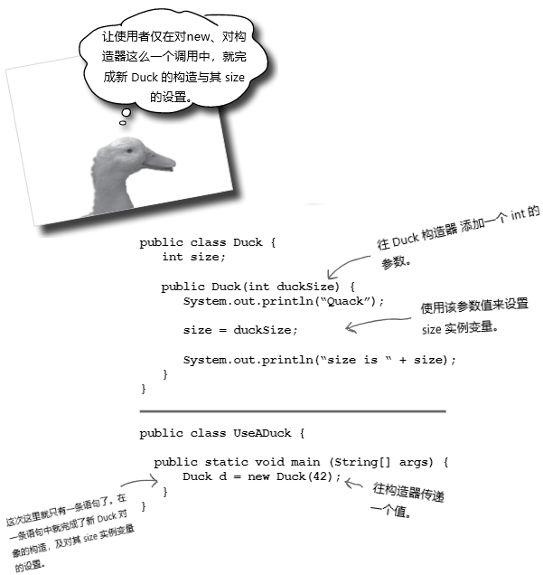
图 11 - 带有参数的构造器
让 Duck 的构造更容易
就要确保有一个不带参数的构造器
若 Duck 构造器接受一个参数时会怎样？想一下这个问题。在上面的示例中，只有一个 Duck 构造器 -- 并接收一个 int 参数作为 Duck 的大小。这或许不是个大问题，但将让那些尚不知道某个 Duck 应该多大的程序员，感到手足无措。如果 Duck 能有个默认的 size，就会很有帮助，那样 Duck 类的使用者，即使不知道一个合适的 size，也仍然可以构造出一个可工作的 Duck来。
设想打算让 Duck 的使用者，在构造Duck 时有两个选项 -- 一个时提供到Duck的 size（构造器参数），另一个则不指定 size，因此就要使用预先准备的 默认 Duck size。
若只有一个构造器，那么肯定就实现不了这个。记住，某个方法（或构造器--适用同样的规则）有个参数，那么在执行该方法或构造器时，就 必须 传递一个适当的参数给他。就不能这样写，“如果没有传递任何东西给构造器，就使用默认的 size”，因为在没有传递一个 int 参数给构造器调用的话，就甚至不能进行编译的。或许 可以像下面这样写：
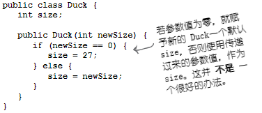]
图 12 - 只使用一个构造器
这样做还是要求构造新 Duck 对象的程序员知道，传入一个 0 就可以得到默认 Duck size 的约定。这就很恶心了。要是其他程序员不知道呢？或者某人真的需要一个大小为零的 Duck呢？（假设大小为零的 Duck 是允许的。就是真的不想要大小为零的 Duck 对象存在，就要在构造器中放入验证代码来防止）关键是，不总是能识别出Duck的使用者，到底是真的想要一个大小为零的 Duck，还是他要传入一个 0来得到默认的 Duck size。
实际上，需要的是有两种构造新 Duck的方式 :
public class Duck2 {
int size;
public Duck2 () {
// 提供一个默认的 size
size = 27;
}
public Duck2 (int duckSize) {
// 使用 duckSize 参数
size = duckSize;
}
}
要构造一个已知 size 的新 Duck 时 ：
Duck2 d = new Duck2 (15);
要构造一个不知道 size 的 Duck 时 ：
Duck2 d2 = new Ducks()
因此这种 构造 Duck 的双项选择 做法，就需要 两个 构造器。其一接收一个 int 参数，其二没有参数。 在类中有着多个构造器时，就是说使用了 过载的构造器（overloaded constructors）。
编译器总是会自动构造一个不带参数的构造器吗？ 不会！
你可能会想，在 只 编写了一个有参数的构造器时，编译器会发现那里没有不带参数的构造器，并自动为你补上这么一个。但这并不是编译器的行事方式。编译器 只会在你完全没有编写构造器时，才介入到构造器的生成中来。
在编写了带参数的构造器，且仍需一个不带参数的构造器时，就必须自己去构建这个不带参数的构造器！
一旦你提供了一个构造器，不管 这个构造器是哪种，编译器就后退下来，并以为 “好的兄弟，看起来你负责了构造器这个事情”。
某个类中有了多个构造器时，那么这些构造器就 必须 带有不同的参数清单。
参数清单包含了参数的顺序及类型。只要参数清单各异，那么就可以有着多个的构造器。对于方法，这条规则也是适用的，后面的章节会讲到。
** 过载 构造器，就是说，在类中可以有多个构造器**。
要通过编译，各个构造器就必须有 不同 的参数清单！
下面的类是合法的，因为全部5个构造器，都有着不同的参数清单。若某个类的两个构造器，都接收 int 参数，那么该类就不会被编译。参数变量的名称，不作为考虑参数清单差异的考虑。参数变量的 类型（比如 Dog） 和 顺序 才影响参数清单差异。两个构造器可以有同样的类型，只要顺序不一样 就可以。接收一个字符串加一个整数的构造器，就不同于与接收一个整数与一个字符串的构造器。
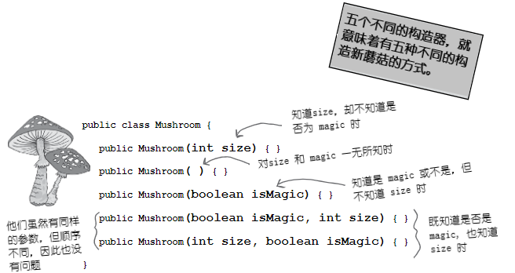]
图 13 - 合法的多个构造器
知识点
- 实例变量存活于他们所属的对象，因此也是在内存堆上的；
- 若实例变量是多某个对象的引用变量，那么该引用变量及其所指的对象，都是在堆上的；
- 构造器是在某个类类型上，提及
new关键字时所运行的代码； - 构造器的名字，必须与类的名字相同，且不能有返回值类型；
- 可使用构造器，来初始化将要构造对象的状态（即初始化对象的那些实例变量）；
- 如类中没有构造器，那么编译器将放入一个默认的构造器；
- 默认的构造器，总是不带参数的构造器；
- 若在类中放入了构造器，那么编译器就不在会构建默认的构造器了；
- 在已经放入了带参数的构造器后，还想要一个不带参数的构造器，就必须亲自构建那个不带参数的构造器；
- 应尽可能的提供不带参数的构造器，这是为了让其他程序员可以更容易的构造一个能用的对象出来。通过不带参数的构造器提供到实例变量默认值；
- Java 的 “过载构造器”特性，是指类中可以有多个构造器；
- 过载构造器必须有不同的参数清单；
- 两个构造器不能有同样的参数清单。参数清单包括了参数类型和/或顺序；
- 就是没有显式地赋值给实例变量，实例变量仍然具有默认值。对于原生变量，默认值为
0/0.0/false，对于引用变量，默认值为null。
答疑
- 早前说到编写一个不带参数的构造器，是一种良好的编程习惯，那样就可以在其他人调用不带参数的构造器时，提供到 “缺失” 参数的默认值。但会不会有时候无法提供默认值？有时候类种不应该有着不带参数的构造器呢？
对的。某些时候不带参数的构造器就毫无意义。在 Java API种就能见到这样的情况 -- 一些类就没有没有不带参数的构造器。比如类
Color，表示了某个 ... 颜色。Color对象用于，比如设置或改变某个屏幕字体，或GUI按钮的颜色。在构造某个Color实例时，所构造的实例，就是某种特定颜色（也就是“死亡巧克力棕（Death-by-Chocolate Brown）”、“死机蓝屏蓝（Blue-Screen-of-Death Blue）”、“绯闻红（Scandalous Red）”等等）。在构建某个Color对象时，就必须以某种方式指定颜色。
Color c = new Color(3, 45, 200);
（这里使用的就是表示RGB数值的三个整数。后面在
Swing章，将使用到Color类。）否则将得到什么呢？Java API的程序员本来可以决定，一个不带参数的Color构造器给出可可爱爱的紫红色。不过最后还是理智决定（But good taste prevailed）。
那么在尝试不通过参数就构造颜色时：
Color c = new Color();
编译器就会吓坏，因为在类
Color里头，找不到不带参数的构造器。
小复习：关于构造器，需要记住的4件事
-
构造器是在某种类类型上写关键字
new所运行的代码Duck d = new Duck(); -
构造器必须有着与类同样的名字，且 没有 返回值类型
public Duck (int size) {} -
当类里没写构造器时，编译器就会放入一个默认的构造器。默认构造器都是不带参数的构造器。
public Duck () {} -
类中可以写多个构造器，只要他们的参数清单不同即可。在类中有着多个构造器时，就用到了 Java 的过载构造器特性。
public Duck () {} public Duck (int size) {} public Duck (String name) {} public Duck (String name, int size) {}
脑力大挑战
对于超类来讲是什么情况？ 在构造一个
Dog时，Canine的构造器，也会运行吗？ 在超类是抽象的时候，他甚至也需要一个构造器吗（If the superclass is abstract, should it even hava a constructor）?后面将讨论这些问题，现在可以不用想这些问题，而是可以思考一下构造器与超类，这两个东西在一起的影响。
答疑
- 构造器必须要是
public的吗？
不必是。构造器可以是
public、protected、private或者 默认（default） （也就是没有访问修饰器，which means no access modifier at all）。在第16章及附录 B中将讨论 默认 访问修饰器。
- **
private的构造器怎么发挥作用呢？没人可以调用到这样的构造器，那么就不会有人能构造出一个新的对象来**！
是不会构造出新的对象，但这样说并不完全正确。将某个东西标记为
private并不是说没人可以访问到他，只是说 类外部没人 可以访问他。我敢打赌你一定是想到了 《第22条军规》（Bet you're thinking "Catch-22"）。只有在定义了私有构造器的类中的那些代码，才能构造那个类的新对象，但在没有构造出第一个对象的时候，又怎样才能从那个类的最初对象运行代码呢？Patience grasshopper。接下来的章里，将讨论这个问题。
等一下，我们似乎还没有讲到超类与继承，以及他们跟构造器是怎么相互作用的。
这里就开始变得有趣了。还记得上一章里，讲到的 Snowboard 对象，其围绕着表示Snowboard类的 Object 部分的内部核心进行封装吗？这里最重要的地方，就是所有对象，都不仅保存了他自己声明的实例变量，同时还保存了 所有来自其超类的东西 （最起码有类 Object的东西，因为所有类都扩展了 Object）。
那么在某个对象被创建出来是（由于某人写下了关键字 new，除有人在某个时候在类类型之上写了 new之外，并无其他构造新对象的方式），对象就获取到其 所有 实例变量的空间，包括其从继承树往上继承到的，以及自身声明的实例变量。这得要花点时间才能搞清楚......某个超类就可能有着一些对私有变量进行封装的设置器方法（Think about it for a moment...a superclass might have setter methods encapsulating a private variable）。而那个变量，就必须存活于 某处。在某个对象被创建出来时，总是会有 多个 对象生成 -- 对象被生成，同时每个超类的对象也被生成。概念上讲，像下图这样去考虑这个问题将更好一些，那里所创建出的对象，有着分别表示各个超类的对象 自身 的 各层。
 ]
]
图 14 - 堆上的 Snowboard 类
超类构造器在对象生命周期中的角色
The role of superclass constructors in an object's life
在构造新的对象时，对象继承树中的所有构造器都必须运行（All the constructors in an object's inheritace tree must run when you make a object）。
让我们细细品味这句话是什么意思（Let that sink in）。
这意味着每个超类都有一个构造器（因为每个类都有一个构造器），同时沿继承层次往上的每个构造器，在子类的某个对象被创建出来时，都会运行。
写下关键字 new 可是个大事情。这就开启了整个构造器链的反应（Saying new is a Big Deal. It starts the whole constructor chain reaction）。且就算抽象类，也是有构造器的。虽然不在在某个抽象类上写 new，但抽象类同样是超类，因此在有人构造某个具体类的实例时，抽象类的构造器同样会运行。
超类构造器运行，是为了构造出对象的超类部分。记住，某个子类可能依据超类的状态（即超类实例变量的值），而继承超类的某些方法。对象要成型，他自身的所有超类部分必须要成型，这就是超类构造器 必须 运行的原因。继承树中所有类的实例变量，都必须被声明和初始化。基本 Animal中有 Hippo 未曾继承的实例变量（比如在实例变量为 private时），Hippo仍然会依赖Animal中 使用 到这些变量的方法。
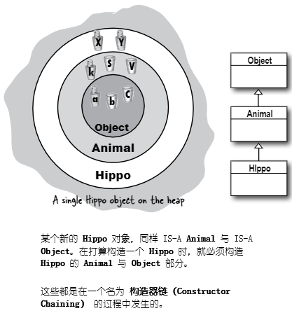
图 15 - 构造器链
在构造器运行时，他就立即沿构造器链往上，调用他的超类构造器，直到类Object的构造器（When a contructor runs, it immediately calls its superclass constructor, all the way up the chain until you get to the class Object constructor）。
在后面的内容中，将了解怎样调用超类构造器，以及怎么亲自去调用超类构造器。还会了解在超类构造器带有参数时，该怎样去调用他们。
package com.xfoss.learningJava;
abstract class Animal {
Animal () {
System.out.println ("Making an Animal");
}
}
abstract class Canine extends Animal {}
abstract class Feline extends Animal {}
class Dog extends Canine {}
class Cat extends Feline {}
class Hippo extends Animal {
Hippo () {
System.out.println("Making a Hippo");
}
}
public class AnimalTestDrive {
public static void main (String [] args) {
System.out.println("Starting...");
Hippo h = new Hippo();
}
}
运行结果：
$ java -jar target/com.xfoss.learningJava-0.0.1.jar
Starting...
Making an Animal
Making a Hippo
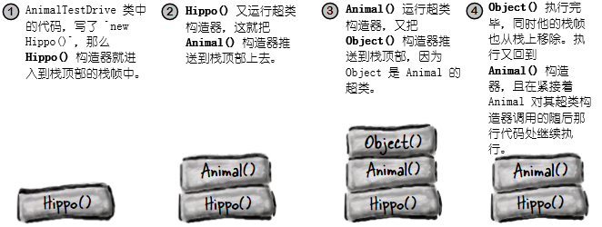
图 16 - 构造器链（Constructor Chaining）
该怎样来亲自执行超类构造器？
How do you invoke a superclass constructor?
你可能已经想到，比如对于 Duck 的构造器，在 Duck 扩展了 Animal时，就会去调用 Animal()。但不是这样干的：
class Duck extends Animal {
int size;
Duck (int newSize) {
Animal (); // 错！不行，这样是非法的！
size = newSize;
}
}
调用超构造器（a super constructor）的唯一方式，是通过调用 super()。对 -- super() 就会调用到 超构造器。
时机在哪里呢（What are the odds）？
class Duck extends Animal {
int size;
Duck (int newSize) {
super();
size = newSize;
}
}
构造器 Duck() 中的 super() 调用，把超类构造器放置在栈顶部。而那个超类构造器又会干什么呢？调用他自己的超类构造器。如此这般，直到Object的构造器位于栈的顶部为止。一旦 Object() 运行完毕，他就从栈上被移除，同时栈上的下一个构造器（调用 Object() 的那个子类构造器）现在就位于顶部了。随后 那个 构造器也执行完毕，如此这般，直到最初的构造器位于栈顶部为止，到这里这个最初的构造器才执行完毕。
那么之前为什么就没这么做呢（And how is it that we've gotten away without doing it）?
你或许已经接近发现事实真相了。 在我们没有放入一个
super()时，我们的好友编译器就会放入一个。 因此编译器在介入到构造器构造时，有两种方式（So the compiler gets involved in constructor-making in two ways）：
- 在我们不提供构造器时： 编译器放入一个这样的构造器：
class ClassName {
super();
}
- 在提供了构造器却没有放入一个到
super()的调用时编译器将在所有过载构造器中，放入一个到
super()的调用（除了那些调用了其他过载构造器的构造器中，这在后面会见到）。编译器所提供的调用是这样的：
super();
且会一直是这样的。编译器插入的
super()调用，始终是不带参数的。在超类有着过载构造器时，只会调用不带参数的构造器。
子类可以在父类之前就存在吗？
Can the child exist before the parents?
在将超类想象为子类孩子的父辈时，就能搞清楚哪个会首先存在。对象的超类部分，必须要在子类部分构造之前就完全成型（构建完毕）。记住，子类对象可能依赖他所继承的超类的某些东西，因此这些被继承的东西有必要是完备的。这事没有商量的余地。超类构造器必须在子类构造器之前执行完毕。
回顾前面的栈序列，就可以发现尽管首先运行的是 Hippo() 构造器（他是栈上第一个事物），但却是最后一个执行完毕的！各个子类构造器将立即运行他自己的超类构造器，直到 Object 构造器位居栈顶部为止。这是Object的构造器执行完毕，随后我们往下被带回到 Animal 的构造器。只有在 Animal 的构造器执行完毕，才能最终往下回到 Hippo构造器的剩余部分。因为这个原因：
对 super() 的调用，必须是每个构造器中的第一条语句（此规则也有例外，后面马上就会看到）！
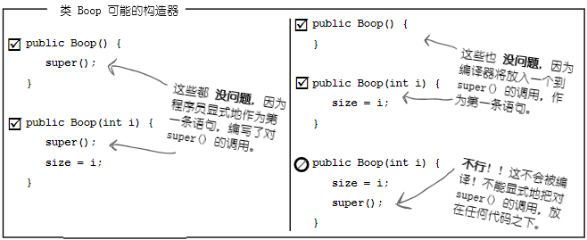
图 17 - 对 super() 的调用
带参数的超类构造器
若超类构造器带有参数会怎样呢？可将某些东西传递进入到 super() 调用吗？当然可以。如若不能，就无法去扩展那些，没有不带参数的构造器的类了。设想这样的场景：所有动物都有个名字。类 Animal 中有个 getName() 的方法，返回实例变量 name 的值。该实例变量被标记为了private，但子类（此示例中的 Hippo）继承了 getName() 方法。那么就有这个问题：Hippo有着一个 getName()方法（通过继承得到），但并没有 name这个实例变量。Hippo就不得不依赖自己的 Animal部分，来保存那个name的实例变量，并在某人调用到 Hippo对象上的 getName()方法时，返回 name 的值。但 Animal 部分该怎样获取到这个 name 呢？Hippo到他的 Animal部分的唯一引用，是经由 super() 实现的，那么那里就是 Hippo 把 Hippo 的名字，发送给他的 Animal 部分的地方，如此这般，Animal 部分才可以将 Hippo的名字，存储在那个 private 的 name 实例变量中。
abstract class Animal {
private String name; // 所有动物（包括子类）都有一个名字
public String getName () { // Hippo 继承到的一个读取器方法（a getter method）
return name;
}
Animal (String theName) {
name = theName; // 接收名字并将其赋值给 name 实例变量的构造器
}
}
class Hippo extends Animal {
Hippo (String name) { // Hippo构造器接收一个名字
super(name); // 这个语句将名字在栈上向上发送给 Animal 构造器
}
}
public class AnimalTestDrive {
public static void main (String [] args) {
Hippo h = new Hippo("Buffy"); // 构造一个 Hippo, 并将名字 "Buffy" 传递给 Hippo 构造器。
System.out.println(h.getName()); // 随后调用 Hippo 继承到的 getName() 方法
}
}
运行结果：
$ java -jar target/com.xfoss.learningJava-0.0.1.jar
Buffy
从一个过载构造器运行另一个过载构造器
在过载构造器具有处理不同参数类型的例外，而去做同样的事情时，会怎样呢（What if you have overloaded construtors that, with the exception of handling different argument types, all do the same thing）？显然是不希望在各个构造器中有 重复（duplicate） 代码（苦于维护等等），那么就有把大部分构造器代码（包括对 super() 的调用），放在 一个 过载构造器中。让其他构造器去运行这个真正构造器（The Real Constructor），并让这个真正构造器去完成对象构造工作。很简单：使用 this() 语句，或者 this(aString)，或者this(27, x)这样的语句即可。也就是说，只需将关键字 this，想象为 当前对象 即可。
只有在构造器中，才能写 this, 且必须是构造器的第一条语句！
但那是个问题，不是吗？早先说过，super()必须是构造器中的第一条语句。好吧，上面这句话就是说，现在多了一个选择。
每个构造器都可以有一个 super() 或 this() 的调用，但不能两个同时调用！
在一个构造器中使用
this()来调用同一类中的另一个构造器。 可以在构造器中使用对this()的调用，但必须是构造器的第一条语句。 构造器可以保有一个对super()或this()的调用，但不能同时使用super()和this()。
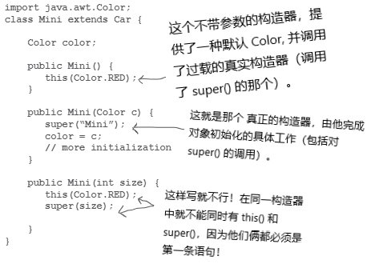
图 18 - this() 和 super()的使用
现在了解了对象是如何诞生的，那么对象会存活多长时间呢？
对象的 生命 完全取决于指向他的引用变量的存活时间。在引用变量还是 “存活的” 时候，那么对象也就还存活在内存堆上。如果引用变量死去（马上就会讲到“引用变量死去”的意思），那么对象也会死去。
既然对象的生命取决于他的引用变量的存活时间，那么究竟 变量 会存活多长时间呢？
变量存活时间，又取决于变量是 本地 变量还是 实例 变量。下面的代码展示了本地变量的存活时间。在示例中，变量是个原生值，但不论变量是原生值还是引用变量，他们的存活时间都是一样的。
图 19 - 本地变量存活时间
本地变量 存活时间 与 作用范围 的区别：
-
存活时间（Life）
本地变量与其所在的栈帧同在。也就是说，在其所属方法执行完毕之前，本地变量都是存活的。
-
作用范围（Scope）
本地变量作用范围，仅限于声明变量的方法内部。在他自己的方法调用另一个方法期间，该变量仍然是存活的，但直到他的方法恢复运行之前，都不在他的作用范围中。只有当本地变量在其作用范围中时，才能使用那个变量。
图 20 - 本地变量存活时间与作用范围
在本地变量处于存活状态是，他的状态就会持续存在。只要 doStuff() 方法还在栈上，那么变量 b 就会保持他的值不变。但变量 b 只能在 doStuff() 栈帧位于顶部时才能使用。也就是说，只有在本地变量的方法正在运行时（而非等待其上的栈帧执行完毕期间），才能使用那个本地变量。
Wrap vs. Encapsulation
Wrap, 缠绕，包裹起来，更形象 Encapsulation, 封装，Java 中的
getter和setter对private变量的封装，不如 wrap 形象，意义也大不相同
引用变量的存活时间问题
对于原生变量与引用变量，规则是一样的。引用变量也只能在其作用范围使用，也就是说，除非在作用范围中有某个引用变量，否则就不能使用某个对象的遥控器。然而 真正的 问题是：
“引用变量的存活时间，是如何对其所指向的 对象 的存活时间施加影响的”？
对象与对象的引用变量共存。在某个引用变量脱离作用范围却依然存活时，他 所指向的 对象，也依然是存活在内存堆上的。那么你就会问......“当引用变量所在方法结束，从而导致保存引用变量的栈帧被移除栈时，会发生什么呢”？
如果那个引用变量是到对象的 唯一 引用，那么该对象此时就会在堆上被抛弃。随着栈帧的瓦解，那个引用变量也瓦解了，因此被抛弃的对象，现在就 正式地 吃席了。这里的窍门在于明白某个对象在什么时候 可被垃圾回收。
一旦某个对象可被垃圾回收（eligible for garbage collection, GC），就不用操心怎么去收回被那个对象使用的内存的问题。在程序需要更多内存时，Java的垃圾回收特性，就会自动损毁掉部分或全部的可回收对象，从而避免内存耗尽。在所有可回收对象被投进垃圾场之前，是不会耗尽内存的（If your program gets low on memory, GC will destroy some or all of the eligible objects, to keep you from running out of RAM. You can still run out of memory, but not before all eligible objects have been hauled off to the dump）。你的任务就只是确保在用完对象后，及时抛弃他们即可（也就是让用完的对象成为可被垃圾回收的对象），这样垃圾回收器（the garbage collector,）就有东西可以回收了。如果一直吊着这些对象不放，垃圾回收就帮不上你，你就只有自己承担程序陷入耗尽内存而亡的风险了。
在没有指向对象的引用变量时，对象的存活没有价值、没有意义，也没有时间点。 若不能捕获到对象，那么就没法要求对象完成任何事情，这时对象就是一堆废物的二进制位。 但在某个对象不可到达时，垃圾回收器就会把他找出来。很快他就会消失。
图 21 - 对象的存活时间
图 22 - 对象回收：引用变量永久脱离作用范围
数字与静态值：数字为要
Numbers and Statics: Numbers Matter
做运算（Do the Math）。除了原生算术运算，数字方面还有更多的要做。可能要获取某个数字的绝对值，或对某个数字四舍五入，或者找出两个数中较大的等等。还可能希望只打印某个数的两位小数，或者要在大数中放进逗号，从而让大数更易于阅读。日期又该怎样处理呢？或许要以各种方式来打印日期，甚至要对日期进行 操作（manipulate），比如“把今天的日期加上三周”。还有怎样把字符串解析到数字呢？或是把数字转换成字符串？有幸的是，Java API 提供了很多易于上手的数字处理方法（full of handy number-tweaking methods）。但这些方法大多是 静态的（static），因此先要了解某个变量或方法为静态时，以及 Java 中的常量 -- 静态最终变量，是什么意思（But most of them are static, so we'll start by learning what it means for a variable or method to be static, including constants in Java -- static final variables）。
数学方法：接近全局方法
MATH methods: as close as you'll ever get to a global method
虽然 Java 中不存在全局的 任何东西。但请想想：有个不依赖实例变量值的方法会怎样。就拿类 Math 中的 round() 方法来说。他会每次都会执行相同的操作 -- 将浮点数（该方法的参数）四舍五入到最接近的整数。每次都这样的。就是有一万个类 Math 的实例，都运行 round(42.2) 方法，得到的结果都是 42。每次都是。也就是说，方法在参数上执行，而绝不会受某个实例变量状态影响。改变方法 round()运行方式的唯一值，就是传递给该方法的参数！
看起来为了运行 round() 方法而构造一个类 Math 的实例，确实是浪费了很多高价值的内存堆空间吧？对于 其他 一些 Math 的方法，比如接收两个数字原生值并返回二者中较小的值的 min()，或 max()，或者返回某个数的绝对值的 abs()等等，又会怎样呢？
这些方法绝不会用到实例变量值。事实上类 Math 是没有任何实例变量的。那么构造一个类 Math 的实例就没有任何价值。所以猜猜会怎样？所以就不必构造类 Math 的对象。事实上也无法构造类Math的实例。
在尝试构造类 Math 的实例时：
Math mathObj = new Math();
将得到这个错误消息：
Math() has private access in java.lang.Math
该错误消息显示，
Math构造器是被标记为private的！那就是说，绝 不可以在类Math上写new来构造一个新的Math对象。

图 1 - 类Math的方法
常规（非静态）方法与静态方法的区别
虽然Java作为面向对象语言，不过后面就会发现一个特殊案例，尤其是那些工具方法（就像这些Math的方法），在这些地方就没有必要用到类的实例。关键字 static 让方法在 没有任何其所属类的实例 情况下，就可以运行。静态方法就是指 “其行为不依赖实例变量，因此不需要实例或对象。只需要类就行”。

图 2 - 常规方法与静态方法的区别

图 3 - 静态方法与非静态方法的调用
让类具有静态方法有什么意义？
通常（尽管不总是这样），有着静态方法的类，都是些不打算被实例化的类（Often(although not always), a class with static methods is not meant to be instantiated）。在第8章就谈到过抽象类，以及如何使用 abstract 关键字类对类进行标记，从而使得任何人都不可以在那个类类型上写 new。也就是说，绝无可能对抽象类进行实例化。
到这里，还可以通过将构造器标记为 private，来阻止其他代码对 非抽象类进行实例化了。请记住，标记为 private 的方法意味着只有类中的代码才可以运行那个方法。标记成 private 的构造器，基本与标记为 private 的方法一样 -- 只有类中的代码才可以运行构造器。那么在类 外部 就没有人可以对类写 new 了。这就是类 Math 的运作方式。他的构造器是私有的，就不能构造出 Math 的实例。编译器了解你的代码是不能访问私有构造器的。
这又并不是说，有着一个或多个静态方法的类，绝对不会被实例化。事实上，只要放入了一个 main() 方法，那个类中就有了一个静态方法！
通常是要构造一个 main() 方法来启动或测试另一个类的，几乎总是要在 main() 方法中去实例化某个类，且随后会在构造的新实例上运行某个方法。
因此虽然存在一个非静态方法，就意味着一定有某种构造类实例的方式，但在类中结合静态和非静态方法一起使用，是自由的。获取新对象的唯二方式，是通过关键字 new，或者逆序列化（deserialization, 或称为Java Reflection API，附录会讲到）。此外并无他法。不过还有一个非常有趣的问题，那就是到底是 谁 来写下 new，后面会讨论这个问题。
静态方法不能使用非静态（实例）变量！
Static methods can't use non-static (instance) variable!
静态方法的运行，无需对其所属类的任何特定实例有所了解。就如同前面所说的，静态方法所属类甚至没有实例变量。因为静态方法是使用 类（Math.random()），而非 实例引用变量 （t2.play()）调用，所以静态方法就不能引用其所属类的任何实例变量。
若尝试编译这样的代码：
class Duck {
private int size;
public static void main (String [] args) {
System.out.format("Size of duck is %s\n", size); // 哪个 Duck? 谁的 size ?
} // 若在内存堆上的某处有个 Duck, 这里也是对其一无所知的
public void setSize (int s) {
size = s;
}
public int getSize () {
return size;
}
}
将收到这样的错误信息：
non-static variable size cannot be reference from a static context
在某个静态方法中尝试使用实例变量时，编译器就会想 “我不知道你讲的是哪个对象的实例变量”！就算在内存堆上有 10 只鸭子，静态方法也对他们一无所知。
静态方法也不能使用非静态方法！
非静态方法是用来做什么的？非静态方法通常要使用实例变量的状态，来影响他们自己的行为。getName()方法，返回的是变量 name 的值。谁的名字？当然是用于运行 getName() 方法的那个对象的 name。
这段代码不会被编译：
class Duck {
private int size;
public static void main (String [] args) {
System.out.format("Size of duck is %s\n", getSize()); // 调用 getSize () 方法只是推迟了必然会出现的问题 -- getSize() 使用了实例变量 size
}
public void setSize (int s) {
size = s;
}
public int getSize () {
return size; // 这里又回到同样的问题......到底是谁的 size ？
}
}
错误信息：
non-static method getSize() cannot be reference from a static context
答疑
- 去调用那些不使用任何实例变量的非静态方法会怎么样，编译器会允许吗？
不行。编译器对是否在非静态方法中有没有使用实例变量清楚得很。设想如果那样可以通过编译，而又在未来的某一天，修改了非静态方法的实现而带进了实例变量，会有什么影响？或者更离谱，在某个子类重写了那个非静态方法，并在重写版本中带入了一个实例变量呢？
- 对天发誓，见到过使用引用变量，而并非类名字去调用静态方法的代码。
是可以那样做，但就跟你妈妈经常教导你那样，“仅仅因为它是合法的并不意味着它是好的（Just because it's legal doesn't mean it's good）”。虽然使用类实例去调用静态方法可行，但这样写会构造出带误导性（缺乏可读性）代码。你可以这样写：
Duck d = new Duck ();
String[] = {};
d.main(s);
这段代码是合法的，但编译器只会将这段代码解析回真正的类（“好的”，
d的类型为Duck，同时main()是静态的，那么我就会调用类Duck中的静态main()）。也就是说，使用实例d来运行main()并不会让main()对这个引用的对象d有更多具体知识。这只是另一种调用静态方法的方式而已，方法本身仍然是静态的！
故有诗云：
红玫瑰
开得晚
实例变量的状态
静态方法见不到
静态变量：对类的 所有 实例，其值保持一致
Static variable: value is the same for ALL instances of the class
设想打算数一下程序运行时创建了多少个 Duck 的实例。怎样才能做到呢？或许需要一个在构造器中递增的实例变量？
clas Duck {
int duckCount = 0;
Duck () {
duckCount++; // 这会在每次构造出一个 Duck 时，将 duckCount 设置为 1
}
}
这样写是做不到的，因为duckCount是个实例变量，对每个 Duck都是以 0 开始的。当然可以再构造另一个类来完成 Duck 的计数，但那样就显得笨拙。这个时候就需要一个只有某变量的单份拷贝，且所有实例变量都共享那份拷贝的类。
这就是静态变量可以给到的特性：可被所有类实例共享的值。也就是说，每个类一个值，而非每个实例一个值（In other words, one value per class, instead of one value per instance）。
class Duck {
private int size;
private static int duckCount = 0; // 这个静态变量 `duckCount` 只会在类第一次加载时初始化
// 而不会在每次构造新实例时初始化
Duck () {
duckCount++; // 因为 duckCount 是静态的，且不会被重置为 0
// 所以现在静态变量 duckCount 就会在 Duck 构造器每次运行时递增
}
public void setSize (int s) {
size = s;
}
public int getSize () {
return size;
}
}

图 4 - 实例变量与静态变量的区别
静态变量是共享的。
同一类的所有实例，共享静态变量的单个拷贝。
- 实例变量：每个 实例 一个
- 静态变量：每个 类 一个
脑力锻炼
在本章早先部分，我们见到了私有构造器表示类不可被类外部的代码实例化。也就是说，只有类里面的代码，才可以使用私有构造器，构造类的新实例。（这里就有了“鸡生蛋蛋生鸡”问题。）
若要编写一个只能构造一个实例，且要使用类实例的所有人，就都只能使用这单个的实例，会怎样呢？
静态变量的初始化
Initializing a static variable
静态变量是在 类加载 的时候初始化的。而类的加载，则是 JVM 判定应该加载他的时候，才加载的。通常情况下，JVM加载某个类，是因为第一次有人尝试构造那个类的新实例，或者使用该类的静态方法或静态变量。作为 Java 程序员，当然还有显式地让JVM去加载某个类的选项，不过极不可能需要去那样做的。在几乎所有情况下，都最好让JVM去决定何时加载类。
同时静态变量初始化有两条定律：
- 类中的静态变量，是在类的所有对象可被创建出来之前初始化的
- 类中的静态变量，是在类的所有静态方法运行之前初始化的
class Player {
static int playerCount = 0; // playerCount 是在类 Player 加载时初始化的。
private String name; // 这里显式将其初始化为 0，不过并不需要，因为整数
// 的默认值本来就是 0。静态变量获取默认值的方式，与
// 实例变量是一样的。
Player (String n) {
name = n;
playerCount++; // 已声明但未初始化的静态变量与实例变量，他们的默认值
} // 一样：
} // 原生整数（长整形、短整型等）：0
// 原生浮点数（单精度、双精度）：0.0
// 布尔值：false
public class PlayerTestDrive { // 对象引用变量：null
public static void main (String[] args) {
System.out.println(Player.playerCount);
Player one = new Player ("Tiger Woods");
System.out.println(Player.playerCount);
} // 对静态变量的访问，就如同对静态
} // 方法的访问 -- 使用类的名字。
运行结果：
$ java -jar target/com.xfoss.learningJava-0.0.1.jar
0 <-- 在没有构造任何实例时
1 <-- 在构造了一个对象后
静态最终变量即为常量
static final variables are constants
标记为 final 的变量，就意味着 -- 一旦被初始化 -- 就绝不会再改变。也就是说，静态最终变量的值，从类被加载开始，就始终保持一致。查看 Java API 中的 Math.PI ，就会发现：
public static final double PI = 3.1415926535889793;
变量 PI 被标记为 public 表示所有代码都可以访问他。
标记为static就无需类 Math 的实例就可以使用（还要记住不能创建类 Math的实例）。
还因为 PI 是不会改变的，因此变量 PI 又被标记为了 final（就Java 这个编程语言来说）。
除了上面这种方式，就再没有其他方式将变量指定为常量了，但对常量命名的约定，可以帮助我们识别出其为常量。常量的名字，应全为大写！
静态初始化器（static initializer），是一个在类加载时，于外部代码可以使用这个类前，运行的一个代码块，因此这个代码块就是对静态最终变量进行初始化的好地方。
class Foo {
final static int X;
static {
X = 42;
}
}

图 5 - 静态最终变量 -- 常量，与静态初始化器
final 不止于 static 变量
也可使用关键字 final 去修改非静态变量，包括实例变量、本地变量，甚至方法的参数。在每种情况下，关键字 final 都意味着同样的事情：再也不能改变值了。还可以使用关键字 final 去阻止别人重写方法，或构造子类。
final的那些非静态变量
class Foof {
final int size = 3; // 现在就再不能修改 size 了
final int whuffie;
Foof () {
whuffie = 42; // 这里是不能修改 whuffie 的
}
void doStuff (final int x) {
// 就无法改变 x 了
}
void doMore () {
final int z = 7;
// 就无法改变 z 了
}
}
实际上这里有个问题。其中的
final int whuffie;语句中的whuffie实例变量，其默认值不是0吗？怎么后面又可以再构造器中赋值呢？说明构造器是最先运行的。
final的方法
class Poof {
final void calcWhuffie () {
// 必须保证不被重写的
// 一些重要事务
}
}
final的类
final class MyMostPerfectClass {
// 这个类就不能被扩展了
}
final的 变量，就是说不能修改他的值。
final的 方法，就是说不能重写这个方法。
final的 类，就是说不能对这个类进行扩展（即不能构造他的子类）。
答疑
- 静态方法不能访问非静态变量。那么非静态方法可以访问静态变量吗？
当然，类中的非静态方法，总是可以调用类中的静态方法，以及类的静态变量。
- 将类标记为
final的目的是什么？这样做不就与面向对象的整体目标相违背了吗？
是的，不会。将类构造成
final的典型原因，是为了安全性。比如就无法构造类String的子类。设想有人扩展了类String，并以多态方式，在原本是String对象的地方，使用他们自己的String子类对象，会是多大的麻烦。在需要一些方法保持特定实现时，就要把他们的类标记为final。
- 如果类已经是
final了，那么再把其中的方法标记为final，不就是多余的吗？
在类为
final时，就不需要将方法标记为final了。想想吧 -- 在类为final时，就不能被扩展为子类，那么当然他的方法就不能被重写了。此外，在确实打算允许其他人对你编写的类进行扩展，又不想要他们重写其中的一些而不是全部的方法时，就可以不将这个类整个标记为
final，而是有选择性地将特定方法标记为final就行了。最终方法指的就是子类不能对其进行重写。
知识点
-
调用静态方法应使用类名字，而不是对象引用变量：
Math.random()与myFoo.go() -
无需堆上静态方法所属类上的任何实例变量，就可以运行静态方法；
-
对于不依赖特定实例变量值的那种工具性方法，写成静态方法是不错的选择；
-
静态方法不与特定实例关联 -- 而只与类关联 -- 因此静态方法就访问不到其所属类的所有实例变量。静态方法不知道该去使用那个实例的值；
-
静态方法无法访问到非静态方法，这是因为非静态方法通常是与实例变量状态关联起来的；
-
在类只有静态方法时，就不希望整个类被实例化，从而可将类构造器标记为
private； -
静态变量是类的全体实例共享的变量。类中的静态变量只有一份拷贝，而不是实例变量那样每个实例都有一份拷贝；
-
静态方法可以访问静态变量；
-
在 Java 语言中要构造一个常量，是将某个变量同时标记为
static与final实现的； -
最终静态变量必须被赋值，要么在声明时，要么在某个静态初始化器中。
static {
DOG_CODE = 420;
}
- 常量（
finalstaticvariables）的命名约定是要将名字全部大写； - 标记为
final的变量，一经赋值后就不能在改变了； - 给某个
final的实例变量赋值，要么在该变量声明时，要么在构造器中； final的方法不能被重写；final的类无法被扩展（子类化操作）。
类Math的那些方法
既然已经知道静态方法工作的方式，不如现在来看看类 Math中的一些静态方法。这里举例的只是其中一些常用的。对照 API 文档，就可以查看到剩余的那些，包括 sqrt()、tan()、ceil()、floor()以及 asin()等等。
Math.random()
返回一个
0.0到1.0（不包括1.0）之间的双精度数。
double r1 = Math.round();
int r2 = (int) (Math.random() * 5);
Math.abs()
返回一个双精度数，为参数的绝对值。该方法有多个过载方法，因此如果传入的是整数，那么返回的也是整数；传入的是双精度数，返回的也是双精度数。
int x = Math.abs(-240); // 返回 240
double d = Math.abs(240.45); // 返回 240.45
Math.round()
返回参数被取整到最近的整数或长整数（取决于参数是单精度或是双精度数）。
int x = Math.round(-24.8f); // 返回 -25
int y = Math.round(24.45f); // 返回 24
//请记住，浮点数在没有加上字母 ‘f’ 时，默认都假定是双精度数
Math.min()
返回两个参数中较小的数。该方法也具有多个过载方法，用于接收整数、长整数、单精度浮点数或双精度数。
int x = Math.min(24, 240); // 返回 24
double y = Math.min(90876.5, 90876.49); // 返回 90876.5
Math.max()
与
Math.min()类似，返回两个参数中的较大值。也是过载的方法。
对原生值进行包装
Wrapping a primitive
一些时候要将原生值当作对象来对待。比如在 Java 早于5.0的全部版本中，是无法把原生值直接放入到 ArrayList或 HashMap等数据结构中去的：
int x = 32;
ArrayList list = new ArrayList();
list.add(x); // 在 5.0 之前的 Java 版本中，这样写是不行的！！
// 那个时候 ArrayList 还没有 add(int) 方法
// 来接收整数！（那个时候的 ArrayList 只有
// 接收对象引用变量，而非原生值的 add() 方法）
每种原生值类型都有一个打包类，且因为这些打包类都是在 java.lang 包中，所有不必导入他们。由于这些类的名字，都是将（全小写字母的）原生值类型的首字母改为大写得来，因此就很容易识别和区分这些类。
由于某种无人所知的原因，JAVA API 设计者们，决定了不把这些类的名字，按照原生值类型与类类型准确地映射起来（Oh yeah, for reasons absolutely nobody on the planet is certain of, the API designers decided not to map the names exactly from primitive type to class type）。后面就会明白这句话说的是什么。

图 6 - 原生类型包装类的名字：例外

图 7 - 什么是原生值包装类
在 5.0 版本之前的 Java 中，就不得不自己去做...
太TM愚蠢了，那时候不能构造整数的
ArrayList？必须把每个整数都包装成新的Integer对象，然后再在要访问ArrayList中的值的时候，从Integer对象解包为 整数？这样真是浪费时间，并必然会出错的......
在先于 5.0 版本的所有 Java 版本中，原生值就是原生值，对象引用就是对象引用，二者直接绝不会视为可互换的（In all versions of Java prior to 5.0, primitives were primitives and object references were object references, and they were NEVER treated interchangeably）。都是依赖程序员去完成打包和解包。并无将原生值传递给期望得到对象引用变量的方法，也没有方法来把方法返回的对象引用变量，直接赋值给原生值变量 -- 就算是返回的引用变量指向的是一个 Integer对象，要赋值的是个原生的 int 变量也是不行的。Integer与int两个类型之间，就是没有联系，而实际上 Integer是有一个类型为 int 的实例变量的（用于保存 Integer 所包裹的原生值）。这些事情，都有由程序员来亲自做。
一个原生整数的 ArrayList
在没有 “自动装箱” 特性时（Java 5.0 之前的版本）
public void doNumsOldWay () {
ArrayList listOfNumbers = new ArrayList (); // 构造一个 ArrayList。（请记住，在 5.0 之前是无法
// 指定类型的，因此所有的 ArrayList 都是 Object 的
// 清单）
listOfNumbers.add(new Interger(3)); // 是不能将原生值 '3' 加入到清单的，因此
// 必须首先将其包装为一个 Integer
Integer one = (Integer) listOfNumbers.get(0); // 从 listOfNumbers 这个 ArrayList 中出来的
// 是个 Object, 不过可以将其强制转换为 Integer
int intOne = one.intValue(); // 终于可以从 Integer 得到整个原生值了。
}
自动装箱：模糊原生值与对象之间的界线
Autoboxing: bluring the line between primitive and object
Java 5.0 加入进来的自动装箱特性（the autoboxing feature），就可以 自动 完成原生值到包装对象的转换！
下面瞧瞧在构造一个保存整数的 ArrayList 时，发生了什么。
一个原生整数的 ArrayList
有着自动装箱时（Java 5.0 及以后的版本中）
public void doNumsNewWay () {
// 构造一个类型为 Integer 的 ArrayList
ArrayList<Integer> listOfNumbers = new ArrayList<Integer>;
listOfNumbers.add(3); // 这样就加入进去了！
// 尽管 ArrayList 中没有 add(int) 的方法，编译器
// 仍然为你做了所有包装（打包）的工作。也就是说
// 现在确实有一个 Integer 对象存储在这个 ArrayList
// 中了，只不过这里 “假装” ArrayList 接收的是整数而已
// （既可以把整数，也可以把 Integer 对象添加到
// ArrayList<Integer>中去）
int num = listOfNumbers.get(0);
// 编译器还会自动将 Integer 对象解包，从而可将整数值直接赋值到原生变量
// 无需调用 Integer 对象上的 intValue() 方法
}
- 既然要保存
ints, 为什么不声明一个ArrayList<int>呢？
因为...不可以这样。请记住，泛型规则（the rule for generic types）就是，你只能指定的，仅为类或接口的类型，并非原生类型。因此
ArrayList<int>是不会被编译的。不过就如同上面的代码，实际上这并不重要，因为编译器允许把整数放到ArrayList<Integer>中去。事实上，在使用兼容Java 5.0 的编译器时，对于把原生值放入到清单为原生值包装类类型的ArrayList，是没有办法阻止的，也因为在这样的编译器下，自动装箱是默认启用的。那么就可以把原生布尔值放入到ArrayList<Boolean>中，把字符放入到ArrayList<Character>里。
自动装箱几乎无处不在
Autoboxing works almost everywhere
自动装箱特性不光是可以完成数据集（a collection）中原生值的打包和解包......还可以让我们在几乎所有期望得到原生值，或原生值包装的任何地方，去方便地直接二者互用。这就非常方便了！
自动装箱的乐趣
- 作为方法的参数使用
在某个方法接收原生值包装类类型时，既可以传递一个引用变量，也可以直接传递一个与包装类类型匹配的原生值。反之依然 -- 在某个方法接收原生值时，既可以传递一个兼容的原生值，也可以传递一个原生值类型对应的包装类类型的引用变量。
- 在返回值处运用
在某个方法声明了一个原生的返回类型时，既可以返回一个兼容的原生类型值，也可以返回一个声明的原生类型对应的包装类类型的引用变量。反之依然，在某个方法声明了一个原生的包装类类型时，既可以返回一个引用变量，也可以返回一个兼容原生类型的值。
- 在布尔表达式中运用
在希望得到一个布尔值的任何地方，都既可以使用一个可以计算得到布尔值的表达式（比如：
4 > 2），也可以直接使用一个原生布尔值，还可以使用一个到Boolean包装类的对象引用变量。
- 在数字运算中的运用
这可能时最奇怪的运用了 -- 是的，运算中即使期望的是原生值，但仍然可以使用包装类类型。这就意味着可以把自增运算符（
++）运用在类Integer的对象上！但不必焦虑，这只是编译器的小把戏。并没有对Java语言本身进行修改来支持这样的在对象上应用运算符的特性；编译器只是在执行运算前，简单地把对象转换成了对象的原生值类型。不过这看起来还是很奇怪的。
Integer i = new Integer(42);
i++;
同样可以这样写：
Integer j = new Integer (5);
Integer k = j + 3;
- 用在赋值中
可把包装类类型对象或原生值，赋值给匹配的包装类类型引用变量或原生值。比如，一个原生值的
int变量，就可以赋值给一个Integer类类型的引用变量，反之亦然。
下面的这个 TestBox 类，可以通过编译，但运行时会报错。
package com.xfoss.learningJava;
public class TestBox {
Integer i;
int j;
public static void main (String [] args) {
TestBox t = new TestBox ();
t.go();
}
public void go () {
j = i;
System.out.format("j is %s\n", j);
System.out.format("i is %s\n", i);
}
}
错误信息为：
$ java -jar target/com.xfoss.learningJava-0.0.1.jar
Exception in thread "main" java.lang.NullPointerException
at com.xfoss.learningJava.TestBox.go(TestBox.java:13)
at com.xfoss.learningJava.TestBox.main(TestBox.java:9)
等等！还有些东西呢！这些包装类还有自己的静态工具方法！
But wait! There's more! Wrappers hava static utility methods too!
除了可以像普通类那样行事，包装类还有一大堆相当有用的静态方法。前面就用到过一个 -- Integer.parseInt()。
这些解析方法接收一个字符串，并返回一个原生值。
把字符串转换成原生值就很容易：
String s = "2";
int x = Integer.parseInt(s); // 把 “2” 解析为 2 是没问题的。
double d = Double.parseDouble("420.24");
boolean b = Boolean.parseBoolean("True");
// Java 1.5 中新的 parseBoolean() 方法会忽略那个字符串参数中的大小写字母。
但如果这样写：
String t = "two";
int y = Integer.parseInt(t); // 噢。这可以通过编译，但在运行时会报错。所有不能被解析为数字的
// 的东西，都将导致一个 NumberFormatException 的报错
将收到这样的运行时例外：
$ java -jar target/com.xfoss.learningJava-0.0.1.jar
Exception in thread "main" java.lang.NumberFormatException: For input string: "two"
at java.base/java.lang.NumberFormatException.forInputString(NumberFormatException.java:65)
at java.base/java.lang.Integer.parseInt(Integer.java:652)
at java.base/java.lang.Integer.parseInt(Integer.java:770)
at com.xfoss.learningJava.TestBox.go(TestBox.java:13)
at com.xfoss.learningJava.TestBox.main(TestBox.java:9)
对字符串进行解析的所有方法或构造器，都可能抛出 NumberFormatException。这是运行时例外，因此可以不必对其加以处理或进行例外声明。不过或许会想要对其进行处理或进行例外声明的。
（在下一章就会讲到例外
Exception。）
现在反过来......把原生值转换成字符串
And now in reverse......turning a primitive number into a String
把数字转换成字符串的方法有好几种。最容易的就是，把数字直接连接到一个既有的字符串上。
double d = 42.5;
String doubleString = "" + d; // 请记住这里的 ‘+’ 运算符，是 Java 中唯一的一个过载的
// 运算符，在这里是一个字符串连接器。所有添加到某个字符串
// 的东西，都将被字符串化。
double d = 42.5;
String doubleString = Double.toString(d); // 另一种使用类 Double 中静态方法 toString()
// 的方式
数字的格式化操作
Number formatting
在 Java 语言中，对数字进行格式化，不必与 I/O 相关联。细想一下。把数字展示给用户的一种典型方式，就是经由 GUI 途径。把数字放在一个滚动的文本框、或者在表格里。若把格式化写在打印语句中，那么就根本没办法把数字格式化到可以在 GUI 中很好呈现的字符串了。在 Java 5.0 之前的版本中，大部分的格式化操作，是通过 java.text 包中的类来完成的，而这个包在现在版本的本书中甚至没有提及，因为现在Java中已经不是这样的了。
在 Java 5.0 中，Java 团队通过 java.util 包中的 Formatter 类，带来了更加强大且灵活的格式化功能。不过无需自己去创建和调用Formatter类上的方法，因为Java 5.0 已经将一些便捷方法，添加到部分 I/O 类（包括 printf()）及String类了。因此调用 String.format()并把需要格式化的东西，以及格式化指令传递给他，就变得相当简单了。
当然，还是必须知道该怎样去提供这些格式化指令，同时如果对 C/C++ 中的 printf() 函数不熟悉，那就要费点劲儿了。幸运的是，就算不知道printf()，也可以按照指引，完成一些最基本的格式化操作（就是这里所展示的）。但如果要进行混合与匹配，来得到想要的全部，那么就要对printf()有所掌握了。
下面以一个基本例子开始，并在其后看看数字格式化是怎样运作的。（注意：在 I/O 那一章，将再度回顾格式化）
- 将数字格式化为逗号分组样式
Formatting a number to use commas
package com.xfoss.learningJava;
public class TestFormats {
public static void main (String [] args) {
// '1234567890' -- 要格式化的数字
// 这里希望让他有些逗号
System.out.format("%,d\n", 1234567890);
// "%,d" 就是用于指示如何对作为第二个参数的数字（在
// 此示例中，就是一个整数）进行格式化的指令。
// 请记住，format() 方法仅有两个参数 -- 第一个逗号是
// 在字符串字面值（the String literal, "%,d"）里面的
// 因此这个逗号，与第二个逗号不同，他不是把参数分开
// 提供给 format() 方法的。
}
}
输出：
$ java -jar target/com.xfoss.learningJava-0.0.1.jar
1,234,567,890
于是就得到了插入到数字中的多个逗号了。
对格式化的解构
Formatting deconstructed...
在格式化的最底层（At the most basic level），包含了两个主要部分（当然还有其他东西，不过这里为了简明目的，只讨论两个）：
-
格式化指令，Formatting instructions
使用了特定的，用于描述如何对参数进行格式化的 格式化说明符（You use special format specifiers that describe how the argument should be formatted）。
-
要格式化的参数，The argument to be formatted
虽然可以有多个参数，但这里会从一个开始。这个参数并非任何类型都可以的...... 只能是可以使用前面格式化指令的格式化说明符可以格式化的。比如在格式化指令指定了一个 浮点数 时，就不能传入一个
Dog，甚至一个看起来像浮点数的String也是不可以的。注意：假如已经了解
C/C++中的printf()函数，那么只要跳过接下来的本节的内容就好。
图 8 - 解构格式化
那么这些指令到底说了什么呢？
“取该方法的第二个参数，并将其作为一个十进制整数进行格式化，并插入 逗号 （Take the second argument to this method, and format it as a decimal and insert commas）”。
这些指令是怎样来描述的呢（How do they say that）？
接下来的内容将深入分析语法 "%, d" 的具体意义，但对于初学者来说，当你在某个格式化字符串（a format String, 格式化字符串始终是 format() 方法的第一个参数）中，看到百分号（%）时，把他想作表示某个变量就行了，而这个变量就是format()方法的第二个参数。百分号后其余的字符，描述的就是那个参数的格式指令。
百分号（%）说，“在这里插入参数”（并使用这些指令来对参数进行格式化）
System.out.format("%, d", 1234567890);
// 注意：这里的 "%, d" 和 "%,d" 有区别
// "%," 和 "d" 之间，只能有两种情况：
// 1. 什么也没有
// 2. 一个空格
// 不能有其他任何字符，包括转义字符
// 两个空格都不可以

图 9 - %.2f示例
百分号 % 告诉格式化器（the formatter）把format() 方法的另一个参数（即那个数字），插入到这里，并 使用百分号后的 .2f字符对其进行格式化。随后将格式化字符串的其余部分，添加到最终输出。
加上一个逗号

图 10 - "%,.2f"示例
注意：浮点数加入逗号，只会在整数部分，小数部分始终不会添加逗号。
System.out.format("I have %,d bugs to fix.\n", 476578.09876);
上面的语句，可以通过编译，但会报出运行时例外报错：
Exception in thread "main" java.util.IllegalFormatConversionException: d != java.lang.Double
那么到底是怎样知道指令在何处结束，以及剩余字符从哪里开始的呢？又为何没有把
"%.2f"中的f打印出来呢？怎样才知道.2f是格式化指令的一部分，而不是字符串的一部分的呢？
格式化字符串，使用了他自己的小语言语法（The format String uses its' own little language syntax）
显然在百分号 % 后面是不能放上任意字符的。跟在百分号后面的东西的语法，要遵循非常明确的规则，这些百分号后面的部分，描述了对要插入到结果（已格式化）字符串的那个点上的参数，如何进行格式化（The syntax for what goes after the percent sign follows very specific rules, and describes how to format the argument that gets inserted at that point in the result(formatted) String）。
已经见到的两个示例：
%,d是指“插入逗号，并把那个数字作为十进制整数进行格式化”
以及
%.2f指 “将那个数字作为具有两位小数精度的浮点数进行格式化”
还有
%,.2f指 “插入逗号，并将那个数字作为具有两位小数精度的浮点数进行格式化”
真正的问题在于，“怎么知道，到底该在百分号后面放上什么，才能让 format() 按照自己的想法去执行？” 这就包括了对这些符号的掌握（比如d表示十进制，而f表示浮点数），以及百分号后面的指令放置顺序。比如在把逗号放在d后面，就像这样%d,，而不是%,d，就不会工作的！
或者说，下面这个语句会输出什么呢：
String.format("I have %.2f, bugs to fix.", 476578.09876);
其输出为：
I have 476578.10, bugs to fix.
格式化说明符（The format specifier）
百分号后面直到类型指示符（the type indicator, 比如d或f），且包含类型指示符在内，就是格式化指令部分（part of the formatting instructions）。在类型指示符后，格式化器（the formatter）假定其余的字符集，是作为输出字符串的部分了，直到他遇到另一个百分号（%）。嗯......可能会在遇到百分号吗？可以有多个被格式化的参数变量吗？此时现把这个问题放一放；很快就会回到这个问题。现在就来看看格式化说明符 -- 就是百分号后面，描述参数该如何格式化的东西，他的语法。
格式化说明符可以有最多5个不同的部分（不包括%在内）。下面的在 [] 中的每一样，都是可选的，因此只有百分号（%）和类型是必须的。不过他们的顺序也有强制要求，因此要用到的任何部分，都必须以这个顺序放置。

图 11 - 格式化指示符，The format specifier
唯一必需的说明符是类型（The only required specifier is for TYPE）
虽然类型是唯一必需的说明符，但请记住若放入了其他任何部分时，类型都必须放在最后！类型修饰符（type modifiers）有十余种之多（还不包括日期和时间，他们有自己的修饰符集），但绝大多数时候，都会用到 %d（十进制）或 %f（浮点数）。且通常会将%f与精度指示符（a precision indicator）结合使用，来设置输出中所要的小数位数。
类型是强制要求的，其他都是可选的。
%d-- 十进制数
format("%d", 42);
// '42.25' 就不会工作！这与尝试
// 直接把双精度数赋值给整数变量
// 一样。
这里的参数，必须与整数兼容，因此就只有 byte、short、int与char（或者他们的包装类类型）。
%f-- 浮点数
format("%.3f", 42.000000);
// 这里将 'f' 与精度指示符 '.3'结合
// 因此输出就以 3 个 '0' 结束
参数必须是某种浮点类型，因此就只有单精度数和双精度数（原生值或包装类类型），还有一种叫做 BigDecimal的类类型。
%x-- 十六进制数
format("%x", 42);
输出：
2a
这里的参数必须是 byte、short、int、long（包括他们的原生值和包装类类型），以及 BigInteger 类类型。
%c-- 字符
format("%c", 42);
// 数字 '42' 表示了字符 '*'
这里的参数必须是 byte、short、char 或 int（包括他们的原生值与包装类类型）。
不止一个参数时会发生什么呢？
设想需要一个看起来像这样的字符串：
“排名为 100,567,890.24 中的第 20,456,654 位。”
而其中的数字则是来自变量。应该怎么办呢？只需在格式化字符串（第一个参数）后加上两个参数就可以了，那就意味着调用 format() 时，会有三个参数，而不再是两个了。在第一个参数（即格式化字符串）内部，将有两个不同的格式化说明符（两个都以%开头）。第一个格式化说明符将插入该方法的第二个参数，同时第二个格式化说明符会插入该方法的第三个参数。也就是说，格式化字符串中的变量插入，使用的是其余参数传入到format()方法的先后顺序。
int one = 20456654;
double two = 100567890.248907;
// 这里演示了格式化说明符种的第一个标志（flag），第一个标志可以是 '<', 'n$'（其中'n'是参数编号，从1开始）
System.out.format("排名为 %,.2f(%<,.4f, %1$f) 中的第 %,d(%2$16d) 位。\n", two, one);
按照图11 中的说明，似乎格式化字符串（the format String）中的格式化说明符（the format specifier）中的第一个标志（总共四个标志），可以指定使用哪个参数变量的。
到了日期格式化，就会看到可能会对同一参数变量运用不同格式化说明符的情况。在了解日期是如何格式化（与这里的数字格式化正好相反）之前，是很难设想这样的情况的。马上就会了解这方面的内容，就会看到怎样来更精细地控制哪个格式化说明符与哪个参数相对应。
- 这里可真是有些奇怪的东西呢。就是到底可以传入多少个参数？我的意思是，在
String类中到底有多少个format()的重载方法呀？那么在把10个的参数传递给某个单独的输出字符串进行格式化时，会发生什么呢？
问得好。是的，这里确实有了一些奇怪的东西（至少是新东西，且与以往有所不同），然而并不存在一堆的过载
format()方法，用来处理未知个数的参数变量。为了支持Java语言中的这个新的格式化功能（类似printf），Java 语言就需要另一个新特性 -- 可变参数清单（variable arguments list） （简称为varargs）。对于设计良好的系统，基本不会用到这个可变参数清单特性。
讲了这么多的数字，关于日期又是怎样的呢？
设想需要这样的一个字符串："2004年11月28日，星期天"。
是不是并没有什么特别的？好吧，如果全部从一个 Date -- Java中可以表示时间戳的类，类型的变量开始呢，现在就要取用这样的一个对象（与数字有所不同），并将其发送给格式化器。
数字与日期格式化的主要不同，在于日期的各种格式，都使用到一种以t开头的两字符的类型（a two-character type，这一点与数字格式化中使用的 d 或 f 是不同的）。下面的几个示例，可以给你一个日期格式化的运作有大致了解：
- 完整的日期和时间 --
%tc
String.format("%tc", new Date());
输出为：
周日 12月 26 16:48:23 CST 2021
- 只显示时间 --
%tr
String.format("%tr", new Date());
输出为：
04:51:24 下午
- 显示周几，几月，几日 --
%tA,%tB,td
并没有单个的格式化说明符，来实现这里要求的显示内容，因此就要结合其中三个：周几（%tA）、月份（%tB），以及几号（%td）。
Date today = new Date();
String.format("%tA, %tB %td", today, today, today);
// 这个逗号不是格式化的部分......他只是
// 这里希望在第一个插入的格式化参数之后
// 打印出来的一个字符。
的输出为：
星期日, 十二月 26
不过这样写意味着必须传递
today这个Date对象三次，对于格式化的每个部分，都有传递一次。换句话说，其中的%tA只会给到周几，随后还不得不再次传递today来获取月份，之后还要为获取几号再传递。
这样写:
System.out.format("%tA, %tB %td", now);
会报出告警：
[WARNING]
java.util.MissingFormatArgumentException: Format specifier '%tB'
- 与上一个相同，但无需重复的参数 --
%tA, %<tB %<td
Date today = new Date();
String.format("%tA, %<tB %<td", today);
这里的简括符
<，只是说明符中的一个标志，他告诉格式化器去 “再次使用上一个参数（use the previous argument again）”。如此就避免了参数的重复，而是对同一个参数，进行三次不同方式的格式化。可以把这样的用法想作是在
today这个日期对象上调用三个不同的读取器（getter），来获取这个日期对象的三个不同片段的数据。
处理日期数据
Working with Dates
来看看这个问题......如果项目是从二月27号开始，八月5号结束，期间有多数个工时呢？
对于日期数据，除了获取当前日期外，往往还有更多的方面需要处理。比如需要程序去调整日期、找出已使用的时间、排定优先级、进度告警（heck）以及构建进度表等等。那么就需要具备一些工业能力的日期处理能力。
当然可以构造自己的一套日历......（还请不要搞忘了那些闰年！）还有那些时不时的、讨厌的润秒。这样一来情况就会变得很复杂了。不过好消息是 Java API有着丰富的、可帮助对日期进行处理的一些类。甚至有的时候感觉这些类过于丰富了......
在时间中穿梭
Moving backward and forward in time
假设公司的工作安排是周一至周五。安排的任务是找出今年各个日历月中的最后一个工作日......
这样看来java.util.Date，实际上就落伍了......
早先使用了 java.util.Date类来找出当天的日期，那么逻辑上看，这个类在需要一些临时日期处理能力时，比较适合，但只有翻阅一下 API 文档，就会发现 Date 的大部分方法，都已经弃用了！
在获取一个表示当前日期和时间的对象，因此在想要表达“给我当下（give me NOW）”时，就要用到的时间戳时，类Date仍是一个不错的选择。
在需要一个“现在”的时间戳时，使用类
Date。除此之外，都用类Calendar。
好消息时，API推荐使用 java.util.Calender 来代替类 Date，所以就要检视一下这个类：
使用 java.util.Calendar 来操作日期
Calendar API 的设计者们，希望从全局、字面上进行思考（The designers of the Calendar API wanted to think globally, literally）。基本概念是在与日期打交道时，就会请求一个日历系统（通过类Calendar的一个静态方法），同时 JVM 把一个Calendar具体子类的实例递送回来。（Calendar实际上是一个抽象类，因此总是与某个具体子类打交道。）
更有趣的时，所获取到的日历系统类别，将适配你的语言环境（More interesting, though, is that the kind of calendar you get back will be appropriate for your locale）。世界上大部分地区都使用的是格里历，而如果不在使用格里历的地区，也可以让 Java 库处理其他的比如佛历、伊斯兰历法或日本历法（Much of the world uses the Gregorian calendar, but if you're in an area that doesn't use a Gregorian calendar you can get Java libraries to handle other calendars such as Buddhist, or Islamic or Japanese）。
标准 Java API 本身带有 java.util.GregorianCalendar类，因此这里将使用格里历。大部分情况下，都不需要了解所使用的 Calendar资料属于何种类别，而是要关注类 Calendar的那些方法。
获取一个对类 Calendar进行扩展的对象
Getting an object that extends Calendar
要获取某个抽象类的“实例”时，该怎么办呢？当然不会像下面这样，这样写是不行的：
这 不会 工作：
Calendar cal = new Calendar();
// 编译器不会允许这样干的！
而是要使用静态的 getInstance() 方法：
Calendar cal = Calendar.getInstance();
// 到这里这个语法应该看起来不陌生了 --
// 这里运行了一个静态方法。
关于 call 和 invoke：前者是 “调用”，后者是 “运行”。
等一下。既然不能构造类
Calendar的实例，那到底赋值给那个Calendar类型的引用变量了什么呢？
确实不能获取到一个类 Calendar 的实例，但可以获取一个Calendar具体子类的实例呀。
显然是无法获取到类 Calendar 的实例的，因为Calendar是一个抽象类。但对于调用 Calendar的静态方法没有影响，仍可以自由调用，因为静态方法是在类上，而不是某个特定实例上调用的。因此对Calendar类上的getInstance()方法进行调用，同时这个方法返回......一个具体子类的实例。这个实例对 Calendar进行扩展（也就是说这个实例可以多态地赋值给 Calendar类型的引用变量），且根据合约，这个实例还可以对类 Calendar的那些方法进行响应。
在世界上大多数地方，同时大多数的 Java版本，都将从getInstance()获取到一个 java.util.GregorianCalendar的实例。
运用 Calendar 对象
为了运用好 Calendar 对象，就需要理解几个关键概念：
- 字段保存 状态（Fields hold state） --
Calendar类类型的对象，有着多个用于表示其最终状态、日期与时间等的字段。举例来说，可以设置某个Calendar的 年份 或者 月份； - 日期和时间，是可以 增加 的 -- 类
Calendar有一些允许对不同字段的值进行加减的方法，比如“在月份上加一”，或“减去三年”； - 日期和时间可以 毫秒 表示 -- 类
Calendar允许把日期转换成其毫秒表示，以及把毫秒表示转换成日期形式。（需要指出的是，毫秒表示指从 1970年元旦到具体日期的毫秒数。）这样既可以执行诸如“两个时间之间所经历的时间”，或者“在此时间上加63小时23分12秒”等这样的精确计算。
运用 Calendar对象的示例：
Calendar c = Calendar.getInstance();
// 将时间设置为 2022年1月7日，15：40：01（注意月份是从零开始的）
c.set(2022, 0, 7, 15, 40);
// 把这个时间转换成一个相当大的毫秒数
//（Convert this to a big ol' amount of milliseconds.）
long day1 = c.getTimeInMillis();
System.out.format("以毫秒表示: %,d，正常表示：%s\n", day1, c.getTime());
// 加上相当于一个小时的毫秒数，随后更新这个时间。
// （注意这里的 '+='，作用与 day1 = day1 + ... 一样的）
day1 += 1000*60*60;
c.setTimeInMillis(day1);
System.out.format("新的几点钟： %d\n", c.get(c.HOUR_OF_DAY));
// 在日期上加 35， 这就会把我们带到二月份。
c.add(c.DATE, 35);
System.out.format("加上了35天后： %s\n", c.getTime());
// 在此日期上往前“滚动” 35天。此操作把日期往前滚动 35天，但不会改变月份！
c.roll(c.DATE, 35);
System.out.format("往前滚动 35 天： %s\n", c.getTime());
// 这里没有进行增减，而只是对日期字段执行了一个 “设置”。
c.set(c.DATE, 1);
System.out.format("日期设置到 1 号： %s\n", c.getTime());
输出为：
$ java -jar target/com.xfoss.learningJava-0.0.1.jar
以毫秒表示: 1,641,541,202,162，正常表示：Fri Jan 07 15:40:02 CST 2022
新的几点钟： 16
加上了35天后： Fri Feb 11 16:40:02 CST 2022
往前滚动 35 天： Fri Feb 18 16:40:02 CST 2022
日期设置到 1 号： Tue Feb 01 16:40:02 CST 2022
此输出就确认了以上的 getTimeMillis()、add()、roll()以及set()等方法是如何运作的。
注意：The
java.util.Calendar.roll()method adds(up) or subtracts(down) a single unit of time on the given time field without changing larger fields. -- Java API这个方法有点古怪。
Calendar API的一些亮眼之处
Highlights of the Calendar API
上面刚粗略涉及了类 Calendar 中的一些字段及方法。Calendar作为一个大型API，因此这里只能展示一些会用到的最常用字段与方法。在理解了下面的少数几个字段与方法后，就应该能够游刃有余地使用这个API了。
-
Calendar类的关键方法-
add(int field, int amount)在该日历字段上加减时间。
-
get(int field)返回给定日历字段的值。
-
getInstance()返回一个
Calendar类类型对象，这里可以指定一个语言环境（locale）。 -
getTimeInMillis()
以长整型数形式，返回此
Calendar对象的时间毫秒数。 -
roll(int field, boolean up)在不改变较大字段的情况下加上或减去时间（Adds or subtracts time without changing larger fields）。
-
set(int field, int value)对给定
Calendar字段进行设置。 -
set(year, month, day, hour, minute)（全为整数）set()方法的一个常用变种，用来设置一个完整时间。 -
setTimeInMillis(long millis)使用一个长整型的时间，来设置某个
Calendar类类型对象的时间。 -
其余...
-
-
Calendar类的关键字段-
DATE/DATE_OF_MONTH获取/设置日期中的几号。
-
HOUR/HOUR_OF_DAY获取/设置 12 小时或 24 小时值。
-
MILLISECOND获取/设置毫秒数。
-
MINUTE获取/设置分钟。
-
MONTH获取/设置月份。
-
YEAR获取/设置年份。
-
ZONE_OFFSET以毫秒数形式，来获取/设置与GMT的偏移量（Get/set raw offset of GMT in millis）。
-
更多字段......
-
更多的静态！......静态的导入
Even more Statics!...static imports
这是 Java 5.0 引入的新特性......这是是喜忧参半的一个特性。一些人喜爱这个主意，另一些则讨厌这个点子。静态导入之所以存在，只是因为他可以节省一些按键输入的时间。在讨厌键盘输入时，就可能会喜欢上这个特性。静态导入的弊端就是 -- 在不注意的时候 -- 他们的使用会造成代码难于阅读。
静态导入背后的基本概念就是，只要使用到静态类、静态变量，或者枚举变量（关于枚举变量，后续会涉及，an enum），就可以将其导入进来，从而节省一些键盘输入。
一些老式代码：
import java.lang.Math;
class NoStatic {
public static void main(String [] args) {
System.out.println("sqrt " + Math.sqrt(2.0));
System.out.println("tan " + Math.tan(60));
}
}
具有静态导入特性时的代码：
// 在声明静态导入时，所用到的语法
import static java.lang.System.out;
import static java.lang.Math.*;
class WithStatic {
public static void main(String[] args){
out.println("sqrt " + sqrt(2.0));
// 运作中的静态导入
out.println("tan " + tan(60));
// 运作中的静态导入
}
}
注意事项（Caveats & Gotchas）
在只打算为数不多地使用某个静态成员时，为了让代码更具可读性，建议避免使用静态导入；
在要大量使用某个静态成员时（比如要执行大量的数学计算），这个时候使用静态导入可能就不错；
注意在静态导入声明中，可以使用通配符（
.*）；静态导入的一个大问题是，容易造成命名冲突（A big issue with static imports is that it's not too hard to create naming conflicts）。 比如，在两个不同类都有
add()方法时（Math和Calendar就是这样的情况），编译器和你自己就不知道到底该使用那个add()方法了。
围炉夜话
Fireside Chats
今日主题：实例变量鄙视静态变量
Tonight's Talk: An instance variable takes cheap shots at a static variable
- 实例变量（IV，Instance Variable）：我甚至不明白为什么我们会在这里讨论。人人皆知静态变量只用在常量上。有几个静态变量啊？我想整个的 API 也就只有四个吧？又没人会用到。
- 静态变量（SV，Static Variable）：你真的应该检讨一下了。你都多久没有关注 API 了啊？API整个就是由静态加载的（It's frickin' loaded with statics）！API的一些类，全部都保存的常量值。比如就有一个名为
SwingConstants的类，其中就全是常量值。 - IV：全都是。当然了，你还可以讲出来好几个这样子的。不错，在
Swing库中是有几个这样的，但大家都知道Swing只是个特殊案例。 - SV：那可能只是个特例，但他确实是个重要的东西！那类
Color又怎么说？为了构造那些标准颜色去记住各种 RGB 数值，会不会很痛苦呢？可是类Color已经有着预先定义好的各种颜色了。这就非常方便了啊。 - IV：好吧，不过除了这少数几个 GUI 的东西外，请举个人人都会实实在在用到静态变量的例子好吗。在具体场合会用到的。
- SV：新手会用到的
System.out怎么样？System.out中的out就是类System的一个静态变量。就代码编写者本人而言，并没有构造新的System的实例，只是请求System提供了他的out变量。 - IV：好吧，这也不过是另一个特殊用例。而且除了调试之外，没人会用到那个的。
- SV：哦，难道程序调试不重要吗？ 有些东西绝对是心胸狭隘的你不知道的 -- 请接受吧，静态变量更具效率。静态变量是每个类有一个的，而不像实例变量，是一个实例一个。这样节省下来的内存，是多么巨大！
- IV：嗯，你是不是搞忘了什么？
- SV：什么？
- IV：静态变量天生就是反面向对象的吧！既然要使用静态变量，那为何不倒退回去，使用过程编程呢（Static variables are about as un-OO as it gets!! Gee why not just go take a giant backwards step and do some procedural programming while we're at it）？
- SV：你说反面向对象是什么意思？
- IV：你静态变量就像是个全局变量，但凡是个程序员，就知道那通常不是件好事（any programmer worth his PDA knows that's usually a Bad Thing）。
- SV：我不是全局变量。Java里根本就没有全局变量。我是存活在类中的！你应该明白，类是一个相当面向对象的东西。我只是呆在那里，在内存空间中的某个地方；我是对象状态的一个天数部分；唯一区别在于，我是类的全体对象所共有的。非常有效率。
- IV：你是存活在类中，不过人们并没有把Java叫做面向类的编程。那样叫得多蠢。你就是个遗迹。你得存在是为了让那些旧时代的程序员过渡到 Java（You're a relic. Something to help the old-timers make the leap to java）。
- SV：好吧就此打住。你真是一派胡言。某个系统的一些静态变量，对于系统至关重要。就算是不那么重要的静态变量，也是为了编码的便利。
- IV：好吧，看起来静态变量/方法的使用似乎有点道理（Well, OK, every once in a while sure, it makes sense to use a static）。不过我告诉你，滥用静态变量（及方法），就是不成熟的面向对象程序员的标志。设计师应该考虑 对象 状态，而不是 类 的状态。
- SV：你说这个做什么？静态方法有什么问题吗？
- IV：静态方法是这中间最糟糕的了，因为使用静态方法常常意味着程序员是在进行过程思维，而没有以对象按照对象的独有状态来行事。
- SV：当然，我知道应该把对象作为面向对象涉及的焦点，但正是由于有那么些无知的程序员......请不要全盘否定过程编程好吧。静态变量/方法仍然有其存在的必要，同时在需要到他们时，他们可以说是无可比拟的（don't throw the baby out with the bytecode. There's a time and place for statics, and when you need one, nothing else beats it）。
- IV：好吧......你就自欺欺人吧（Riiiiiight. Whatever you need to tell yourself...）
例外处理：风险行为
Exception Handling: Risky Behavior
那肯定有风险，但在有什么事情出错的时候，可以处理风险。
发生了状况。文件不在那里。服务器宕机了。不过你是多么优秀的程序员，都没办法掌控所有事情。总会有些事情会出错。甚至错得离谱。在编写有风险的方法时，就需要代码来处理可能发生的不好情况。那么怎么知道某个方法具有风险呢？同时又要把 处理 例外 情形的代码放在哪里呢？到目前为止，都还没有真正面对过任何风险。在运行时确实有出错的情况，但这些问题主要是自己编写代码的缺陷。也就是代码漏洞（bugs）。这些在开发时（development time, compilation time and runtime）都可以修复。然而这一章所说的问题处理代码，指的不是之前的那种，而是在运行时无法确保可以工作的代码。比如那些期望文件就在某个目录、服务器是在运行，或者线程确实保持睡眠等等的代码。同时也必须完成对异常处理的掌握。因为就要构建一个 “MIDI 音乐播放器”了。
构造一个“Music Machine”的应用
在接下来的三章，会构建几个有着些许不同的声音应用，包括一个 “BeatBox Drum Machine”。实际上，在本教程完结时，就会写出一个可以把鼓节拍循环，像聊天室应用一样中聊天一样，发送给其他玩家的多玩家版本。虽然可以从GUI章节拷贝写好的程序，不过也可以马上开始编写这个应用的各个部分。
虽然不是每个IT部门都需要这样的一个 “BeatBox” 服务器，这里编写这个应用的目的是更好地掌握 Java 语言。构建的目的是在学习 Java 时可以带来些乐趣而已。
完工后的 “BeatBox” 应用看起来像下面这样：

图 1 - 完成后的“BeatBox”应用
玩法是在16个“节拍”的各种乐器的复选框中打勾。比如，在节拍 1（16拍中的）时，贝斯鼓和沙锤就会演奏，节拍 2 上就什么也不会演奏，而在节拍 3 上则是沙锤和踩镲......明白了吧。点击“开始（Start）”按钮，程序就会循环播放编排的这些模式，直到点击 “停止（Stop）”停下来为止。在任何时候都可以通过将这些模式发送给 BeatBox服务器，对自己编排的模式加以“捕获（capture）”（这样其他玩家就可以收听到）。通过点击聊天框中的消息，还可以收听到和消息一起发出来的收到的曲目。
先从简单的开始
We'll start with the basics
显然在完成这整个的程序前，需要学习一些东西，包括怎样去构建一个 Swing GUI，怎样通过网络通信与另一台机器连接，还需要一个小型的 I/O，从而可以一些东西发送给其他机器。
当然还有 JavaSound 这个 API了。本章就要从这个API开始。现在先不要想 GUI的事情，忘掉网络通信和I/O，而是要专心获取到一些由 MIDI 产生、可以从电脑中传出来的声音。即使对 MIDI，也就是一种读取或构造音乐的技术不了解，也不用担心。
所有需要掌握的内容，这里都有讲到。几乎可以嗅到一个唱片生意的味道。
关于 JavaSound API
JavaSound是自 1.3 版本开始加入到 Java 中的一套类与接口。这些类与接口并非特别的附加组件；他们是标准 J2SE 类库的一部分。JavaSound又被分为了两个部分：MIDI和Sampled。这里只使用到 MIDI。MIDI表示“乐器数字接口（Musical Instrument Digital Interface）”，同时也是各种不同种类的电音设备得以通信的标准协议（a standard protocol for getting different kinds of electronic sound equipment to communicate）。但对于这里的 BeatBox app，可以把 MIDI 想作 某种类型的乐谱，可将一些装置，比如某种高科技的“演奏钢琴”，放进这个表格。也就是说，MIDI数据本身并没有包含任何的 声音，他保存的是由MIDI所读取的、某种乐器的、可以回放的 指令（MIDI data doesn't actually include any sound, but it does include the instructions that a MIDI-reading instrument can play back）。或以另一个比方说，可把某个MIDI文件当作一个HTML文档，那么乐器就会对这个MIDI文件进行渲染（也就是演奏这个MIDI文件），如同Web浏览器渲染HTML文档一样。
MIDI数据说的是要做 什么（奏出一个中音C调，还有多大力度，以及这个音有多长等等），但MIDI数据并不会描述会听到的 声音。MIDI是不知道怎样去发出长笛、钢琴或者 Jimi Hendrix 吉他声的。对于这些真实的声音，是需要某种可以读取和演奏MIDI文件的乐器（即MIDI设备）的。不过MIDI设备通常更像 一整个乐队或乐团 的很多种乐器了。这些乐器可以是实体装置，比如摇滚乐手使用的电子键盘合成器，也可以是存在于电脑种的、完全由软件构建的乐器。
对于这里的 BeatBox应用，只会使用到Java自带的、内建的、纯软件的乐器。这些乐器叫做 合成器（synthesizer） （有人也称他们为 软件合成器（software synth）），因为他们可以 创建出 声音来。就是能听到的声音。
图 2 - 关于MIDI文件
首先需要一个 Sequencer
在可以播放出一个声音出来之前，首先就需要一个 Sequence对象。音序器是一个可以接收全部MIDI数据并将其发送到相应乐器的对象（The sequencer is the object that takes all the MIDI data and sends it to the right instruments）。正是这个东东，负责把音乐 播放 出来。音序器可以完成很多不同的事情，这里只是将其作为一个回访设备使用而已。就跟立体声音响上的CD播放器一样，只不过还有一些其他附加功能特性。类 Sequencer是在 javax.sound.midi包中（这个包是自版本1.3开始的Java的标准库）。因此首先就要确保可以构造（或获取到）一个Sequencer对象。
package com.xfoss.BeatBox;
// 这里导入了 javax.sound.midi 包
import javax.sound.midi.*;
public class MusicTest1 {
public void play () {
// 这里需要一个 Sequencer 对象。他是要用到的MIDI设备/乐器
// 的主要部分。他就是把所有MIDI信息编排为一首“乐曲”的那个
// 东东。但这里不会由我们自己去构造一个全新的 Sequencer
// 对象 -- 必须请求 MidiSystem 给出一个来（与之前的用到的
// Calendar 类中的静态方法 getInstance() 类似）
Sequencer seq = MidiSystem.getSequencer();
System.out.println("我们就得到了一个‘音序器（Sequencer）’");
}
public static void main(String [] args) {
MusicTest1 mt = new MusicTest1 ();
mt.play();
}
}
然而在编译编译这段代码时，就会抛出错误：
[ERROR] .../src/main/java/com/xfoss/BeatBox/MusicTest1.java:[7,48] unreported exception javax.sound.midi.MidiUnavailableException; must be caught or declared to be thrown
显然有地方出错了！
这段代码不会被编译！编译器说有一个必须被捕获或声明的“未报告的例外（异常）”（The compiler says there's an "unreported exception" that must be caught or declared）。
在打算调用的方法（在某个不是由自己本人编写的类中）存在风险时，会发生什么呢？
图 3 - 异常处理原理
Java中的方法使用异常来告诉调用代码，“不好的事情发生了。运行失败”
Methods in Java use exceptions to tell the calling code, "Something Bad Happened. I failed"
Java的异常处理机制，作为处理运行时发生的“例外情形”方式，具有干净明亮的特点；可允许把全部的错误处理代码，放在易于阅读的位置。这种机制是基于代码编写者对调用到的方法具有风险性的了解（即调用的方法 可能 产生一个异常），因此就可以编写应对那种可能性的代码。在已经知道调用某个特定方法时可能得到异常时，就可以对导致异常的故障有所准备 -- 或许还可以从异常中恢复过来。
那么，又怎样才能获悉某个方法是否会抛出异常呢？可以在具风险性的方法中，发现某个 throws 的线索。
方法 getSequencer() 带有风险。可能在运行时失败。因此他就必须 “声明” 在调用他时所有承担的风险。

图 4 - Java语言中方法抛出异常的约定示例
编译器也需要明确代码编写者是否知悉所调用的方法具有风险性
The compiler needs to know that YOU know you're calling a risky method.
如果能够把风险代码使用 try/catch 包装起来，那么编译器就会轻松很多。
代码编写者运用try/catch代码块，就可以就告诉编译器，自己知道在所调用的方法中，可能会发生某种异常情况，同时准备好处理这种异常了。编译器不会关心怎样处理的异常；他只会关心代码编写者已经注意到有异常。
亲爱的编译器： 我了解这里会有风险，你认为这样做值得吗？我应该怎么做呢？ Waikiki的 geeky
亲爱的geeky: 生命苦短（尤其是在内存堆上）。就承担那个风险吧。尝试（
try）一下。只要在事情不妙的时候，在事情失控之前，可以捕获（catch）到所有问题就好。
package com.xfoss.BeatBox;
import javax.sound.midi.*;
public class MusicTest1 {
public void play () {
try {
// 把有风险的东西放在一个 'try' 的代码块中
Sequencer seq = MidiSystem.getSequencer();
System.out.println("我们就得到了一个‘音序器（Sequencer）’");
} catch (MidiUnavailableException e) {
// 构造一个用于在异常情形发生时 -- 也就是调用 getSequencer() 时
// 抛出了 MidiUnavailableException 时，要做什么的 ‘catch’ 代码块
System.out.println("Bummer");
}
}
public static void main(String [] args) {
MusicTest1 mt = new MusicTest1 ();
mt.play();
}
}
这里就要 尝试（TRY） 一下这个冒险的事，并且就要在失败时 捕获（CATCH） 自己了。
异常就是一个......类型为 Exception 的对象
这可是一件好事，因为比如如果异常为类型Broccoli类型时，要记住他的类型就很难了。
图 5 - 类 Exception 本质
回顾讲多态的那些章就知道，类型为 Exception 的某个对象，可以是类 Exception 任何子类的实例。
由于把 异常 当作了一个普通对象，那么 捕获 到的就是个对象了。接下来的代码中，catch 的参数就被声明为了类型 Exception，同时参数引用变量为 ex。
try {
// 这里完成一些有风险的事情
} catch (Exception ex) { // 这就跟声明某个普通方法的参数是一样的
// 尝试从异常中恢复过来
// 这里的代码只会在抛出了某个异常时才运行。
}
在 catch 代码块中编写什么，取决于抛出什么样的异常。比如在某台服务器宕机时，可能就会使用这个catch代码块来对另一台服务器进行尝试。在需要的文件不存在时，可能会请求用户帮助找到那个文件。
既然是自己编写的代码 捕获 了异常，那么又是谁的代码 抛出 的异常呢？
在以后的代码编写生涯中，花在异常 处理 上的时间，要比花在 创建 与 抛出 他们的时间，会多得多。现在只要知道在代码 调用 风险方法 -- 某个声明了异常的方法时 -- 是那个风险方法 抛出 异常给作为调用者的你。
在实际项目中，抛出异常的类和处理异常的类，都会由自己去编写。事实上到底谁去编写这些代码真的不重要......重要的是明白到底是那个方法 抛出 的异常，以及那个方法去 捕获 异常。
图 6 - 调用风险方法及异常的抛出
在编写的代码会抛出异常时，就必须 声明 那个异常。
-
具风险性的方法的异常抛出代码：
// 该方法 必须 告诉（通过声明）外部世界，他抛出了一个 BadException public void takeRisk () throws BadException { if (abandonAllHope) { // 创建一个新的 Exception 对象并将其抛出 throw new BadException(); } } -
调用这个风险方法的代码：
public void crossFingers () { try { anObject.takeRisk(); } catch (BadException ex) { System.out.println("Aaargh!"); // 即使不能从异常中恢复过来，至少也可以使用所有例外都会 // 继承的 printStackTrace() 方法 // 获取到一个栈轨迹（a stack trace）信息。 ex.printStackTrace(); } }
一个方法讲捕获到另一个方法所抛出的东西。例外总是被抛回给调用者。 抛出异常的方法，必须声明他可能会抛出的异常。
编译器会检查所有东西，除了运行时异常（ RuntimeExceptions）
编译器要确保：
-
在代码中抛出了某个异常时，就必须在方法声明中，使用关键字
throws对其进行声明。 -
在调用到某个抛出了异常的方法时（也就是说，该方法声明了他会抛出异常），就必须就已经注意到可能的异常进行 通告（acknowledge）。让编译器得以放行的一种方式，就是把调用包装在一个
try/catch中。（本章后面就会讲到第二种方法）

图 7 - 运行时异常与非运行时异常
答疑
- 请等一下！怎么就说这是我们第一次不得不对异常进行
try/catch操作呢？之前不是已经见到过NullPointerException和DivideByZero这样的异常了吗？在Integer.parseInt()那里就已经得到过NumberFormatException。对这些异常，怎么就不是必须捕获呢？
编译器会关注所有
Exception子类，但会把特殊类型RuntimeException排除在外。对RuntimeException进行扩展的所有异常类，都可以通过编译器检查。运行时异常可在任何地方抛出，带或不带throws声明，有或没有try/catch代码块都无关紧要。编译器不会把精力放在，对某个方法声明他抛出了一个RuntimeException，或者调用者知晓可能在运行时收到异常的检查上。
- 你这个含糊其辞的回答，让我更加迷糊了。到底为何编译器不会关注这些运行时异常呢？难道这些运行时异常不会让程序进入停止运行状态吗？
绝大多数运行时异常，都是由代码逻辑引起，而非那种在运行时编程者无法预测或防止的失效情形造成。编程者无法保证需要的文件就在那里，无法确保服务器是开机的。但却可以确保代码在对某个数组进行索引时，不会超出那个数组的边界（这正是
.length属性的职责所在）。在开发和测试阶段，确实允许运行时异常的存在。但肯定不希望在
try/catch代码块中编写代码，比如这样就会带来额外开销，去捕获那些压根儿就不应该出现的异常。
try/catch是用来应对异常情况，而不是代码中的缺陷。在真的无法确保可以调用成功时，才去使用catch代码块，让程序从异常中恢复过来。或者至少可以打印出一条消息与栈踪迹的调试信息给用户，这样用户还可以找出到底发生了什么问题。
重点
- 方法在运行时出现某些东西失效的情况下，可以抛出一个异常。
- 某个异常总是一个
Exception类类型的对象。（也就是如同那些多态章中所讲的那样，所有异常都是源自某个可以在其继承树往上找到Exception类的子类，An exception is always an object of type Exception.(Which, as you remember from the polymorphism chapters means the object is from a class that hasExceptionsomewhere up its inheritance tree)）。 - 编译器不会留意那些类型为
RuntimeException的异常。不必对RuntimeException进行声明，或将其包装在try/catch代码块中（不过这样做也是可以的，声明和/或放在try/catch代码块中都行）。 - 所有编译器关心的异常，叫做“受检查异常”，指的就是“编译器要检查的异常”。只有那些运行时异常会排除在编译器检查之外。依照此规则，那么除运行时异常外，其他所有异常都必须在代码中加以通告。
- 方法使用关键字
throw，并在其后带上一个新构造的异常对象，来抛出某个异常：
throw new NoCaffeinException ();
- 抛出了受检查异常的方法，必须 使用一条
throws Exception声明进行宣告。 - 在代码调用了某个 “抛出受检查异常” 方法（a checking-exception-throwing method）时，就让编译器放心，已经对异常有所准备，并采取了预防措施。
- 在已准备好处理异常（受检查异常）时，就要把抛出异常的方法调用，放在
try/catch代码块中，并把异常处理/恢复代码，放在catch代码块中。 - 在尚未准备好处理异常时，仍然可以通过正式 “躲开” 异常，来让编译器满意。在本章稍后，将对这种躲开异常进行说明。
元认知技巧
在要掌握某种新东西时，可以把学习新内容安排在睡前。那么一旦放下了这本书（假设可以离这本书远远的），就不要再干别的事了。大脑需要时间去处理阅读和学习的内容。或许这个过程需要数小时。如果再学习Java之余，还要做其他的事情，那么之前学到的Java技能，就不会那么牢固。
不过这对于掌握某项体育技能并没有效果。比如练习跆拳道就不会影响 Java 的学习。
要求得最好效果，最好是在睡觉前看这本书。
try/catch 代码块中的流程控制
Flow control in try/catch blocks
在对具风险的方法进行调用事，可能发生两种情况。风险方法要么成功，这时try代码块就会跑完，要么风险方法抛回一个异常给调用方法。
图 8 - try/catch 代码块中的流程控制：无异常抛出时
图 9 - try/catch 代码块中的流程控制：抛出异常时
finally：不论何种情形，都要执行的操作
Finally: for the things you want to do no matter what.
在尝试煮饭时，总是要打开炉子的。
即使煮饭 失败，也总是要关上炉子的。
即便煮饭 成功，还是必须关上炉子。
不论发生什么，都是要关上炉子!
finally 代码块就是放置那些与异常无关，必须要执行的代码的地方（A finally block is where you put code that must run regardless of an exception）。
try {
turnOvenOn ();
x.bake();
} catch (BakingException ex) {
ex.printStackTrace();
} finally {
turnOvenOff();
}
若没有这么一个 finally 关键字，就必须把 turnOvenOff() 方法同时放在 try 和 catch 代码块中，就是因为 不论何种情况，都必须关掉炉子。而有了这样一个 finally 的代码块，就可以把所以清理代码放在一处，而不是像下面这样重复：
try {
turnOvenOn();
x.bake();
turnOvenOff();
} catch (BakingException ex) {
ex.printStackTrace();
turnOvenOff();
}
- 在
try代码块失败（某个异常）时，程序流程控制会立即移动至catch代码块。随着catch代码块执行完毕，finally代码块就会运行。在finally代码块执行完毕后，会继续运行调用方法中的其余代码； - 在
try代码块成功（无异常）时，程序流程控制会跳过catch代码块并移动至finally代码块。在finally代码块执行完毕后，就继续运行调用方法的其余代码； - 即使
try或catch代码块带有return语句，这里的finally代码块仍会运行！程序流程会跳往finally代码块，然后在跳回到return语句。
package com.xfoss.learningJava;
class ScaryException extends Exception {};
public class TestExceptions {
public static void main (String [] args) {
String test = "yes";
try {
System.out.println("开始尝试");
doRisky(test);
System.out.println("尝试结束");
} catch (ScaryException ex) {
System.out.println("可怕的异常");
ex.printStackTrace();
} finally {
System.out.println("`finally` 代码块");
}
System.out.println("main方法的结束");
}
static void doRisky (String test) throws ScaryException {
System.out.println("开始冒险");
if ("yes".equals(test)) {
throw new ScaryException ();
}
System.out.println("冒险结束");
return;
}
}
上面的代码输出为：
开始尝试
开始冒险
可怕的异常
com.xfoss.learningJava.ScaryException
at com.xfoss.learningJava.TestExceptions.doRisky(TestExceptions.java:27)
at com.xfoss.learningJava.TestExceptions.main(TestExceptions.java:11)
`finally` 代码块
main方法的结束
在 String test = "no" 时，其输出为：
开始尝试
开始冒险
冒险结束
尝试结束
`finally` 代码块
main方法的结束
多态的异常
Exceptions are polymorphic
记住，异常都是些对象。与其他对象相比，异常没有什么特别之处，除了可被 抛出 之外。那么与其他良好的对象一样，异常也可被多态地予以引用。比如对于某个 LingerieException 类型的对象，就可以赋值给某个 ClothingException 的引用变量。而一个 PantsException，也可以赋值给某个 Exception 类类型的引用变量。明白了吗？异常的多态特性，所带来的好处就是，方法不必显式地声明其可能抛出的所以可能的异常（The benefit for exceptions is that a method doesn't have to explicitly declare every possible exception it might throw）；他只需要声明这些可能异常的超类即可。对于 catch 代码块同样如此 -- 只要catch代码块能够处理全部抛出的异常，就不必编写针对各种可能异常的 catch 代码块（或多个代码块）。
图 10 - Exception 继承树
-
可使用那些抛出异常的超类，来进行异常的声明。
public void doLaundry () throws ClothingException { // 由于这里声明的是 ClothingException // 那么就可以抛出 ClothingException 的任意子类类型的异常对象 // 就是说 doLaundry() 方法可抛出 PantsException、LingerieException // TeeShirtException 以及 DressShirtException，而无需显示地 // 分别进行声明 -
使用所抛出异常的超类，就可以 捕获 这些异常。
try { laundry.doLaundry(); } catch (ClothingException cex) { // 这就可以捕获到任意 ClothingException 的子类了 // 恢复代码 }try { laundry.doLaundry(); } catch (ShirtException sex) { // 这就只能捕获 TeeShirtException 与 DressShirtException // 恢复代码 }
虽然可以使用一个大的超级多态捕获来捕获全部异常，但不表示应该这样做。
Just because you CAN catch everything with one big super polymorphic catch, doesn't always mean you SHOULD.
在编写异常处理代码时，可以在 catch 子语句处使用超级类型 Exception，从而仅用一个的 catch 代码块，就可以捕获到可能抛出的所有例外。
try {
laundry.doLaundry ();
} catch (Exception ex) {
// 恢复代码......
// 问题是，要从哪里恢复呢？这个 catch 代码块将捕获
// 所有全部的异常，那么就没法知道到底什么地方出错了。
}
为需要专门处理的每个异常，都编写不同的 catch 代码块。
Write a different catch block for each exception that you need to handle uniquely.
比如在代码处理 TeeShirtException不同于处理 LingrieException时，就要为他们分别编写 catch 代码块。而假如可以同样方式对待ClothingException的其他子类型，那么就可以加入一个 ClothingException的 catch 代码块，来处理其余的异常。
try {
laundry.doLaundry();
} catch (TeeShirtException tex) {
// 从 TeeShirtException 中恢复过来
} catch (LingrieException lex) { // TeeShirtException 与 LingrieException 都需要
// 不同的恢复代码，因此就要使用不同的捕获代码块
// 从 LingrieException 中恢复过来
} catch (ClothingException cex) { // 在这里捕获索取其他的 ClothingException 异常
// 从所有其他异常中恢复过来
}
有多个 catch 代码块时，必须以从小到大的顺序排序
Multiple catch blocks must be ordered from smallest to biggest
图 11 - 多个catch代码块的排序
在Exception继承树越往上的类，他的捕获“筐子”就会越大。而沿继承树往下，到越来越精细的 Exception 类的时候，捕获“筐子”就会越来越小。这与先前的多态机制别无二致。
ShirtException捕获对于接收 TeeShirtException或DressShirtException（以及将来的全部对ShirtException进行扩展的子类），是足够大的。而ClothingException则要更大（即使用类型ClothingException可对更多的东西进行引用）。除了接收ClothingException的异常之外，他还可以接收全部ClothingException的那些子类：PantsException、UniformException、LingrieException及ShirtException等等。随意 catch 捕获参数的始祖，就是 Exception；他会捕获所有异常，包括运行时（不受检查）异常，因此除了测试目的之外，多半是用不到这个最大的 Exception类类型的。
不能把较大的“筐子”放在比他们小的“筐子”之上
You can't put bigger baskets above smaller baskets
当然可以这样做，只是这样做编译不了的。这些捕获块与挑选最匹配的过载方法不一样。对于多个的 catch 代码块，JVM只是简单地从第一个捕获块开始，一直往下运作，直到发现一个可以处理异常的、足够宽泛的（也就是在继承树上足够高）捕获为止。若第一个catch代码块的就是 catch (Exception ex)，那么编译器就已经知道，没有地方再添加其他捕获参数了 -- 所以永远不会走到后面的捕获代码块。
图 12 - 不良的catch代码块顺序
在有着多个
catch代码块时，捕获参数的大写至关重要（Size matters when you have multiple catch blocks）。有着最大“筐子”的捕获参数，就必须放在底部。否则那些较小的“筐子”就变得无用了。（继承树上）同辈份异常类的顺序没什么讲究，因为他们不会捕获到归属对方的异常。
没人会介意把
ShirtException放在LingrieException之上。因为尽管由于ShirtException可以捕获到其他一些类（他自己的那些子类）， 而相比于LingrieException是个更大（更宽泛）的类型，但ShirtException是捕获不到LingrieException的，因此就不存在问题。
在不打算处理异常时，只需躲开即可
When you don't want to handle an exception... just duck it
在不打算对某个异常进行处理时，可通过 声明 这个异常，来 躲开 该异常。
If you don't want ot handle an exception, you can duck it by declaring it.
这是什么鬼？我可不会捕获这个鬼东西。我要闪人了 -- 就让后来者去处理吧。
在对某个风险方法进行调用时，编译器需要明确调用者对此有所知悉。多数情况下，是通过把风险调用包装在 try/catch 中告知编译器的。但也有别的方式，那就是 避开 异常，而让那些对这个调用方法进行调用的方法去捕获该异常。
很简单 -- 只需要 声明 一下调用方法抛出异常即可。虽然在调用方法中声明了抛出异常，但抛出异常的却不是调用方法，这一点无关紧要。调用方法仍然是让异常直接通过的方法（It's easy -- all you have to do is declare that you throw the exceptions. Even though, technically, you aren't the one doing the throwing, it doesn't matter. You're still the one letting the exception whiz right on by）。
然而在避开异常时，就不会有 try/catch 语句了，那么在风险方法（doLaunch()）真的抛出了异常时，会怎么样呢？
在某个方法抛出异常时，则这个抛出异常的方法，就会立即被从栈上弹出，而异常就会被抛给栈上往下的第一个方法 -- 也就是那个 调用者方法 （When a method throws an exception, that method is popped off the stack immediately， and the exception is thrown to the next method down the stack -- the caller）。但在调用者方法是个 逃避者 时，就没有这个异常的捕获了，因此调用者方法就立即从栈上弹出，而这个异常就被抛给栈上的下一个方法，如此这般......那么到哪里结束呢？后面就会看到。
// foo()这个调用者方法，并没有真的抛出这个异常，而因为
// 没有针对他调用的这个风险方法的 try/catch，所以 foo()
// 就成了“风险方法”。这是因为现在不过哪个方法要调用 foo()
// 都必须要对此异常进行处理。
public void foo() throws ReallyBadException {
// 不带 try/catch 地调用某个风险方法
laundry.doLaundry();
}
通过声明异常的规避，只是延后了必然
Ducking (by declaring) only delays the inevitable
迟早都要有人来处理异常。但要是 main() 方法规避了异常呢？
public class Washer {
Laundry laundry = new Laundry();
// 这里的 foo() 和 main() 两个方法都规避了那个异常
// （通过声明他），那么就没有人去处理这个异常了！
// 这对于编译来说毫无违和感。
public void foo() throws ClothingException {
laundry.doLaundry();
}
public static void main (String [] args) throws ClothingException {
Washer a = new Washer ();
a.foo();
}
}
图 13 - main()方法抛出异常的特别情形
要么处理，要么声明。这是铁律。
Handle or Declare. It's the law.
到这里，就见识过了在调用某个风险（有异常抛出）的方法时，满足编译器检查的两个方式。
-
对异常进行处理（HANDLE）
将有风险的调用，放在某个
try/catch中try { laundry.doLaundry(); } catch (ClothingException cex) { // 这里的捕获参数，最好是一个可以捕获到 doLaundry() 所 // 抛出的全部异常、足够大的异常类类型。不然编译器仍然 // 会抱怨没有对所有异常进行捕获。 // // 恢复代码 } -
声明异常（规避异常, DECLARE(duck it)）
声明调用方法会抛出与所调用的风险方法同样的异常（Declare the YOUR method throws the same exceptions as the risky method you're calling）。
// doLaundry()方法抛出了一个 ClothingException 类类型的异常 // 而作为其调用者的 foo() 方法，只需要通过声明该异常，就可以 // 避开这个异常。无需 try/catch void foo() throws ClothingException { laundry.doLaundry(); }不过现在就意味着那些
foo()方法的调用者就必须要遵守这条 “处理抑或声明” 的法则了。在foo()方法规避了这个例外（通过对其进行声明），同时main()调用了foo()时，那么main()就必须对该例外进行处理。public class Washer { Laundry laundry = new Laundry(); public void foo () throws ClothingException { laundry.doLaundry(); } public static void main (String [] args) { // 麻烦了！现在 main() 就不会编译了，同时 // 会收到一个 “unreported exception” 的报错。 // 编译器所关心的是，foo() 方法抛出了一个异常 Washer a = new Washer (); // 因为 foo() 方法规避了由 doLaundry() 所抛出 // 的 ClothingException 类类型的异常，那么 // main() 就必须把 a.foo() 包装在一个 try/catch // 中，或必须也要对异常进行声明，throws ClothingException ! a.foo(); } }
回到前面的 BeatBox app 的代码
现在是不是完全忘掉了，这一章开始的时候，初步涉及了一些 JavaSound 的代码。在那里已经创建了一个 Sequencer 的对象，而由于Midi.getSequencer()方法声明了一个受检查的异常（a checked exception, MidiUnavailableException），导致那段代码无法编译。现在就可以通过把对该方法的调用，包装在一个 try/catch 中，修复这个问题了。
package com.xfoss.BeatBox;
import javax.sound.midi.*;
public class MusicTest1 {
public void play () {
try {
// 因为把对风险方法 MidiSystem.getSequencer() 包装
// 在了 try/catch 代码块中，现在对该方法的调用就没有问题了
Sequencer seq = MidiSystem.getSequencer();
System.out.println("我们就得到了一个‘音序器（Sequencer）’");
} catch (MidiUnavailableException ex) {
// 这里的捕获参数必须是 “恰当” 的异常。若这里写
// catch(FileNetFoundException f)，那么这段代码也不会编译
// 因为从多态上讲，一个 MidiUnavailableException 并不适合
// FileNotFoundException
//
// 请记住光是有 catch 代码块还不够，还必须捕获到抛出的异常！
System.out.println("Bummer");
}
}
public static void main(String [] args) {
MusicTest1 mt = new MusicTest1 ();
mt.play();
}
}
异常处理的四条规则
-
不能在没有
try的情况下使用catch或finally关键字You cannot have a
catchorfinallywithout atryvoid go () { Foo f = new Foo (); f.foo(); // 非法！`try` 在哪里？ catch (FooException ex) {} } -
在
try与catch直接不能再放置代码You cannot put code between the
tryand thecatchtry { x.doStuff(); } // 非法！不能在 `try` 与 `catch` 之间放置代码 int y = 43; catch (Exception ex) {} -
try后面只能/且必须有catch或/及finallyA
tryMUST be followed by either acatchor afinallytry { x.doStuff(); } finally { // 合法。因为这里尽管没有 `catch`，但却有个 `finally`。 // 但不能只有 `try` 一个 // // 清理工作 } -
在
try后只有finally（不带catch）时，仍然必须对异常进行声明。A
trywith only afinally(nocatch) must still declare the exception.// 不带 `catch` 的 `try`，不满足 `handle/declare` 法则 void go() throws FooException { try { x.doStuff(); } finally {} }
代码厨房
虽然后面的代码不需要自己去编写（可以在后面找到已经编写好的），然如果能够自己动手编写，就会有很多乐趣。
本章接下来的部分是可选的；可使用这个 音乐app 的全部已编写好的代码；
但如果要了解有关
JavaSound声音子系统的更多细节，那么就应该继续看下去。
构造真实的声音
Making actual sound
还记得在本章开头的地方，我们在那里对 MIDI 数据如何保存那些，描述应该演奏些什么（以及该怎样演奏）的指令进行了审视，同时还提及了 MIDI 数据并没有真实地 创建出我们所听到的任何声音。要让声音从喇叭中发出来，就必须通过启动某种实体MIDI乐器，抑或“虚拟”乐器（软件合成器），把 MIDI数据交给一些接受 MIDI 指令，并将这些 MIDI 指令渲染出来的 MIDI 设备。这里只会用到软件装置，而下面就是 JavaSound 声音子系统中的运作方式：
需要 四个 东西：

图 14 - JavaSound中演奏出声音的四个要件
同时需要五个步骤：
-
获取到一个
Sequencer对象并打开他Sequencer player = MidiSystem.getSequencer(); player.open(); -
构造一个新的 序列（Sequence）
Sequence seq = new Sequence(timing, 4); -
从新构造的
Sequence获取到一个新的 音轨（Track）Track t = seq.createTrack(); -
使用一系列的 **
MidiEvent**s 来对音轨进行填充，然后把这个Sequence对象交给音序器t.add(myMidiEvent); player.setSetquence(seq); -
按下播放按钮（ ▶ ）。必须要启动
start()这个音序器才行player.start();
一个非常早期的声音播放器 app
Your very first sound player app
编写下面的代码并运行。就会听到有人在演奏钢琴上的一个音符！（好吧，可能不是某 人，而是某 物 在演奏。）
package com.xfoss.BeatBox;
// 不要忘记导入 midi 包
import javax.sound.midi.*;
public class MiniMiniMusicApp {
public static void main (String [] args){
MiniMiniMusicApp mini = new MiniMiniMusicApp();
mini.play();
}
public void play () {
try {
// 获取一个音序器 Sequencer 并把他打开（这样就可以对其进行使用......
// 音序器不会一来就是打开的）
Sequencer player = MidiSystem.getSequencer();
player.open();
// 不要急于了解这些音序 Sequence 构造器的参数。这里只需要拷贝下来
// 就可以了（把他们当作已编写好的参数）
Sequence seq = new Sequence(Sequence.PPQ, 4);
// 从上面构造的 Sequence 实例请求一个音轨 Track。
// 请记住音轨是存在于音序上的，同时 MIDI 数据又
// 存在于音轨中
Track track = seq.createTrack();
// 把一些 MIDI 事件（MidiEvent）放入到音轨中。这部分就更是
// 些已经编写好的代码了。需要留意的就是 setMessage() 方法的
// 那些参数，还有 MidiEvent 构造器的那些参数。接下来就会看到
// 这些参数。
ShortMessage a = new ShortMessage();
a.setMessage(144, 1, 44, 100);
MidiEvent noteOn = new MidiEvent(a, 1);
track.add(noteOn);
ShortMessage b = new ShortMessage();
b.setMessage(128, 1, 44, 100);
MidiEvent noteOff = new MidiEvent(b, 16);
track.add(noteOff);
// 把这个音序交给音序器（就好比把光盘放入到光盘播放器）
player.setSequence(seq);
// 启动（start()）音序器，就好比按下 PLAY 按键
player.start();
} catch (Exception ex){
ex.printStackTrace();
}
}
}
构造一个 MidiEvent （乐曲数据）
Making a MidiEvent (song data)
一个 MidiEvent 对象，就是构成乐曲组成部分的一条指令（A MidiEvent is an instruction for part of a song）。而一系列的 MidiEvent 对象，就像是乐谱一样，或者像是自动钢琴的卷轴。这里所关心的绝大部分MidiEvent，都是描述 要做的事 以及 做这事的时刻。时间部分的时刻尤其重要，因为对于音乐来说，时机就是全部（The moment in time part matters, since timing is everything in music）。音符接着一个音符。正是由于 MidiEvent如此详细，所以就必须要讲清楚，在什么时候 开始 演奏音符（即一个 NOTE ON 事件），还有在什么时候 停止 演奏这个音符（即 NOTE OFF 事件）。那么就可以联想到，在“开始演奏音符 G”（NOTE ON）消息之前，去发出“停止演奏音符 G”（NOTE OFF 消息），是不行的。
MIDI 指令实际上是放在 Message 类类型的对象中的；而 MidiEvent 则是结合 Message与发出这个Message的时间维度上的某个时刻，而的来的。也就是说，某个Message对象可能为 “开始演奏中音C调”，然后对应的MidiEvent对象可能说的是“在第4拍处出发这个消息”。
那么这样看来，总是需要（同时）一个 Message 与一个 MidiEent。
Message 对象将的是要做 什么，而 MidiEvent 讲的是 什么时候 做这个事情。
MidiEvent对象描述了要做 什么 以及 何时 做这个事情。每条指令都必须包含用于该指令的时刻（Every instruction must include the timing for that instruction）。
也就是说，某个动作应该在 哪一 拍出现（In other words, at which beat that thing should happen）。
-
构造一个
Message对象ShortMessage a = new ShortMessage(); -
把 指令 （
Instruction） 放在Message对象里// 此消息（报文，message）讲的是，“开始演奏 44 号音符” // （在下面的内容中，将涉及其他 3 个数字说的是什么） a.setMessage(144, 1, 44, 10); -
使用这个
Message对象，来构造出一个新的MidiEvent对象// 所有指令都是在消息中，而 MidiEvent对象加入则是，应在何时 // 触发指令的、时间维度中的时刻。这个 MidiEvent 说的就是在 // 第一拍的时候，触发消息 'a'。 MidiEvent noteOn = new MidiEvent(a, 1); -
把
MidiEvent添加到 音轨Track上// 音轨（a Track） 保存了全部的 MidiEvent 对象。音序 Sequence 对象 // 是通过各个 MidiEvent 事件对象应在何时发生的方式，来组织这些 // MidiEvent 对象的，且随后的音序器 Sequencer 对象，便以这种顺序，把 // 这些 MidiEvent 对象回放出来。在时间维度上的某个精准的同一时刻，可以有 // 很多 MidiEvent 事件发出。比如，可能想要同时演奏两个音符，或者要两种 // 不同乐器在同一时间演奏不同的声音等等。 track.add(noteOn);
MIDI 消息/报文：MidiEvent对象的核心所在
MIDI 消息保存了 MIDI 事件中指出要做什么的部分。即要音序器干什么的具体指令。指令的第一个参数，总会是消息/报文的类型。而其他三个参数的取值，就依赖于报文的类型。比如，类型编号为 144 的报文，表示的是 NOTE ON类型。而音序器为了执行一个 NOTE ON 指令，就需要了解其他一些东西。可以设想音序器在讲，“好的，我将演奏一个音符，但是 在哪个通道 呢？也就是说，是要演奏一个鼓的音符，还是钢琴的音符？还有是 哪个音符 呢？ 是中音 C 调，还是 D 调高音？还有在演奏时，以 什么样的速度 来演奏这个音符呢？”
Message对象，讲了要做什么，MidiEvent对象讲的是何时来做这些（TheMessagesays what to do, theMidiEventsays when to do it）。
要构造一个 MIDI 报文，就要构造一个 ShortMessage 类的实例，并在运行其 setMessage() 方法时，传入报文的四个参数。但要记住，报文只讲了要做什么，因此还需要把报文“发出”的时间添加上，从而让报文成为一个事件（But remember, the message says only what to do, so you still need to stuff the message into an event that adds when that message should 'fire'）。
报文剖析（Anatomy of a message）
setMessage() 方法的第一个参数，表示的是报文的 “类型（type）”，根据这个表示类型的参数的不同，其他三个参数就会表示不同的东西。
图 15 - MIDI 报文解析
修改报文
Change a message
既然知道了 MIDI 报文是什么，那么就可以开始实验了。可以对要演奏的音符、音符持续时间、添加更多音符等进行修改，甚至改变乐器。

图 16 - MIDI 报文实验
第二版：使用命令行参数来进行声音实验
Version 2: Using command-line args to experiment with sounds
这个版本仍指挥演奏单个音符，不过可以使用命令行参数来改变乐器与音符。实验是通过传入两个从 0 到 127 之间的整数值的方式进行的。第一个整数值对乐器进行设置，第二个设置要演奏的音符。
CodeKitchens其余部分的分布
Where we're headed with the rest of the CodeKitchens
第15章：目标app
在做完后，就会有个可用的 BeatBox app，同时也是一个 Drum Chat的客户端。那需要学习有关GUI（包括事件处理）、I/O、网络通信以及线程等知识。后面连续三章（12、13及14）将先后学习这些内容。
图 17 - 完成后的 BeatBox app
第12章：MIDI 事件
在第12章，会构建一个小型的、给MIDI 音乐的节拍绘制上随机矩形的 "音乐视频（music video）"（这样讲是有点牵强的，This CodeKitchen lets us build a little "music video"(bit of a stretch to call it that...) that draws random rectrangles to the beat of the MIDI music）。那里将学习到构建并演奏很多的MIDI事件（相比于这里的仅仅一两个事件而言）。
图 18 - 第12章构建的 BeatBox app
第13章：单机版的 BeatBox
在那里具体构建真实的 BeatBox，其 GUI 以及其他的全部。但那是有功能限制的 -- 在修改曲谱时，就会丢失先前的曲谱。因为还没有保存及恢复特性，同时无法与网络进行通信。（不过可以用这里的 BeatBox app 来练习编曲技能。）
图 19 - 第13章构建的单机版BeatBox app
第 14 章：保存与恢复特性
在已经构造出良好曲谱后，这里就可以将其保存到文件了，且能够在需要再次演奏这个曲谱时，重新加载他。这样就为最终版本（第15章）做好了准备，第15章那儿就不再保存到文件，而是经由网络把曲谱发送到聊天服务器。
图 20 - 第14章的BeatBox app：保存与恢复
获取GUI，一个甚为形象的故事
我听说你前任只会做命令行的饭（I heard your ex-wife could only cook command-line meals）？
喔！这可真是棒极了。呈现真是至关重要啊（Wow! This looks great. I guess presentation really is everything）。
就承认了吧，你得构造 GUIs 的 App。在构建的 app 会被其他人用到时，那么就需要图形界面。在构建自己要用的App时，也会想要个图形界面。就算余生都将编写服务器端代码，客户端界面全是web页面，也会早晚会编写一些工具，那个时候也会用到图形界面。当然，命令行的 apps 是复古的，但却并不是一种良好的形式。命令行App功能很弱、不够灵活，还不友好。后续会用两章篇幅，来学习图形用户界面，并随之而了解包括 事件处理（Event Handling） 及 内联类（Inner Classes） 等 Java 语言的关键特性。这一章中，会将按钮放置在屏幕上，并在点击这个按钮时，让按钮完成一些事情。然后会在屏幕上进行绘制，显示一张 jpeg 的图片出来，甚至还会制作一些动画。
全都是从一个视窗开始
It all starts with a windows
如果再让我看到一个命令行的 app, 那么你就滚蛋吧。
If I see one more commanl-line app, you're fired.
JFrame 是表示屏幕上视窗的对象。在那里就可以放上诸如按钮、复选框、文本字段等的用户界面元素。真的还可以有个用起来不错、带一些菜单项的菜单栏。不管在哪个平台，视窗都会有那些小小的视窗图标，用于视窗的最小化、最大化及关闭。
根据所在平台的不同，JFrame就会有不同的样子。下面是在 Mac OS X 上某个 JFrame的样子：

图 1 - 带有一个菜单栏与两个“小部件”：一个按钮及一个单选按钮的 JFrame
A
JFramewith a menu bar and two 'widgets' (a button and a radio button)
把小部件放进视窗中
在有了一个 JFrame 之后，通过把物件（小部件，“widgets”）添加到这个 JFrame，这样就把这些物件放进了这个JFrame所表示的视窗中了。可以添加到JFrame的 Swing 组件相当多；在 javax.swing包中可以找到他们。最常用部件包括 JButton、JRadioButton、JCheckBox、JLabel、JList、JScrollPane、JSlider、JTextArea、JTextField，以及JTable等。其中大部分使用起来都很简单，但有些（比如 JTable）用起来就有点复杂。
构造一个GUI不难：
-
构造一个视窗框（一个
JFrame）:JFrame frame = new JFrame(); -
构造一个小部件（widget, 如按钮、文本字段等等）：
JButton button = new JButton("点我"); -
把这个小部件添加到窗框
// 并没有 直接 把物件添加到窗框。可把窗框当作是视窗周围的 // 窗框（the trim around the window），而把物件放在窗玻璃上的 frame.getContentPane().add(button); -
显示这个窗框（给予其一个尺寸并令其可见）
frame.setSize(300, 300); frame.setVisible(true);
第一个GUI：在窗框上的一个按钮
// 不要忘了导入这个 swing 包（这里的 ‘x’ 表示 'extension'）
import javax.swing.*;
public class SimpleGui1 {
public static void main (String [] args) {
// 构造一个窗框与按钮（可把希望在按钮上显示的文本，传递
// 给按钮的构造器）
JFrame frame = new JFrame();
JButton button = new JButton("点击我");
// 这行语句使得程序可在关闭视窗时，尽快退出（若没有
// 这行语句，那么程序就会一直在屏幕上）
frame.setDefaultCloseOperation(JFrame.EXIT_ON_CLOSE);
// 将上面构造的按钮，添加到窗框的窗格
frame.getContentPane().add(button);
// 给予该窗框一个尺寸，是以像素为单位的
frame.setSize(300, 300);
// 最后，让该窗框可见！！！（若忘记这一步，那么在运行
// 这段代码时什么也看不到。）
frame.setVisible(true);
}
}
不过在点击这个按钮时，什么也没发生......
准确来说这样讲有点背离事实。在按下按钮时，按钮会展示“被按下”或“按进去”的样子（具体看起来怎样，跟平台的外观和感受有关，但不论在何种平台，在按钮被按下时，都会发生一些改变）。
然而真正的问题在于，“怎样才能让按钮在用户按下时，去执行某些特定操作（How do I get the button to do something specific when the user clicks it）?”。
这里就需要两个东西：
-
在用户点击时，要调用到的 方法 （即作为按钮点击结果的、所想要的东西）。
-
一种 获悉 何时触发这个方法的机制。也就是说，一种获悉用户在什么时候点击了按钮的方式！

图 2 - GUI 编程关注点：小部件上的事件
答疑
- 在Windows 上运行 Java GUI程序时，按钮看起来会像个 Windows 的按钮吗？
想要就可以。可从少数几种“外观及体验” -- 对应核心库中控制用户界面式样的几个类中加以选择。多数情况下，可以在至少两种外观之间加以选择：一种是被称作
Metal的Java 标准的、同时也是平台的原生外观与体验；而这本书中使用的 Mac OS X 截屏，有的是 OS X 的Aqua主题，有的则是Metal外观与体验。
- 可以构造一个总是 Aqua 主题的程序吗？即便是运行在Windows下也要一直是Aqua主题的。
注：Aqua 是苹果公司 MacOS 的主题外观。参见：Aqua(GUI)
不可以。并不是在每个平台上全部外观与体验都是可行的。为了保持安全，那么就应该把外观和体验都设置为
Metal，这样不管 app 运行在哪里，都能准确知道可以得到什么外观与体验，否则就干脆不指定外观与体验，而接受默认的样子。
- 听说
Swing慢如蜗牛，没有人用这玩意儿。
以前或许是这样，现在可不是这样了。在性能差的机器上，或许会感受到
Swing的痛点。但只要是一台不那么老旧的机器，在使用 Java 版本1.3及以后的版本的情况下，甚至感受不到SwingGUI 与原生GUI的有什么不同。时至今日，Swing在所有类别的app中都有重度使用。
获取用户事件
Getting a user event
设想打算在用户按下按钮时，按钮上的文字由 点击我 改编为 我已被点击。首先可以编写一个修改按钮文本的方法（快速参考 API 文档就会发现修改按钮文本的方法setText()）:
public void changeIt () {
button.setText("我已被点击");
}
然而接下来呢？怎么知道这个方法应该什么时候运行呢？怎么知道按钮在什么时候被点击的呢？
在 Java 中，用户事件的获取与处理的过程，叫做 事件处理（event-handling）。尽管Java中有许多不同的事件类型，但绝大部分都涉及到 GUI 下的用户操作。在用户点击了某个按钮时，那就是一个事件。一个讲说“用户希望该按钮相对应的动作发生”的事件。假如按钮是个“慢节奏”按钮，那么用户就希望出现一个慢节奏的操作（An event that says "The user wants the action of this button to happen." If it's a "Slow Tempo" button, the user wants the slow-tempo action to occur）。又假如是个聊天客户端中的 “发送” 按钮，那么用户就希望出现一个“发送我的消息”的动作。因此最直接的事件就是，在用户点击按钮时，去表明他们是想要某个动作发生。
对于这些按钮，通常无需关心诸如 button-is-being-pressed及button-is-being-released这样的中间事件。想对按钮说的，实际上是“我不介意用户如何操作按钮，以及用户把鼠标悬停在按钮上多长时间，也不关心用户在按下按钮前改变了多少次注意和移开了多少次鼠标光标等等，只要告诉我什么时候用户拿定主意就行！也就是说，除了在用户点击按钮，表示他希望这个该死的按钮去干按钮要干的事情外，都不要说什么！”
首先，按钮需要知道外界关心什么
First, the button needs to know what we care.

图 3 - Java中GUI事件处理
其次，按钮（GUI组件）需要某种在按钮点击事件发生时，呼回我们的方式（Second, the button needs a way to call us back when a button-clicked event occurs）。
脑力大挑战
-
到底怎样去通知某个按钮对象，你对其事件的关注？表明你是一个攸关的（事件）收听方（How could you tell a button object that you care about its events? That you're a concerned listener）？
-
假设没有路径可以告知按钮那个独特方法名字（即
changeIt()）的情况下，按钮又是在事件发生后怎样呼回的？那么还可以运用什么其他的东西来告知按钮，在事件发生时可以调用我们的特定方法吗？【提示：想想Pet类】（How will the button call you back? Assume that there's no way for you to tell the button the name of your unique method(changeIt()). So what else can we use to reassure the button that we have a specific method it can call when the event happens? [hint: thinkPet]）
在关心那个按钮的事件时，就去 实现一个interface（JButton类的），以表明 “正在收听你的事件”
注：可以看着是注册一个 GUI 组件的事件收听者。
收听者 interface 是 收听者（listener） （你）与 事件源（event source） （按钮） 之间的桥梁。
Swing GUI 的那些组件，都属于是事件源。在 Java 词汇表中，事件源指的是可将用户动作（鼠标点击、键盘按键及关闭视窗等），转换为事件的对象（In Java terms, an event source is an object that can turn user actions(click a mouse, type a key, close a window) into events）。与Java中所有其他东西一样，事件本身也是以对象表示的。称之为某事件类的一个对象。通读 API 文档中的 java.awt.event 包就会发现，那里有着一大堆的事件类（很容易区分出来 -- 他们的名字中都有 Event）。将发现 MouseEvent、KeyEvent、WindowEvent、ActionEvent及其他好几种。
注：
java.awt.event中的awt表示：抽象视窗工具集，abstract window toolkit。
事件 源（比如一个按钮）在用户执行某些重要的操作时（比如 点击 按钮），就会创建处一个 事件对象（event object）。我们所要编写的大部分代码（以及这里的全部代码），都将 接收 事件，而不会 创建 事件。也就是说，编程生涯中花的大部分时间，都是作为事件的 收听者，而不是作为事件 源。
每种事件类型（即每个事件类），都有着一个相匹配的收听者 interface。在希望收听到那些 MouseEvent 事件时，就要去实现 MouseLister interface。要收听那些 WindowEvent 事件，就去实现 WindowLister。明白了吧。还有记住这些 interface 的规则 -- 要实现某个 interface，就要 声明 实现了他（class Dog implement Pet），这意味着必须那个 interface 中全部方法的具体实现代码。
因为事件本身有着各种区别，造成有些 interface 有着不止一个的方法。比如在实现 MouseListener时，就会收到 mousePressed、mouseReleased、mouseMoved等等不同事件。尽管这些不同鼠标事件都叫做MouseEvent，他们在 interface 中却都有单独方法。在实现 MouseListener时，在用户（猜测到的）按下鼠标时，就会调用到 mousePressed()方法。而在用户放开手指时，就会调用到mouseReleased()方法。那么对于这些鼠标事件，就只有一个事件 对象，那就是 MouseEvent，但却有多个不同的事件 方法，用以表示鼠标事件的不同 类别。
在实现收听者
interface时，就是在赋予给按钮某种呼回的方式。而这个interface，正是这个呼回方法声明的地方。When you implement a listener interface, you give the button a way to call you back. The interface is where the call-back method is declared.

图 4 - 各种不同的收听者 interface
收听者与事件源之间通信的方式
How the listener and source communicate：

图 5 - Java GUI 事件处理：事件源与收听者
事件收听者
若所编写的类希望获知某个按钮的那些 ActionEvent 事件，这个类就要实现 ActionListener 的 interface。那个按钮需要知道这个类对他的事件感兴趣，因此就要通过调用其addActionListener(this)方法，以及将一个ActionListener 类型的引用变量传递给addActionListener() 方法（在这个示例中，收听者就是所编写的类，因此传递了 this），从而注册到这个按钮。按钮需要一种在事件发生时呼回的方式，因此他会调用收听者interface中的方法。而作为一名收听者，所编写的类就 必须 实现那个接口中的唯一一个方法，actionPerformed()。整个过程中，编译器参与进来，确保没有差错。
事件源
按钮就是 ActionEvent 事件源，因此他必须知悉哪些对象是感兴趣的收听者。按钮有个addActionListener()方法，这样那些感兴趣对象（收听者）就有一种告诉按钮，他们对按钮的ActionEvent事件感兴趣的方式。
由于某个潜在的收听者的运行，addActionListener()就运行起来了，此时按钮就取得整个方法的参数（到收听者对象的引用变量），并存储在他的一个清单中。在用户点击按钮时，按钮就会“启动”通过调用 actionPerformed()方法，在清单中的各个收听者上，“启动” 该事件。
获取按钮的 ActionEvent
-
实现
ActionListener的interface -
在按钮上进行注册（告诉按钮所编写的类想要收听按钮的事件）
-
定义一个事件处理方法（对
ActionListener接口的actionPerformed()方法加以实现）
package com.xfoss.learningJava;
import javax.swing.*;
// 一条新的、对 ActionListener 和 ActionEvent 所在包
// 进行导入的导入语句
import java.awt.event.*;
// 1) 实现这个接口。这一行讲的是，“SimpleGui 的实例 IS-A
// ActionListener”。
// （按钮只会把事件，交给那些 ActionListener 的实现者们）
public class SimpleGui implements ActionListener {
JButton b;
public static void main (String[] args) {
try {
SimpleGui gui = new SimpleGui();
gui.go();
} catch (HeadlessException e) {
System.out.format("没有显示器，无法运行本程序。\n"
+ "错误代码\n"
+ "------------------------------\n%s\n", e);
}
}
public void go () {
JFrame f = new JFrame ();
b = new JButton ("点我");
// 2) 在按钮上注册对按钮事件感兴趣。这行对按钮讲，“把我
// 添加到你的收听者清单”。
// 这里传递的参数，必须 是某个实现了 ActionListener 接口
// 的类的对象！！！
b.addActionListener(this);
f.getContentPane().add(b);
f.setDefaultCloseOperation(JFrame.EXIT_ON_CLOSE);
f.setSize(300, 300);
f.setVisible(true);
}
// 3) 对 ActionListener 接口的 actionPerformed() 方法进行实现......
// 这就是那个具体的事件处理方法!
//
// 按钮调用他的这个方法，来让用户知道某个事件发生了。此方法会将一个
// ActionEvent 对象，作为参数发送给收听者，不过这里并不需要这个
// 参数。这里知道事件发生了就足够了。
public void actionPerformed (ActionEvent ev) {
// 可以这样写：
// JButton x = (JButton) ev.getSource();
// x.setText("我已经被点击了!");
//
b.setText("我已经被点击了!");
System.out.format("按钮 “%s” 被点击\n", ev.getActionCommand());
}
}
收听者、事件源与事件
Listeners，Sources，and Events
对于今后闪亮的Java职业生涯而言，咱们自己多半不会成为事件 源。
（不管在你的社交圈子中有多么的优秀）。
要习惯这一点。作为Java程序员，做好事件收听者就够了。
（实际上在社交生活中，做好一名默默的听别人讲话的听众，也是有利于社交技能的。）

图 6 - Java GUI 事件处理：事件收听者、源与事件对象
答疑
- 为什么编写的类自己不能成为事件源（Why can't I be a source of events）？
这是可以的。上面说的只是多数时候我们是事件接收者（至少在Java编程生涯的早期阶段是这样）。我们所可能关注的绝大部分事件，都是由 Java API 中的类“启动”的，这样所有要做的，就是做好这些事件的收听者。当然也会遇到设计的程序需要某种定制事件的情形，比如一个股市盯盘 app 发现发生了 app 认为重要的事情时，就会抛出一个
StockMarketEvent的事件出来。这时就要把StockWatcher对象造成一个事件源，不仅如此，还要完成与按钮（或其他事件源）所完成的那些一样的事情 -- 为定制事件构造收听者interface，提供到事件注册方法（addStockListener()），以及在有人调用到StockWatcher对象时，将调用者（某个收听者）添加到他自己的收听者清单。完成这些之后，那么当出现某个股市事件时，StockWatcher对象，就会实例化出一个StockEvent（另一个需要编写的类） 对象，并通过调用那些收听者的stockChanged(StockEvent ev)方法，把这个对象发送给那些收听者。还有不要忘记，对于每种 事件类型，都必须要有一个 相应的收听者接口（a matching listener interface）（那么就需要创建一个带有stockChanged()方法的StockListener接口出来）。
- 在上面的代码实例中，并未见识到传递给事件回调方法参数的重要性（the importance of the event object that's passed to the event call-back methods）。在有人调用了我的
mousePressed方法时，我还需要其他的什么信息吗？
很多时候，对于大部分设计来说，都不需要事件对象本身。事件对象除了作为一个数据承载者，用于发送事件的更多信息外，也没什么其他用途。不过在有的时候，就可能需要从事件对象查询一些事件的具体细节。比如在
mousePressed()方法被调用到时，就知道有鼠标按键被按下。但是若需要准确知道鼠标在何处被按下呢？也就是说，若需要知道鼠标到底是在屏幕上的哪个X与Y坐标处被按下的时候。也会有同一个收听者被注册到 多个 事件源对象的情况。比如有这么一个屏上计算器 app（an onscreen calculator），他有着10个数字按键且都会做同样的事情，这样就不大可能为每个按键都构造一个单独的收听者。那么就会把单个收听者同时注册到这10个按键上，那么在接收到某个事件时（由于收听者的回调方法被调用到），就可以调用事件对象上的某个方法，来找出事件的真实事件源来。也就是找出是哪个按键发出的这个事件。
- 我该怎样知道某个对象是不是事件源？
去翻翻 API 文档。
- 好吧，那要去找什么呢？
就是那些以
add开头、Listener结束，且还会接收一个收听者interface参数的方法。比如在看到了：
addKeyListener(KeyListener k)
就应该知道，带有此方法的那个类，就是一个
KeyEvent事件的事件源。显然在这点上有着某种命名范式。
回到图形......
Getting back to graphics......
既然现在已对事件运行机制有了基本掌握（后续会学到更多有关事件的内容），那么就让我们回到往屏幕上放物件吧。在再次回到事件处理上去之前，先来花点时间来玩一下，看看几种获得图形的好玩方式。
往GUI上放物件有三种方式：
-
在窗框上放置小部件（Put widgets on a frame）
此方式可以把按钮、菜单、单选按钮等小部件放上去。
frame.getContentPane().add(myButton);javax.swing包有着十多种小部件类型。
图 7 - 往GUI上放东西之一：把
javax.swing中的小部件放在窗框上 -
在小部件上绘制 2D 图形
运用图形对象，来绘制形状。
graphics.fillOval(70, 70, 100, 100);除了方块和圆形之外，还可以绘制很多很多的形状；
Java2DAPI 充满了有趣、复杂的图形方法。
-
把 JPEG 图片放在小部件上
可将自己的图像放在某个小部件上。
graphics.drawImage(myPic, 10, 10, this);
构造自己的绘制小部件
Make your own drawing widget
在打算把自己的图形放到屏幕上时，最好是构造自己的可绘制小部件。随后把自己构造的可绘制小部件，就像按钮或所有其他小部件一样，丢到窗框上即可，不同之处在于，可在自己构造的小部件上，显示出自己的图像来。此外甚至还可以令到这些图像以动画的形式动起来，或者制作出伴随鼠标点击，而改变屏幕上颜色的效果。
在 Java GUI 种实现这些特效，就是小菜一碟的事情（It's a piece of cake）。
只需 构造一个 JPanel 的子类，并重写 JPanel 中的一个方法 paintComponent() 即可。
注意：这里的
JPanel与上面出现的pane，一字之差，JPanel是面板小部件，可直接绘制，而pane是视窗格，有区别。
把自己的有关图形的全部代码，都放在 paintComponent() 方法中。可把 paintComponent()方法，当作由系统调用的方法，他讲到，“你好呀，小部件，现在要给你绘图了。” 而比如在想要绘制一个圆圈时，paintComponent()方法中就应该放入画圆圈的代码。就在那个驻留着正在绘制的视窗窗格的视窗框，显示出来的时候，就会调用到paintComponent()方法，从而所画的圆圈就会呈现出来。在用户最小化而把视窗隐藏起来时，JVM 就知道，这个窗框需要在其重新显示的时候“加以修复”，那么 JVM 就会再次调用 paintComponent()。而后只要JVM认为显示内容需要刷新，他都会对我们编写的 paintComponent()方法进行调用。
此外，这个方法绝不会由代码编写者自己去调用！该方法的参数（一个 Graphics 对象），就是那个真正的、贴到 真实 显示器上的绘制画布（the actual drawing canvas that gets slapped onto the real display）。代码编写者是无法自己获取到这个 Graphics 对象的；而只能由系统交到代码编写者手上。这一点在后面就能看到，不过 可以 请求系统刷新显示屏（即repaint()方法），这种刷新最终也是导致 paintComponent() 方法的调用。
// 同时需要下面的两个包
import java.awt.*;
import javax.swing.*;
// 构造一个 JPanel 的子类，即一个可像其他小部件一样，添加
// 到视窗框的小部件。不过这样的小部件是自己定制的而已。
class MyDrawPanel extends JPanel {
// 这可是终极图形方法（This is the Big Important
// Graphics method）。代码编写者绝不会自己调用到这个
// 方法的。系统会调用这个方法，并说，“这里有个类型为 Graphics
// 现在就可以在上面绘画的、很好的绘制平面。”
public void paintComponent (Graphics g) {
// 可把 'g' 想象为一台绘画机器。我们就在告诉
// 他用哪种颜色绘画，以及要绘制什么形状（以坐标
// 表示这个形状在哪里以及又多大）
g.setColor(Color.orange);
g.fillRect(20, 50, 100, 100);
}
}

图 10 - Java GUI 中编写自己的小部件示例：绘制一个橙色的矩形
在 paintComponent() 方法中干些有趣的事情
Fun things to do in paintComponent()
下面来看看在 paintComponent() 中可以干点别的什么事。最好玩的，就在自己开始体验的时候了。开始是以一些数字来操纵这个方法，然后检查类 Graphics 的API文档（后面还会发现，可以类 Graphics 本身的那些东西之外，还可以有更多玩法）。
显示一张 JPEG 图片
package com.xfoss.learningJava;
import java.awt.*;
import javax.swing.*;
public class CustomWidgetTestDrive {
public static void main (String[] args) {
try {
CustomDrawPanel p = new CustomDrawPanel();
JFrame f = new JFrame ();
f.add(p);
f.setDefaultCloseOperation(JFrame.EXIT_ON_CLOSE);
f.setSize(1024, 768);
f.setVisible(true);
} catch (HeadlessException e) {
System.out.format("没有显示器，无法运行本程序。\n"
+ "错误代码\n"
+ "------------------------------\n%s\n", e);
}
}
}
class CustomDrawPanel extends JPanel {
public void paintComponent (Graphics g) {
// 图像文件名放在这一行中。注意：在使用某种IDE而
// 有困难时，可尝试使用下面的代码：
Image image = new ImageIcon(getClass().getResource("Defautl.jpeg")).getImage();
// Image image = new ImageIcon("Default.jpeg").getImage();
//
// 这里的 '3, 4' x/y 坐标，表示图片的左上角应该在
// 的位置。意思是“离窗格左边缘 3 个像素，离窗格
// 上边缘 4 个像素”。这些数字，都是相对于小部件
// 的（此示例中，就是这里的 JPanel 的子类），而
// 不是整个的视窗框
g.drawImage(image, 3, 4, this);
}
}

图 11 - Java GUI构造自己的小部件：显示一个图片
在黑背景上绘制一个随机颜色的圆圈
public void paintComponent (Graphics g) {
// 用黑色（默认颜色）填充整个窗格
//
// 前两个参数，定义了绘制开始的地方，也就是窗格左上角的
// 相对于整个窗格的（x, y）坐标，因此 （0，0）就表示
// “从离左边缘 0 像素及从上边缘的 0 像素开始”。另外两个
// 参数说，“让该矩形的宽度为窗格的宽度（this.width()）
// 且让其高度与窗格的高度（this.height()）一样高”
g.fillRect(0, 0, this.getWidth(), this.getHeight());
int red = (int) (Math.random() * 256);
int green = (int) (Math.random() * 256);
int blue = (int) (Math.random() * 256);
// 可通过传入 3 个表示 RGB 数值的整数，来构造某种颜色。
Color randomColor = new Color(red, green, blue);
g.setColor(randomColor);
// 从离左边缘 70 像素，离顶部 70 像素的地方
// 开始，让其宽度为 100 像素，高度为 100 像素
g.fillOval(70, 70, 100, 100);
}
本质：在每个优良的 Grphics 引用变量后面，都有一个 Graphics2D 对象
Behind every good Graphics reference is a Graphics2D object
paintComponent()的参数，被声明为类型 Graphics （java.awt.Graphics）。
public void paintComponent(Graphics g) {}
那么这个参数 g IS-A Graphics 对象。这就意味着他 可以 是 Graphics 的 子类 （因为多态机制）。实际上他 就是。
参数 g 所指向的对象，实际上是类 Graphics2D 的一个实例。
为什么要留意这个呢？因为用 Graphics2D 能够办到的很多事，是 Graphics 类类型的引用变量所无法做到的。Graphics2D对象可以完成比 Graphics 对象更多的事情，而实际上在这个 Graphics 引用变量背后，就是 Graphics2D 对象在发力。
请牢记多态机制。编译器是基于引用变量类型，而不是对象本身类型，来确定可以调用到哪些方法。比如某个 Dog类类型的对象，被一个 Animal 类型的引用变量所引用时：
Animal a = new Dog();
那就不能这样写：
a.bark();
就算我们知道那里确实是个 Dog 对象。编译器盯住的是 a，他所见到的 a 就是一个 Animal 类型，进而发现在 Animal 类上并没有 bark() 的遥控器。不过还是可以通过下面这样，把这个对象变为他本来 就是 的Dog类型：
Dog d = (Dog) a;
d.bark();
注：这实际上是 Java 的
cast运算符。
那么接下来的这行带有 Graphics 对象的代码，是这个意思：
在需要使用Graphics2D上的某个方法时，无法从paintComponent() 方法参数 g 直接调用到那个方法。不过可以使用一个新的 Graphics2D 变量，来对 g 进行 cast 操作。
Graphics2D g2d = (Graphics2D) g;
-
在
Graphics类型引用变量上可以调用的方法：drawImage()drawLine()drawPolygon()drawRect()drawOval()fillRect()fillRoundRect()setColor()
-
把实际上的
Graphics2D对象，进行cast操作而得到一个Graphics2D的引用变量：
Graphics2D g2d = (Graphics2D) g;
-
在
Graphics2D类型引用变量上可以调用的方法：fill3DRect()draw3DRect()rotate()scale()shear()transform()setRenderingHints()
注：（这并不是完整的方法清单，可查阅 API 文档了解其他方法）。
既然有渐变色来绘制圆圈，那么就不要浪费时间去绘制纯色的了
Because life's too short to paint the circle a solid color when there's a gradient blend waiting for you.
// 这里的 'g' 实际上是个 Graphics2D 对象，这里只不过
// 伪装成了一个 Graphics 对象。
public void paintComponent (Graphics g) {
// 对 'g' 进行 cast 操作，从而就可以调用 Graphics2D
// 上有，Graphics 上所没有的其余方法
Graphics2D g2d = (Graphics2D) g;
// 这里的 (70, 70, Color.blue, 150, 150, Color.orange) 分别是：
// 开始点（70, 70）、开始的颜色（Color.blue）、结束点（150, 150）和结束颜色
GradientPaint gradient = new GradientPaint(70, 70, Color.blue, 150, 150, Color.orange);
// 这行代码将系统的虚拟笔刷，设置为渐变，而不是某种固定颜色
g2d.setPaint(gradient);
// fillOval() 方法的本来意思“以系统加载的笔刷（也就是这里的渐变），来填满这个椭圆”
g2d.fillOval(70, 70, 100, 100);
}

图 13 - Java GUI定制小部件：经由Graphics2D 绘制渐变色填充的圆形
// 这段代码与上面的很像，不过这里为渐变笔刷的开始与
// 结束颜色，构造了随机颜色。可以尝试一下！
public void paintComponent (Graphics g) {
Graphics2D g2d = (Graphics2D) g;
int red = (int) (Math.random() * 256);
int green = (int) (Math.random() * 256);
int blue = (int) (Math.random() * 256);
Color startColor = new Color(red, green, blue);
red = (int) (Math.random() * 256);
green = (int) (Math.random() * 256);
blue = (int) (Math.random() * 256);
Color endColor = new Color(red, green, blue);
GradientPaint gradient = new GradientPaint(70, 70, startColor, 150, 150, endColor);
g2d.setPaint(gradient);
g2d.fillOval(70, 70, 100, 70);
}
重点
关于 Java GUI 的事件
- 以一个视窗，通常为
JFrame开始构造 GUI
JFrame frame = new JFrame();
- 使用下面这样的代码，可将各种小部件（按钮、文本字段等等）添加到
JFrame：
frame.getContentPane().add(button);
JFrame与其他大多数组件不同，JFrame不允许直接添加小部件，而必须将小部件添加到JFrame的内容窗格- 为了让视窗（
JFrame）显示出来，就必须给他一个大小，并让其可见：
frame.setSize(640, 480);
frame.setVisible(true);
- 为了获知何时用户点击了某个按钮（或在用户界面上进行的其他操作），就需要对GUI事件进行监听
- 必须在事件源上注册为事件的攸关方，才能收听到那个事件。所谓事件源，指的是在用户操作基础上，“启动”某个事件的物件（按钮、勾选框等等）
- 由于事件收听者
interface定义了在事件出现后事件源所调用的方法，从而给到一种事件源对收听者进行回调的方式 - 通过调用事件源的注册方法，在事件源上对事件源的事件进行注册。把收听者的事件处理代码，放在收听者的回调方法中。比如对于
ActionEvent事件，该方法就是：
public void actionPerformed (ActionEvent ev) {
button.setText("你已点击！");
}
- 传入到事件处理器方法的事件对象，承载了包括事件源本身等事件有关的信息。
关于 Java GUI 中的图形
- 可在小部件上直接绘制 2D 图形；
- 可在小部件上直接绘制
.gif或.jpeg； - 而要绘制自己的图形（包括
.gif或.jpeg），就要构造一个JPanel的子类，并重写paintComponent()方法； paintComponent()方法是由 GUI 系统调用的。绝不会自己调用到这个方法。paintComponent()的参数，是提供最终在屏幕上显示出来的绘制表面的一个Graphics对象。此对象不能由代码编写者自己构建；- 在
Graphics对象上调用到的典型方法有：
g.setColor(Color.blue);
g.fillRect(20, 50, 100, 120);
- 使用下面的代码，来构建一个
Image，进而绘制出某个.jpg来：
Image image = new ImageIcon("Default.jpg").getImage();
并使用下面的语句绘制出该图像：
g.drawImage(image, 3, 4, this);
paintComponent()方法的Graphics参数所指向的对象，实际上是Graphics2D类的一个实例。Graphics2D类有着多种方法，包括下面这些：
fill3DRect(), draw3DRect(), rotate(), scale(), shear(), transform().......
- 必须将
paintComponent()方法的Graphics参数，进行cast操作得到Graphics2D对象引用变量，才能运行Graphics2D中的那些方法：
Graphics2D g2d = (Graphics2D) g;
既然能获取到事件，也可以绘制图形了，那能不能在获取到事件的时候，绘制图形呢？
We can get an event. We can paint graphics. But can we paint graphics when we get an event?
下面就来把事件与绘制面板上的变化连接起来（Let's hook up an event to a change in our drawing panel）。这里将在每次点击那个“改变颜色”按钮时，令到圆圈的颜色改变。以下就是这个程序运行的流程：

图 14 - Java GUI 之：事件驱动的图形绘制
GUI布局：在一个视窗框上放置多个小部件
GUI layouts: putting more than one widget on a frame
等一下......怎样才能把两个 物件 放在一个视窗框？
虽然下一章才会涵盖有关 GUI 布局的详细内容，但这里还是要稍微讲一下，方便实现上一小节提出的事件与绘制联动的问题。默认情况下，视窗框有五个可以添加小部件的区域。对于视窗框的这五个区域中的每一个，都只能添加 一个 物件，但不要惊慌！因为放在每个区域的物件，可能是可以驻留另外三个其他物件，包括又一个可以放入两个物件的面板的面板......明白了吧（You can add only one this to each region of a frame, but don't panic! That one thing might be a panel that holds three other things including a panel that holds three other things including a panel that holds two more things and... you get the idea）。实际上之前在把按钮添加到视窗框时，刷了个“诡计”：
// 真正意义上说，并不应该这样写（使用这种单个参数的添加
// 方式，This isn't really the way you're supposed to do it(the
// one-arg method)）。
frame.getContentPane().add(button);
// 这里调用的是带有两个参数的 add() 方法，其中第一个
// 取的是区域（使用了GUI系统的一个常量），另一个就是
// 要添加到那个区域的小部件。
//
// 要把物件添加到视窗框的默认内容窗格，这样写就更好（且通常
// 是强制要求的）。就是全都要指定把小部件放到 哪里 （那个
// 区域）。
frame.getContentPane().add(BorderLayout.CENTER, button);

图 15 - Java GUI layout: 视窗框分区及单个参数的 add() 方法下的默认区域
每次点击按钮，圆圈的颜色都会改变。
The circle changes color each time you click the button.
package com.xfoss.learningJava;
import javax.swing.*;
import java.awt.*;
import java.awt.event.*;
public class SimpleGui3C implements ActionListener {
JFrame frame;
public static void main (String[] args) {
SimpleGui3C gui = new SimpleGui3C();
gui.go();
}
public void go () {
frame = new JFrame("事件与绘制图形联动：点击按钮改变圆圈填充颜色实例");
frame.setDefaultCloseOperation(JFrame.EXIT_ON_CLOSE);
JButton button = new JButton("改变颜色");
// 把事件收听者（this），添加到按钮。
button.addActionListener(this);
CustomDrawPanel drawPanel = new CustomDrawPanel();
// 把这两个小部件（按钮与绘制面板），分别添加到
// 视窗框的两个区域
frame.getContentPane().add(BorderLayout.SOUTH, button);
frame.getContentPane().add(BorderLayout.CENTER, drawPanel);
frame.setSize(640, 480);
frame.setVisible(true);
}
public void actionPerformed (ActionEvent ev) {
// 在用户点击时，就让视窗框去 repaint() 他
// 自己。而那就意味着视窗框中的所有小部件中的
// paintComponent() 方法，都会被调用到。
frame.repaint();
}
}

图 16 - Java GUI 实例：事件与绘制图形关联
定制的绘制面板小部件（即
CustomDrawPanel实例），现在位于视窗框的CENTER区域。按钮则是在视窗框的
SOUTH区域。
现在定制绘制面板（
CustomDrawPanel类）的paintComponent()方法，在每次用户点击时都会被调用到。
试试两个按钮
Let's try it with TWO buttons
南方的按钮，仍将以目前的方式行事，就是调用视窗框上的 repaint()。而新增的第二个按钮（会固定在东方区域）将改变那个标签上的文字。（所谓标签，就是屏幕上的文字，A lable is just text on the screen.）
那么现在就有了四个小部件了

图 17 - Java GUI 之：小部件布局
同时还需要 两个 事件
And we need to get TWO events
呜哦。
这样可行吗？在只有一个 actionPerformed()方法的时候，怎样才能获取到 两个 事件呢？

图 18 - Java GUI 示例：获取两个事件效果展示
在两个按钮需要完成不同事情时，该怎样获取到两个不同按钮的动作事件呢？
How do you get action events for two different buttons, when each button needs to do something different?
-
选项一
实现两个
actionPerformed()方法class MyGui implements ActionListener { // 很多代码过后： public void actionPerformed(ActionEvent ev) { frame.repaint(); } // 然而这样写是行不通的！（回顾一下方法过载就知道） public void actionPerformed(ActionEvent ev) { label.setText("那真痛！"); } }缺点是：做不到！在Java类中不能实现同一个方法两次。这样不会编译的。并且就是 可以，那么事件源又怎样知道应该调用两个方法中的哪一个呢？
2）选项二
**把同一事件收听者，同时注册到两个按钮上**。
```java
class MyGui implements ActionListener {
// 在这里声明一堆实例
public void go {
// 构建 GUI
colorButton = new JButton("改变圆圈");
labelButton = new JButton("修改标签");
colorButton.addActionListener(this);
labelButton.addActionListener(this);
// 这里有更多的 GUI 代码 ......
}
public void actionPerformed(ActionEvent ev) {
if(ev.getSource() == colorButton) frame.repaint();
else label.setText("那真痛！");
}
}
```
**缺点：这样写确实能行，但这多半不是那么的面向对象不是。** 单个的事件处理器去做许多不同的事情，就意味着让单个方法去完成许多不同的事情。那么在需要修改要处理的某个 *事件源* 的时候，就必定会去动那个 *所有事件源* 的事件处理器。这样的写法有时 *确实是* 一个好办法，但通常这样写会破坏可维护性及扩展性。
-
选项三
构造两个单独的
ActionListener类class MyGui { JFrame frame; JLabel label; void gui () { // 用于初始化出两个事件收听者，并把其一注册到修改圆圈 // 按钮，另一个注册到修改标签按钮的代码 } } // 类结束
class ColorButtonListener implements ActionListener { public void actionPerformed (ActionEvent ev) { // 这里不会运作！因为这个类中没有到 'MyGui' 类中 // 变量 'frame' 的引用 frame.repaint(); } }
class ColorButtonListener implements ActionListener { public void actionPerformed (ActionEvent ev) { // 有问题！因为这个类中没有到变量 'label' 的引用 label.setText("那真痛！"); } }缺点：这些事件收听者类，不会具有到他们需要进行操作的那些变量 --
frame及label的访问。这一点是可以修复的，但就不得不给到这两个事件收听者类，到GUI主类MyGui的引用变量，这样才能在actionPerformed()方法内部，使用上 GUI 类MyGui的引用变量，从而访问到 GUI 主类MyGui的变量frame与label。然而那样做就破坏了封装，因此可能就需要构造各个 GUI 小部件的获取器方法（getter methods, 比如getFrame()、getLabel等等）。并且还可能需要给这两个事件收听者类编写构造器，从而可将GUI主类的引用变量，在这些事件收听者对象实例化时，传递给这些事件收听者。好吧，这就变得更加乱糟糟，还更复杂了。
必须要有别的办法才行！
若既可以有两个不同的事件收听者类，同时这两个类还能够访问到 GUI 主类中的实例变量，也就是这两个事件收听者类，看起来会属于那个GUI 主类，这要是能做到可就太好了。这样就可以鱼与熊掌二者兼得了（Then you'd have the best of both worlds）。好吧，这可能只是个美梦罢了。不过这只是脑洞大一点而已......
内部类来拯救！
Inner class to the rescue!
注：听起来是不是很熟悉？哈哈，这里的内部类，就跟之前的
interface拯救了死亡钻石问题（the Dead Diamon of Death）一样，解决了GUI中多个事件处理器的问题。
可 将一个类嵌套在另一个类中。很简单吧。只需要确保内部类的定义，位于外层类的花括弧内部即可。
内部类可使用其外层类的全部方法及实例变量，就是私有的也可以。 An inner class can use all the methods and variables of the outer class, even the private ones.
内部类在使用这些变量与方法时，就好像这些方法与变量是在他自己里声明的一样。 The inner class gets to use those variables and methods just as if the methods and variables were declared within the inner class。
一个简单的内部类：
class OuterClass {
// 内部类是整个被外层类包裹起来的
class InnerClass {
void go () {}
}
}
内部类有着运用其外层类物件的特权（An inner class gets a special pass to use the outer class's stuff）。甚至外层类私有的方法与变量都可以使用。并且内部类在运用这些外层类的私有变量及方法时，就像这些变量与成员是在他自己中定义的一样。那么内部类就很好用了 -- 他们除了有着普通类的绝大部分益处，还有着特别的访问权限。
内部类对外层类变量的运用：
class OuterClass {
private int x;
class InnerClass {
void go () {
// 这里对 'x' 的使用方式，就
// 如同 'x' 是在内部类中定义的一样！
x = 42;
}
} // 内部类结束
} // 外层类结束
内部类实例必须与其外层类实例绑在一起。
An inner class instance must be tied to an outer class instance.
有个十分异常情形下的例外 -- 定义了静态方法的内部类。但这里不会涉及到整个问题，同时贯穿整个Java编程生涯，估计也不会遇到这种情况。
请记住，在提及某个内部 类 访问其外层类的某个东西时，是真说的是内部类的某个实例，在访问其外层类某个实例中的某个东西。然而到底是 哪个实例 呢？
是任意的内部类实例都可以访问外层类全部实例的变量与方法吗？显然 不是！（Can any arbitary instance of the inner class access the methods and variables of any instance of the outer class? No!）
内部对象与其外层对象，有着特殊关系 ♥（An inner object shares a special bond with an outer object）。
在内存堆上，内部 对象必须与指定的 外层 对象绑在一起（An inner object must be tied to a specific outer object on the heap）。
注：这实际上与对象关系模型（Oject Relational Model, ORM） 中的内连接（inner join）类似。

图 19 - 外层对象与内部对象的构造过程

图 20 - 畅销书：找寻你自己的内部类
怎样构造一个内部类的实例
在从外层类的代码处实例化内部类时，那么外层类的实例就是，就是内部对象所要 “绑定” 的外层对象。比如在某个方法中的代码实例化内部类时，那么内部对象就会绑定到那个运行此方法的外部实例上（If you instantiate an inner class from code within an outer class, the instance of the outer class is the one that the inner object will 'bond' with. For example, if code within a method instantiates the inner class, the inner object will bond to the instance whose method is running）。
外层类中的代码，可以与实例化其他类完全一样的方式，对其自身的内部类进行实例化，即 new InnerClass();。
class OuterClass {
// 外层类有一个私有实例变量 'x'
private int x;
// 构造一个内部类的实例
InnerClass inner = new InnerClass();
public void doStuff () {
// 调用内部对象上的方法
inner.go();
}
class InnerClass {
void go () {
x = 42;
}
} // 内部类结束
} // 外层类结束

图 21 - 外层与内部对象的构造
附加题（Side bar）
运行在外层类外部的代码，也可以对该外层类的内部类进行实例化，但必须使用特殊语法。这种从外部构造内部对象的情况极少，很多人一辈子都不会碰到，写在这里只是为了满足好奇心而已......
class Foo {
public static void main (String[] args) {
OuterClass outerObj = new OuterClass();
OuterClass.InnerClass innerObj = outerObj.new InnerClass();
}
}
现在就可以让之前提出的双按钮代码运行起来了
Now we can get the two-button code working
package com.xfoss.learningJava;
import javax.swing.*;
import java.awt.*;
import java.awt.event.*;
// 现在的 GUI 主类，就不再实现 ActionListener 了
public class MultiWidgetsAndEvents {
JFrame frame;
JLabel label;
public static void main (String[] args) {
MultiWidgetsAndEvents gui = new MultiWidgetsAndEvents();
gui.go();
}
public void go () {
frame = new JFrame("事件与绘制图形联动：多个事件源（小部件）与处理器");
frame.setDefaultCloseOperation(JFrame.EXIT_ON_CLOSE);
JButton btnChangeCircle = new JButton("改变圆圈");
// 这里不再传递 this 给按钮的事件收听者注册方法，而是传递
// 各自的事件收听者对象。
btnChangeCircle.addActionListener(new CircleBtnListener());
JButton btnChangeLabel = new JButton("改变标签");
// 同上。
btnChangeLabel.addActionListener(new LabelBtnListener());
CustomDrawPanel drawPanel = new CustomDrawPanel();
label = new JLabel("这是一个标签");
frame.getContentPane().add(BorderLayout.SOUTH, btnChangeCircle);
frame.getContentPane().add(BorderLayout.CENTER, drawPanel);
frame.getContentPane().add(BorderLayout.EAST, btnChangeLabel);
frame.getContentPane().add(BorderLayout.WEST, label);
frame.setSize(640, 480);
frame.setVisible(true);
}
// 现在有了两个都是单独类中的 ActionListener 事件收听者了
class CircleBtnListener implements ActionListener {
public void actionPerformed (ActionEvent ev) {
// 内部类就可以使用到实例变量 ‘frame’了，且无需
// 显式的那个指向外层类对象的引用变量。
frame.repaint();
}
}
class LabelBtnListener implements ActionListener {
public void actionPerformed (ActionEvent ev) {
// 内部类是了解 'label' 变量的。
label.setText("那真痛！");
}
}
}

图 22 - Java GUI 之：运用内部类特性，解决多个小部件与多个事件处理器的问题

图 23 - Java GUI之：点击“改变标签”按钮后的效果
Java 大曝光 -- 本周采访：内部类的实例
Java Exposed -- this weeks interview: Instance of an Inner Class
- HeadFirst(HF): 内部类为何重要？
- 内部对象（Inner object, Io）: 我要从哪里说起呢，正是我们给到了在类中多次实现
interface的机会，对吧。请记住，在正常Java类中，无法多次实现接口方法。然而使用 内部 类的话，每个内部类都可以对 同一interface进行实现，那么就可以有着这些高度一致的接口方法的全部 不同 实现（But using inner classes, each inner class can implement the same interface, so you can have all these different implementations of the very same interface methods）。 - HF: 然而究竟为什么要对同一方法实现两次呢？
- Io：回顾一下 GUI 的事件处理器吧。设想一下......在想要三个分别具有不同事件行为的按钮，并使用三个都实现了
ActionListener接口的内部类时，那就意味着这每个内部类，都实现了他自己的actionPerformed()方法。 - HF：所以说事件处理器是采用内部类的唯一理由吗？
- Io：天哪，绝不是的。事件处理器只是一个明显的例子。任何在需要单独类，但还需要那个类表现得他好像 另一个 类的某个部分时，那么内部类就是最佳 -- 且某些时候唯一 -- 的完成方式（Anytime you need a sperate class, but still want that class to behave as if it were part of another class, an inner class is the best--and sometimes only--way to do it）。
- HF: 这里我还是犯迷糊。若希望内部类以属于外层类一部分的方式 行事，那为何首先考虑的是一个单独类？为何不首先考虑把内部类的代码，就放在外层类中呢？
- Io：上面就才 给出 一个，需要多次对某个接口加以实现的场景吗。即便不是在使用接口，仍然是需要两个不同的类，因为这些类表示了两种不同的 事物。这便是良好的面向对象。
- HF: 喔。这里打住。我原以为面向对象设计很大程度上是关于重用与可维护性呢。你应该知道，关键在于有两个单独类的时候，就可以对他们分别加以修改和使用，这正好与把所有东西都放在一个类中相反，Blah, blah, blah。然而在使用 内部 类时，还是最终与一个 真正的 类打交道，不是吗？最后可重用且对其他人来讲作为单独类的，也只是那个封闭类（the enclosing class） 而已。准确地说，内部类并不是可重用的。事实上，我听说这些内部类被叫做 “毫无重用性 -- 永远没用（Reuseless--useless over and over again）”
- Io: 说内部类不可重用没错，事实上有的时候内部类真是完全无法重用的，这是由于内部类被紧密地与外层类的实例变量与方法绑在一起。然而--
- HF：那正好说明我的看法没错！若他们不可重用，为何还要在单独类上花心思呢（If they're not reusable, why bother with a speparate class）？我的意思是说，与其说是解决了接口的问题，不如说这是一种权宜之计。
- Io: 正如我前面说过的，你需要考虑一下
IS-A与多态机制的问题。 - HF：好呀。现在我就在考虑这方面的问题，因为......
- Io: 因为外层类与内部类，可能要通过 不同 的
IS-A测试！还是以这个多态的 GUI 事件收听者的例子开始。按钮的事件收听者注册方法中，参数类型被声明为什么了？也就是说，对照API文档，必须传递给addActionListener()方法何种 物件 （即什么样的类或接口类型）？ - HF：当然必须传递一个事件接受者了。也就是某个实现了特定收听者接口，在这个示例中也就是
ActionListener接口的东西。时把，我们对这个还是了解的。你问这些，到底是要说什么呢？ - Io：我说的是，从多态上讲，一个方法就只会接收一种特定 类型。也就是某种通过
ActionListener接口的IS-A测试的类型。然而 -- 同时也是重点 -- 在类需要作为IS-A某个 类 类型，而不是某个接口类型时，会怎样呢（My point is that polymorphically, you have a method that takes only one particular type. Something that passes theIS-Atest forActionListener. But--and here's the big thing--what if your class needs to be anIS-Aof something that'a class type rather than an interface）？ - HF：难道不可以让单独类仅仅去 扩展 那个要成为其一部分的类吗？那不就是子类化运作的要义所在吗？在
B是A的一个子类时，那么在那些期望获得A的地方，就可以使用B。这就是“在声明了Animal类型的地方传递一个Dog”的样子（Wouldn't you have your class just extend the class you need to be part of? Isn't that the whole point of how subclassing works? IfBis a subclass ofA, then anywhere anAis expected aBcan be used. The whole pass-a-Dog-where-an-Animal-is-the-declared-type thing）。 - Io: 是的！那就对了！那么在需要通过针对两个不同类的
IS-A测试时会怎样呢？并且这两个类还不在同一个继承树上呢。 - HF：哦，你说的是......嗯。我想我明白了。我们总是可以 实现 多个接口，但只能对 一个 类 进行扩展。在进行
IS-A测试时，若碰到 类 类型，那么就只能通过一种类的IS-A测试（You can always implement more than one interface, but you can extend only one class. You can only be one kind ofIS-Awhen it comes to class types）。 - Io: 就是这样！是的，不能同时是
Dog和Button。但是若一个Dog在某些时候需要成为一个Button（为了把这个Dog传递给那些取Button类类型参数的方法），这时这个Dog类（由于扩展了Animal而不能再对Button进行扩展）就可以通过对Button进行扩展，而再有一个代表Dog的、像Button那样行事的 内部 类，这样，Dog就可以把他的内部类，而不是他本身，传递给那些要求是Button的地方。就比如，与其是x.takeButton(this)，在运用Java内部类特性后，Dog对象就会调用x.takeButton(new MyInnerButton())（Well done! Yes, you can't be both aDogand aButton. But if you're aDogthat needs to sometimes be aButton(in order to pass yourself to methods that take aButton), theDogclass(which extendsAnimalso it can't extendButtonagain) can have an inner class that acts on theDog's behalf as aButton, by extendingButton, and thus wherever aButtonis required theDogcan pass his innerButtoninstead of himeself. In other words, instead of sayingx.takeButton(this), theDogobject callsx.takeButton(new MyInnerButton())）。 - HF: 可以给我一个明确的例子吗？
- Io：还记得上面用到的那个绘制面板，那里我们构造了自己定制的
JPanel子类吧？那么现在，那个类就是个单独的、不带内部类的类。当然这是没问题的，因为这个类并不需要对主GUI类的实例有什么特别访问。然而假如他真的要对GUI主类的实例进行访问呢？比如需要在那个定制面板小部件上完成动画，进而需要从主应用获取他自己的坐标（即基于用户在GUI中的操作），会怎样呢？那样的话，如果可以给这个定制绘制面板构造一个内部类，那么这个绘制面板就仍然是JPanel的子类，同时他作为外层类，还可以是其他一些类的子类（Right now, that class is a separate, non-inner, class. And that's fine, because the class doesn't need special access to the instance variables of the main GUI. But what if it did? What if we're doing an animation on that panel, and it's getting is coordinates from the main application(say, based on something the use does elsewhere in the GUI). In that case, if we make the drawing panel an inner class, the drawing panel class gets to be a subclass ofJPanel, while the outer class is still free to be a subclass of something else）。 - HF: 我算是搞明白了！而且那个绘制面板本来作为一个单独类就不怎么够得上是可重用，因为这种具体的绘制，就是针对这一个GUI应用的（Yes I see! And the drawing panel isn't reusable enough to be a separate class anyway, since what it's actually painting is specific to this one GUI application）。
- Io: 对呀！你可算搞明白了！
- HF：好。现在就可以继续聊聊内部对象（内部类实例）与外层实例之间 关系 本质了。
- Io：你们这些人类是怎么了？是觉得像多态机制这样严肃的话题的绯闻不够多吗（What is it with you people? Not enough sordid gossip in a serious topic like polymorphism）?
- HF: 你可是对那些无脑公众一点也不了解，他们可是舍得为这些小道消息买单。如此说来，有人把你们内部对象创建出来，然后就立即与外层对象绑在一起，对吗？
- Io：对的。同时也有人把这比作是一场包办婚姻。不过并没有那种内部对象绑定到哪个对象的说法（Yes that's right. And yes, some have compared it to an arranged marriage. We don't have a say in which object we're bonded to）。
- HF: 那么好吧，我会沿用这个婚姻的比喻。内部对象与外层对象，你们可以 离婚 然后 还可以 与其他对象再婚吗？
- Io：不行，这种密切关系是终身的。
- HF：谁的终身？你们的终身吗？还是外层对象的终身？抑或你们二者的终身？
- Io：是作为内部对象我的终身啦。内部对象是再也无法与其他外层对象有关系了。内部对象的唯一归宿，就是垃圾回收了。
- HF：那外层对象会怎样呢？他还可以和其他的内部对象发生关系吗？
- Io：哦哦，总算说到这个话题了。这大概是你真正 想要 的吧。是的，是的。我那称之为“老公”的混蛋，确实可以想要多少内部对象就要多少个。
- HF：这就好比连续性一夫一妻（serial monogamy）吗？还是可以同时拥有全部的内部对象呢？
- Io：同时拥有所有内部对象的。就算这样。满意了吧？
- HF：好吧，这就说得通了。不过还请不要忘了，正是你内部对象对“同一接口的多重实现”赞赏有佳（And let's not forget, it was you extolling the virtues of "mulitple implementations of the same interface"）。那对于这种外层类有着三个按钮，就需要三个不同的内部类（并因此有三个不同内部对象）来处理那些事件的情况，就说的通了。非常感谢。给你一张面巾纸。

图 24 - 内部对象与外层对象的恩怨情仇
运用内部类实现动画
Using an inner class for animation
前面已经见识到了对于事件收听者来讲，内部类是多么的便利，这正是因为有了内部类，才能够多次对同一个事件处理方法加以实现。不过现在是要看看，把内部类用作某个外层类未进行扩展的类的子类时，会多么的有用（But now we'll look at how useful an inner class is when used as a subclass of something the outer class doesn't extend）。也就是，外层类与内部类，是在不同的继承树上！
目标是构造一个简单的动画，其中的圆圈将从左上部移动到右下部。

图 25 - Java GUI 动画：效果
简单动画的工作原理
-
在特定
x与y坐标绘制一个物体// 里左边 20 像素，离顶部 50 像素 g.fillOval(20, 50, 100, 100); -
在不同的
x与y坐标重绘// 离左边 25 像素，离顶部 55 像素 // （该物体就往下和往右移动了一点点） g.fillOval(25, 55, 100, 100); -
以不断变化的 x 与 y 值，继续重复之前的步骤，直到应该停下来为止。
答疑
- 这里为什么要了解动画呢？是不是要构造一个游戏啊？
不会去构造游戏的，不过可能会创建一些对物体随着时间而改变的过程进行模拟，进而对此过程的结果加以展示，这样的一些模拟程序。或者会构建一个可视化工具，比如对图形进行更新，从而展示出某个程序当前所使用的内存数量，或者对经过负载均衡服务器的流量情况加以展示等等。那些需要取得持续变化数字集，且需要把这些数字翻译成，可从单纯的数字获取到有用信息的其他形式的应用，都可以用这样的程序来实现（You might not be making games, but you might be creating simulations, where things change over time to show the results of a process. Or you might be building a visualization tool that, for example, updates a graphic to show how much memeory a program is using, or to show you how much traffic is coming through your load-balance server. Anything that needs to take a set fo continuous-changing numbers and translate them into something useful for getting information out the numbers）。
上面讲到的那些应用情形，是不是听起来都是业务类的app啊？当然那只是“官方措辞”而已。这里之所以要涉及到动画，真正原因，就只是因为这个示例可以简单地验证内部类的另一种用法。（还因为这里只是喜欢动画，后面的一本书
Head First J2EE中，就直到把动画放在那里不合适，Doesn't that all sound business-like? That's just the "offical justification", of course. The real reason we're covering it here is just because it's a simple way to demonstrate another use of inner class. (And because we just like animation, and our next Head First book is about J2EE and we know we can't get animation in that one.)）
这里真正需要的是......
class MyDrawPanel extends JPanel {
public void paintComponent(Graphics g) {
g.setColor(Color.orange);
// 在每次调用到 paintComponent() 方法时，这个椭圆
// 会在不同地点绘制出来
g.fillOval(x, y, 100, 100);
}
}
小练习
然而到底在哪里获取到新的 x 与 y 坐标呢？
又该由谁来调用 repaint() 方法呢？
看看自己能不能 设计一个简单解决方案，来令到那个小球球从绘制面板的左上角，向下运动到右下角去。答案就在下面，所以在完成这个练习前不要往下偷看！
给一个大大的提示：把绘制面板，构造在内部内中。
另一个提示：在 paintComponent()方法中，不要放入仍和类别的重复循环。
请将你的想法（或者代码）写下来：
完整的简单动画代码
package com.xfoss.learningJava;
import javax.swing.*;
import java.awt.*;
public class SimpleAnimation {
// 在GUI主类中构造两个实例变量，表示圆圈
// 的 x 与 y 坐标
int x = 20;
int y = 20;
public static void main (String[] args) {
SimpleAnimation gui = new SimpleAnimation ();
gui.go();
}
public void go () {
// 这些都沿用以前的代码。构造小部件，然后
// 把这些小部件放到视窗框中
JFrame f = new JFrame("Java GUI简单动画示例：内部类的用法" +
"之二，内部类与外层类不在同一继承树");
f.setDefaultCloseOperation(JFrame.EXIT_ON_CLOSE);
DrawingPanel p = new DrawingPanel();
f.getContentPane().add(BorderLayout.CENTER, p);
f.setSize(640, 480);
f.setVisible(true);
// 这里就是运动发生的地方了！
//
// 重复了 260 次
for (int i = 0; i < 260; i++) {
// 让 x 与 y 坐标逐次递增
x += 2;
y++;
// 告诉绘制面板对自己进行重绘（因此就可以在
// 新的位置看到那个圆圈）
p.repaint();
// 这里的代码让运动慢下来（否则圆圈就会移动过快，甚至看不出
// 他是在移动了）。关于这里的 Thread 对象，并没有要求对其有
// 了解，所以不必焦虑。在后面的第 15 章会学到有关线程的内容。
try {
Thread.sleep(50);
} catch (Exception ex){}
}
}
// 现在这就是个内部类了。
class DrawingPanel extends JPanel {
public void paintComponent(Graphics g) {
g.setColor(Color.green);
// 这里使用了外层类中持续更新的 x 与 y 坐标。
g.fillOval(x, y, 40, 40);
}
}
}

图 26 - SimpleAnimation GUI app 的运行效果
喔。那可不是在移动......那是在涂抹。
Uh-oh. It didn't move...it smeared.
到底在哪里搞错了呢？
这是因为在 paintComponent() 方法中有瑕疵的原因（There's one little flaw in the paintComponent() method）。
上面的代码忘记了 擦除 已经有的圆圈了！因此看到的就是这些痕迹。
要修复这个问题，就必须使用背景颜色来填充整个面板。下面的代码在 paintComponent() 方法的开头加入了两行：一行把颜色设置为白色（绘制面板的背景色），同时另一行用那个颜色来填充整个面板。说人话就是，下面的代码讲了“从 x 与 y 坐标为 0 （离左边 0 像素及离顶部 0 像素）开始填充一个矩形，并让这个矩形与当前面板同样宽同样高”。
public void paintComponent(Graphics g ) {
g.setColor(Color.white);
// 这里的 getWidth() 和 getHeight() 方法，是从 JPanel
// 那里继承来的。
g.fillRect(0, 0, this.getWidth(), this.getHeight());
g.setColor(Color.green);
g.fillOval(x, y, 20, 20);
}

图 27 - 改进版的 SimpleAnimation: 消除涂抹的动画
代码厨房
Code Kitchen

图 27 - 构造一个音乐视频的app
接下来会构造一个音乐视频的app。其中会运用到 Java 生成、与音乐节拍同步的随机图形。
期间会注册（并收听）一种新类别的、由音乐自身所触发的非 GUI 事件（Along the way we'll register (and listen for) a new kind of non-GUI event, triggered by the music itself）。
请记住，这整个部分都是可选读的。不过这里认为过目一下对掌握 Java 颇有好处。并且会喜欢上整个部分的。可以用这里的 app 去打动别人。
（好吧，必然的，这个简单的app也就只能对那些容易被打动的人有效果，不过还是要......）
收听非GUI事件
Listening for non-GUI event
好吧，这或许并不是个音乐视频，不过这里将构造一个在屏幕上随着音乐节奏而绘制随机图形的程序。简而言之，程序将监听音乐的节拍，并在每一拍时绘制一个随机的矩形图形出来。
这种需求就带来了一些新问题。到目前为止，我们监听的都仅仅是GUI的事件，而现在就要监听一种特殊的MIDI事件了。结果证明，监听非 GUI 事件就跟监听GUI事件一样：无非是实现一个监听者接口，把这个监听者注册到某个事件源上，然后就静静等待事件源对你的事件处理器方法（就是在收听者接口中定义的方法）进行调用即可。
监听音乐节拍的最简单方式，差不多就是对具体MIDI事件进行注册和监听，这样的话无论音序器在什么时候获取到事件，代码都将同时获取到，进而就可以绘制图形。然而......仍然有个问题。实际上是个程序漏洞，这个漏洞不会让我们去监听那些 正在构造 的MIDI事件（就是那些 NOTE ON 的 MIDI事件，The simplest way to listen for the beat of the music would be to register and listen for the actual MIDI events, so that whenever the sequencer gets the event, our code will get it too and can draw the grphic. But... there's a problem. A bug, actually, that won't let us listen for the MIDI events we're making(the ones for NOTE ON)）。
因此这里就必须做一些折衷。仍有其他一些可以监听的 MIDI 事件，也就是 ControllerEvent。这里的解决办法就是对这些 ControllerEvent 事件进行注册，并随后确保对于每个 NOTE ON事件，都有一个与之匹配的 ControllerEvent 在同一 ‘拍’ 处发出。是怎样确保在同一时间有 ControllerEvent 事件发出的呢？这里是将 ControllerEvent 与其他事件一样，加入到音轨上的！也就是说，这里的音乐序列将会像下面这样：
BEAT 1 - NOTE ON, CONTROLLER EVENT
BEAT 2 - NOTE OFF
BEAT 3 - NOTE ON, CONTROLLER EVENT
BEAT 4 - NOTE OFF
如此等等。
在全部投入到完整程序之前，还是要想办法让程序构造起来容易一些，同时由于在这个程序中，将构造大量的 MIDI 报文/事件，因此要把有关 MIDI报文/事件的背景知识加入进来。
这个音乐艺术程序需要做些什么：
-
构造一系列在钢琴（或其他所选乐器）上演奏随机音符的 MIDI报文/事件；
-
为这些事件构造一个收听者；
-
启动音序器的播放；
-
在每次事件收听者的事件处理器方法被调用到时，在绘制面板上绘制一个随机的矩形，并调用
repaint()方法。
这里将在三次迭代中构建出这个app：
-
版本一：由于会构造大量的 MIDI事件出来，因此首先要编写用于简化构造和添加MIDI事件的代码；
-
版本二：对这些事件进行注册和监听，不过这个时候还没有图形。而是在命令行上打印出每个节拍的一条消息；
-
版本三：就是我们所要的app。给版本二加上图形。
构造报文/事件的较容易方式
此刻，MIDI 报文及事件的构造与添加到音轨，就变得索然无味了。对于每条MIDI报文，都不得不构造报文实例（在此示例中，也就是ShortMessage），接着调用 setMessage()，接着又要为这条报文构造一个 MidiEvent，并还要把这个事件添加到音轨上。在前一章的代码中，就曾贯穿了每条报文的这些步骤。那意味着仅仅一个音符的演奏和停止演奏，就需要多达八行的代码！其中四行用于添加 NOTE ON 事件，另外四行用于添加NOTE OFF事件。
ShortMessage a = new ShortMessage();
a.setMessage(144, 1, note, 100);
MidiEvent noteOn = new MidiEvent(a, 1);
track.add(noteOn);
ShortMessage b = new ShortMessage();
a.setMessage(128, 1, note, 100);
MidiEvent noteOff = new MidiEvent(b, 16);
track.add(noteOff);
对于每个MIDI事件，都必须完成的事情：
-
构造一个报文示例：
ShortMessage first = new ShortMessage(); -
以各种MIDI指令来调用
setMessage()方法（CallsetMessage()with the instructions）first.setMessage(192, 1, instrument, 0); -
给此报文构造一个
MidiEvent事件MidiEvent noteOn = new MidiEvent(first, 1); -
将该事件添加到音轨上
track.add(notOn);
下面就来构建一个构造报文并返回一个 MidiEvent 对象的静态工具方法（Let's build a static utility method that makes a message and returns a MidiEvent）
// 前四个参数用于报文
//
// 最后一个事件的 'tick' 表示报文应在什么时候出现
//
// 噢！有五个参数的方法呢。
public static MidiEvent makeEvent(int comd, int chan, int one, int two, int tick) {
MidiEvent event = null;
try {
// 这些语句使用方法的参数，构造出报文和事件
ShortMessage a = new ShortMessage();
a.setMessage(comd, chan, one, two);
event = new MidiEvent(a, tick);
} catch (Exception ex){}
// 返回这个事件（一个已经加载好报文的 `MidiEvent` 对象）
return event;
}
示例：如何使用这个新的静态 makeEvent() 方法
Example: how to use the new static makeEvent() method
现在还不涉及到事件处理或图形，而仅有15个音符的规模。下面这段代码的要点，就是简单学习一下怎样运用这个新的 makeEvent() 方法。正是有了这个工具方法，后两版的代码才可以较小较简单。
package com.xfoss.learningJava;
// 不用忘了这个导入
import javax.sound.midi.*;
public class MiniMusicPlayer1 {
public static void main (String[] args) {
try {
// 构造（并打开）一个音序器
Sequencer s = MidiSystem.getSequencer();
s.open();
// 构造一个音序和音轨
Sequence seq = new Sequence(Sequence.PPQ, 4);
Track t = seq.createTrack();
// 构造一堆产生一些持续升高音符（从钢琴的 5 号音符
// 一直到 61 号音符）的事件
for (int i = 5; i < 61; i+=4){
// 这里调用新的 makeEvent() 方法来构造MIDI报文
// 与事件，并将结果（从 makeEvent() 方法返回
// 的 MidiEvent 对象）添加到音轨上。这些都是
// NOTE ON（144）和 NOTE OFF（128）事件对
t.add(makeEvent(144, 1, i, 100, i));
t.add(makeEvent(128, 1, i, 100, i + 2));
} // 循环结束
// 启动这个音序的运行
s.setSequence(seq);
s.setTempoInBPM(220);
s.start();
} catch (Exception ex){ex.printStackTrace();}
} // main 函数结束
public static MidiEvent makeEvent(int comd, int chan, int one, int two, int tick) {
MidiEvent ev = null;
try {
ShortMessage a = new ShortMessage();
a.setMessage(comd, chan, one, two);
ev = new MidiEvent(a, tick);
} catch (Exception ex) {}
return ev;
}
} // 主类结束
版本二：对ControllerEvent事件进行注册与获取
Version Two: registering and getting ControllerEvents
package com.xfoss.learningJava;
import javax.sound.midi.*;
// 这里需要收听 ControllerEvent 事件，因此就要实现这个事件收听
// 者的接口
public class MiniMusicPlayer2 implements ControllerEventListener {
public static void main (String[] args) {
MiniMusicPlayer2 mini = new MiniMusicPlayer2();
mini.go();
}
public void go () {
try {
Sequencer s = MidiSystem.getSequencer();
s.open();
// 对音序器上的这些事件进行注册。这个事件注册方法
// 会取得事件收听者 以及 一个表示需要的 ControllerEvent
// 事件代码清单。这里想要的只是编号 127
// 的 ControllerEvent
int [] eventsIWant = {127};
s.addControllerEventListener(this, eventsIWant);
Sequence seq = new Sequence(Sequence.PPQ, 4);
Track t = seq.createTrack();
for (int i = 5; i < 60; i+=4) {
t.add(makeEvent(144, 1, i, 100, i));
// 这里就是拾取节拍的方式 -- 以一个事件编号127 的参数，插入
// 了 自己的 ControllerEvent
// （代码 176 说的是事件类型为 ControllerEvent）。该事件
// 什么也不会做！把这个事件放进去就 只是 为了在
// 每次演奏一个音符时，可以获取到一个事件。也就是说，插入
// 事件的唯一目的，就是发出一个可被监听到的事件（这里
// 是无法监听到 NOTE ON/OFF 事件的）。请注意这里构造的这个
// 事件，是和MIDI事件 NOTE ON 发生在同一节拍中的。因此在
// NOTE ON 事件发生时，代码就能获悉到，因为这里插入的事件
// 会在同样时间发生。
t.add(makeEvent(176, 1, 127, 0, i));
t.add(makeEvent(128, 1, i, 100, i + 2));
} // 循环结束
s.setSequence(seq);
s.setTempoInBPM(220);
s.start();
} catch (Exception ex) {ex.printStackTrace();}
} // main 方法结束
// 这是事件处理器方法（来自 ControllerEvent 事件收听者接口）。在每次
// 获取到上面的事件时，就会打印一个 ‘la’ 到命令行。
public void controlChange (ShortMessage ev) {System.out.println("la");}
public MidiEvent makeEvent (int comd, int chan, int one, int two, int tick) {
MidiEvent ev = null;
try {
ShortMessage a = new ShortMessage();
a.setMessage(comd, chan, one, two);
ev = new MidiEvent(a, tick);
} catch (Exception e) {}
return ev;
}
} // 主类结束
请留意这段代码与前一版不同的地方。
第三版：随音乐而绘制图形
Version Three: drawing graphics in time with the music
该最终版本是在版本二的基础上，通过加入图形部分构建起来的。这里要构建一个视窗框，随后往视窗框添加一个绘制面板，从而在每次获取到一个事件时，就绘制一个新的矩形并重绘屏幕。此外的其他修改，就只是这里会随机地演奏音符，而不在是版本二中简单的升高音调。
代码中最重要的修改（除开构建要给简单的GUI外），就是这里要让绘制面板来实现 ControllerEventListener 接口，而不再是GUI主程序本身了。那么在绘制面板（一个内部类）获取到事件时，他就直到怎样通过绘制矩形，来管好自己。
此版本的完整代码在稍后一些。
关于绘制面板这个内部类：
// 后面的 implements ControllerEventListener 表明该面板是个事件收听者
class DrawingPanel extends JPanel implements ControllerEventListener {
// 这里设置了一个为 false 的标志，在收到一个事件时，就
// 会把这个标志设置为 true
boolean msg = false;
public void controlChange(ShortMessage ev) {
// 这里就收到了一个事件，因此就要把之前的标志
// 设置为 true, 并调用 repaint() 方法
msg = true;
repaint();
}
public void paintComponent(Graphics g) {
//
// 这里必须要使用一个标志变量，因为 别的 一些东西也可能会触发
// repaint()，而这里只希望在有 ControllerEvent 才进行绘制
//
if (msg) {
// 这些代码产生一种随机颜色，并绘制出一个一半大小的随机
// 矩形
Grahpics2D g2 = (Graphics2D) g;
int r = (int) (Math.random() * 250);
int gr = (int) (Math.random() * 250);
int b = (int) (Math.random() * 250);
g.setColor(new Color(r, gr, b));
int ht = (int)(Math.random() * 120 + 10);
int width = (int) (Math.random() * 120 + 10);
int x = (int) (Math.random() * 40 + 10);
int y = (int) (Math.random() * 40 + 10);
g.fillRect(x, y, width, ht);
msg = false;
} // if 结束
} // paintComponent() 方法结束
} // 内部类 DrawingPanel 结束
小练习
下面是版本三的全部代码。版本三是从版本二之上直接构建得来。现在可以试着不参考之前的注释，自己来添加注释。
package com.xfoss.learningJava;
import javax.sound.midi.*;
import java.io.*;
import javax.swing.*;
import java.awt.*;
public class MiniMusicPlayer3 {
static JFrame f = new JFrame("Java GUI示例: 内部类与监听非 GUI 事件");
static DrawingPanel p;
static int fWidth = 640;
static int fHeight = 480;
public static void main (String[] args) {
MiniMusicPlayer3 mini = new MiniMusicPlayer3();
mini.go();
}
public void setUpGui () {
p = new DrawingPanel();
f.setContentPane(p);
f.setDefaultCloseOperation(JFrame.EXIT_ON_CLOSE);
f.setBounds(30, 30, fWidth, fHeight);
f.setVisible(true);
}
public void go () {
setUpGui();
try {
Sequencer s = MidiSystem.getSequencer();
s.open();
s.addControllerEventListener(p, new int[] {127});
Sequence seq = new Sequence(Sequence.PPQ, 4);
Track t = seq.createTrack();
int r = 0;
for (int i = 0; i < 360; i+=4) {
r = (int) (Math.random() * 50 + 1);
t.add(makeEvent(144, 1, r, 100, i));
t.add(makeEvent(176, 1, 127, 0, i));
t.add(makeEvent(128, 1, r, 100, i + 2));
}
s.setSequence(seq);
s.setTempoInBPM(220);
s.start();
} catch (Exception ex){ex.printStackTrace();}
}
public MidiEvent makeEvent (int comd, int chan, int one, int two, int tick) {
MidiEvent ev = null;
try {
ShortMessage a = new ShortMessage();
a.setMessage(comd, chan, one, two);
ev = new MidiEvent(a, tick);
} catch (Exception e) {}
return ev;
}
class DrawingPanel extends JPanel implements ControllerEventListener {
boolean msg = false;
public void controlChange(ShortMessage ev) {
msg = true;
repaint();
}
public void paintComponent(Graphics g) {
if (msg) {
g.setColor(Color.white);
g.fillRect(0, 0, this.getWidth(), this.getHeight());
Graphics2D g2 = (Graphics2D) g;
int r = (int) (Math.random() * 250);
int gr = (int) (Math.random() * 250);
int b = (int) (Math.random() * 250);
g.setColor(new Color(r, gr, b));
int x = (int) (Math.random() * 40 + 10);
int y = (int) (Math.random() * 40 + 10);
int ht = (int)(Math.random() * fHeight / 2 + 10);
int width = (int) (Math.random() * fWidth / 2 + 10);
g.fillRect(x, y, width, ht);
msg = false;
}
}
}
}

图 28 - Java GUI 内部类与非 GUI 事件的监听：MiniMusicPlayer 完成效果
运用 Swing: 在 Swing 上工作
Using Swing: Work on Your Swing

图 1 - 运用 Swing: 在 Swing 上做事：题图
Swing 很简单。除非真的关心物件最终在屏幕上所处位置（Swing is easy. Unless you actually care where things end up on the screen）。Swing 代码 看起来 不难，但在对其进行编译、运行，最后看到其效果时，就会想，“嘿，那东西可不应该在那儿呀。” 正是那些让 Swing 代码写起来容易的因素，使得Swing难于掌控 -- 那就是布局管理器（Layout Manager）。布局管理器的那些对象，控制着 Java GUI 中众多小部件的大小与位置。布局管理器替我们干了许许多多的事情，然而结果却并不会总是让我们满意。在想要两同样大小的按钮时，得到的两个按钮并不一样大。在希望文本字段的长度为三英寸时，会得到九英寸长的文本字段。要不就只有一英寸长。希望这个文本字段在标签部件旁边，得到的却是在便签部件下边。但只需稍加努力，就可以让布局管理器服从咱们的意愿。在这一章中，就要在 Swing 上下功夫，且除了布局管理器外，还会学到更多的 GUI 小部件。这里会构造处他们，让后把他们显示出来（在选定的区域），进而在程序中运用他们。
关于Swing 的那些组件
Swing components
对于先前一直讲的小部件（widget），其实更准确的叫法应该是组件（Component）。就是那些放到GUI中的 物件（things）。也即是 用户所见到并与之交互的那些东西。文本字段、按钮、滚动清单、单选按钮等等，这些全都是组件。事实上他们都扩展了 javax.swing.JComponent类。
小部件从技术上讲就是
Swing组件。几乎所有可吸附在 GUI 中的东西，都扩展自javax.swing.JComponent类。
组件可以嵌套
Components can be nested
在 Swing 中，差不多 所有 组件都具备驻留其他组件的能力（In Swing, virtually all components are capable of holding other components）。也就是说，几近能够把任意组件都吸附到其他任意组件中。然而在大多数时候，都只会把 用户界面 的那些组件，比如按钮与清单，添加到一些 背景 组件，比如视窗框及面板等中去。不过将比如面板放到按钮中，也是 有可能 的，这只是有些奇怪，同时也不会带来任何可用性上的增强。
除开 JFrame 这个例外，其他的 交互性（interactive） 组件与 背景（background） 组件之间的区别，就是有意为之的了。而比如说对于 JPanel，则常常被用作目的为组织其他组件的背景，但即便是 JPanel，仍然可以是交互性的。就跟其他组件一样，也可以对JPanel的那些事件，比如鼠标点击和键盘按键等进行注册。
构造GUI的四个步骤（复习）：
-
构造一个视窗（一个
JFrame）JFrame frame = new JFrame("新视窗"); -
构造一个组件（按钮、文本字段等等）
JButton button = new JButton("点我"); -
将这个组件添加到这个视窗框
frame.getContentPane().add(BorderLayout.EAST, button); -
把他显示出来（给到视窗框一个大小，并令其可见）
frame.setSize(300, 300); frame.setVisible(true);
图 2 - 构造Java GUI 的步骤
关于布局管理器
Layout Managers
布局管理器是与几乎总是 背景 组件的特定组件，联系在一起的Java 对象。布局管理器控制着包含在与其联系在一起组件中的那些组件（A layout manager is a Java object associated with a particular component, almost always a background component. The layout manager controls the components contained within the component the layout manager is associated with）。也就是说，在某个视窗框驻留了一个面板，同时那个面板又驻留着一个按钮时，那么面板的布局管理器就控制着按钮的大小和放置方式，而视窗框的布局管理器，则控制着面板的大小与放置方式。而这里的按钮，则与视窗框和面板不同，就不需要布局管理器，因为他并没有驻留其他组件。

图 4 - 关于布局管理器
在某个面板驻留了五个物件时，即便这五个物件都有着他们各自的布局管理器，这五个物件的大小与位置，仍是由这个面板的布局管理器控制的。在面板的五个物件依次又包含 其他 物件时，那么这些 其他 物件，就会根据驻留他们的物件布局管理器，来摆放。
在提及 驻留（hold） 时，其实就是 添加（add） 的意思，就比如“由于使用了下面的语句，从而某个按钮被添加到了某个面板，因此就说某个面板 驻留 着一个按钮”：
myPanel.add(button);
布局管理器有着数种样式，同时各个背景组件可以有着各自的布局管理器。在构建某种布局时，布局管理器有着他们各自要遵循的策略（Layout managers come in several flavors, and each background component can have its own layout manager. Layout managers have their own policies to follow when building a layout）。比如，一直布局管理器就会坚持让面板中的各个组件保持大小一致，并以网格方式进行排布；而另一种则会让这些面板中的各个组件选择他自己的大小，却是纵向堆叠起来的。下面就是一个嵌套式布局的示例：
JPanel panelA = new JPanel();
JPanel panelB = new JPanel();
panelB.add(new JButton("按钮1"));
panelB.add(new JButton("按钮2"));
panelB.add(new JButton("按钮3"));
panelA.add(panelB);

图 3 - 组件嵌套及其布局管理器作用范围
布局管理器的决策依据
How does the layout manager decide?
不同布局管理器有着不同的排布组件策略（比如以网格形式排布、令到各个组件大小相同，或者纵向堆叠等等）。不过这些正被排布的组件，在排布策略上，也是有着一些小小的发言权的。一般来讲，对某个背景组件的布局过程，差不多就是下面这样的：
一个布局场景：
-
构造一个面板并把三个按钮添加给他；
-
面板的布局管理器询问各个按钮，他们各自想要多大（The panel's layout manager asks each button how big that button prefers to be）；
-
面板的布局管理器运用其策略来判定是否需要全部、部分还是完全不依照这些按钮的诉求；
-
把面板添加到视窗框；
-
视窗框的布局管理器询问面板想要多大；
-
视窗框的布局管理器运用他的布局策略，来判定是否需要全部、部分还是完全不依照面板的诉求。

图 5 - 布局管理器的运作方式
不同布局管理器有着不同策略
Different layout managers have different policies
一些布局管理器会依照所布局组件想要的大小。比如有按钮想要 30 像素 x 50 像素大小，那么这就是布局管理器分配给他的大小。另一些布局管理器则只会部分依照所布局组件的首选大小。比如有按钮想要 30 像素 x 50 像素时，该按钮将会是 30 像素高，而宽度则会与其背景 面板 的宽度相同。还有其他一些布局管理器，只会参考所布局组件中 最大的 那个，并令到面板中的其余组件与最大的那个同样大小。某些情况下，布局管理器的工作会变得极度复杂，而大多数时候，只有在了解了布局管理器的策略时，才能搞清楚那个布局管理器将做些什么（In some cases, the work of the layout manager can get very complex, but most of the time you can figure out what the layout manager will probably do, once you get to know that layout manager's policies）。
三大布局管理器：边框、流与盒子
The Big Three layout managers: border, flow and box
BorderLayout
BorderLayout 管理器将背景组件划分为五个区域。对于每个区域，仅可添加一个组件到由一个BorderLayer管理器控制的背景。由此管理器排布的组件，通常不会有他们所选的大小。BorderLayout 是视窗框默认的布局管理器！（A BorderLayout manager divides a background component into five regions. You can add only one component per region to a background controlled by a BorderLayout manager. Components laid out by this manager usually don't get to have their prefered size. BorderLayout is the default layout manager for a frame!）

图 6 - BorderLayout 布局管理器图示
FlowLayout
FlowLayout 管理器的行事方式，就好比文字处理器，不同之处就在于他处理的是组件，而不是文字处理器中的单词。每个组件都有他想要的大小，同时这些组件按照添加的先后顺序，从左到右排列起来，期间还开启了“自动换行”。因此在出现放不下某个组件的情况时，这个组件就会自动落到布局的下一“行”去。FlowLayout是面板的默认布局管理器！

图 7 - FlowLayout布局管理器的图示
BoxLayout
BoxLayout 管理器与 FlowLayout 类似的地方在于，各个组件都会获得自己想要的大小，组件按照添加的先后顺序放置。与 FlowLayout 的不同之处在于，BoxLayout管理器可将所布局的组件，进行竖直方向上的堆叠（或水平方向，不过通常只关心竖直方向）。BoxLayout与FlowLayout相似，不过与 FlowLayout的自动"组件换行"不同，可以插入某种程度上称之为“组件回车键”的东西，然后 强制 组件开启新行（It's like a FlowLayout but instead of having automatic 'component wrapping', you can insert a sort of 'component return key' and force the components to start a new line）。

图 8 - BoxLayout 布局管理器图示
BorderLayout关注五个区域：东西南北中
BorderLayout cares about five regions: east, west, north, south, and center
下面把一个按钮添加到东部区域：
package com.xfoss.learningJava;
import javax.swing.*;
// BorderLayout 是在 java.awt 包里头的
import java.awt.*;
public class Button1 {
public static void main (String[] args) {
Button1 gui = new Button1 ();
gui.go();
}
public void go () {
JFrame f = new JFrame ("BorderLayout 示例：一个放在东部区域的按钮");
f.setDefaultCloseOperation(JFrame.EXIT_ON_CLOSE);
JButton btn = new JButton ("点我");
// 这行语句就指定了放置区域
f.getContentPane().add(BorderLayout.EAST, btn);
f.setSize(640, 480);
f.setVisible(true);
}
}

图 9 - BorderLayout 示例一：把一个按钮放在东部区域
脑力锻炼
-
BorderLayout管理器是怎样判定按钮的大小的（How did theBorderLayoutmanager come up with this size for the button）? -
此布局管理器考虑了哪些因素（What are the factors the layout manager has to consider）？
-
这个按钮为什么没有更宽或更高（Why isn't it wider or taller）？
观察一下在给到按钮更多字符时会发生什么......
Watch what happens when we give the button more characters...
public void go () {
JFrame f = new JFrame ("BorderLayout 示例：一个放在东部区域的按钮");
f.setDefaultCloseOperation(JFrame.EXIT_ON_CLOSE);
// 这里只修改了按钮上的文本
JButton btn = new JButton ("因为你愿意所以点我，表示确定你真的要点我");
f.getContentPane().add(BorderLayout.EAST, btn);
f.setSize(640, 480);
f.setVisible(true);
}

图 10 - BorderLayout 管理器判定所布局组件大小影响因素测试
BorderLayoutmanager: 首先，我会询问按钮他自己喜好的大小。Button对象：现在我有了很多个字，那么我就倾向于要60像素宽，25像素高。BorderLayoutmanager: 由于按钮是在边框布局的东部区域，那么我就会依照他所选的宽度。但是我不会关心他有多高；这个按钮将会与视窗框一样高，因为这是我的策略。Button对象：：（下次就就要和FlowLayout在一起，那样的话我就会得到想要的一切了。
再试试把按钮放在北部区域：
Let's try a button in the NORTH region
public void go () {
JFrame f = new JFrame ("BorderLayout 示例：放在北部区域的按钮");
f.setDefaultCloseOperation(JFrame.EXIT_ON_CLOSE);
JButton btn = new JButton ("因为你愿意所以点我，表示确定你真的要点我");
// 注意这里的 NORTH
f.getContentPane().add(BorderLayout.NORTH, btn);
f.setSize(640, 480);
f.setVisible(true);
}

图 11 - BorderLayout 布局：把按钮放在北部区域
现在让按钮去请求要 更高一些
Now let's make the button ask to be taller
该怎样实现呢？按钮已经尽可能的宽了 -- 跟视窗框一样宽。不过还是可以通过给与他内部文字更大的字体，来令到按钮更高一些。
public void go () {
JFrame f = new JFrame ("BorderLayout 示例：通过Button类的setFont()，让按钮变得更高");
f.setDefaultCloseOperation(JFrame.EXIT_ON_CLOSE);
JButton btn = new JButton ("因为你愿意所以点我，表示确定你真的要点我");
// 较大的字体，就会强制视窗框给按钮高度分配更多空间
Font bigFont = new Font("STXingkai", Font.BOLD, 32);
btn.setFont(bigFont);
f.getContentPane().add(BorderLayout.NORTH, btn);
f.setSize(640, 480);
f.setVisible(true);
}

图 12 - BorderLayout管理器：通过运用Button类的setFont()方法，让按钮变得更高
宽度仍保持不变，但现在的按钮更高了。北部的那个区域被拉伸，以适配按钮新的优先高度（The north region stretched to accomodate the button's new preferred height）。

图 13 - BorderLayout 管理器
中部区域得到了剩下的空间！
（除了一种稍后会看到的特殊情况）
The center region gets whatever's left!
(except in one special case we'll look later)
public void go () {
JFrame f = new JFrame ("BorderLayout 示例：关于中部区域");
f.setDefaultCloseOperation(JFrame.EXIT_ON_CLOSE);
JButton btnEast = new JButton ("东部");
JButton btnWest = new JButton ("西部");
JButton btnNorth = new JButton ("北部");
JButton btnSouth = new JButton ("南部");
JButton btnCenter = new JButton ("中央");
f.getContentPane().add(BorderLayout.EAST, btnEast);
f.getContentPane().add(BorderLayout.WEST, btnWest);
f.getContentPane().add(BorderLayout.NORTH, btnNorth);
f.getContentPane().add(BorderLayout.SOUTH, btnSouth);
f.getContentPane().add(BorderLayout.CENTER, btnCenter);
f.setSize(640, 480);
f.setVisible(true);
}

图 14 - BorderLayout 管理器：关于中央区域（Windows 10）

图 15 - BorderLayout 管理器：关于中央区域（Ubuntu 20.04 LTS）
在把物件放入到北部或南部区域时，物件就会占据整个视窗框的宽度，这样的话东部和西部的物件，就不会有原来北部和南部区域空着的时候那么高了。
基于视窗框大小（这段代码就是 300 x 300 像素点），中央区域中的那些组件，获得剩下的那些空间。
东部与西部区域的那些组件，将得到他们所选的宽度。
北部与南部区域的组件，得到他们选定的高度。
FlowLayout 关心的是组件流：自左往右、自上往下，以组件添加的顺序一一排布
FlowLayout cares about the flow of the components: left to right, top to bottom, in the order they were added.
将一个面板添加到东部区域：
JPanel的布局管理器默认是 FlowLayout。在将面板添加到视窗框时，面板的大小和放置方式，仍然受 BorderLayout 管理的控制。不过 面板内部 的所有东西（也就是通过调用 panel.add(aComponent)添加到面板的那些组件），则是受 FlowLayout 管理器的控制了。这里将从放入一个面板到视窗框东部区域中开始，后面就会把物件添加到面板。
package com.xfoss.learningJava;
import javax.swing.*;
import java.awt.*;
public class Panel1 {
public static void main (String[] args) {
Panel1 gui = new Panel1();
gui.go();
}
public void go () {
JFrame f = new JFrame("FlowLayout 管理器：从添加一个面板到视窗框的东部区域开始");
f.setDefaultCloseOperation(JFrame.EXIT_ON_CLOSE);
JPanel p = new JPanel();
// 这里把面板做成灰色，从而可以看到面板在视窗框的哪里
p.setBackground(Color.darkGray);
f.getContentPane().add(BorderLayout.EAST, p);
f.setSize(640, 480);
f.setVisible(true);
}
}

图 16 - FlowLayout 管理器：从把一个面板添加到视窗框的东部区域开始
把一个按钮添加到面板：
public void go () {
JFrame f = new JFrame("FlowLayout 管理器：添加一个按钮到面板");
f.setDefaultCloseOperation(JFrame.EXIT_ON_CLOSE);
JPanel p = new JPanel();
p.setBackground(Color.darkGray);
JButton btn = new JButton("吓我一跳！");
// 把按钮添加到面板，并把面板添加到视窗框。面板的布局
// 管理器（FlowLayout）控制着按钮，而视窗框的布局管理
// 器（BorderLayout）控制着面板。
p.add(btn);
f.getContentPane().add(BorderLayout.EAST, p);
f.setSize(640, 480);
f.setVisible(true);
}

图 17 - FlowLayout 管理器：再添加一个按钮到面板里
这时面板变宽了！而由于面板使用的流布局，从而按钮同时得到了他的宽度与高度，还有按钮是面板（而非视窗框）的组成部分。

图 18 - BorderLayout 与 FlowLayout
把两个按钮添加到面板，会怎样呢？
public void go () {
JFrame f = new JFrame("FlowLayout 管理器：添加两个按钮到面板");
f.setDefaultCloseOperation(JFrame.EXIT_ON_CLOSE);
JPanel p = new JPanel();
p.setBackground(Color.darkGray);
// 这里构造两个按钮
JButton btn = new JButton("吓我一跳！");
JButton btnTwo = new JButton("祈福");
//把这两个按钮都添加到面板
p.add(btn);
p.add(btnTwo);
f.getContentPane().add(BorderLayout.EAST, p);
f.setSize(640, 480);
f.setVisible(true);
}

图 19 - FlowLayout 管理器：添加两个按钮
这里想要的是这两个按钮堆叠起来。
然而面板为适应这两个并排起来，而再次变宽了。
注意这里的“祈福”按钮要比“吓我一跳！”按钮要小一些......那就是流式布局运作的方式了。按钮只会获得他所需的大小（而没有多余的空间）。
小练习
在把上面的代码修改为：
public void go () {
JFrame f = new JFrame("FlowLayout 管理器：添加两个按钮到面板");
f.setDefaultCloseOperation(JFrame.EXIT_ON_CLOSE);
JPanel p = new JPanel();
p.setBackground(Color.darkGray);
JButton btn = new JButton("吓我一跳！");
JButton btnTwo = new JButton("祈福");
JButton btnThree = new JButton("哈？！");
p.add(btn);
p.add(btnTwo);
p.add(btnThree);
f.getContentPane().add(BorderLayout.EAST, p);
f.setSize(640, 480);
f.setVisible(true);
}
后，得到的窗口如下所示：

图 20 - 三个按钮的情形
添加 50 个按钮到面板的情况：
public void go () {
JFrame f = new JFrame("FlowLayout 管理器：添加 50 个按钮到面板");
f.setDefaultCloseOperation(JFrame.EXIT_ON_CLOSE);
JPanel p = new JPanel();
p.setBackground(Color.darkGray);
for (int t = 0; t < 50; t++) {
JButton btn = new JButton(String.format("按钮 - %s", t));
p.add(btn);
}
f.getContentPane().add(BorderLayout.EAST, p);
f.setSize(640, 480);
f.setVisible(true);
}

图 21 - 添加 50 个按钮到面板
注：这个例子可以看出，
FlowLayout只是单纯的从左往右一一排布他所布局的组件。暂时并未“自动换行”。
但若把 f.getContentPane().add(BorderLayout.EAST, p) 改为 f.getContentPane().add(BorderLayout.CENTER, p)，就会得到：

图 21-1 FlowLayout 管理器下的自动换行
BoxLayout来补救！
就是有空间来让他所布局的那些组件挨着一一放置，BoxLayout仍会让这些组件堆叠起来。
BoxLayout to the rescue!
It keeps components stacked, event if there's room to put them side by side.
与 FlowLayout 不同，就算仍有空间来在水平方向上摆放组件，BoxLayout 仍可强制一个 "新行"， 来令到组件换到下一行去。
Unlike FlowLayout, BoxLayout can force a 'new line' to make the components wrap to the next line, even if there's room for them to fit horizontally.
不过现在就必须把面板的布局管理器从 FlowLayout 修改为 BoxLayout。
public void go () {
JFrame f = new JFrame("BoxLayout 管理器：把面板的布局管理器从默认的 FlowLayout 修改为 BoxLayout");
f.setDefaultCloseOperation(JFrame.EXIT_ON_CLOSE);
JPanel p = new JPanel();
p.setBackground(Color.darkGray);
// 把布局管理器修改为 BoxLayout 的一个新实例
//
// BoxLayout 的构造器，需要知道他要布局的组件（即这个面板）
// 以及使用哪个轴（这里使用垂直堆叠的 Y_AXIS ）
p.setLayout(new BoxLayout(p, BoxLayout.Y_AXIS));
JButton btn = new JButton ("吓我一跳！");
JButton btnTwo = new JButton ("祈福");
p.add(btn);
p.add(btnTwo);
f.getContentPane().add(BorderLayout.EAST, p);
f.setSize(640, 480);
f.setVisible(true);
}

图 22 - BoxLayout管理器：修改面板的布局管理器为 BoxLayout
请留意因为面板现在不需要去适应水平方向上并排的两个按钮，所以他又变窄了。那么面板就告诉视窗框，他只需要那个最大的“吓我一跳！”按钮大小的空间。
答疑
- 怎么不直接把交互性组件（比如这里的按钮），像添加到面板上那样，直接添加到视窗框呢？
由于在将物件呈现在屏幕上的过程中，到
JFrame这里，属于至关重要的节点，因此JFrame具有特殊性。与所有Swing组件都是纯 Java 代码不同之处在于，为了访问到显示器，JFrame就必须要去与底层 OS 系统连接起来。可把内容窗格当作一个处于JFrame之上的 100% 纯 Java 层。或者在把JFrame当作窗框的时候，把内容窗格当作......窗户玻璃。知道窗户的窗格把。还甚至可以用JPanel去与内容窗格互换，来将自己的JPanel作为视窗框的内容窗格，这样写就可以（AJFrameis special because it's where the rubber meets the road in making something appear on the screen. While all yourSwingcomponents are pure Java, aJFramehas to connect to the underlying OS in order to access the display. Think of the content pane as a 100% pure Java layer that sits on top of theJFrame. Or think of it as thoughJFrameis the window frame and the content pane is the...glass. You know, the window pane. And you can even swap the content pane with your ownJPanel, to make yourJPanelthe frame's content pane）：
myFrame.setContentPane(myPanel);
- 可以修改视窗框的布局管理器吗？我想要在视窗框上使用流式布局，而不是默认的边框布局，会怎样呢？
要实现这些，最简单的办法，就是构造一个面板，在这个面板中按照想要的样子去构建GUI，然后运用上一个答案中的方法，把这个面板设置为视窗框的内容窗格（就不会用到视窗框的默认内容窗格了）。
- 对于这些添加到布局组件（视窗框、面板）上的交互性组件，若需要不同的所选大小，该怎样做呢？交互性组件有
setSize()方法吗？
是的，交互性小部件是有这个
setSize()方法的，然而布局管理器只会忽视之。组件的 优先大小（preferred size） 与我们想要的大小，二者之间是有差异的。优先大小（preferred size）基于组件实际 所需 的大小（由组件自己决断）。布局管理器调用的是组件的getPreferredSize()方法，而这个方法并不会去理会那个先前在组件上调用的setSize()方法。
- 就不能把物件放在自己想要地方吗？可以把布局管理器关掉吗？
当然可以。基于单个的布局组件，是可以调用
setLayout(null)方法的，随后就由自己去把确切的屏幕位置坐标进行硬编码吧。长远来看，还是使用布局管理器更容易一点（Yep. On a component by component basis, you can callsetLayout(null)and then it's up to you to hard-code the excat screen locations and dimensions. In the long run, though, it's almost always easier to use layout managers）。
重点
- 布局管理器控制着嵌套在其他组件中的那些组件的大小及位置（Layout managers control the size and location of components nested within other components）;
- 在将组件添加到另一组件（这样的组件有时被成为 背景 组件，不过那并不是技术上的区别）时，被添加的这些组件，是受那个背景组件的布局管理器控制的；
- 布局管理器在做出布局决定之前，会询问他所布局的那些组件的优先大小。依据自己的策略，他可能会依照全部、部分，或不依照所布局组件的期望；
BorderLayout管理器运行把组件添加到他的五个区域之一。在添加组件时，必须使用下面的语法，对区域进行指定：
add(BorderLayout.EAST, panel);
- 在
BorderLayout管理器控制下，位处北部与南部两个区域的组件，会得到他们自己优先高度，但得不到宽度。而在东部与西部的组件，则得到他们自己优先的宽度，而得不到高度。在中央区域的组件，将获得其他部分剩下了的空间（除非使用了pack()方法）。 pack()方法就如同那些组件的热缩膜；他用到中央组件的完整优先大小，然后将中心用作起点，来确定视窗框的大小，并基于其他区域中的东西，来构建出其余部分（Thepack()method is like shrink-wrap for the components; it uses the full preferred size of the center component, then determines the size of the frame using the center as a starting point, building the rest based on what's in the other regions）；FlowLayout会把他所布局的组件，从做往右、自顶向下，以这些组件添加的顺序进行放置，并只在这些组件无法水平排布时，开启新行（FlowLayoutplaces components left to right, top to bottom, in the order they were added, wrapping to a new line of components only when the components won't fit horizontally）；FlowLayout给到组件长和宽两个维度上组件自己的优先大小；- 即使所布局的组件可以一一并排，
BoxLayout也允许将组件纵向堆叠起来。与FlowLayout类似，BoxLayout也使用所布局组件的长和宽两个维度的优先大小； - 视窗框的默认布局管理器是
BorderLayout；面板的默认布局管理器是FlowLayout； - 在想要面板使用有别于流式布局之外的其他布局管理器时，就必须调用面板上的
setLayout()方法。
运用 Swing 的那些组件
Play with Swing components
在依据了解了布局管理器的基础后，就可以尝试几个最常用的组件了：文本字段、滚动式文本区、勾选框和清单等。这里并不会给出这些组件的完整API文档，而只提到几个入门所需的方法。
JTextField
package com.xfoss.learningJava;
import javax.swing.*;
import java.awt.*;
public class SwingComponentsDemo {
public static void main (String[] args) {
SwingComponentsDemo gui = new SwingComponentsDemo ();
gui.go();
}
public void go () {
JFrame f = new JFrame ("Swing 常用组件演示：JLabel 与 JTextField");
f.setDefaultCloseOperation (JFrame.EXIT_ON_CLOSE);
JPanel p = new JPanel ();
f.setContentPane(p);
JLabel l = new JLabel ("你的姓名");
p.add(l);
JTextField txtField = new JTextField(20);
p.add(txtField);
f.setSize(640, 480);
f.setVisible(true);
}
}

图 24 - Swing 常用组件演示：JLabel 与 JTextField
构造器
// JTextField 组件的构造器显然是有多个过载方法的
//
// 传入数字时，表示文本字段有多少个字符宽，而非多少个像素宽
// 这定义了文本字段的优先宽度
//
// 传入一个字符串时，就是文本字段的默认文本
//
// 两个都传入时（此时必须字符串在前，数字在后），分别表示各自的意义
JTextField field = new JTextField(20);
JTextField field = new JTextField("你的姓名");
JTextField field = new JTextField("你的姓名", 20);
使用方法：
-
从
JTextField实例获取文本System.out.println(field.getText()); -
放入文本
field.setText("内容"); // 这行语句清空该字段 field.setText(""); -
在用户按下回车时获取到一个
ActionEvent// 若真的想要在用户每次按键时听到，那还可以对按键事件进行注册 field.addActionListener(myActionListener); -
选择/高亮字段中的文本
field.selectAll(); -
将光标放回到该文本字段（这样用户才可以开始输入）
filed.requestFocus();
JTextArea
与 JTextField 不同之处在于，JTextArea可以有多行文本。由于JTextArea在开箱即用的情况下并不带有滚动条或自动换行，因此构造一个 JTextArea 需要一点配置。要让某个JTextArea滚动，那么就要把他附着在一个 ScrollPane中。ScrollPane是个真正喜欢滚动的对象，还会照顾到文本区的滚动需求。
构造器
// 显然 JTextArea 的构造器也是过载了的
//
// 这里的 10 表示 10 行（设置了优先的高度）
// 20 表示 20 列（对优先宽度进行设置）
JTextArea text = new JTextArea(10, 20);
JTextArea text = new JTextArea("关于你......", 10, 20);
用法：
-
令其只有纵向的滚动条
// 构造一个 JScrollPane 并给到那个要滚动的文本区 JScrollPane scroller = new JScrollPane(text); // 开启自动换行 text.setLineWrap(true); // 告诉滚动窗格仅使用一个纵向的滚动条 scroller.setVerticalScollBarPolicy(ScrollPaneConstants.VERICAL_SCROLLBAR_ALWAYS); scroller.setHorizontalScollBarPolicy(ScrollPaneConstants.HORIZONTAL_SCROLLBAR_NEVER); // 重要！！是把文本区给到滚动窗格（经由滚动窗格的构造器），随后 // 把滚动窗格添加到面板。不是直接把文本区添加到面板！ panel.add(scroller); -
替换文本区中的文本
text.setText("并非所有失踪的人都在流浪"); -
往文本区中的文本追加内容
text.append("按钮已被点击"); -
选择/高亮显示文本区中的文本
text.selectAll(); -
把光标放回文本区（这样用户就可以开始输入）
text.requestFocus();
JTextArea示例
package com.xfoss.learningJava;
import javax.swing.*;
import java.awt.*;
import java.awt.event.*;
public class TextAreaDemo {
JTextArea text;
public static void main(String[] args) {
TextAreaDemo gui = new TextAreaDemo();
gui.go();
}
public void go () {
JFrame f = new JFrame("JTextArea 演示");
f.setDefaultCloseOperation(JFrame.EXIT_ON_CLOSE);
JPanel p = new JPanel();
JButton btn = new JButton("点一下就好");
btn.addActionListener(new btnActionListener());
text = new JTextArea("示例内容\n", 10, 20);
text.setLineWrap(true);
JScrollPane scroller = new JScrollPane(text);
scroller.setVerticalScrollBarPolicy(ScrollPaneConstants.VERTICAL_SCROLLBAR_ALWAYS);
scroller.setHorizontalScrollBarPolicy(ScrollPaneConstants.HORIZONTAL_SCROLLBAR_NEVER);
p.add(scroller);
f.getContentPane().add(BorderLayout.CENTER, p);
f.getContentPane().add(BorderLayout.SOUTH, btn);
f.setSize(640, 480);
f.setVisible(true);
}
class btnActionListener implements ActionListener {
public void actionPerformed (ActionEvent ev) {
text.append("按钮已被点击\n");
System.out.format("文本区内容为：\n%s", text.getText());
}
}
}

图 25 - JTextArea示例效果
JCheckBox
构造器
JCheckBox check = new JCheckBox("前往 11 层");
用法
-
监听某个条目的事件（在该条目被勾选或取消勾选时）
check.addItemListener(this); -
处理事件（并搞清楚该条目是否被勾选）
public void itemStateChanged (ItemEvent ev){ String onOrOff = "off"; if (check.isSelected()) onOrOff = "on"; System.out.format("勾选框是 %s", onOrOff); } -
以代码方式勾选或取消勾选条目
check.setSelected(true); check.setSelected(false);
- 布局管理器带来的麻烦，与他们的价值相比，难道不是更多吗？如果必须要面对这些麻烦，那还不如直接对物件的大小与所在坐标硬编码呢。
从某种布局管理器得到想要的准确布局，可能是个挑战。然而想想布局管理器为我们所做的事情。就算那些要找出物件应该位处屏幕上何处这样简单的任务，也会较为复杂的吧。比如布局管理器就会考虑让多个组件重叠有序。也就是说，布局管理器知道怎样去管理组件之间的空间（以及组件与视窗框之间的空间）。当然这也可以自己去完成，不过在想要这些组件更紧凑时呢？或许可以手动把组件妥善放置起来，然而这样做也就只对JVM来说会好一些（You might get them placed just right, by hand, but that's only good for your JVM）!
为何这样说呢？因为这些组件在不同平台之间会有些许不同，尤其是在这些组件使用所在平台原生的“外观与体验”时。比如按钮斜面等一些细节就会有这样的差别，在一个平台上会整齐排列，而另一个平台则会突然挤在一起。
然而这些都还不是布局管理器最重要的地方。想想在用户缩放视窗的时候！或者GUI是动态的，有组件会出现和离去的情况。在每次视窗大小调整或背景组件的内容发生改变时，都要对所有组件的布局进行更新......那会要老命的！
JList

图 26 - JList Demo
构造器
// JList 构造器会接收一个任意对象类型的数组。这些对象类型一定非得要是字符串，但不论
// 什么对象类型，在清单上出现的，将都会是一个字符的表示（JList constructor takes an array
// of any object type. They don't have to be Strings, but a String representation will
// appear in the list）。
String [] listEntries = {"apple", "banana", "carriot", "donut", "fish", "egg", "grapes"};
JList<String> l = new JList<String>(listEntries);
用法
-
令到其有个垂直的滚动条
// 这就跟 JTextArea 一样 -- 构造一个 JScrollPane（并给他清单） // 随后把这个滚动区域（而非这个清单）添加到面板 JScrollPane scroller = new JScrollPane(list); scroller.setVerticalScrollBarPolicy(ScrollPaneConstants.VERTICAL_SCROLLBAR_ALWAYS); scroller.setHorizontalScrollBarPolicy(ScrollPaneConstants.HORIZONTAL_SCROLLBAR_NEVER); panel.add(scroller); -
设置滚动前显示的行数
list.setVisibleRowCount(4); -
限制用户一次选择一个物件
list.setSelectionMode(ListSelectionModel.SINGLE_SELECTION); -
对清单选择事件进行注册
list.addListSelectionListener(this); -
对事件进行处理（找出清单中哪个物件被选中）
public void valueChanged(ListSelectionEvent lse) { // 若不加入这个 if 条件测试，那么就会收到这个 // 事件两次 if (!lse.getValueIsAdjusting()) { // getSelectedValue() 方法返回的其实是一个对象。清单 // 并不止于字符串对象。 String selection = (String) list.getSelectedValue(); System.out.println(selection); } }
代码厨房

图 27 - 第 13 章代码厨房配图
此部分是可选的。这里在构造完整版的 BeatBox，GUI及全部的东西。在保存对象那一章，将学习怎样去保存与恢复鼓的各种模式（编曲）。最后在网络通信那一章（“构造连接”），就会把 BeatBox 做成一个可工作的聊天客户端。
构造 BeatBox
下面是这个版本的 BeatBox 的完整代码清单，有用于开始、停止及修改速度的那些按钮（This is the full code listing for this version of the BeatBox, with buttons for starting, stopping, and changing the tempo）。此清单是完整的，并且是重复注释的，而下面就是个概述：
-
构造一个有着 256 个开始都是未勾选单选框（
JCheckBox）、16个用于表示乐器名字的标签（JLabel），以及四个按钮的 GUI； -
对四个按钮都注册一个
ActionListener。由于这里还不准备动态修改声音编排模式（即在用户勾选某个单选框时，立即反应出来），所以对于单个的单选框，并不需要事件收听者。而是在用户点击“开始”按钮时，才去对全部256个单选框跑一遍，来取得他们的状态，并构造出一个 MIDI 音轨； -
建立起一个包含获取音序器（
Sequencer）、构造序列（Sequence）及创建音轨的MIDI 系统（在这之前就已经完成了）。这里将使用到 Java 5.0 中才引入的一个音序器方法，setLoopCount()。这个方法允许我们指定某个序列循环多少次。这里还会用到序列的快慢因子，来提升或降低序列的速度，并在循环回访中维持新的速度（We're also using the sequence's tempo factor to adjust the tempo up or down, and maintain the new tempo from one iteration of the loop to the next）。 -
在用户点击 “开始” 时，就会开始真正的动作。“开始”按钮的事件处理方法调用
buildTrackAndStart()方法。在那个方法中，将对全部 256 个单选框都跑一遍（每次一行，单个乐器的全部16拍），来获取这些单选框的状态，随后使用这些信息来构建出一个 MIDI 音轨（使用前一章中用到的那个方便的makeEvent()方法）。在音轨构建好了之后，就启动音序器（the sequencer），音序器将一直演奏（因为设置了循环演奏）直到用户点击了“停止”按钮。
package com.xfoss.BeatBox;
import java.awt.*;
import javax.swing.*;
import javax.sound.midi.*;
import java.util.*;
import java.awt.event.*;
// 导入 java.net 包的目的，是为了使用下面的 URL 类型
import java.net.*;
public class BeatBox {
JPanel mainPanel;
// 这里是把那些单选框存储在一个 ArrayList 中
ArrayList<JCheckBox> checkBoxList;
Sequencer s;
Sequence seq;
Track t;
JFrame f;
JLabel tempoLabel = null;
// 这些是乐器的名字，这里把他们当作一个字符串数组的，用于构建
// GUI 的那些标签（每行一条）
String [] instrumentNames = {"贝斯鼓（低音鼓）", "闭镲（闭合击镲）",
"空心钹（开音踩钹）", "小鼓（军鼓）", "双面钹（强音钹）", "拍手（拍掌声）",
"高音鼓（高音桶鼓）", "高音圆鼓（高音小鼓）", "沙锤（沙铃）", "口哨", "低音手鼓",
"牛铃（牛颈铃）", "颤音叉", "中低音桶鼓", "高音撞铃",
"开音高音手鼓"};
// 这些表示了各种真实鼓的“按键”。鼓通道就如同钢琴一样，只是钢琴上各个“琴键”
// 是为某种不同的鼓而已。因此数字 ‘35’ 就是贝斯鼓的按键，而 ‘42’ 则是高音钹的
// 按键。
int [] instruments = {35, 42, 46, 38, 49, 39, 50, 60, 70, 72, 64, 56, 58, 47, 67, 63};
public static void main (String[] args) {
new BeatBox().buildGUI();
}
public void buildGUI () {
f = new JFrame("赛博 BeatBox");
// 这里给视窗加上一个 ico 图标，为了兼容性使用的是 PNG 图片
//
// 其中用到的图片，作为与代码分离的措施，放在 src/main 目录的
// resources 文件夹下的 images 目录里
//
// build.gradle.kts 构建配置文件中，有语句将这些 resources
// 拷贝到打包的jar中
URL icoURI = getClass().getResource("/images/ico.png");
ImageIcon ico = new ImageIcon(icoURI);
f.setIconImage(ico.getImage());
f.setDefaultCloseOperation(JFrame.EXIT_ON_CLOSE);
BorderLayout l = new BorderLayout();
JPanel bg = new JPanel(l);
// 这里创建了一个“空白边框（EmptyBorder）”对象（并调用 JPanel 的
// setBorder() 方法，设置到 bg 上），给到面板各个边缘和放置的
// 组件之间的一个外边距。看起来颇具美感。
bg.setBorder(BorderFactory.createEmptyBorder(10, 10, 10, 10));
// 后面就没什么特别的了，只是很多的 GUI 组件。
// 其中大部分在之前就已经看到过了。
checkBoxList = new ArrayList<JCheckBox> ();
Box btnBox = new Box(BoxLayout.Y_AXIS);
JButton btnS = new JButton("开始▶");
btnS.addActionListener(new StartListener());
btnBox.add(btnS);
JButton btnStop = new JButton("停止◾");
btnStop.addActionListener(new StopListener());
btnBox.add(btnStop);
btnBox.add(Box.createHorizontalStrut(5));
btnBox.add(new JSeparator(SwingConstants.VERTICAL));
btnBox.add(Box.createHorizontalStrut(5));
JButton btnUpTempo = new JButton("加速>>");
btnUpTempo.addActionListener(new UpTempoListener());
btnBox.add(btnUpTempo);
JButton btnDownTempo = new JButton("减慢<<");
btnDownTempo.addActionListener(new DownTempoListener());
btnBox.add(btnDownTempo);
tempoLabel = new JLabel(String.format("速度因子：%.2f", 1.00f));
btnBox.add(tempoLabel);
Box nameBox = new Box(BoxLayout.Y_AXIS);
for (int i = 0; i < 16; i++) {
nameBox.add(new Label(instrumentNames[i]));
}
bg.add(BorderLayout.EAST, btnBox);
bg.add(BorderLayout.WEST, nameBox);
// 还是些建立 GUI 的代码。并无不同之处。
f.getContentPane().add(bg);
GridLayout g = new GridLayout(16, 16);
g.setVgap(1);
g.setHgap(2);
mainPanel = new JPanel(g);
bg.add(BorderLayout.CENTER, mainPanel);
// 这里构造出那些单选框，将他们设置为‘false’（从而使得他们
// 保持未被勾选），然后将他们添加到那个 ArrayList 以及 GUI
// 面板上。
for (int i = 0; i < 256; i++) {
JCheckBox c = new JCheckBox();
c.setSelected(false);
checkBoxList.add(c);
mainPanel.add(c);
}
setUpMidi();
f.setBounds(50, 50, 640, 480);
f.pack();
f.setVisible(true);
}
// 这里是常见的用于获取音序器（the Sequencer）、MIDI序列（the Sequence）
// 以及MIDI音轨（the Track），从而建立起 MIDI 的代码。
public void setUpMidi () {
try {
s = MidiSystem.getSequencer();
s.open();
seq = new Sequence(Sequence.PPQ, 4);
t = seq.createTrack();
s.setTempoInBPM(120);
} catch (Exception e) {e.printStackTrace();}
}
// 这里是全部事情发生的地方！正是在这里把单选框的状态，转换成
// MIDI 事件，并把这些MIDI事件添加到MIDI音轨。
public void buildTrackAndStart () {
// 这里将会构造一个有16个元素的数组，来保存一种具体
// 乐器 16 个节拍的各个取值。若该种乐器即将在那个节拍
// 上奏乐时，那么那个节拍所在的值，就会是此种乐器的按键编号。
// 若在那个节拍上该种乐器不会奏乐，那么在该节拍上就会放入一个零。
int [] trackList = null;
// 对原有的音轨进行处理，并构造一个全新的音轨。
seq.deleteTrack(t);
t = seq.createTrack();
// 这个循环是对 16 行进行的（即：那些贝斯鼓、Congo等等）
for (int i = 0; i < 16; i++){
trackList = new int[16];
// 对乐器的‘按键’编号进行设置。表示当前是何种乐器（贝斯、Hi-Hat等
// 数组 instruments 保存了各个乐器的真实 MIDI 编号。
int key = instruments[i];
// 这个循环是对这一行的 16 个节拍进行的
for (int j = 0; j < 16; j++) {
JCheckBox jc = checkBoxList.get(j + 16*i);
// 在这个节拍上的单选框是勾选了的吗？若被勾选，那么就把
// 此乐器的按键编号放入数组该节拍对应的槽中（该槽位（the slot）就
// 表示了这个节拍）。否则就表示该乐器在这个节拍不应奏乐，因此就要
// 把这个槽位设置为零。
if (jc.isSelected()) {
trackList[j] = key;
} else {
trackList[j] = 0;
}
}
// 对于当前乐器，以及整个16拍，进行MIDI事件的构造并将这些MIDI事件
// 添加到 MIDI 音轨上。
makeTracks(trackList);
t.add(makeEvent(176, 1, 127, 0, 16));
}
// 这里总是要确保在第16拍处有必须有一个事件。否则 BeatBox app就不会
// 在重新回放前跑满完整的 16 拍（We always want to make sure that there
// IS an event for beat 16(it goes 0 to 15). Otherwise, the BeatBox might
// not go the full 16 beats before it starts over）。
t.add(makeEvent(192, 9, 1, 0, 15));
try {
s.setSequence(seq);
// 这里 Sequencer 的 setLoopCount() 方法，预先指定循环次数，或者
// 像这里这样，持续不停的循环下去。
s.setLoopCount(Sequencer.LOOP_CONTINUOUSLY);
// 这里就开始演奏上面的编排了。
s.start();
s.setTempoInBPM(120);
} catch(Exception e) {e.printStackTrace();}
}
// 第一个内部类，这些内部类都是按钮的事件收听者。并无特别之处。
class StartListener implements ActionListener {
public void actionPerformed(ActionEvent ev) {
buildTrackAndStart();
}
}
// 其他的那些内部类。
class StopListener implements ActionListener {
public void actionPerformed(ActionEvent ev) {
s.stop();
}
}
class UpTempoListener implements ActionListener {
public void actionPerformed(ActionEvent ev) {
// 速度因子（The Tempo Factor） 通过所提供的速度因数
// (the factor provided) 对音序器的速度进行调节。默认的
// 速度因数为 1.0，那么这里就是每点击一次，纠正 +/- 3%
s.setTempoFactor(s.getTempoFactor() + 0.03f);
tempoLabel.setText(String.format("速度因子：%.2f", s.getTempoFactor()));
}
}
class DownTempoListener implements ActionListener {
public void actionPerformed(ActionEvent ev) {
s.setTempoFactor(s.getTempoFactor() - 0.03f);
tempoLabel.setText(String.format("速度因子：%.2f", s.getTempoFactor()));
}
}
// 这个方法每次给一种乐器的全部 16 个节拍构造MIDI事件。
// 那么他就应获取到每个乐器的一个 int[] 数组，该数组的各个索引
// 下要么是乐器的按键编号，否则就会是0。在某个索引下的值为零时
// 该乐器就认为不会在那个节拍上奏乐。否则就要构造一个事件并把
// 所构造的事件添加到音轨上。
public void makeTracks(int [] list) {
for(int i = 0; i < 16; i++) {
int k = list[i];
if(k != 0) {
t.add(makeEvent(144, 9, k, 100, i));
t.add(makeEvent(128, 8, k, 100, i+1));
}
}
}
// 这个方法实际上是上一章中的那个工具方法。并无新意。
public MidiEvent makeEvent(int comd, int chan, int one, int two, int tick){
MidiEvent ev = null;
try {
ShortMessage a = new ShortMessage();
a.setMessage(comd, chan, one, two);
ev = new MidiEvent(a, tick);
} catch (Exception e) {e.printStackTrace();}
return ev;
}
}

图 28 - BeatBox app 第一版
对象序列化与文件 I/O: 对象的保存
serialization and file I/O: Saving Objects

图 1 - 第14章题图
对象可被放气或充气（Objects can be flattened and inflated）。对象具有状态和行为。关于对象的那些 行为，是存活在 类 中，而 状态 则是存活在各个单独 对象 中的（Behavior lives in the class, but state lives within each individual object）。那么在对对象状态进行保存时，会发生什么呢？比如在编写某个游戏时，就会需要一个特性来保存/恢复游戏。又比如在编写某个创建图表的app时，就需要一个保存/打开文件的特性。在程序需要保存状态时，可以笨办法来完成，对各个对象进行询问，然后费力地将各个示例变量的值，以某种自创格式，写到一个文件。或者，可以轻松的面向对象方式完成 -- 简单地将对象本身冻干/压平/持久化/脱水，然后再通过重组/填充/恢复/注水，来取回对象。不过 某些时候 仍然需要以笨办法来完成对象状态的保存，尤其是app保存的文件必定会被其他非Java语言的 app 读取的时候，所以本章会对这两种保存对象状态的方式加以审视（If your program needs to save state, you can do it the hard way, interrogating each object, then painstakingly writing the value of each instance variable to a file, in a format you create. Or, you can do it the easy OO way -- you simply freeze-dry/flatten/persist/dehydrate the object itself, and reconstitue/inflate/restore/rehydrate it to get it back. But you'll still have to do it the hard way sometimes, especially when the file your app saves has to be read by some other non-Java application, so we'll look at both in this chapter）。
对节拍进行捕获
Capture the Beat
现在 构造 好了完美的音乐曲目。那么就要把这个曲目 存储 起来。当然可以拿张纸然后摘抄下来，不过这里是要做成点击 保存 按钮的方式（或者从“文件”菜单中选择“保存”）。接着就要提供一个名称，选取某个目录，并确保这首优美的曲子，不会因为系统蓝屏司机而丢失（You could grab a piece of paper and start scribbling it down, but instead you hit the Save button(or choose Save from the File menu). Then you give it a name, pick a directory, and exhale knowing that your masterpiece won't go out the window with the blue screen of death）。
对于保存Java 程序状态来说，有很多个选项，至于具体选用何种选项，将取决于计划怎样去 使用 所保存的状态（You have lots of options for how to save the state of your Java program, and what you choose will probably depend on how you plan to use the saved state）。本章要检视的几种选项如下所示。
在数据只会被生成数据的 Java 程式使用到时（If your data will be used by only the Java program that generated it）：
-
运用对象序列化
Use serialization
对留存了被压扁（序列化的）对象的一个文件进行写入。随后程序就从这个文件读取这些序列化的对象，并将他们充实回到活生生的、有呼吸的、存在于内存堆的对象（Write a file that holds flattened(serialized) objects. Then have your program read the serialized objects from the file and inflate them back into living, breathing, heap-inhabiting objects）。
在数据会被其他程序使用到时：
-
写入 普通文本 文件
Write a plain text file
写入到一个带有分隔符，从而可被其他程序解析的文件。比如就可以写入到一个由制表符分隔的、可被电子表格或数据库应用使用的文件（Write a file, with delimiters that other programs can parse. For example, a tab-delimited file that a spreadsheet or database application can use）。
当然并非只有这两个选项。可以所选的任意格式来保存数据。除了往文件中写入字符，还可以将数据写为字节（Instead of writing characters, for example, you can write your data as bytes）。还可以把那些 Java 原生值当作 Java 原生值来写入文件 -- 对于整数、长整数、布尔值等原生值类型，是有相应方法来写入文件的。但不管使用何种方法来保存数据，文件
I/O的基本技巧总是不变的：把一些数据写入到 某个东西（something），而通常这某个东西要么是磁盘上的文件、要么就是来自网络连接的流（But regardless of the method you use, the fundamentalI/Otechniques are pretty much the same: write some data to something, and usually that something is either a file on disk or a stream coming from a network connection）。读取数据则是同样的过程，只是反过来而已：从磁盘上的文件或某个网络连接，读取到一些数据。同时本章所讨论的内容，是在未使用到某种具体数据库时，所涉及的数据保存。
对状态进行保存
Saving State
设想有这么一个程序，比方说，一个奇幻冒险游戏，需要与玩家进行多次会话才能完成。随着游戏的进展，游戏中的角色变得愈加强大、弱小、灵巧等等，并会收集（或丢失）各种武器。那么就肯定不愿意每次启动游戏都又从头开始玩 -- 那样你的游戏角色就永远不会在某次激烈战斗中有最佳状态。那么就需要一种保存游戏角色状态的方式，以及在继续游戏时对状态进行恢复的方式。而由于作为游戏程序的编写者，就会希望整个保存与恢复，应该尽可能是容易实现（且简单明了）。
-
选项一
把这三个序列化的游戏角色写到某个文件
创建出一个文件，并写入三个序列化角色对象。这个文件在作为文本进行读取时，并无任何意义：
̈ÌsrGameCharacter ̈%gê8MÛIpowerLjava/lang/ String;[weaponst[Ljava/lang/ String;xp2tlfur[Ljava.lang.String;≠“VÁ È{Gxptbowtswordtdustsq~»tTrolluq~tb are handstbig axsq~xtMagicianuq~tspe llstinvisibility -
选项二
写入普通文本文件
创建出一个文件，并写入三行文本，每行一个游戏角色，用逗号分隔角色状态的各个部分：
50,Elf,bow, sword,dust 200,Troll,bare hands,big ax 120,Magician,spells,invisibility
图 2 - 对象存储图解
把序列化对象写到某个文件
以下就是将对象进行序列化（保存）的步骤（Here are the steps for serializing(saving) an object）。不用纠结于把这些步骤都记住；本章后续会深入讲解。
-
构造一个
FileOutputStream对象// 构造出一个 FileOutputStream 对象。FileOutputStream 知道怎样去 // 连接（并创建出）一个文件。 // // 若这个 “MyGame.ser” 文件不存在，那么他就会被自动创建出来。 FileOutputStream fileStream = new FileOutputStream("MyGame.ser"); -
构造一个
ObjectOutputStream对象// ObjectOutputStream 实现对象写到文件，但他无法直接连接到 // 文件。他需要喂入一个“helper”。这实际上就是把一个流“链接” // 到另一个上（This is actually called 'chaining' one stream // to another）。 ObjectOutputStream oStream = new ObjectOutputStream(fileStream); -
写入对象
// 对这些由 characterOne, Two, Three 所表示的对象进行序列化操作 // 并将他们写到文件 “MyGame.ser” 中。 oStream.writeObject(characterOne); oStream.writeObject(characterTwo); oStream.writeObject(characterThree); -
关闭
ObjectOutputStream// 关闭了顶部的流，就会关闭其下所有的其他流，因此 `FileOutputStream` // （及那个文件）就会自动关闭。 oStream.close();
在各种流中，数据从一处往另一处移动（Data moves in streams from one place to another）。
Java 的 I/O API，有着各种表示到诸如文件或网络套接字这类目的与源的连接，以及将那些只有被链接到其他流才会工作的流 链接 起来的 连接性 流（The Java I/O API has connection streams, that represent connections to destinations and sources such as files or network sockets, and chain streams that work only if chained to other streams）。
通常，要至少同时钩起两个流流，才能完成有用的事情 -- 一个 表示连接，而 另一个 则是要调用到他的方法。为什么是两个呢？因为 连接 流通常都是很低级别的。就拿 FileOutputStream（就是一个连接流）来说，就有写入 字节 的一些方法。但这里并不想要写入 字节！这里要的是写入 对象，因此就需要一个高级别的 链接 流（Often, it takes at least two streams hooked together to do something useful -- one to represent the connection and another to call methods on. Why two? Because connection streams are usually too low-level. FileOutputStream(a connection stream), for example, has methods for writing bytes. But we don't want to write bytes! We want to write objects, so we need a higher-level chain stream）。
好，那么又为什么不只要精准完成所需的单个流呢？一个实现对象写入并同时将对象转换成字节的流？这就要考虑良好的面向对象了。每个类做好 一件 事情。FileOutputStream 就是把字节写入到文件。ObjectOutputStream 就是把对象转换成可写入到流的数据。所以这里构造一个 FileOutputStream 来实现到文件的写入，并在 FileOutputStream 末尾钩起一个 ObjectOutputStream（一个链接流）。在调用ObjectOutputStream上的 writeObject() 方法时，对象就被泵入到流中，随后就移动到 FileOutputStream，在那里最终被作为一些字节，写到某个文件。
不同连接与链接流组合的混搭能力，赋予到我们惊人的灵活性！若强制要求使用仅仅 单个 的流类，那么就会受 API 设计者们的支配，就会希望他们能考虑到咱们所期望的所有功能。然而有了流链接特性，就可以组装出自己 定制 的各种流链（The ability to mix and match different combinations of connection and chain streams gives you tremendous flexibility! If you were forced to use only a single stream class, you'd be at the mercy of the API designers, hoping they'd thought of everything you might ever want to do. But with chaining, you can patch together your own custom chains）。

图 3 - Java对象写入文件过程
在对象被序列化时，到底发生了什么？
What really happens to an object when it's serialized?

图 4 - 图解存活对象与序列化对象的区别

图 5 - Java保存对象实例
然而对象状态 究竟是 个什么呢？到底需要保存什么呢？
But what exactly IS an object's state? What needs to be saved?
现在就开始变得有趣起来了。要保存 原生 值 37 与 70 是相当容易。但如果对象有着一个是对象 引用 的实例变量呢？某个对象有着五个的对象引用的实例变量又会怎样呢？如果这些对象实例变量本身又有实例变量的话，又会怎样呢（Easy enough to save the primitive values 37 and 70. But what if an object has an instance variable that's an object reference? What about an object that has five instance variables that are object references? What if those object instance variables themselves have instance variables）？
请想想。对象的什么部分，是潜在唯一的？试想一下为了获得一个与所保存对象一致的对象，究竟需要恢复的是什么。当然对象将有着不同的内存位置，然而对于这一点我们并不关心。这里所关心的，全是在内存堆上得出的结果，将获取到一个与对象被保存时有着相同状态的一个内存堆上的存活对象。
脑力锻炼

图 6 - 如何保存带有到其他对象引用变量的对象
必须要怎样保存 Car 对象，才能从 Car 副本中恢复到其原先的状态？
试想一下要保存 Car 对象会需要些什么 -- 以及怎样去保存他。
同时在 Engine 对象又有着到 Carburetor 对象的引用时，会怎样呢？以及在 Tire [] 这个数组对象中又有着什么呢？
在某个对象被序列化时，自其实例变量引用到的全部对象同时被实例化。这些被引用对象引用到的对象亦被实例化。这些被引用到的对象所引用的对象，亦被实例化......而最妙的地方就是，这些都是自动发生的！
这个 Kennel 对象有着一个到 Dog [] 数组对象的引用。而 Dog [] 中留存了对两个 Dog 对象的引用。每个 Dog 对象留存了到一个字符串及一个 Collar 对象的引用。字符串对象有着一个字符集合，同时 Collar 对象有着一个整数。

图 7 - 对象保存时涉及实例变量为对象引用的情形
序列化保存了完整的 对象图面（object graph）。自所保存对象开始，全部的实例变量引用到对象，都会被序列化。
在希望所编写的类可被序列化时，就要实现 Serializable 接口
If you want your class to be serializable, implement Serializable
由于 Serializable 接口没有要实现的方法，因此又被称作 标记 或者说 标签 接口（The Serializable interface is known as a marker or tag interface, because the interface doesn't have any methods to implement）。 其唯一目的，就是通告实现了他的类，是 可被序列化的（serializable）。也就是说，Serializable 类型的类，可通过序列化机制加以保存（In other words, objects of that type are saveable through the serialization mechanism）。在有超类是可序列化的类时，那么其子类将自动成为可序列化类，即使其子类并未显示声明 implements Serializable。（这也是接口一贯的 运作 方式。在某个类的超类 IS-A Serializable时，那么这个类同样是 Serializable的）。
// 这里传递给 writeObject() 方法的参数，必须 实现了 Serializable
// 接口，否则在运行时就会失败
objectOutputStream.writeObject(myBox);
--
package com.xfoss.learningJava;
// 接口 Serializable 是在 java.io 包中，因此要需要这个 import 语句
import java.io.*;
// 虽然没有要实现的方法，但在写下这里的 "implements Serializable"
// 时，就等于告诉了JVM，“可对这种类型的对象进行序列化。”
public class Box implements Serializable {
// 这两个值将会被保存起来
private int width;
private int height;
public void setWidth (int w) {
width = w;
}
public void setHeight (int h) {
height = h;
}
public static void main (String[] args) {
Box box = new Box();
box.setWidth(50);
box.setHeight(20);
// I/O 操作可能抛出异常。
try {
// 若存在一个名为“Box.ser”的文件，那么就连接到这个文件。而若不
// 存在，就构造一个新的名为 “Box.ser” 的文件。
FileOutputStream fStream = new FileOutputStream("Box.ser");
// 构造一个链接到连接流 FileOutputStream 的 ObjectOutputStream 对象
// 让他写入对象 box。
ObjectOutputStream oStream = new ObjectOutputStream(fStream);
oStream.writeObject(box);
oStream.close();
} catch (Exception ex) {ex.printStackTrace();}
}
}
运行这段代码将创建出一个 Box.ser 的文件，其内容为：
¬í�sr�com.xfoss.learningJava.Boxý ¼%
~FH�I�heightI�widthxp������2
以后不管运行多少次，Box.ser 的内容都不会改变。
序列化就是全部，或者全无。
Serialization is all or nothing.
设想一下如果对象的某些状态没有正确保存，会发生什么呢？

图 8 - 序列化对象恢复的风险
要么整个的对象图面被正确序列化，但凡有一个差错，那么就算作序列化失败（Either the entire object graph is serialized correctly or serialization fails）。
在对一个 Pond 对象进行序列化时，若他 Duck 实例变量拒绝被实例化（因为没有对 Serializable 接口进行实现），那么就无法实例化这个 Pond 对象。
package com.xfoss.learningJava;
import java.io.*;
// Pond 的对象，可被序列化
public class Pond implements Serializable {
// 类 Pond 有一个实例变量，是到一个 Duck
// 对象的引用。
private Duck duck = new Duck();
public static void main (String[] args) {
Pond pond = new Pond();
try {
FileOutputStream fStream = new FileOutputStream("Pond.ser");
ObjectOutputStream oStream = new ObjectOutputStream(fStream);
// 在对 pond （一个 Pond 的对象）进行序列化时，该对象
// 的 Duck 实例变量会自动被序列化。
oStream.writeObject(pond);
oStream.close();
} catch (Exception ex) { ex.printStackTrace(); }
}
}
// 然而！！Duck（在 com.xfoss.learningJava.UseADuck中声明） 并
// 不是可序列化的！Duck 类并没有实现 Serializable, 因此在对
// Pond 对象进行序列化时，由于该 Pond 对象的 Duck 实例变量
// 无法被保存，而失败。
将报出以下错误：
Quack... My size is 32, my number is 1
java.io.NotSerializableException: com.xfoss.learningJava.Duck
at java.base/java.io.ObjectOutputStream.writeObject0(ObjectOutputStream.java:1185)
at java.base/java.io.ObjectOutputStream.defaultWriteFields(ObjectOutputStream.java:1553)
at java.base/java.io.ObjectOutputStream.writeSerialData(ObjectOutputStream.java:1510)
at java.base/java.io.ObjectOutputStream.writeOrdinaryObject(ObjectOutputStream.java:1433)
at java.base/java.io.ObjectOutputStream.writeObject0(ObjectOutputStream.java:1179)
at java.base/java.io.ObjectOutputStream.writeObject(ObjectOutputStream.java:349)
at com.xfoss.learningJava.Pond.main(Pond.java:15)

图 9 - 非 Serializable 对象无法被序列化的麻烦
在实例变量无法（或不应）被保存时，就要把他标记为 瞬态 实例变量（Mark an instance variable as transient if it can't (or shouldn't) be saved）。
若希望某个实例变量跳过对象的序列化过程，那么就要使用 transient 关键字，对该变量进行标记。
import java.net.*;
class Chat implements Serializable {
// 关键字 transient, 说的是 “在序列化期间不要
// 保存这个变量，只要跳过他就好。”
transient String currentID;
// 在序列化期间，变量 userName 将被保存为该对象
// 的一部分。
String userName;
// 其他代码
}
在有着一个因为本身不是可序列化，而无法被保存的实例变量时，就可以使用 transient 关键字对那个变量进行标记，从而序列化过程就会精准地跳过他。
然而一个变量无法被序列化的原因又究竟为何呢？其中可能简单地就是，那个类的设计者仅仅是 忘了 把其构造为对 Serializable 接口进行实现。或者由于对象依赖于一些特定于运行时信息，因此就直接无法保存。虽然 Java 类库中绝大多数物件都是可序列化的，但对于诸如网络连接、线程或文件对象等物件，是无法保存的。这些物件，全都依赖于（特定于）某种特别运行时 “体验”。也就是说，这些对象是以专为所编在程序，在特定平台上、在特定的JVM中的一次特定运行，而进行初始化的。一旦程序关闭，就没有了将这些物件，以任何有意义的方式，再复活过来的办法；这些对象，每次都要从头创建出来（So why would a variable not be seralizable? It could be that the class designer simply forgot to make the class implement Serializable. Or it might be because the object relies on runtime-specific information that simply can't be saved. Although most things in the Java class libraries are serializable, you can't save things like network connections, threads, or file systems. They're all dependent on (and specific to) a particular runtime 'experience'. In other words, they're instantiated in a way that's unique to a particular run of your program, on a particular platform, in a particular JVM. Once the program shuts down, there's no way to bring those thins back to life in any meaningful way; they have to be created from scratch each time）。
答疑
- 既然序列化如此重要，那为何不是全部类都默认可序列化呢？为何类
Object没有实现Serializable接口，这样所有子类就自动地可被序列化了呀？
尽管绝大多数类都会，且都应对
Serializable接口进行实现，不过仍然可以选择选择不予实现此接口。对于所设计的类，必须逐一审视，在是否要通过实现Serializable来 “开启” 序列化功能上，作出慎重决定。那么首先，如果序列化作为默认了，又该怎样把他关掉呢？接口就意味着功能，而非功能的消减（Interfaces indicate functionality, not a lack of functionality），那么如果这样来告诉外部世界某个对象无法保存：implements NonSerializable，多态机制模型就会无法正确运作了。
- 究竟为何要编写一个不可序列化的类？
编写不可序列化类的理由极少，比如在不希望某个口令对象被存储起来地方，如果将其编写为可序列化对象而被保存了起来，那么就会有着安全问题。有比如在有着某个由于其关键实例变量就是不可序列化的他们本身，而保存起来没什么意义的类时，那么这个时候如果再把他们构造为可序列化的类，就没有什么有用处，多此一举了（There are very few reasons, but you might, for example, have a security issue where you don't want a password object stored. Or you might have an object that makes no sense to save, because its key instance variables are themselves not serializable, so there's no useful way for you to make your class serializable）。
- 在所使用的类不是可序列化的，又没有什么好的理由去来让这个类不可序列化（仅仅由于这个类的设计者忘记给这个类实现
Serializable接口，或由于其设计者的愚蠢），那么可以对这个“不良”的类进行子类化，从而将子类构造为可序列化的吗？
当然可以！在类本身为可扩展时（即非
final），就可以构造一个可序列化子类，并只要在那些期望那个超类类型的地方，用这个子类去替换即可。（请记住，多态机制是允许这样做的。）不过这又提出了另一个有趣的问题：超类不可序列化究竟意味着什么呢？
- 你所提到的：从不可序列化类构造出可序列化类，意味着什么？
这里就要先看看在类解序列化时，会发生什么，（后面很快就会讨论到这个问题）。简而言之，在对象被解序列化且对象的超类为不可序列化的情况下，那么其超类的构造器就会运行，从而创建出那种类型的一个对象来。在没有让某个类成为不可序列化类的适当理由的情况下，那么构造一个可序列化的子类，将是一种良好的做法（In a nutshell, when an object is deserialized and its superclass is not serializable, the superclass constructor will run just as though a new object of that type were bebing created. If there's no decent reason for a class to not be serializable, make a serializable subclass might be a good solution）。
- 噢！我是不是发现了了不起的东西......只要使某个变量成为“瞬态（
transient）”，就意味着在序列化过程中该变量的值被跳过。那么这个瞬态变量究竟发生了什么？这里通过将不可序列化实例变量构造为瞬态变量的方式，解决了实例变量不可序列化问题，然而在将其所属对象复活时，难道就不再需要那个瞬态变量了吗？也就是说，难道整个序列化操作的目的，不就是保留对象的状态吗？
是的，这确实是个问题，不过幸运的是，有办法解决这个问题。在对某个对象进行序列化操作时，不论瞬态引用实例变量在保存时的值为何，他们都将将恢复到
null。这就意味着连接到那个特定实例变量的整个对象图面，都不会被保存。显然，这样处理会有坏处，因为可能需要那个变量为非空值（Yes, this is an issue, but fortunately there's a solution. If you serialize an object, a transient reference instance variable will be brought back asnull, regardless of the value it had at the time it was saved. That means the entire object graph connected to that particular instance variable won't be saved. This could be bad, obviously, because you probably need anon-nullvalue for that variable）。这个时候就有两个选项：
在将对象恢复过来时，将那个
null的实例变量，重新初始化回某种默认状态。在所解序列化的对象不依赖特定值的那个瞬态变量时，这种做法是可行的。也就是比如对于Dog对象，带有一个Collar的属性，就比较重要，而或许所有的Collar对象都是同样的，那么在给到所有复活过来的Dog一个全新的Collar，就无关紧要；没有人会知道其中的差别（When the object is brought back, reinitialize thatnullinstance variable back to some default state. This works if your deseralized object isn't dependent on a particular value for that transient variable. In other words, it might be important that theDoghave aCollar, but perhaps allCollarobjects are the same so it doesn't matter if you give the resurrectedDoga brand newCollar; nobody will know the difference）。在瞬态变量的取值确实至关重要时（比如每个
Dog对象的瞬态变量Collar的颜色与式样都不相同），那么就需要对Collar的关键属性值进行保存，并在复活Dog对象时，使用这些关键属性值来再造一个与原先一致的全新Collar对象出来。
- 若对象图面中的两个对象引用变量，指向了相同对象，这个时候会怎样呢？比如说，在
Kennel中有两个不同的Cat对象引用变量，但这两个Cat引用变量都是同一具体对象的引用。那么那个具体Cat对象会被保存两次吗？我倒希望不会。
非常棒的问题！Java的序列化特性是足够聪明的，可以了解到图面中那两个对象是同样的。在图面中有两个同样对象时，那么就只有其中一个会被保存，而在解序列化过程中，所有到那个对象引用，都会被恢复出来。
解序列化：恢复对象
Deserialization: restoring an object

图 10 - 序列化对象与解序列化对象
给对象进行序列化的关键，就是在往后某一天，与不同JVM的“运行”里（甚至在不同于对象被序列化时所运行的同一JVM里），可以把对象恢复到其原本状态。解序列化与序列化十分相像，只是过程相反。
-
构造一个
FileInputStream// 构造一个 FileInputStream 对象。这里的 FileInputStream 就 // 知道怎样去连接上要给既有的文件。 // // 在文件 "MyGame.ser" 不存在时，将得到一个异常。 FileInputStream fileStream = new FileInputStream("MyGame.ser"); -
构造一个
ObjectInputStream// ObjectInputStream 允许读取对象，但他无法直接连接到某个 // 文件。他需要被链接到一个连接性流，这个示例中就是链接到 // 的一个 FileInputStream。 ObjectInputStream os = new ObjectInputStream(fileStream) -
读取那些对象
// 在每次写下 readObject() 方法时，就获得了流中的下一个 // 对象。因此将以这些对象被写入的同样顺序，把这些对象读取 // 回来。若尝试读取多于写入的对象时，就会得到一个大大的异常。 Object one = os.readObject(); Object two = os.readObject(); Object three = os.readObject(); -
对读取到的这些对象，进行类型强制转换
// readObject() 方法的返回值是类型 Object 的（就跟 // ArrayList那里的情况一样），因此就必须将其强制 // 转换回所知的真实类型。 GameCharacter elf = (GameCharacter) one; GameCharacter troll = (GameCharacter) two; GameCharacter magician = (GameCharacter) three; -
关闭
ObjectInputStream// 关闭了顶部的流也就关闭了其下的那些流，因此 FileInputStream // （以及那个文件）就会自动关闭。 os.close();
解序列化期间发生了什么？
What happens during deserialization?
在对象被解序列化时，JVM尝试通过在内存堆上构造一个新的、与对象在被序列化时有着同样状态的对象，来把对象复活过来。当然，这是排除了那些瞬态变量的，那些瞬态变量要么以null值（对于那些对象的引用变量）再现，要么以默认原生值再现。

图 11 - 对象解序列化的过程
-
从流 读取到 对象；
-
JVM推断出对象的 类类型（通过序列化的对象中存储的信息，The JVM determines (through info stored with the serialized object) the object's class type）；
-
JVM 尝试 找到并加载 该对象的 类。若 JVM 无法找到并/或加载该类，那么 JVM 就会抛出一个异常，同时解序列化宣告失败（The JVM attempts to find and load the object's class. If the JVM can't find and/or load the class, the JVM throws an exception and the deserialization fails）；
-
在内存堆上，一个新的对象被分配到空间，但 被序列化对象的构造器并 不会 运行！显然，若该构造器运行，就会把那个对象的状态，恢复到其原本的“新”状态，不过这并不是这里所想要的。这里要的时对象被恢复到他被序列化时所具有的状态，而不是他最开始被创建出时的状态（A new object is given space on the heap, but the serialized object's constructor doess NOT run! Obviously, if the constructor ran, it would restore the state of the object back to its original 'new' state, and that's not what we want. We want the object to be restored to the state it had when it was serialized, not when it was first created）;
-
若该对象在其继承树往上的某处，有着一个不可序列化类，那么随着这个不可序列化类之上的其他全部构造器的运行（即使这些往上的类是可序列化的）， 那个不可序列化类的构造器也将运行起来。一旦构造器链式运行起来，就无法停止了，这就意味着从第一个不可序列化类开始的所有超类，都会重新初始化出他们的状态（If the object has a non-serializable class somewhere up its inheritance tree, the constructor for that non-serializable class will runn along with any constructors above that(even if they're serializable). Once the constructor chaining begins, you can't stop it, which means all superclasses, beginning with the first non-serializable one, will reinitialize their state）;
-
对象的 那些实例变量，都被赋予到来自序列化状态时的值。那些瞬态变量，被赋予对象引用变量的默认值
null，以及原生类型下相应的默认值（0、false等等）。
答疑
- 为何类没有作为对象的一部分，被保存起来？那样的话，就不存在类不会被找到的问题了。
确实，Java/JVM 的设计者们原本可以让序列化特性以那种方式运作。不过那样会造成巨大的浪费和开销。相比于运用序列化特性，将对象写到本地硬盘上的某个文件这种不是那么拮据的操作，那么通过序列化特性而通过网络来发送对象，就会困难得多。若把类绑定到各个被序列化（可传送）的对象，那么对带宽的要求就要比现在大得多（Sure, they could have made serialization work that way. But what a tremendous waste and overhead. And while it might not be such a hardship when you're using serialization is also used to send objects over a network connection. If a class was bundled with each serialized (shippable) object, bandwidth would become a much larger problem than it already is）。
然而对于那些被序列化来透过网络传输的对象，实际上有着一种，可将此种序列化对象 “盖戳上” 一个，表示在何处可以找到他的类的URL的机制。这个机制在 Java 的远程方法调用中有运用到，从而可以将序列化对象，作为方法参数的一部分进行传送，这个时候如果接收到的调用的JVM没有这个类，那么JVM就可以使用该URL，来从网络获取到这个类并进行加载，此过程全部是自动进行的。（在第 17 章将讨论到RMI，For objects serialized to ship over a network, though, there actually is a mechanism where the serialized object can be 'stamped' with a URL for where its class can be found. This is used in Java's Remote Method Invocation(RMI) so that you can send a serialized object as part of, say, a method argument, and if the JVM receiving the call doesn't have the class, it can use the URL to fetch the class from the network and load it, all automatically. (We'll talk about RMI in chapter 17.)）
- 那些静态变量呢？他们会被序列化吗？
不会。请记住，静态就表示“每个类一个”，而不是“每个对象一个”。静态变量不被保存，且在某个对象被解序列化时，该对象的类 当前 有什么静态变量，那么该对象就会有什么静态变量。谨记：不要构造那些对动态改变的静态变量有依赖的可序列化对象！那样的话在恢复出对象时，就会出现与原先不一致的情况（Nope. Remember, static means "one per class" not "one per object". Static variables are not saved, and when an object is deserialized, it will have whatever static variable its calss currently has. The moral: don't make serializable objects dependent on a dynamically-changing static variable! It might not be the same when the object comes back）。
游戏角色的保存与恢复
Saving and restoring the game characters
package com.xfoss.learningJava;
import java.io.*;
import com.xfoss.Utils.*;
public class GameSaverTest {
public static void main (String[] args) {
// 构造一些角色......
GameCharacter one = new GameCharacter(50, "Elf", new String[] {"bow", "sword", "dust"});
GameCharacter two = new GameCharacter(200, "Troll", new String[] {"bare hands", "big ax"});
GameCharacter three = new GameCharacter(120, "Magician", new String[] {"spells", "invisibility"});
XPlatformThings th = new XPlatformThings();
String dataDir = th.getWorkingDir("learningJava");
File dir = new File(dataDir);
if(!dir.exists()) dir.mkdirs();
String serFile = String.format("%s/GameCharacter.ser", dataDir);
// 设想对这些角色进行操作的代码，可能改变这些角色的状态
try {
ObjectOutputStream os = new ObjectOutputStream(new FileOutputStream(serFile));
os.writeObject(one);
os.writeObject(two);
os.writeObject(three);
os.close();
} catch (IOException ex) {ex.printStackTrace();}
// 这里把这些角色设置为 null, 这样就无法在内存堆上访问到这些对象了
one = null;
two = null;
three = null;
try {
// 现在从文件把这些角色读取回来......
ObjectInputStream is = new ObjectInputStream(new FileInputStream(serFile));
GameCharacter oneRestore = (GameCharacter) is.readObject();
GameCharacter twoRestore = (GameCharacter) is.readObject();
GameCharacter threeRestore = (GameCharacter) is.readObject();
is.close();
// 检查一下这样的保存与读取是否可行。
System.out.format("One's type: %s\n", oneRestore.getType());
System.out.format("Two's type: %s\n", twoRestore.getType());
System.out.format("Three's type: %s\n", threeRestore.getType());
} catch (Exception ex) {ex.printStackTrace();}
}
}

图 12 - 对象序列化实例运行效果
类 GameCharacter
// 这是一个简单的仅用于测试序列化操作的类，同时这里也并没有一个
// 真正的游戏，不过实现游戏的过程，可以自己去完成。
package com.xfoss.learningJava;
import java.io.*;
public class GameCharacter implements Serializable {
int power;
String type;
String [] weapons;
public GameCharacter (int p, String t, String [] w) {
power = p;
type = t;
weapons = w;
}
public int getPower () {
return power;
}
public String getType () {
return type;
}
public String getWeapons () {
String weaponList = "";
for (int i = 0; i < weapons.length; i++) {
String.format("%s %s", weaponList, weapons[i]);
}
return weaponList;
}
}
对象序列化的重点
Object Serialization, BULLET POINTS
- 通过将对象序列化，可保存对象的状态；
- 要序列化某个对象，就需要一个
ObjectOutputStream（来自java.io包） 对象； - 流要么是连接流，要么是链式流；
- 连接流可表示到源或目的地，典型的就是某个文件、网络套接字，或控制台，的一个连接；
- 链式流无法连接到源或目的地，而必须链接到连接（或其他）流；
- 要将对象序列化到文件，就要构造一个
FileOutputStream对象，并将这个对象链接进入一个ObjectOutputStream; - 调用
ObjectOutputStream对象上的writeObject(theObject)方法，来对这个theObject进行序列化。这里无需调用FileOutputStream上的那些方法； - 对象要被序列化，就必须实现
Serializable接口。在该类的超类实现了Serializable，那么进行这个子类没有特别声明 implements Serializable，也自动成为可被序列化； - 在对象被序列化时，他的整个对象图面都被序列化了。那就意味着被该序列化对象的那些实例变量所引用的全部对象，以及这些被引用对象所应用的全部对象......等等都被序列化了；
- 若图面中有任何对象不可被序列化，那么在运行时就会抛出异常，除非指向这个不可序列化对象的实例变量被跳过；
- 若希望序列化操作跳过某个变量，使用关键字
transient标记这个变量即可。这个被transient关键字标记过的变量，将被恢复到null（对于对象引用变量），或默认值（对于原生类型变量）； - 在解序列化过程中，对象图面中所有对象的类，必须对JVM可用；
- 读取对象（使用
readObject()方法）是以所读取的那些对象原先写入的顺序读出； readObject()方法返回值类型为Object类型，因此解序列化出的对象，必须被强制转换（cast）到他们真实类型；- 静态变量不会被序列化！将静态变量作为特定对象状态的一部分进行保存没有意义，因为那种类型的所有对象，都共享着仅仅这一个值 -- 就是类中的那个；
写入一个字符串到文本文件
Writing a String to a Text File
经由序列化特性保存对象，是在某个Java程序的不同运行之间，进行数据保存与恢复的最容易方式（Saving objects, through serialization, is the easiest way to save and restore data between runnings of a Java program）。不过有时候仍需要把数据保存到普通老式文本文件。设想有Java程序必须把数据，写入到某个其他（极有可能为非Java的）程序需要读取的简单文本文件。比如说，有这样一个Java编写的、获取用户输入到浏览器的表单数据的小服务程序（a servlet），并把这些表单数据，写入到一个其他程序也会加载到某个电子表单进而加以分析的文本文件。
写入文本数据（实际上是一个字符串），跟写入对象类似，只是写入的是一个字符串而不再是对象，还有使用的是 FileWriter而不是FileOutputStream（并且也不是链接到 ObjectOutputStream的）。

图 13 - 以文本文件方式保存对象数据
要写入序列化对象：
objectOutputStream.writeObject(someObject);
而要写入一个字符串：
fileWriter.write("My first String to save");
// 这里需要 java.io 包来提供到 FileWriter 类
import java.io.*;
class WriteAFile {
public static void main (String[] args) {
// 所以 I/O 操作，都必须在一个 try/catch 代码块中。其中的
// 全部操作都能抛出 IOException 异常！！
try {
// 如果这个 “Foo.txt” 文件不存在，FileWriter就会创建他。
FileWriter writer = new FileWriter("Foo.txt");
// write() 方法取的是一个字符串参数
writer.write("hello foo!");
// 在完成写入后要关闭这个 FileWriter 对象！
writer.close();
} catch (IOException ex) {
ex.printStackTrace();
}
}
}
文本文件示例：e-Flashcards
Text File Example: e-Flashcards
还记得上学时用过的那些学习卡片（flashcards）吗？那种卡片一面有个问题，背后就是问题的答案。虽然这些学习卡片对于掌握理解某些内容没有帮助，但用于简单操练和死记硬背，他们是无可比拟的。尤其是在必须把某个事实刻入脑中的时候。同时这样的卡牌，用于益智猜谜竞赛中也非常棒。

图 14 - 老式3x5索引卡牌
接下来就要构造以恶有三个类的电子版卡牌：
-
类
QuizCardBuilder，用于一套电子卡牌的创建及存储的一个简单创作工具； -
类
QuizCardPlayer，一个可加载进一套电子卡牌，并给用户玩这套卡牌的回放引擎； -
类
QuizCard，一个表示卡牌数据的简单类。这里会贯穿卡牌构建器与卡牌播放器的代码，而把QuizCard类留给读者自己取构造，使用下表：
QuizCard |
|---|
QuizCard(q, a) |
question answer |
getQuestion() getAnswer() |

图 15 - QuizCardBuilder
有着带有用于把当前这套卡牌，保存到文本文件的 “保存” 选项的 “文件” 菜单。

图 16 - QuizCardPlayer
有着用于从文本文件加载一套卡牌的“加载”选项的“文件”菜单。
QuizCardBuilder （代码大纲）
public class QuizCardBuilder {
// 构建并显示GUI，包括事件收听者的构造与注册。
public void go () {
// GUI的构建及显示
}
// 内部类
private class NextCardListener implements ActionListener {
// 当用户点击 “下一卡片” 按钮时，触发这个事件处理
// 方法；表示用户希望把那个卡片存储在清单中，并
// 开始制作一张新卡片。
public void actionPerformed (ActionEvent ev) {
// 将当前卡牌添加到清单并清空那两个文本区
}
}
// 内部类
private class SaveMenuListener implements ActionListener {
// 在用户选择了文件菜单中的 “保存” 菜单项时触发
// 这个事件处理方法；表示用户希望以“套”的形式
// （比如，“量子力学卡套（Quantum Mechanics Set）”，“好莱坞
// 趣闻（Hollywood Trivia）”，“Java规则集”等等），保存当前
// 清单中的全部卡片。
public void actionPerformed (ActionEvent ev) {
// 拉起一个文件对话框
// 让用户命名并保存这套卡片
}
}
// 内部类
private class NewMenuListener implements ActionListener {
// 在点选了文件菜单中的“新建”菜单项后触发这个事件处理
// 方法；表示用户希望开始创建一套全新卡片（因此就要
// 情况卡片清单及文本区）。
public void actionPerformed (ActionEvent ev) {
// 清空卡片清单，还要情况那两个文本区
}
}
// 此方法被 SaveMenuListener 调用；完成具体的文件写入。
private void saveFile(File file) {
// 对卡片清单进行遍历，并把各个卡片，以可解析的方式（也就是
// 在卡片各个部分之间有明确的间隔），写入到一个文本文件
}
}
QuizCardBuilder 代码
package com.xfoss.QuizCard;
import java.util.*;
import java.awt.event.*;
import javax.swing.*;
import java.awt.*;
import java.io.*;
import java.net.*;
public class QuizCardBuilder {
private JTextArea question;
private JTextArea answer;
private ArrayList<QuizCard> cardList;
private JFrame frame;
public static void main (String[] args) {
QuizCardBuilder builder = new QuizCardBuilder();
builder.go();
}
private void go() {
// 构建出 GUI
//
// 这里全是 GUI 的代码。没有什么特别的，不过可能会
// 看看这里的 MenuBar、Menu及 MenuItems 等代码。
frame = new JFrame("测试卡构建器");
frame.setDefaultCloseOperation(JFrame.EXIT_ON_CLOSE);
URL icoURI = getClass().getResource("/images/flashcards.png");
ImageIcon ico = new ImageIcon(icoURI);
frame.setIconImage(ico.getImage());
JPanel mainPanel = new JPanel();
Font bigFont = new Font("sanserif", Font.BOLD, 24);
question = new JTextArea(6, 20);
question.setLineWrap(true);
question.setWrapStyleWord(true);
question.setFont(bigFont);
JScrollPane qScroller = new JScrollPane(question);
qScroller.setVerticalScrollBarPolicy(ScrollPaneConstants.VERTICAL_SCROLLBAR_ALWAYS);
qScroller.setHorizontalScrollBarPolicy(ScrollPaneConstants.HORIZONTAL_SCROLLBAR_NEVER);
answer = new JTextArea(6, 20);
answer.setLineWrap(true);
answer.setWrapStyleWord(true);
answer.setFont(bigFont);
JScrollPane aScroller = new JScrollPane(answer);
aScroller.setVerticalScrollBarPolicy(ScrollPaneConstants.VERTICAL_SCROLLBAR_ALWAYS);
aScroller.setHorizontalScrollBarPolicy(ScrollPaneConstants.HORIZONTAL_SCROLLBAR_NEVER);
JButton nextBtn = new JButton("下一卡片");
nextBtn.addActionListener(new NextCardListener());
cardList = new ArrayList<QuizCard> ();
JLabel qLabel = new JLabel("问题：");
JLabel aLabel = new JLabel("答案：");
mainPanel.add(qLabel);
mainPanel.add(qScroller);
mainPanel.add(aLabel);
mainPanel.add(aScroller);
mainPanel.add(nextBtn);
// 这里构造了一个菜单栏，一个文件菜单，随后把
// "新建" 与 “保存” 菜单项放入到文件菜单。然后
// 把这个菜单添加到菜单栏，并告诉视窗框使用这个
// 菜单栏。菜单项可以发起 ActionEvent 事件。
JMenuBar menuBar = new JMenuBar();
JMenu fileMenu = new JMenu("文件（F）");
JMenuItem newMenuItem = new JMenuItem("新建（N）");
newMenuItem.addActionListener(new NewMenuItemListener());
JMenuItem saveMenuItem = new JMenuItem("保存（S）");
saveMenuItem.addActionListener(new SaveMenuItemListener());
fileMenu.add(newMenuItem);
fileMenu.add(saveMenuItem);
menuBar.add(fileMenu);
frame.setJMenuBar(menuBar);
frame.getContentPane().add(BorderLayout.CENTER, mainPanel);
frame.setSize(480, 640);
frame.setVisible(true);
}
private class NextCardListener implements ActionListener {
public void actionPerformed (ActionEvent ev) {
if(question.getText().length() > 0 && answer.getText().length() > 0) {
QuizCard card = new QuizCard(question.getText(), answer.getText());
cardList.add(card);
clearCard();
}
question.requestFocus();
}
}
private class NewMenuItemListener implements ActionListener {
public void actionPerformed (ActionEvent ev) {
cardList.clear();
clearCard();
}
}
private class SaveMenuItemListener implements ActionListener {
public void actionPerformed (ActionEvent ev) {
QuizCard card = new QuizCard(question.getText(), answer.getText());
cardList.add(card);
// 这里拉起（bring up） 一个文件对话框并等待用户选择对话框
// 中的 “保存”按钮。文件对话框的全部导航及文件选择工作等，都是
// 由 JFileChooser 替咱们完成的！就这么容易。
JFileChooser fileSave = new JFileChooser();
fileSave.showSaveDialog(frame);
saveFile(fileSave.getSelectedFile());
}
}
private void clearCard () {
question.setText("");
answer.setText("");
question.requestFocus();
}
// 正是这个方法，完成文件写入（由 SaveMenuListener 的事件处理器调用）。
// 这里的参数就是那个用户要保存的 'File' 对象。在后面就会讨论到类 File。
private void saveFile (File f) {
try {
// 这里把一个 BufferedWriter 对象，链接到一个新创建的 FileWriter
// 对象上，以令到写入更加高效（稍后不久就会讨论到这个问题）。
BufferedWriter writer = new BufferedWriter(new FileWriter(f));
// 对这个 QuizCard 的 ArrayList 进行遍历，并将这些卡片写出来，每行
// 一张卡片，其中的问题与答案之间用 “/” 分隔开，之后每行在加上
// 一个另起一行字符（“\n”）
for (QuizCard c:cardList) {
if(c.getQuestion().length() > 0 && c.getAnswer().length() > 0)
writer.write(String.format("%s/%s\n", c.getQuestion(), c.getAnswer()));
}
writer.close();
} catch (IOException ex) {
System.out.println("无法将卡片清单 cardList 写出");
ex.printStackTrace();
}
}
}
class QuizCard {
private String question;
private String answer;
public QuizCard(String q, String a) {
question = q;
answer = a;
}
public String getQuestion () {return question;}
public String getAnswer() {return answer;}
}

图 17 - QuizCardBuilder运行效果
类 java.io.File
类 java.io.File 代表（represents） 磁盘上的某个文件，但并不具体表示那个文件的 内容（contents）。不明白？把 File 对象当作某个文件的 路径名称（pathname） （或者甚至某个 目录（directory）），而非那个真实文件本身就好。类 File 本身就不具有比如读取和写入这样的方法。使用 File 对象来表示磁盘文件，与仅使用一个字符串来表示相比，一个非常有用的地方，就在于这样做是更加安全的方式。那些构造器接收字符串文件名的大多数类（诸如 FileWriter 或 FileInputStream），同时也能接收 File 对象。可构建出一个 File 对象，而通过这个对象，完成诸如路径有效性验证等检查，并于随后把这个文件对象，提供给 FileWriter 或 FileInputStream。
File对象表示的，是磁盘上文件或目录的名字及路径，比如：
/User/Kathy/Data/GameFile.txt但
File对象并不代表文件 中的 数据，也并未给到对文件中数据的访问！

图 18 - File对象与磁盘文件及文件内部数据
使用 File 对象可以完成的一些事情
-
构造一个表示既有文件的
File对象File f = new File("MyCode.txt"); -
新建一个目录
File dir = new File("Chapter7"); dir.mkdir(); -
列出某个目录的内容
if (dir.isDirectory()) { String[] dirContents = dir.list(); for (int i = 0; i < dirContents.length; i++) { System.out.println(dirContents[i]); } } -
获取文件或目录的绝对路径
System.out.println(dir.getAbsolutePath()); -
删除某个文件或目录（删除成功时返回
true）boolean isDeleted = f.delete();
缓存之美
The beauty of buffers
没有缓存器，就如同逛超市没有购物推车。就不得不把买的东西一件件地搬到车上，一次拿一个汤罐头或一卷厕纸。

图 19 - 缓存器与购物推车

图 20 - 缓存器在写入文件中的作用
// 请注意这里甚至不需要保留一个到FileWriter 对象的引用（注：即并没有
// 为这个对象设置一个变量）。这里只关心这个 BufferedWriter，因为正是
// 要调用这个对象上的方法，且在关闭这个 BufferedWriter 时，这个对象
// 同时会照顾到该数据写入链条上的其余部分。
BufferedWriter writer = new BufferedWriter(new FileWriter(aFile));
缓存酷的地方，在于比起不使用缓存，他们的效率高很多。可通过调用 FileWriter对象上的 write(someString)，单独使用 FileWriter 来写入某个文件，不过 FileWriter 是每次一个地写入传递给他的东西。而相比于操作内存中的数据，每次去访问磁盘就是件十分耗时的事情，由于这个原因，直接使用 FileWriter 每次一个地写入，就带来我们所不希望的开销。而通过在 FileWriter 上连接一个 BufferedWriter时，这个 BufferedWriter就会在缓存放满之前，把要写入的东西暂时留存起来。只有在缓存充满时，才会告诉 FileWriter 往磁盘上的文件写入。
若希望在缓存尚未充满前就要发送其中的数据，可是可以的。只需刷新缓存即可（Just flush it）。调用 writer.flush() 就是说，“发送缓存中的内容，立即！”
从文本文件读取数据
Reading from a Text File
从文件读取文本是简单的，不过这里要使用一个 File 对象来表示那个文件，使用一个 FileReader 来完成实际读取，还要使用一个BufferedReader，来令到读取更具效率。
读取是通过在一个 while 的循环中，去读取那些行进行，在 readLine() 返回结果为 null 时，终止这个循环。这也正是数据读取（针对几乎所有非序列化对象的那些数据）最常见的方式：在 while 循环（实际上是while 循环的 条件测试）中，进行数据读取，在没有东西要读取时循环终止（因为不论使用何种读取方法，其结果都是 null，故直到已经读取完毕）。

图 21 - 一个有着两行文本的文件
package com.xfoss.learningJava;
import java.io.*;
import java.util.Objects;
import com.xfoss.Utils.*;
public class ReadFile {
public static void main (String[] args) {
XPlatformThings xpt = new XPlatformThings();
String wd = xpt.getWorkingDir("learningJava");
try {
File f = new File(String.format("%s/data/MyText.txt", wd));
// 这里的FileReader，时用于字符的、连接到某个文本文件的连接流
FileReader fReader = new FileReader(f);
// 这里将这个 FileReader 连接到一个 BufferedReader，目的是
// 更高效的读取数据。这样就只会在缓存为空时（因为这个程序要
// 读取文件中的全部数据），才回到文件去读取。
BufferedReader reader = new BufferedReader(fReader);
// 构造一个字符串变量，用来在每次读取行时，留存住这个行
String line = null;
// 这里讲了 “读取一行文本，并将其赋值给这个字符串变量'line'.
// 在那个变量不为 'null'时（由于在这之前还有东西可读）把刚
// 读取到的那行打印出来。”
//
// 或者以另外一种讲法，“在仍有文本行可读取的情况下，对这些文本
// 行加以读取并打印出来。”
while(!Objects.isNull(line = reader.readLine())) {
System.out.println(line);
}
reader.close();
} catch (Exception ex) {}
}
}

图 22 - 一个有三行文本的文本文件

图 23 - ReadFile的输出
QuizCardPlayer （代码大纲）
QuizCardPlayer (code outline)
public class QuizCardPlayer {
public void go () {
// 构建并显示 GUI
}
class NextCardListener implements ActionListener {
public void actionPerformed (ActionEvent ev) {
// 若这是个问题，那么就展示其答案，否则就显示下一问题
// 对一个用于表示是在查看问题还是答案的标志标量进行设置
}
}
class OpenMenuListener implements Action Listener {
public void actionPerformed (ActionEvent ev) {
// 拉起一个文件对话框（bring up a file dialog box）
// 让用户导航到某个卡片集，并选中要打开的卡片集
}
}
private void loadFile(File file) {
// 这里必须通过从文本文件读取一些卡片，然后构建出
// 一个卡片的 ArrayList
//
// 此方法是从 OpenMenuListener 事件处理器中进行调用的，以一次
// 读取一行的方式来读取文件，并让 makeCard() 方法来从读取到的行
// 构造出新的卡片
//
// （文件中的一行，同时保存了问题与答案，问题与答案通过一个 '/'
// 分隔开）
}
private void makeCard(String lineToParse) {
// 由 loadFile() 方法调用，从文本文件拿到一行并
// 将改行解析为两个片段 -- 问题与答案 -- 还要创建出一个
// 新的 QuizCard 对象出来，然后把这个新的 QuizCard 对象添加
// 到名为 CardList 的 ArrayList
}
}
QuizCardPlayer 代码
package com.xfoss.QuizCard;
import java.util.*;
import java.awt.event.*;
import javax.swing.*;
import java.awt.*;
import java.io.*;
public class QuizCardPlayer extends JFrame {
private JTextArea display;
private ArrayList<QuizCard> cardList;
private QuizCard currentCard;
private int currentCardIndex;
private JButton nextBtn;
private boolean isShowAnswer;
public static void main (String[] args) {
QuizCardPlayer player = new QuizCardPlayer();
}
// 这个构造函数，就相当于之前的方法 go(), 用来构建 GUI
// 并省略了 main() 方法中的一个对 go() 的调用
public QuizCardPlayer () {
// 构建 GUI
super("测试卡播放器");
setDefaultCloseOperation(JFrame.EXIT_ON_CLOSE);
JPanel mainPanel = new JPanel();
Font bigFont = new Font("sanserif", Font.BOLD, 24);
display = new JTextArea(10, 20);
display.setFont(bigFont);
display.setLineWrap(true);
display.setEditable(false);
JScrollPane qScroller = new JScrollPane(display);
qScroller.setVerticalScrollBarPolicy(ScrollPaneConstants.VERTICAL_SCROLLBAR_ALWAYS);
qScroller.setHorizontalScrollBarPolicy(ScrollPaneConstants.HORIZONTAL_SCROLLBAR_NEVER);
nextBtn = new JButton("给出问题");
nextBtn.addActionListener(new NextCardListener());
nextBtn.setEnabled(false);
mainPanel.add(qScroller);
mainPanel.add(nextBtn);
JMenuBar menuBar = new JMenuBar ();
JMenu fileMenu = new JMenu("文件（F）");
fileMenu.setMnemonic(KeyEvent.VK_F);
JMenuItem loadMenuItem = new JMenuItem("加载卡片集（L）");
loadMenuItem.setMnemonic(KeyEvent.VK_L);
loadMenuItem.addActionListener(new OpenMenuListener());
JMenuItem quitMenuItem = new JMenuItem("退出（Q）");
quitMenuItem.addActionListener(new QuitMenuItemListener());
quitMenuItem.setMnemonic(KeyEvent.VK_Q);
fileMenu.add(loadMenuItem);
fileMenu.add(quitMenuItem);
menuBar.add(fileMenu);
setJMenuBar(menuBar);
getContentPane().add(BorderLayout.CENTER, mainPanel);
setSize(640, 500);
setVisible(true);
}
private class QuitMenuItemListener implements ActionListener {
public void actionPerformed (ActionEvent ev) {
dispose();
System.exit(0);
}
}
private class NextCardListener implements ActionListener {
// 这里对 isShowAnswer 这个布尔值标志进行检查，从而获悉
// 用户当前所查看的，究竟是问题还是答案，并根据具体情况
// 来进行适当的操作。
public void actionPerformed (ActionEvent ev) {
if (isShowAnswer) {
display.setText(currentCard.getAnswer());
nextBtn.setText("下一卡片");
isShowAnswer = false;
} else {
if (currentCardIndex < cardList.size()) showNextCard();
else {
display.setText("这已是最后一张卡片。");
nextBtn.setEnabled(false);
}
}
}
}
private class OpenMenuListener implements ActionListener {
public void actionPerformed (ActionEvent ev) {
// 拉起文件对话框并让用户进行导航，从而选择要打开的文件。
JFileChooser fileOpen = new JFileChooser();
fileOpen.showOpenDialog(QuizCardPlayer.this);
loadFile(fileOpen.getSelectedFile());
}
}
private void loadFile(File file) {
cardList = new ArrayList<QuizCard> ();
try {
// 构造一个链接到新的 FileReader 对象的 BufferedReader 对象
// 把用户从“打开文件”对话框中选择的文件对象，交给这里的
// FileReader 对象。
//
// 这里一次读取一行，然后把读到的行传递给对其进行解析
// 并将其转换到真正 QuizCard 对象、然后把这个对象添加到
// ArrayList 的 makeCard() 方法。
BufferedReader reader = new BufferedReader(new FileReader(file));
String line = null;
while ((line = reader.readLine()) != null) {
makeCard(line);
}
nextBtn.setEnabled(true);
reader.close();
} catch (Exception ex) {
System.out.println("无法读取卡片集文件");
ex.printStackTrace();
}
}
private void makeCard (String lineToParse) {
// 每行文本对应单个的卡片，不过这里必须把问题与答案
// 分别作为单独部分解析出来。这里使用了字符串 String
// 的 split() 方法来把文本行拆分成两个分词（tokens,
// 以恶用作问题，一个用作答案）。后面就会介绍到这个 split()
// 方法。
String [] result = lineToParse.split("/");
QuizCard card = new QuizCard(result[0], result[1]);
cardList.add(card);
System.out.println("构造好了一个卡片");
}
private void showNextCard () {
currentCard = cardList.get(currentCardIndex);
currentCardIndex++;
display.setText(currentCard.getQuestion());
nextBtn.setText("揭开答案");
isShowAnswer = true;
}
}
使用 String 的 split() 方法来解析
Parsing wih String split()

图 24 - 以文本文件方式保存对象数据
怎样区分出问题和答案？
How do you separate he question and answer?
在读取这个文件时，问题与答案是挤在一行里头的，以一个正斜杠（/）分隔开（由于这正是在 QuizCodeBuilder 代码中写到文件的方式）。
String 的静态方法 split() 实现了将字符串拆开为多个片段。
String split() lets you break a String into pieces.
方法 split() 是指，“给我一个分隔符，我就会为你拆分出这个字符串的所有片段，并把他们放到一个字符串数组中。”

图 25 - String类的静态方法 split()
// 在 QuizCardPlayer 应用中，这就是从文件中读取到单行
// 文本时看起来的样子
String toTest = "What i blue + yellow?/green";
// split() 方法取得这个正斜杠 '/' ，并使用这个正斜杠
// 来将这个字符串拆分成两个片段（在此示例中）。（请
// 注意：split() 要远比这里的用法强大。在与
// 过滤器、通配符等工具结合使用时，可以完成极为复杂的解析。）
String[] result = toTest.split("/");
// 对这个字符串字符进行遍历，并把各个分词（token，片段）打印
// 出来。在此示例中，就只有两个分词：“What is blue + yellow?”
// 以及 “green”。
for (String token:result) {
System.out.println(token);
}
答疑
- 好吧，我看了看你 API 文档，发现在
java.io包中差不多有 5 百万个类。到底该怎样知道要用哪些类呢？
I/OAPI 用到了模块化的 ‘链接’ 概念，因此就可以对这些连接性流与链式流（也叫做“过滤器”流），以相当宽泛的组合方式进行调用，从而获取到想要的几乎全部东西（TheI/OAPI uses the modular 'chaining' concept so that you can hook together connection streams and chain streams(also called 'filter' streams) in a wide range of combinations to get just about anything you could want）。这些处理链，不必仅止于两层；可在一个链式流上调用多个链式流，来获取到所需的恰当数量流程（The chains don't have to stop at two levels; you can hook multiple chain streams to one another to get just the right amount of processing you need）。
不过多数时候，都仅会用到上面这样的小而好用的类。比如在写入文本文件时，
BufferedReader与BufferedWriter（分别链接到FileReader与FileWriter）差不多就是所需的全部了。而在写入序列化对象时，就可以使用ObjectOutputStream与ObjectInputStream（分别链接到FileInputStream与FileOutputStream）。也就是说，今后要使用 Java
I/O来完成的操作，90% 都只会涉及到上面讲的两种情况。
- 请讲讲Java 1.4 中引入的新
I/O包nio中那些类的情况吧（What about the newI/Onioclass added in1.4）
java.nio包中的类，带来了大大的性能提升，并更好地利用了程序运行所在机器的原生优势（Thejava.nioclasses bring a big performance improvement and take greater advantage of native capatibilities of the maching your program is running on）。nio包的关键特性之一，就是让Java程序员可以对缓存进行直接控制。值得一提另一项新特性，则是非阻塞I/O（non-blockingI/O），指的是所编写的I/O代码，在没有要读取或写入的数据时，不会只是在那里发呆等候。nio中的一些既有类（包括FileInputStream与FileOutputStream），也都受益于一些新特性，等着我们去运用。不过这些nio类使用起来要复杂一些，所以除非 真的 需要这些新特性，那么就一直使用这里用到的简单版本就好。另外，在不小心的情况下，nio还会导致性能上的 损失。对于日常需要完成的I/O操作，这里用到的非nio的I/O，大约已经可以满足 90% 了，尤其是刚开始使用 Java 编程语言的时候。然而可以通过使用
FileInputStream，并经由其getChannel()方法（是在Java 1.4 版本中添加到FileInputStream类的），去访问他的 通道（channel） ，以此来让切换到nio的那些类更容易。
Roses are first, violets are next.
ReadersandWritersare only for text.
重点
- 对于写文本文件，要以
FileWriter连接性流开头； - 为效率着想，要将
FileWriter链接到BufferedWriter； File对象表示在特定路径的文件，而不表示文件的具体内容；- 有了
File对象，就可以对目录进行创建、遍历及删除操作； - 可使用字符串的文件名的那些流，大多数也可以使用
File对象，同时File对象用起来更加安全； - 要读取文本文件，就要以一个
FileReader连接性流开头； - 为效率着想，要将
FileReader链接到BufferedReader； - 要解析文本文件，就要确保该文件是以某种识别出不同元素的方式写下来的（To parse a text file, you need to be sure the file is written with some way to recognize the different elements）。而常见的方法，则是使用某种字符来将那些单独片段分隔开来；
- 使用
String类的split()方法，将字符串切分为多个单独分词。带有一个分隔符的字符串将有两个分词，分隔符的两侧各有一个。分隔符本身不被算作是分词。
版本ID：序列化的大问题
Version ID: A Big Serialization Gotcha
现在已经看到，Java中的 I/O实际上是相当简单的了，在一直使用最常见的连接/链式流时尤其如此。然而这里有个 或许 真的应该关注的问题。
版本控制至关重要！
Version Control is crucial!
在序列化某个对象时，为了随后的解序列化以及使用到这个对象，那么就必须要有对应的类。好吧，这是显然的。然而不那么显然的是，如果期间 修改了对象，会怎样呢？呀。设想在尝试恢复某个序列化的 Dog 对象时，有一个实例变量（非瞬态的）从双精度浮点数变成了字符串。这就极大地破坏了 Java 的类型安全这一痛点了（That violates Java's type-safe sensibilities in a Big Way）。然而这还不是唯一的可能会危害兼容性的做法。请思考下面这些：

图 26 - 可序列化对象的版本控制
会危及解序列化操作的类修改：
- 删除某个实例变量；
- 修改实例变量的声明类型；
- 将非瞬态实例变量，修改为瞬态；
- 改变某个类在继承树上的位置（Moving a class up or down in the inheritance hierarchy）；
- 将某个类（只要是在对象图面上的）从可序列化修改为不可序列化（通过从类声明移除
implements Serializable）； - 把某个实例变量修改为静态变量。
通过不会造成问题的对类的修改：
- 往类加入新的实例变量（原有的那些对象，将以默认值来解序列化那些他们被序列化时所没有的那些实例变量）；
- 往继承树加入一些类；
- 从继承树移除一些类；
- 修改实例变量呃访问级别，对解序列化操作对该变量的赋值没有影响（Changing the access level of an instance variable has no effect on the ability of deserialization to assign a value to the variable）；
- 将某个瞬态实例变量，修改为非瞬态（先前被序列化的那些对象，将直接给先前瞬态的那些实例变量一个默认值）。
使用 serialVersionUID
在每次对象被序列化时，对象（包括其对象图面中的所有对象），就会被“印上（stamped）”一个其所属类的版本ID编号（a version ID number for the object's class）。这个ID就叫做 serialVersionUID，是依据类的结构信息计算得到的。在对象被解序列化时，若在对象被序列化后类被修改了，那么类就会有一个与被序列化对象所印上的不同 serialVersionUID，那么解序列化就会失败！然而对此可以自己掌控。
在认为类会有可能在今后 演化的情况下，就要在类中放入一个序列版本ID（If you think there is ANY possibility that your class might evolve, put a serial version ID in your class）
在Java尝试对某个对象解序列化时，他会对这个被序列化对象的 serialVersionUID 与 JVM 用来对这个对象进行解序列化的类serialVersionUID加以比较。比如，在某个 Dog 实例被以 ID 23（现实中 serialVersionUID 要长得多） 进行序列化时，那么在 JVM 对这个 Dog 对象解序列化时，就会首先拿这个 Dog 对象的 serialVesionID 与 Dog 类的 serialVersionUID 进行比较。在两个数字不匹配时，JVM 就会假定用于解序列化呃类，与先前被序列化的对象不兼容，同时在解序列化过程中会抛出一个异常。
那么解决办法就是在类中放入一个 serialVersionUID，然会随着类的演化，serialVersionUID将保持一致，这个时候就算类发生了改变， JVM 也会认为，“好吧，很好，这个类与这个被序列化对象是兼容的。”
这样处理也 只会 在对类修改小心谨慎时才凑效！也就是说，若在将旧有的对象以新的类复活时，有任何问题出现，都要由 代码编写者 来负责（In other words, you are taking responsibility for any issues that come up when an older object is brought back to life with a newer class）。
使用与 Java 开发包（Java development kit, jdk）一起发布的 serialver 工具，来获取类的 serialVersionUID:
$ serialver -classpath build/libs/com.xfoss.learningJava-0.0.1.jar com.xfoss.learningJava.Dog
com.xfoss.learningJava.Dog: private static final long serialVersionUID = 1720600418317157466L;

图 27 - serialver 命令工具的使用和输出
注：若类声明中没有
implements Serializable，那么serialver命令工具将给出如下输出：
$ serialver -classpath build/libs/com.xfoss.learningJava-0.0.1.jar com.xfoss.learningJava.Dog
Class com.xfoss.learningJava.Dog is not Serializable.

图 28 - 不可序列化对象的 serialver 输出
在有人已经序列化了某个类的对象后，而意识到这个类会进行演化时......
When you think your class might evolve after someone has serialized objects from it...
-
使用命令行工具
serialver获取这个类的版本 ID（serialVersionUID）
图 29 - 使用命令行工具
serialver，获取类的serialVersionUID -
将上面的输出，粘贴到类中
public class Dog { private static final long serialVersionUID = 1720600418317157466L; private String name; private int size; // 以下是方法的代码 } -
确保在对这个类做出修改时，自己要对这个类做出修改所带来的后果负责！比如就要确保新的
Dog类能够以默认值，来处理在Dog被序列化后，所添加的那些实例变量的解序列化（For example, be sure that your newDogclass can deal with an oldDogbe deserialized with default values for instance variables added to the class after theDogwas serialized）。
代码厨房

图 30 - 第14章代码厨房：BeatBox app 曲目数据的保存与恢复
这里要让 BeatBox 把那些喜欢的曲目，加以保存并恢复。
保存 BeatBox 编曲
Saving a BeatBox pattern
请记住，在 BeatBox 中，鼓编排无非就是一堆勾选框。在要演奏序列时，代码就会遍历这些勾选框，找出哪些鼓乐器的声音在总的16个节拍中的每个节拍会演奏（When it's time to play the sequence, the code walks through the checkboxes to figure out which drums sounds are playing at each of the 16 beats）。那么要保存编曲，只需把这些勾选框的状态保存下来即可。
这里可以构造一个简单的布尔值数组，来保存总共256个勾选框中各个勾选框的状态。由于数组 中的 那些东西可被序列化，因此数组亦是可序列化的，因此在保存布尔值的数组时没有问题。
而要将编曲加载回来，就要读取这个单个的布尔值数组对象（对其进行解序列化），并对这些勾选框加以恢复。在之前构建 BeatBox GUI的代码厨房中，已经见到了绝大部分的代码，那么在这一章中，就只会看到保存与恢复的代码了。
本次的代码厨房，将为下一章做好准备，在下一章中不再是把编曲写入 文件（file），而是要将编曲透过 网络（network） 发送到服务器。同时与从文件加载 进 编曲不同，下一章会从 服务器 获取到编曲，用户一次会发送一个编曲到服务器。
对编曲进行序列化（Serializing a pattern）
// 这是一个`BeatBox`代码里面的内部类。
class SendPatternListener implements ActionListener {
// 编曲保存操作，全部发生在用户点击了那个按钮，而发出了
// 这个 ActionEvent 的时候。
public void actionPerformed(ActionEvent ev) {
// 构造一个保存各个勾选框状态的布尔值数组。
boolean[] checkboxesState = new boolean[256];
// 对 checkBoxList（即那些勾选框的 ArrayList）进行遍历
// 并获得各个勾选框的状态，再将状态添加到这个布尔值
// 的数组中。
for (int i = 0; i < 256; i++){
JCheckBox check = (JCheckBox) checkBoxList.get(i);
if (check.isSelected()) checkboxesState[i] = true;
}
try {
// 这里就是小菜一碟了。只是将这个布尔值数组进行写入/序列化！
String serFile = String.format("%s/pattern.ser", XPlatformThings.getWorkingDir("BeatBox"));
FileOutputStream fileStream = new FileOutputStream(new File(serFile));
ObjectOutputStream os = new ObjectOutputStream(fileStream);
os.writeObject(checkboxesState);
os.close();
} catch (Exception ex) {
ex.printStackTrace();
}
}
}
BeatBox编曲的恢复
Restoring a BeatBox pattern
这就刚好与保存操作是反过来的了......读取那个序列化的布尔值数组对象，然后利用这个复活过来的数组对象，恢复GUI的那些勾选框状态。曲目恢复操作，全部发生自用户点击了“恢复”按钮的一瞬间。
编曲的恢复（Restoring a pattern）
// 这是另一个 BeatBox 代码里头的内部类。
class ReadInPatternListener implements ActionListener {
public void actionPerformed(ActionEvent ev) {
boolean[] checkboxesState = null;
try {
FileInputStream fileIn = new FileInputStream(new File(String.format("%s/pattern.ser",
XPlatformThings.getWorkingDir("BeatBox"))));
ObjectInputStream is = new ObjectInputStream(fileIn);
// 读取文件中那单独对象（即那个布尔值数组），并将其强制转换回到
// 布尔值数组（请记住，readObject() 方法返回的是一个类型为 Object
// 的引用变量。）
checkboxesState = (boolean[]) is.readObject();
is.close();
} catch (Exception ex) {ex.printStackTrace();}
// 现在对那些真正 JCheckBox 对象的 ArrayList 中各个勾选框状态
// 进行恢复。
for (int i = 0; i < 256; i++) {
JCheckBox check = (JCheckBox) checkboxList.get(i);
if(checkboxesState[i]) check.setSelected(true);
else check.setSelected(false);
}
// 此时要停止当前所演奏的任何曲目，并使用这个 JCheckBox ArrayList
// 中的那些勾选框状态，重建出 MIDI 序列。
s.stop();
buildTrackAndStart();
}
}
动手练习
Sharpen your pencil
此版本有着巨大局限！在点击了 "对其序列化" 按钮时，程序将自动进行序列化操作，到一个名为“pattern.ser”的文件（若该文件不存在，就会被创建出来）。不过在每次保存时，都将覆写先前保存的文件。
请通过结合 JFileChooser，对这里的保存与恢复特性加以改进，从而可以随意命名，并保存出许多不同的曲目，同时还能够从先前所保存的文件，加载/恢复出 任意 的曲目。
联网与线程：构造连接
Networking and threads: Make a Connection
要与外部世界连通。Java程序是能够触及另一台机器上程序的。而且不难触及。java.net库中的众多类，负责全部低级别网络通信细节。采用 Java 的众多益处之一，就是透过网络来发送和接收数据，就跟普通 I/O 操作一样，些许不同之处在于，位于 I/O 操作链末端有着不同的连接性流。在获得了一个 BufferedReader后，就可以 读取 数据了。而 BufferedReader是不会在乎数据是从文件还是从以太网线上来的。本章将使用套接字来连接到外界（And the BufferedReader couldn't care less if the data came out of a file or flew down an ethernet cable. In this chapter we'll connect to the outside world with sockets）。这里会构造 客户端 套接字。也会构造 服务器 套接字。这里会构造 客户端 与 服务器。同时还会让二者互相对话。在本章完成之前，就会有一个功能完整、多线程的聊天客户端。对了，这里提到了 多线程，那么就 即将 学到怎样在与 Bob 对话的同时，还要听 Suzy 讲话的诀窍。
实时 BeatBox 聊天室应用
Real-time BeatBox Chat

图 1 - 具备网络通信与线程特性之后的 BeatBox 应用
现在是在计算机游戏上工作了。玩家和队友一起，为游戏的各个部分制作声音素材。运用一个 聊天室 版的 BeatBox 应用，团队就可以协同工作 -- 可把一个节拍编排与一条消息一起发出，然后BeatBox聊天室中的所有人就会收到这条消息以及与消息一起发出的节拍编排。因此就不光要 读取 其他参与者的消息，还要可通过直接点击接收消息区中的某条消息，来加载并 演奏出 一个节拍编排。
在本章将了解到，要构造一个这样的聊天客户端需要些什么。甚至还会了解到一点有关构造聊天 服务器 的知识。为后面代码厨房的目的，这里将保留完整的 BeatBox 聊天室，不过在本章中 将 编写一个 LudicrouslySimpleChatClient 应用，以及一个用于发送和接收文本消息的非常简单的聊天服务器。

图 2 - SimpleChatClient 应用
聊天程序概览
Chat Program Overview

图 3 - SimpleChat应用概览
工作原理
How it Works:
-
客户端连接到服务器
Client connects to the server

图 4 -
SimpleChat应用原理（一）- 客户端连接到服务器 -
服务器构造一个连接，并将该客户端加入到参与者清单
The server makes a connection and adds the client to the list of participants

图 5 -
SimpleChat应用原理（二） - 服务器构造一个连接，并将该客户端加入到参与者清单 -
另一客户端进行连接
Another client connects

图 6 -
SimpleChat应用原理（三） - 另一客户端进行连接 -
客户端 A 发送一条消息给聊天服务

图 7 -
SimpleChat应用原理（四） - 客户端 A 发送一条消息给聊天服务 -
服务器将该条消息，发布给所有参与者（包括原本的发送者）

图 8 -
SimpleChat应用原理（五） - 该条消息被发布到全体参与者建立连接、发送数据，与数据接收
Connecting, Sending, and Receiving
为了让 SimpleChat 客户端运作，必须掌握以下三件事：
- 如何建立客户端与服务器之间最开始的 连接（How to establish the initial connection between the client and server）；
- 如何把消息 发送给 服务器（How to send messages to the server）；
- 如何从服务器 接收 消息（How to receive messages from the server）。
这些事项要能运行起来，就必须要有大量底层的操作要实现（There's a lot of low-level stuff that has to happen for these things to work）。不过值得庆幸的是，Java 的网络通信包 API （java.net）让这一切，都变成了小菜一碟。因此相比于网络通信与 I/O 代码，看到的更多的是 GUI 代码。
而且这还不是全部。
SimpleChat客户端中潜在的另一个到目前为止尚未遇到的问题，就是在同一时间进行两件事情。连接的建立是一次性的操作（要么成功要么失败）。然而在那之后，聊天室参与者就要 发送传出消息，并 同时 接收 来自其他参与者的 传入消息。嗯...这就要花点心思，不过很快就会接触到这个问题。
-
连接（Connect）
经由建立起一个 套接字（Socket） 连接，客户端连接到服务器。

图 9 -
SimpleChat客户端连接到服务器 -
发送（Send）
客户端将消息 发送 给服务器。

图 10 -
SimpleChat客户端将消息发送给服务器 -
接收（Receive）
客户端从服务器 获取到 消息。

图 11 -
SimpleChat客户端从服务器获取到消息
构造网络套接字连接
Make a network Socket connection
要连接到另一台机器，就需要一个套接字连接。套接字（java.net.Socket）是一个表示两台机器之间网络连接的对象（A Socket(java.net.Socket) is an object that represents a network connection between two machines）。何为连接？即两台机器之间的一种 关系（relationship），其中 两个软件相互有了解（two pieces of software know about each other）。更为重要的是，这两个软件知道怎样互相 通信（communication）。换句话说，他们知道如何将一系列的 二进制位 发送给对方。
好在这里不会关注那些底层细节，这是由于这些低级别细节，是在 “网络通信栈” 中的更底层处处理的（We don't care about the low-level details, thankfully, because they're handled at a much lower place in the 'networking stack'）。若对于“网络通信栈”一无所知，那么也无需担心他。那只是一种关于信息（一系列二进制位）从运行在某种OS上的JVM中的Java程序，到物理实体硬件（比如以太网线），到另一机器后又从物理硬件到Java程序中，所必须经历的多个层的说法。必须 有人 来处理这些全部繁重工作（If you don't know what the 'networking stack' is, don't worry about it. It's just a way of looking at the layers that information (bits) must travel throught to get from a Java program running in a JVM on some OS, to physical hardware(ethernet cables, for example), and back again on some other machine. Somebody has to take care of all the dirty details）。不过那不是咱们Java程序员要做的。处理这些底层网络通信的，正是那些特定于OS的软件，以及Java的网络通信API。真正要担心的，是那些高级别的东西 -- 构造出那个 甚为 高级别的对象 -- 从而就变得惊人的简单了。准备好了吗？
要构造一个
Socket连接，就需要知道有关服务器的 两件事：服务器是谁，以及运行在哪个端口上。换句话说，
即 IP 地址和 TCP 端口编号。
// '196.164.1.103' 是服务器的 IP 地址
//
// '5000' 是 TCP 端口号
Socket chatSocket = new Socket("196.164.1.103", 5000);

图 12 - Java网络通信套接字的构造原理
Socket 连接是指两台机器有着对方的信息，包括网络位置（即 IP 地址）以及 TCP 端口（A Socket connection means the two machines have information about each other, including network location(IP address) and TCP port）。
所谓 TCP 端口，无非是一个编号，一个 16 位的、区分服务器上特定程序的数字（A TCP port is just a number. A 16-bit number that identifies a specific program on the server）。
互联网 Web（HTTP） 服务器运行在端口 80。那就是一项标准。在获取到一台远程登录（Telnet）服务器时，那么就是运行在端口 23上。至于 FTP？则为 20。POP3 邮件服务器？是 110。SMTP？为25。时间服务器位于 37。只需把端口编号当作唯一识别符就可以了。这些端口编号，表示的都是到运行在服务器上特定软件的逻辑连接（Think of port numbers as unique identifiers. They represents a logical connection to a particular piece of software running on the server）。就是这样子。对于这些端口编号，在物理机器外壳上无论如何也是找不到的。但要记住一点，服务器上有总共 65536个端口编号（0 ~ 65535）。那么显然这些端口编号不是表示物理设备上可以插入接头的地方。这些编号都只是表示某个应用的一个数字而已。
但若没有这些端口编号，那么服务器就没有办法知道客户端要连接到哪个应用了。而由于各个应用可能有着他自己独特的协议，那么可以设想一下若没有这些标识符，会有多大麻烦。比如在 Web 浏览器落在了 POP3 的邮件服务器，而不是 HTTP服务器上时，会发生什么呢？此时邮件服务器就不知道怎么去解析 HTTP 请求了！同时就算邮件服务器知道怎样区解析 HTTP请求，POP3 服务器也对如何去对HTTP请求进行服务一无所知。

图 13 - 关于网络通信中的端口编号
从 0 到 1023 的 TCP 端口编号，被保留给那些知名服务。在自己的服务器程序中请勿使用他们*！
这里所编写的聊天室服务器使用了端口 5000。所选用的就是 1024 与 65535 之间的一个数字。
* 当然也 可以 使用
0~1023中的某个端口编号，不过你工作地方的系统管理员可能会杀了你。
答疑
- 该怎么知道要与其会话的服务器程序的端口编号呢（How do you know the port number of the server program you want to talk to）？
这取决于那个服务器程序是否是那些知名服务（well-known services）之一。在要连接某个知名服务，比如上面提到的那些（HTTP、SMTP、FTP等待）时，那么在互联网上就能找到他们的端口编号（Google 一下 “Well-Known TCP Port”）。或者问一下你隔壁的系统管理员同事。
但在服务器程序并非这些知名服务时，那么就需要问一下部署该项服务的那个人了。通常某人编写了一项网络服务，且他/她又希望有人来为这个网络服务编写客户端时，那么他就会把此项服务的 IP 地址、端口号以及协议公布出来。比如在给一个名为
GO的游戏服务器编写客户端时，就可以访问某个GO服务器站点，从而找到有关如何为那个特定GO游戏服务器编写客户端的信息。
- 在单个端口上可以运行多个的程序吗？也就是说，同一台服务器上的两个应用，可以有着同样的端口号吗？
不行！在尝试将某个程序绑定到一个已在使用中的端口时，就会收到一个
BindException异常。而将某个程序 绑定 到某个端口，就意味着启动某个服务器应用，并告诉这个应用在特定端口上运行。老调重弹，在本章后面的服务器部分，会了解到更多有关此方面的内容。

图 14 - 理解IP地址与端口号
脑力锻炼
好，现在有了一个 Socket 连接。客户端与服务器都知道了对方的 IP 地址和 TCP 端口编号。那么现在又该怎么办呢？该怎样透过那个连接进行通讯呢？也就是说，怎样将一系列的二进制位，从一个地方移动到另一个地方呢？请设想一下有哪些类型的消息，要有这个客户端来发送与接收。

图 15 - 思考题：聊天室客户端与服务器之间如何进行会话
使用 BufferedReader 从套接字读取数据
To read data from a Socket, use a BufferedReader
要透过Socket连接来进行通信，就要用到流。常规的那些老式 I/O 流，就如同上一章中用到的那些。Java中最酷特性之一，就是大部分的 I/O 工作，都不会关心高级别链式流具体连接到的何种连接性流（One of the coolest features in Java is that most of your I/O work won't care what your high-level chain stream is actually connected to）。也就是说，可就像之前写入文件时那样使用 BufferedReader，不同之处在于这里所采用的连接性流，是连接到一个 套接字（Socket），而不再是之前的 文件（File）！

图 16 - Java网络通信中的输入与输出流，都是套接字连接
-
构造一个到服务器的
Socket连接Make a
Socketconnection to the server// '127.0.0.1' 是 “localhost”，也就是此代码 // 运行所在的机器的 IP 地址。在单台、独立机器上对客户端 // 和服务器进行测试时，可使用这个 IP 地址。 // // 而这个端口号，之前就讲过，5000是这里聊天服务器 // 的端口号。 Socket chatSocket = new Socket("127.0.0.1", 5000); -
构造一个链接到这个套接字底层（连接性）输入流的
InputStreamReaderMake an
InputStreamReaderchained to theSocket's low-level (connection) input stream// InputStreamReader 是底层字节流（就比如这里的从套接字获取 // 到的那个），与高级别字符流（如同后面那个作为链式流顶部的 // `BufferedReader`）之间的“桥梁” // // 这里只须从该套接字请求一个输入流即可！所获取到的，就是 // 一个低级别的连接性流，不过这里只要将其链接到某个对文本 // 更加友好的东西上（All we have to do is ASK the socket for // an input stream! It's a low-level connection stream, but we're // just gonna chain it to something more text-friendly）。 InputStreamReader stream = new InputStreamReader(chatSocket.getInputStream()); -
构造一个
BufferedReader然后读取就是了！Make a
BufferedReaderand read!// 把这个 BufferedReader 链接到 InputStreamReader （他又 // 是链接到那个从套接字获得的底层连接性流的）。 BufferedReader reader = new BufferedReader(stream); String message = reader.readLine();
图 17 - 从网络通信套接字读取数据的流链条
使用 PrintWriter往套接字写数据
To write data to a Socket, use a PrintWriter
在最后一章用到的并不是PrintWriter，那里用了 BufferedWriter。虽然这里有选择，不过在一次写一个字符串时，PrintWriter就是标准选择。同时也会认识到，PrintWriter中的两个关键方法，print()与println()，就如同先前 System.out中的两个一样。
-
构造一个到服务器的
Socket连接Make a
Socketconnection to the server// 此部分与先前从套接字读取数据时一样 -- 要写到 // 服务器，仍必须连接到服务器。 Socket chatSocket = new Socket("127.0.0.1", 5000); -
构造一个链接到套接字底层（连接性）输出流的
PrintWriterMake a
PrintWriterchained to theSocket's low-level(connection) output stream// InputStreamReader 扮演了字符数据与从套接字低级别输出流获取到 // 的字节之间的桥梁。通过将 PrintWriter 链接到套接字的输出流，就可以 // 将字符串写到套接字连接了（PrintWriter acts as its own bridge // between character data and the bytes it gets from the Socket's // low-level output stream. By chaining a PrintWriter to the Socket's // output stream, we can write Strings to the Socket connection）。 // // 这个套接字给到一个低级别连接性流，同时这里通过将这个连接性流 // 交给 PrintWriter 的构造器，而把这个连接性流链接到 // 新构造的 PrintWriter。 PrintWriter writer = new PrintWriter(chatSocket.getOutputStream()); -
写（
print）下一些内容Write(
print) something// println() 会在他发送的东西末尾加一个另起一行（'/n'） writer.println("要发送的消息"); // print() 不会添加那个另起一行（'/n'） writer.print("另一条消息");
图 18 - 往套接字写入数据的流链条
DailyAdviceClient 程序
The DailyAdviceClient
在开始构建 SimpleChat app前，先来做一个较小的东西。AdviceGuy是一个提供实用、励志的一些提示的服务器程序，从而让我们度过漫长编写代码的日子。
这里要构建的是一个 AdviceGuy程序的客户端，他在每次连接服务器时，从服务器拉取一条消息。
你还等什么呢，若没有这个 app，没人知道你会失去些什么机会。
1） 连接
**Connect**
客户端连接到服务器，并从他获取到一个输入流（Client connects to the server and gets an input stream from it）。

*图 19 - `AdviceGuy` app 建立连接*
-
读取
Read
客户端从服务器读取一条消息（Client reads a message from the server）。

图 20 -
AdviceGuyapp 读取消息
DailyAdviceClient 的代码
DailyAdviceClient code
这个程序构造一个 Socket，并构造一个 BufferedReader（有着其他流的辅助），进而从服务器应用（即运行在端口4242的那个）读取单行文本。
package com.xfoss.AdviceGuy;
import java.io.*;
// 类 Socket 是在 java.net 包中
import java.net.*;
public class DailyAdviceClient {
public DailyAdviceClient () {
// 这里有很多会出错的代码
try {
// 构造一个到位于此代码运行所在的同一主机
// （即 'localhost'）、端口 4242 上程序的套接字连接
Socket s = new Socket("127.0.0.1", 4242);
// 这里 InputStreamReader 构造函数的第二个参数，指定了字符串
// 编码，表示 InputStreamReader 的构造函数是过载的。
// 若不加入这个参数，当服务器和客户端运行在不同平台时
// 会出现乱码。
InputStreamReader streamReader = new InputStreamReader(s.getInputStream(), "UTF-8");
// 把一个 BufferedReader 链接到一个 InputStreamReader
// 这个 InputStreamReader 又是链接到来自套接字的输入流
BufferedReader reader = new BufferedReader(streamReader);
// 这个 readLine() 与之前用到的、链接到文件的
// BufferedReader 时的那个一模一样。也就是说在
// 调用 BufferedReader 的某个方法时，读取器（the reader）
// 是不知道或不关心字符是从何处而来的。
String advice = reader.readLine();
System.out.format("今日宜：%s\n", advice);
reader.close();
} catch (IOException ex) {
ex.printStackTrace();
}
}
public static void main(String[] args) {
new DailyAdviceClient();
}
}
编写一个简单的服务器
Writing a simple server
那么编写一个服务器应用需要用到哪些东西呢？只需要一对套接字就行。是的，一对就是 两个。一个 ServerSocket，等待客户端的那些请求（在客户端构造新的 Socket() 时），还要一个普通的老式 Socket 套接字，用于与客户端进行通信。
服务器工作原理（How it works）:
-
服务器应用在某个特定端口上，构造一个
ServerSocketServerSocket serverSock = new ServerSocket(4242);这行语句就启动了服务器应用收听那些目的为端口
4242、进入的客户端请求（This starts the server application listening for client requests coming in for port4242）。
图 21 - 服务器应用构造一个
ServerSocket -
客户端构造一个到服务器应用的
Socket连接Client makes a
Socketconnection to the server applicationSocket sock = new Socket("190.165.1.103", 4242);客户端了解 IP 地址以及端口号（是由将改服务器app配置在那个端口上的人公布或给到编写客户端的人）

图 22 - 客户端构造一个连接到服务器应用的
Socket -
服务器构造一个新的、与此客户端通信的
SocketServer makes a new
Socketto communicate with this clientSocket sock = serverSock.accept();在等待某个客户端
Socket连接期间，这个accept()方法会阻塞（即闲在那里）。在有客户端最终尝试进行连接时，该方法就会返回一个知道怎样与客户端进行通信（即知道 客户端 的 IP地址和端口号），的普通老式套接字（在某个 不同 的端口上）。这个Socket是在不同于ServerSocket的端口上的，因此ServerSocket才可以回去继续等待其他客户端的连接（Theaccept()method blocks(just sits there) while it's waiting for a clientSocketconnection. When a client finally tries to connect, the method returns a plain oldSocket(on a different port) that knows how to communicate with the client(i.e., knows the client's IP address and port number). TheSocketis on a different port than theServerSocket, so that theServerSocketcan go back to waiting for other clients）。
图 23 - 服务器程序构造一个新的、与客户端通信的
Socket
DailyAdviceServer 程序代码
DailyAdviceServer code
package com.xfoss.AdviceGuy;
// 要记得这些导入
import java.io.*;
import java.net.*;
public class DailyAdviceServer {
// 日常劝解来自这个数组
// （请记住，这些字符串是由编码编辑器包装起来的单词。绝不要在字符串
// 中间敲入回车（remember, these Strings were word-wrapped by
// the code editor. Never hit return in the middle of a String）！）
String[] adviceList = {
"少食多餐",
"买些紧身牛仔裤。他们不会让你看起来显胖。",
"一个字：不合适",
"就今天而言，要诚实，告诉你的老板你的真实想法。",
"对于这个发型，你应该三思而后行"
};
public DailyAdviceServer () {
try {
// 这里的 ServerSocket 对象，令到此服务器应用在该
// 代码运行所在机器的端口 4242 上，“收听” 那些
// 客户端请求。
ServerSocket serverSock = new ServerSocket(4242);
// 服务器进入到一个永久循环，等待（并服务）那些
// 客户端请求。
while (true) {
// 这个 accept() 方法将会阻塞（即处于空闲状态），直到
// 有请求进来，并在有请求进来时返回一个用于与
// 客户端通信的 `Socket`（在某个匿名端口）
//
// the accept method blocks (just sits there) until
// a request comes in, and then the method returns
// a Socket(on some anonymous port) for communicating
// with the client
Socket sock = serverSock.accept();
// 此时就要是由这个到客户端的套接字连接，来构造一个
// PrintWriter，并把一个字符串的劝解消息，发送给他（println()）
// 而由于完成了这个客户端的请求，所以随后就要关闭这个套接字。
//
// now we use the Socket connection to the client to make a
// PrintWriter and send it (println()) a String advice message
// Then we close the Socket because we're done with this client.
//
// PrintWriter writer = new PrintWriter(sock.getOutputStream());
// 这里进行了修改，加入了字符串编码，解决服务器与客户端运行于
// 不同 OS 下时乱码问题。
PrintWriter writer = new PrintWriter(new OutputStreamWriter(sock.getOutputStream(), "UTF-8"));
String advice = getAdvice();
writer.println(advice);
writer.close();
System.out.println(advice);
}
} catch (IOException ex) {
ex.printStackTrace();
}
}
private String getAdvice() {
int random = (int) (Math.random() * adviceList.length);
return adviceList[random];
}
public static void main (String[] args) {new DailyAdviceServer();}
}
脑力锻炼
服务器怎样知道他与客户端如何通信？
客户端知悉服务器的 IP 地址与端口编号，然而服务器又是怎样能构造一个跟客户端的套接字连接（进而构造输入和输出流）呢？
请思考一下服务器怎样/于何时/何处获悉到客户端的知识的（Think about how/when/where the server gets knowledge about the client）。
答疑
- 上面的算命服务器代码，有个非常严重的问题 -- 看起来他只能一次处理一个客户端！
是的，说的没错。在没有完成当前客户端请求，进而开始那个无限循环（正是在这个无限循环里，服务器的
accept()调用会处于空闲，等待客户端请求进入，在请求进入时，服务器构造一个跟新客户端的套接字，完成请求处理后就又开始另一个迭代和等待）的下一次迭代之前，这个服务器是无法接受另一客户端请求的（Yes, that's right. It can't accept a request from a client until it has finished with the current client and started the next iteration of the infinite loop(where it sits at theaccept()call until a request comes in, at which time it makes a Socket with the new client and starts the process over again)）。
- 我还是换个说法吧：怎样才能构造一个可以同时并发地处理多个客户端的服务器？？？好比说现在这个服务器，绝对不能 当作一个聊天服务器。
呃，那并不难，真的。使用一些单独线程，然后把各个新客户端套接字交给这些线程即可。这里正要掌握怎么实现线程和并发特性呢（Ah, that's simple, really. Use separate threads, and give each new client
Socketto a new thread. We're just about to learn how to do that）！
重点
- 客户端和服务器应用透过套接字连接进行通信（Client and server applications communicate over a
Socketconnection）； - 套接字表示两个应用之间的连接，两个应用可运行在同一台机器，亦可运行在不同机器上；
- 客户端必须知道服务器应用的IP地址（或域名）与TCP端口好；
- TCP端口是个指派给特定服务器应用的16位无符号数。TCP端口号实现不同客户端连接到同一台机器，而与运行在那台机器上的不同应用进行通信；
- 从
0到1023的端口号，保留用于那些 “知名服务（well-known services）”，包括 HTTP、FTP、SMTP等待； - 客户端通过构造服务器套接字，连接到服务器；
Socket s = new Socket("127.0.0.1", 4200);
- 一旦连接成功，客户端就可以从那个套接字获取到输入与输出流。从套接字获取到的输入输出流，都是底层的 “连接性” 流；
sock.getInputStream();
sock.getOutputStream();
- 要从服务器读取文本数据，就要创建
BufferedReader，将其链接到一个InputStreamReader，而InputStreamReader又链接到来自套接字的输入流； InputStreamReader是一个取得字节序列，然后转换为文本（字符）数据的 “桥接性” 流。主要用作高级别BufferedReader与底层套接字的输入流的中间链（InputStreamReaderis a 'bridge' stream that takes in bytes and converts them to text(character) data. It's used primarily to act as the middle chain between the high-levelBufferedReaderand the low-levelSocketinput stream）；- 要向服务器写数据，就要创建直接链接到套接字输出流的
PrintWriter对象。调用其print()或println()方法，来将字符串发送给服务器； - 服务器会用到在特定端口号上等待客户端请求的
ServerSocket； - 在
ServerSocket收到请求时，ServerSocket就会通过构造跟客户端的套接字连接，而 “受理” 这个请求。
编写 ChatClient
Writing a ChatClient
这里将通过两阶段，来编写 ChatClient。首先要构造一个把消息发送给服务器，但尚不会读取其他聊天室参与者发出消息的仅发送版本（一个对完整聊天室概念的激动人心又神秘的曲解，First we'll make a send-only version that sends messages to the server but doesn't get to read any of the messages from other paritcipants(an exciting and mysterious twist to the whole chat room concept)）。
随后就会实现完善的聊天方式，而构造一个兼具聊条消息发送 与 接收的 ChatClient。
第一版：仅发送
Version One: send-only

图 24 - LudicrouslySimpleChatClient聊天室客户端第一版
代码大纲
public class SimpleChatClientA extends JFrame {
JTextField outgoing;
PrintWriter writer;
Socket sock;
public SimleChatClientA () {
// SimpleChatClientA 类构造函数
// 构造 GUI 及在发送按钮上注册事件收听者
// 调用下面的 setUpNetworking() 方法
}
private void setUpNetworking () {
// 构造一个 Socket 对象，随后构造一个 PrintWriter 对象
// 将 PrintWriter 指派给实例变量 writer
}
public class SendButtonListener implements ActionListener {
public void actionPerformed (ActionEvent ev) {
// 从文本字段获取文本，并
// 使用 writer 实例变量（即一个 PrintWriter 对象），把
// 获取到的文本发送给服务器
}
}
}
package com.xfoss.SimpleChat;
// 各种流（java.io）、套接字（java.net）及GUI等得各种导入
import java.io.*;
import java.net.*;
import javax.swing.*;
import java.awt.*;
import java.awt.event.*;
public class SimpleChatClientA extends JFrame {
JTextField outgoing;
PrintWriter writer;
Socket sock;
public SimpleChatClientA () {
// 这里只是构建 GUI，没有什么新东西，且不涉及到网络通信
// 或 I/O 操作
super("搞笑的简单聊天客户端");
setDefaultCloseOperation(JFrame.EXIT_ON_CLOSE);
JPanel mainPanel = new JPanel();
outgoing = new JTextField(20);
JButton sendButton = new JButton("发送");
sendButton.addActionListener(new SendButtonListener());
mainPanel.add(outgoing);
mainPanel.add(sendButton);
getContentPane().add(BorderLayout.CENTER, mainPanel);
setUpNetworking();
setSize(640, 480);
setVisible(true);
addWindowListener(new WindowAdapter(){
public void windowClosing(WindowEvent winEvt) {
if(writer != null) writer.close();
System.exit(0);
}
});
}
// 此时完成具体写入。请记住，这里的 writer 对象，链接的是来自
// Socket 对象的输出流，因此不能何时执行 println() 方法，都会
// 透过网络抵达服务器！
//
// Now we actually do the writing. Remember, the writer is chained
// to the output stream from the Socket, so whenever we do a println()
// it goes over the network to the server!
public class SendButtonListener implements ActionListener {
public void actionPerformed (ActionEvent ev) {
try {
writer.println(outgoing.getText());
writer.flush();
} catch (Exception ex) {ex.printStackTrace();}
outgoing.setText("");
outgoing.requestFocus();
}
}
private void setUpNetworking () {
try {
// 由于用的是 localhost ，因此可以在一台机器上测试客户端
// 和服务器。
//
// 这里就是构造 Socket 与 PrintWriter （这个 setUpNetworking()
// 方法，是在刚刚显示出该 app 的 GUI 界面后，从类 SimpleChatClientA
// 构造器调用）。
sock = new Socket("127.0.0.1", 5000);
writer = new PrintWriter(new OutputStreamWriter(sock.getOutputStream(), "UTF-8"));
System.out.println("网络通信已建立");
} catch (IOException ex) {ex.printStackTrace();}
}
}
若现在就想尝试运行，那么就要输入本章末尾处的已编写好的服务器代码。现在一个终端启动服务器，接着用另一个终端启动这个客户端即可。
版本二：发送与接收
Version Two: send and receive

图 25 - 具备发送和接收功能的 SimpleChatClient app
大问题：怎样从服务器获取消息？
应该不难；建立起网络通讯时，就要同时构造一个输入流（应该是个BufferedReader）。随后使用 readLine()读取消息。
更大的问题：何时从服务器获取消息？
Bigger Question: WHEN do you get messages from the server?
请思考一下这个问题。有哪些选项？
-
选项一：每隔20秒轮询一次服务器（Option One: Poll the server every 20 seconds）
优点（Pros）: 是的，这是可行的。
弊端（Cons）：服务器怎么知道客户端已经收到的消息与尚未收到的消息？服务器就不得不把消息存储起来，而不是在每次收到消息后只要分发并忘却。并且为什么间隔是20秒？这样的延迟对可用性有影响，而如果降低这个延迟值，又会带来对服务器不必要冲击。这个选项效率底下（The server would have to store the messages, rather than just doing a distribute-and-forget each time it gets one. And why 20 seconds? A delay like this affects usability, but as you reduce the delay, you risk hitting your server needlessly. Inefficient）。
-
选项二：在用户每次发送消息时从服务器读入一些东西（Option Two: Read something in from the server each time the user sends a message）。
优点（Pros）: 可行，很容易。
弊端（Cons）：笨办法。为什么要选择这样的任意时间去查收那些消息？如果用户一直潜水不发送任何消息会怎样呢？
-
选项三：在服务器发出消息后立即读取消息（Option Three: Read messages as soon as they're sent from the server）。
优点（Pros）: 最为高效，最佳可用性。
弊端（Cons）: 怎样在同一时间完成两件事情？应该把代码放在何处？这就会涉及到某处的一个一直等待着从服务器读取的循环。然而这个循环应该放在哪里呢？在启动了 GUI后，就只有在GUI部件发出事件后，程序才有动作了，其他情况下程序是不会有任何动作的（How do you do two things at the same time? Where would you put this code? You'd need a loop somewhere that was always waiting to read from the server. But where would that go? Once you launch the GUI, nothing happens until an event is fired by a GUI component）。
在 Java 中，真的可以一边走路一边嚼口香糖。
你肯定明白从现在开始就要采行选项三了吧。
这里要的是持续运行对来自服务消息进行检查，而又 不会对用户与 GUI 交互能力造成干扰 的东西（We want something to run continuously, checking for messages from the server, but without interrupting the user's ability to interact with the GUI）！那么在用户开心地输入消息，或者在众多传入消息中愉悦地滚动翻阅的同时，所需要的就是 这美好场景背后，有代码去持续读取来自服务器的新输入。
这就意味着这里最终需要一个新线程。一个新的、独立的栈（That means we finally need a new thread. A new, separate stack）。
这里要让在前面那个仅发送版（版本一）中完成的所有工作，还以同样方式运作，与此同时伴随一个新的 进程（process） 来读取来自服务器的信息，并将读取到的信息显示在传入文本区。
好吧，也不尽然是这样子的。除非计算机上有多个处理器，否则各个新 Java 线程也并非真正是运行在操作系统上的单独进程。不过这些新 Java 线程 给人的感觉，就跟独立进程一样（Well, not quite. Unless you have multiple processors on your computer, each new Java thread is not actually a separate process running on the OS. But it almost feels as though it is）。
Java中的多线程技术
Multithreading in Java
Java在其语言结构中，就内置了多线程技术。同时构造一个新执行线程十分简单（Java has multiple threading built right into the fabric of the language. And it's a snap to make a new thread of execution）：
Thread t = new Thread();
t.start();
这就完了。通过创建新的 Thread 对象，就启动了一个单独的、有着自己独有调用栈的 执行线程（That's it. By creating a new Thread object, you've launched a separate thread of execution, with its very own call stack）。
然而这里有个问题（Except for one problem）。
上面的线程实际上什么也不会 做，因此可以说这个线程一出生就几乎“死了”。在线程死去时，他的新栈也会消失。故事结束（That thread doesn't actually do anything, so the thread "dies" virtually the instant it's born. When a thread dies, its new stack disappears again. End of story）。
因此这里缺失了一项关键组件 -- 线程的 作业。也就是说，这里需要打算让独立线程去运行的那些代码（So we're missing one key component -- the thread's job. In other words, we need the code that you want to have run by separate thread）。
Java 中的多线程技术，意味着这里必须同时要了解 线程 及由该线程所 运行 的 作业（Multiple threading in Java means we have to look at both the thread and the job that's run by the thread）。与此同时这里还会了解 java.lang 包中的 Thread 类。（请记住，java.lang无需手动导入、已被隐式导入，同时这个包中有着Java这门语言的一些最有基础的类，包括String及System等。）
Java有着多线程特性，却只有一个Thread类
Java has multiple threads but only on Thread class
对于 线程（thread），既可以讲作带小写字母 ‘t’ 的 thread，同时也可讲作带大写字母 ‘T’ 的 Thread。在讲到 thread，时，讲的是一条独立的执行线。也就是一个单独调用栈。而在讲到 Thread时，请想想 Java 的命名约定。Java 里以大写字母开头的都是些什么？都是些类和接口。那么在此情形下，Thread就是 java.lang 包中的一个类。而Thread对象表示的，就是一条 执行线；在每次想要启动一条新的执行线时，都会创建一个 Thread 类的实例。
一个线程就是一条单独 “执行线”。也即是一个单独的调用栈。
而
Thread则是表示某个线程的 Java 类。要构造一个线程，就要构造一个
Thread对象。

图 26 - 关于线程
线程是一条独立的执行线（A thread(lower-case 't') is a separate thread of execution）。意思是一个单独调用栈。每个Java应用都会启动一个主线程 -- 那个把 main() 方法放在栈底部的线程。JVM负责主线程的启动（以及一些JVM选定的其他线程，包括垃圾回收线程等）。作为Java程序员，可编写代码来启动自己的其他线程。

图 27 - 类Thread
Thread （带大写字母 T）是表示执行线程的一个类。有着用于启动线程、将一个线程与另一线程结合以及将线程置于睡眠状态等方法。（类Thread有着其他一些方法；这三个不过是这里需要用到关键方法）。
具有多个调用栈指的是什么？
What does it mean to have more than one call stack?
有了多个调用栈，就能得到同时发生多个事情的 样子。实际只有真正多处理器系统，才能真正地一次完成多个事情，而在Java多线程特性下，就可以 出现 同时完成多个事情。也就是说，代码执行可极为迅速地在多个调用栈之间前后移动，以至于这所有栈是在同时执行。请记住，Java只是运行在所在操作系统上的一个进程。因此首先，Java 本身 就必须是操作系统上的 “当前正在执行的进程”。然而一旦Java得到他的执行轮次，JVM会利用这个执行轮次来 运行什么 呢？哪些字节码会执行呢？当然是位于当前正在执行栈顶部的那些！而就在 100 毫秒期间，当前执行代码就可能切换到一个 不同 栈的 不同 方法（With more than one call stack, you get the appearance of having multiple things happen at the same time. In reality, only a true multiprocessor system can actually do more than one thing at a time, but with Java threads, it can appear that you're doing several things simultaneously. In other words, execution can move back and forth between stacks so rapidly that you feel as though all stacks are executing at the same time. Remember, Java is just a process running os your underlying OS. So first, Java itself has to be 'the currently executing process' on the OS. But once Java gets its turn to execute, exactly what does the JVM run? Which bytecodes execute? Whatever is on the top of the currently-running stack! And in 100 milliseconds, the currently executing code might switch to a different method on a different stack）。
线程必须完成的事情中有一项，就是保持对线程栈上当前正在执行语句（所在方法）的跟踪（One of the things a thread must do is keep track of which statement(of which method) is currently executing on the thread's stack）。
线程工作原理看起来差不多是这样的：
-
JVM 调用
main()方法public static void main(String[] args) { ... }
图 28 - 主进程
-
main()启动一个新线程。在新线程开始运行的同时，主线程被临时冻结（main()starts a new thread. The main thread is temporarily frozen while the new thread starts running）。// 很快就会学到这里的 Runnable 对象 r 是什么意思。 Runnable r = new MyThreadJob(); Thread t = new Thread(t); t.start(); Dog d = new Dog();
图 29 - 主线程启动一个新的线程
-
JVM 在新线程（用户线程A）与原本的主线程直接不断切换，直到两个线程执行完毕。

图 30 - 进入多线程执行阶段，在全部线程栈运行完毕之前，JVM于这些栈之间不断切换
怎样启动一个新线程
How to launch a new thread
-
构造一个
Runnable对象（即该新线程的作业）Runnable treadJob = new MyRunnable();
图 31 - 构造一个
Runnable对象Runnable是一个接口，后面马上就会学到。将会编写一个对Runnable接口进行实现的类，而正是在这个类中，去定义某个线程要执行的任务工作。也就是那些要在线程的新调用栈上运行的那个方法（Runnableis an interface you'll learn about on the next page. You'll write a class that implements theRunnableinterface, and that class is where you'll define the work that a thread will perform. In other words, the method that will be run from the thread's new call stack）。 -
构造一个
Thread对象（即工具人线程）并把一个Runnable对象（即作业）交给他（Make aThreadobject(the worker) and give tit aRunnable(the job)）Thread myThread = new Thread(threadJob);
图 32 - 以这个
Runnable对象做参数，构造一个Thread对象将上面构造的新
Runnable对象传递给Thread类构造器。这就告诉了新的Thread对象，要将哪个方法放在新执行栈 的底部 -- 当然是那个Runnable对象的run()方法。 -
启动该线程（Start the
Thread）myThread.start();在调用该
Thread对象的start()方法前，什么也不会发生。对此方法的调用，正是由一个Thread实例，向一条新执行线程转变的时间点。在新线程启动起来时，新线程就取得那个Runnable对象的run()方法，并将其放在新线程栈的底部（Nothing happens until you call theThread'sstart()method. That's when you go from having just aThreadinstance to having a new thread of execution. When the new thread starts up, it takes theRunnableobject'srun()method and puts it on the bottom of the new thread's stack）。
图 33 - 启动线程
每个Thread对象都需要一项要执行的作业。即一个要放到新线程栈上的方法。
Every Thread needs a job t do. A method to puton the new thread stack.
Runnable对象之于Thread对象，就好比某项作业任务之于一名工人。Runnable对象就是线程要运行的作业（Runnableis to aThreadwhat a job is to a worker. ARunnableis the job a thread is supposed to run）。
Runnable对象保存着那个将要放到新线程执行栈底部的方法：run()（ARunnableholds the method that goes on the bottom of the new thread's stack:run()）。
Thread对象需要作业。在现场启动起来时，线程就会运行一项作业。而那项作业，实际上就是去到新线程执行栈上的第一个方法，且作业务必总是一个看起来像这样的方法：
// 接口 Runnable 只定义了一个方法，那就是 public void run()
// （请记住，由于他是个接口，因此这个方法是 public 的，与
// 这里的是否像这样输入代码无关。）
//
// The Runnable interface defines only one method,
// public void run(). (Remember, it's an interface so the
// method is public regardless of whether you type it in that
// way.)
public void run () {
// 将被新线程运行的代码
}
线程怎样知道该放那个方法在执行栈的底部呢？因为Runnable接口定义了合约。因为Runnable是个接口。线程作业可被定义在任何的实现了Runnable接口的类里头。线程仅关心传递给Threa类构造器的，十一个实现了Runnable接口的类的对象（How does the thread know which method to put at the bottom of the stack? Because Runnable defines a contract. Because Runnable is an interface. A thread's job can be defined in any class that implements the Runnable interface. The thread cares only that you pass the Thread cnstructor an object of a class that implements Runnable）。
在将Runnable类型对象传递给Thread构造器时，真的就只是给予了那个Thread对象，一种抵达run()方法的方式。实在给予那个Thread对象其要执行的作业（When you pass a Runnable to a Thread constructor, you're really just giving the Thread a way to get to a run() method. You're giving the Thread its job to do）。
要构造线程的作业，就要实现Runnable接口
To mke a job for your thread, implement the Runnable interface
// Runnable 是在 java.lang 包中，因此无需导入。
public class MyRunnable implements Runnable {
private String incomingMessage;
public MyRunnable (String message) {
incomingMessage = message;
}
// Runnable只有一个要实现的方法：
// public void run() （不带参数）
// 这就是放置线程将要运行作业方法的地方。这也是那个
// 位于新执行栈底部的方法。
public void run () {
go();
}
public void go () {
doMore ();
}
public void doMore () {
System.out.format("这是执行栈的顶部, 收到主线程传入的消息：%s\n", incomingMessage);
}
}
class ThreadTester {
public static void main (String[] args) {
Runnable threadJob = new MyRunnable("你好，用户线程！");
// 将新构造的Runnable实例，传入到这个
// 新 Thread 构造器。这就告诉线程，把什么样的
// 方法放在新执行栈的底部。也就是新执行栈将运行的
// 第一个方法。
Thread myThread = new Thread(threadJob);
// 在没有调用这个 Thread 实例上的 start() 方法前，不会
// 得到新的执行线程。在启动线程前，线程还不成其为线程。
// 在启动 Thread 实例之前，他就跟其他的对象一样，
// 只是个 Tread 的实例，而不会有任何真实的 “线程特征”（
// Before that, it's just a Thread instance, like any
// other object, but it won't have any real 'threadness'）。
myThread.start();
System.out.println("回到主线程");
}
}
注: 这段代码演示了：1、构造新线程；2、在构造新线程时，主线程往用户线程传递数据；3、Java 中主类可以不是显式
public的类，或者说一个.java文件中只能有一个public类的情况下，其他非显式public的类，也可作为Java的主类，作为jar包的执行进入点。

图 34 - 示例代码的执行栈图解
上面代码的输出，如下所示：
$java -jar learningJava/build/libs/com.xfoss.learningJava-0.0.1.jar
回到主线程
线程栈的顶部，收到主线程的消息：你好，用户线程！
脑力锻炼
在运行 ThreadTester 类时，为什么会有上面这样的输出？
新线程的三种状态
The three state of a new thread
Threed t = new Thread(r);

图 35 - 线程的三种状态
新构建（NEW）状态
Thread t = new Thread(r);
线程已被创建但未被启动。也就是说，已经有了一个Thread对象，但还没有 执行线（A Thread instance has been created but not started. In other words, there is a Thread object, but no thread of execution）。
可运行（RUNNABLE）状态
t.start();
在启动这个线程时，他便进入到可运行状态。这意味着该线程准备好了运行，只是在等待着他被选作执行的时机。这个时候，就有了此线程的调用栈了（When you start the thread, it moves into the runnable state. This means the thread is ready to run and just waiting for its Big Change to be selected for execution. At this point, there is a new call stack for this thread）。
运行（RUNNING）状态
这是所有线程渴望的状态！成为被选中的那个线程。那个当前运行线程。而只有JVM的线程调度器，才能做出决定。有时可人为对该决定 施加影响，但无法强制某个线程从可运行状态转换成运行状态。在运行状态，线程（且 只有 这个线程）有着活动的调用栈，同时该调用栈顶部的那个方法在执行（This is the state all thread lust after! To be The Chosen One. The Currently Running Thread. Only the JVM thread scheduler can make that decision. You can sometimes influence that decision, but you cannot force a thread to move from runnable to running. In the running state, a thread (and ONLY this thread) has an active call stack, and the method on the top of the stack is executing）。
然而关于线程状态，还有更多的东西。一旦线程成为可运行状态，他就可以在可运行状态（runnable）、运行状态（running），以及一些其他状态：临时非可运行状态（temporarily not runnable）（也叫做“阻塞状态（blocked）”） 之间交互变化。
典型的可运行/运行状态循环
Typical runnable/running loop
典型情况下，JVM线程调度器选出某个线程来运行，并在随后将其踢回，而让另一线程有时机运行，如此线程是在可运行状态与运行状态直接来回切换的（Typically, a thread moves back and forth between runnable and running, as the JVM thread scheduler selects a thread to run and then kicks it bak out so another thread gets a chance）。

图 36 - 典型状况下线程从可运行状态与运行状态之间变换
线程可被置为暂时非可运行状态
A thread can be made temporarily not-runnable

图 37 - 线程的阻塞状态
因为各种不同原因，线程调度器可将运行状态线程，移入到阻塞状态。比如线程可能正在执行从套接字输入流读取数据的代码，但套接字输入流上现在并没有要读取的数据。那么调度器就会将该线程从运行状态移除，知道要读取的数据可用为止。或者线程正在执行的代码，告诉线程要将他自己置入睡眠状态（sleep()）。抑或可能由于在尝试调用某个对象上的方法，而那个对象却被“锁了起来”，因此该线程就处于等待状态。在这种情况下，直到所调用对象的锁，被持有这个锁的线程释放之前，等待中的线程，是无法继续执行的（The thread schedular can move a running thread into a blocked state, for a variety of reasons. For example, the thread might be executing code to read from a Socket input stream, but there isn't any data to read. The schedular will move the thread out of the running state until something becomes available. Or the executing code might have told the thread to put itself to sleep(sleep()). Or the thread might be waiting because it tried to call a method on an object, and that object was 'locked'. In that case, the thread can't continue until the object's lock is freed by the thread that has it）。
所有上述的情形（以及其他情形），都会导致线程成为临时非可运行状态（All of those conditions(and more) cause a thread to become temporarily not-runnable）。
进程调度器
The Thread Schedular
线程调度器就谁将从可运行状态迁往运行状态，与何时（及在何种条件下）某个线程离开运行状态等事情，做出一切决定。调度器决定谁会运行，与运行多长时间，以及在调度器决定把某些线程从当前运行状态踢出去时，这些线程前往何处（The thread schedular makes all the decisions about who moves from runnable to running, and about when(and under what circumstances) a thread leaves the running state. The schedular decides who runs, and for how long, and where the threads go when the scheduler decides to kick them out of the currently-running state）。
编程者无法对调度器施加控制。调度器上并无调用方法的API。最重要的时，并无调度的任何保证！（虽然有那么几个 近乎 保证的东西，但就算这些也是毫无头绪的。）（You can't control the scheduler. There is no API for calling methods on the scheduler. Most importantly, there are no guarantees about scheduling! (There are a few almost-guarantees, but even those are a little fuzzy.)）
在处理线程调度器时，底线就是：不用把程序的正确运行，建立在调度器以某种特定方式运作的基础上！对于不同JVM，此调度器的实现是各异的，即使在同一台机器上运行同样的程序，都能给出不同的运行结果。新手Java程序员最糟糕的问题，就是在单台机器上测试他们的多线程程序，并错误地假定线程调度器会一致以那种方式运作，而不考虑程序会在何处运行（The bottom line is this: do not base your program's correctness on the scheduler working in a particular way! The scheduler implementations are different for different JVM's, and even running the same program on the same machine can give you different results. One of the worst mistakes new Java programmers make is to test their multi-threaded program on a single machine, and assume the thread scheduler will always work that way, regardless of where the program runs）。
而这到底对“一次编写各处运行”意味着什么呢？这意味着要编写独立于平台Java代码，那么所编写的多线程程序，就必须在不管线程调度器 怎样 行事，都要能工作。那就是说不能对，比如，调度器确保所有线程都能在运行状态上得到良好的、绝对公平的执行机会，有所依赖。尽管如今几乎不会有这样的情况发生：程序运行在一个有着这样说的调度器JVM上，“好的，五号线程，现在你可以执行了，在我仍管事的时候，你可以一直执行，直到你的 run() 方法执行完毕而结束为止”（So what does this mean for write-one-run-anywhere? It means that to write platform-independent Java code, your multi-threaded program must work no matter how the thread scheduler behaves. That means that you can't be dependent on, for example, the scheduler making sure all the threads take nice, perfectly fair and equal turns at the running state. Although highly unlikely today, your program might end up running on a JVM with a scheduler that says: "Ok thread five, you're up, and as far as I'm concerned, you can stay here until you're done, when your run() method completes"）。

图 38 - 工作中的线程调度器
线程调度器就谁运行谁不运行做出所有决定。他通常会让线程们有着良好的队列。然而对此并无保证。线程调度器可能会让一个线程心满意足地运行的同时，而让其他线程饱受“饥饿”之苦（The thread scheduler makes all the decisions about who runs and who doesn't. He usually makes the threads take turns, nicely. But there's no guarantee about that. He might let one thread run to its heart's content while the other threads 'starve'）。
这些东西的秘诀，几乎都在于 睡眠。对的，就是 睡眠。将某个线程置于睡眠中，即使几个毫秒的时间，就可以强制当前正在运行的线程离开运行状态，因此而给到另一线程运行的机会。Thread的静态方法 sleep()，有着 一项 明确的保证：在休眠时间超时之前，休眠中的线程，是不会成为当前运行线程的。比如，在告诉了线程休眠两秒（2000毫秒）后，那么在两秒钟时间过去之前，那个线程就绝不可能再度成为运行线程（The secret to almost everything is sleep. That's right, sleep. Putting a thread to sleep, even for a few milliseconds, forces the currently-running thread to leave the running state, thus giving another thread a chance to run. The Thread's sleep() method does come with one guarantee: a sleeping thread will not become the currently-running thread before the length of its sleep time has expired. For example, if you tell your thread to sleep for two seconds (2000 milliseconds), that thread can never become the running thread again until sometime after the two seconds have passed）。
关于调度器不可预测的示例
此示例即上面的
MyRunable程序，经测试，在jdk11下输出实际上是恒定的。故在此省略。
为何会有不同的输出？
How did we end up with different results?
有时程序像这样运行（Sometimes it runs like this）:

图 39 - 线程执行顺序之一
而有时他会这样运行：

答疑
- 之前曾看到过一些没有使用单个
Runnable实现，而是只构造了一个Thread子类并重写了Thread得run()方法的示例。那样的话，在构造新线程时，就相当于调用了Thread的无参数构造器（I've seen examples that don't use a separateRunnableimplementation, but instead just make a subclass ofThreadand override theThread'srun()method. That way, you call theThread's no-arg constructor when you make the new thread）；
Thread t = new Thread(); // 没有 Runnable
是的，这是另一种构造自己的线程的方式，不过请从面向对象角度来思考这个问题。子类化操作的目的何在？请记住这里讲的是两个不同的事情 -- 类
Thread与线程的 作业（job）。从面向对象视角来看，这二者有着完全不同的性质，且属于不同的类。在打算对类Thread进行子类化/扩展时，唯一目的就是要构造一个新的且更具体的Thread。也就是说，在将Thread当作工作者（worker）时，除非需要更具体的 工作者（worker） 行为，那么就请不要对Thread进行扩展。而在仅需要某个新 作业 由工作线程去运行时，就要对Runnable接口，在一个单独的、特定于作业（job） （而非特定于 工作线程） 的类中进行实现（Yes, that is another way of making your own thread, but think about it from an OO perspective. What's the purpose of subclassing? Remember that we're talking about two different things here -- theThreadand the thread's job. From an OO view, those two are very separate activities, and belong in separate classes. The only time you want to subclass/extend theThreadclass, is if you are making a new and more specific type ofThread. In other words, if you think of theThreadas the worker, don't extend theThreadclass unless you need more specific worker behaviors. But if all you need is a new job to be run by aThread/worker, then implementRunnablein a separate, job-specific (not worker-specific) class）。这是个设计问题，而非性能或语言问题。对
Thread进行子类化，以及重写run()方法，是完全合法的，但这样做只有在极少的情况下，才是不错的主意（This is a design issue and not a performance or language issue. It's perfectly legal to subclassThreadand override therun()method, but it's rarely a good idea）。
- 可以重用某个
Thread对象吗？就是可以交给他一项新的作业，然后通过再次调用start()方法来重启他吗？
不行。一旦线程的
run()方法执行完毕，那么这个线程就再也不能被重启了。事实上，线程在那个时间点就过渡到一种还不曾讲到的状态 -- 死亡（dead） 状态。在死亡状态，线程已经完成他的run()方法，且绝不可能被重启。那个Thread对象可能仍在内存堆上，作为一个存活的对象，可调用其另外的方法（只有一些适当的方法），然而这个Thread对象已经永远失去了他的 “线程性质”。也就是说，已经没有了单独的调用栈，同事这个Thread对象也不在是一个 *线程（thread）*了。这个时候他就仅仅是个对象，与其他对象别无二致（No. Once a thread'srun()method has completed, the thread can never be restarted. In fact, at that point the thread moves into a state we haven't talked about -- dead. In the dead state, the thread has finished itsrun()method and can never be restarted. TheThreadobject might still be on the heap, as a living object that you can call other methods(if appropriate), but theThreadobject has permanently lost its 'threadness'. In other words, there is no longer a separate call stack, and theThreadobject is no longer a thread. It's just an object, at that point, like all other objects）。然而，是有一些构造线程池的设计模式的，在这样的设计模式下，就可以持续使用
Thread对象来完成不同作业。但不是通过调用死亡线程上的restaring()方法来完成的（But, there are design patterns for making a pool of threads that you can keep using to perform different jobs. But you don't do it byrestarting()a dead thread）。
重点知识
- Java中带小写字母
t的thread，指的是一条单独的执行线（A thread with a lower-case 't' is a separate thread of execution）； - Java 中所有线程都有自己的调用栈（Every thread in Java has its own call stack）；
- 带大写字母
T的Thread，指的是类java.lang.Thread。而Thread对象，则表示一条执行线； Thread对象需要一项去完成的作业。而Thread对象的作业，是某个实现了Runnable接口的东西；Runnable接口只有一个方法，那就是run()方法。这个方法会去往新调用栈的底部。也就是说，这是在新线程中第一个运行的方法；- 要启动新线程，就需要将一个
Runnable类型的对象，传递给类Thread的构造器； - 在已经实例化出一个
Thread对象，而尚未调用该对象的start()方法时，线程是在一种 新建（NEW） 状态中的； - 在启动了某个线程（通过调用这个
Thread对象的start()方法）时，就创建出了一个新栈，这个新栈的底部，就是Runnable类型对象的run()方法。这个线程现在处于 可运行（RUNNABLE） 状态，等待着被 JVM 选去运行； - 在 JVM 的线程调度器将某个线程选中去作为当前运行线程时，这个线程就被成为 运行中的 线程。在单个处理器的机器上，某个时刻只能有一个当前运行线程；
- 有的时候线程可从 运行（RUNNING）状态，被移动到 阻塞（临时非可运行，BLOCKING，temporarily non-runnable）状态。线程可能由于等待来自某个流的数据，或由于已进入睡眠，抑或由于等待某个对象的锁，而进入阻塞状态；
- 线程调度是不保证以某种特定方式去运作的，因此就无法确定线程们会良好地排队。通过将线程间歇地置入睡眠状态，可对调度排队施加影响（Thread scheduling is not guaranteted to work in any particular way, so you cannot be certain that threads will take turns nicely. You can help influence turn-taking by putting your threads to sleep periodically）。
将线程置为睡眠状态
Putting a thread to sleep
帮助线程获取运行机会的最佳方式之一，就是将这些线程定期置于睡眠状态。需要做的仅是调用静态的sleep()方法，传递给他以毫秒计算的睡眠时长（One of the best ways to help your threads take turns is to put them to sleep periodically. All you need to do is call the static sleep() method, passing it the sleep duration, in milliseconds）。
比如：
Thread.sleep(2000);
就好将某个线程从运行状态敲出去，然后让其保持在可运行状态之外两秒钟。这样在至少两秒钟时间过去之前，这个线程是无法再度成为运行线程的（will knock a thread out of the running state, and keep it out of the runnable state for two seconds. The thread can't become the running thread again until after at least two seconds have passed）。
有点遗憾的是，这个 sleep() 方法会抛出一个 InterruptedException 异常，这是一个受检查的异常，因此所有对 sleep() 的调用，都必须封装在 try/catch 代码块（或被声明出来）。因此一个真正的 sleep() 调用，看起来是这样的：
try {
Thread.sleep(2000);
} catch (InterruptedException ex) {ex.printStackTrace();}
线程几乎是绝不会被睡眠中断的；这个异常是在 API 中，为了支持线程通信的机制，而这种机制在现实中几乎不会被用到。不过仍必须遵从异常处理或声明的原则，因此就需要习惯将这个 sleep() 方法，封装在 try/catch 中（Your thread will probably never be interrupted from sleep; the exception is in the API to support a thread communication mechanism that almost nobody uses in the Real World. But, you still have to obey the handle or declare law, so you need to get used to wrapping your sleep() calls in a try/catch）。
在要确保其他线程获得运行时机时，就把某个线程置于睡眠状态（Put your thread to sleep if you want to be sure that other threads get a chance to run）。
在线程苏醒时，他回到的总是可运行状态，并等待着线程调度器将其选去再度运行（When the thread wakes up, it always goes back to the runnable state and waits for the thread scheduler to choose it to run again）。
既然已经清楚在指定的时长 之前 线程不会苏醒，那么在 “计时器” 超时后的某个时刻，线程就可能会醒过来吗？答案是可能会也可能不会。这并不重要，真的，因为在线程苏醒时，总是会回到可运行状态！线程在指定时间不会自动苏醒并成为当前运行线程。在线程苏醒时，线程仍然是受线程调度器支配的。现在对于那些对分时要求不怎么苛刻的应用，以及那些仅有少数几个线程的应用，其中的线程差不多再苏醒时就会准时（也就是在设定的2000毫秒过后）继续其运行状态。但仍然不能把我们的程序押注在这种可能性上（Now you know that your thread won't wake up before the specified duration, but is it possible that it will wake up some time after the 'timer' has expired? Yes and no. It doesn't matter, really, because when the thread wakes up, it always goes back to the runnable state! The thread won't automatically wake up at the designated time and become the currently-running thread. When a thread wakes up, the thread is once again at the mercy of the thread scheduler. Now, for applications that don't require perfect timing, and that have only a few threads, it might appear as though the thread wakes up and resumes running right on schedule(say, after the 2000 milliseconds). But don't be your program on it）。
运用睡眠来令到程序更可预测
Using sleep to make our program more predictable
还记得先前那个在每次运行时都会给出不同结果的示例吧（注：实际上那个示例不会）？请回顾并对代码和样本输出加以研究。有的时候主线程必须等待那个新线程执行完毕（并打印出“位于栈顶部”），而另一些时候新线程在他执行完毕之前会被送回到可运行状态，而允许主线程回来执行并打印出“回到主线程”。那么该怎样来修复这种不确定性呢？请停下来思考一下，然后回答这个问题：“在那个地方可以放入一个sleep()的调用，从而确保始终在打印出‘位于栈的顶部’之前，先打印出‘回到主线程’”（Remember our earlier example that kept giving us different results each time we ran it? Look back and study the code and the sample output. Sometimes main had to wait until the new thread finished(and printed "top o' the stack"), while other times the new thread would be sent back to runnable before tit was finished, allowing the main thread to come back in and print out "back in main". How can we fix this? Stop for a moment and answer this question: "Where can you put a sleep() call, to make sure the 'back in main' always prints before 'top o' the stack'"）？
在你得出答案前，这里会等待（当然答案不止一个）。
想到答案了吗？
package com.xfoss.learningJava;
public class MyRunnable implements Runnable {
private String incomingMessage;
public MyRunnable (String message) {
incomingMessage = message;
}
public void run () {
go();
}
public void go () {
doMore();
}
public void doMore () {
// 在这里调用 sleep() 将强制新线程离开当前运行状态！
try {
Thread.sleep(2000);
} catch (InterruptedException ex) {ex.printStackTrace();}
// 主线程将再次成为当前运行线程，并打印出 “回到主线程”。随后
// 在到这条语句打印出“线程栈的顶部......”之前，就会有个
// 暂停（大概两秒钟时间）了
System.out.format("线程栈的顶部，收到主线程的消息：%s\n", incomingMessage);
}
}
class ThreadTester {
public static void main (String[] args) {
Runnable threadJob = new MyRunnable("你好，用户线程！");
Thread myThread = new Thread(threadJob);
myThread.start();
System.out.println("回到主线程");
}
}
构造并启动两个线程
Making and starting two threads
线程是有名称的。可给线程取一个自己选择的名字，或者可以接收线程的默认名称。然而关于线程名称的有趣一面在于，可使用他们来了解哪个线程是在运行中。下面的示例，启动了两个线程。两个线程的作业相同：运行一个循环，每次迭代时打印出当前运行线程的名称（Threads have names. You can give your threads a name of your choosing, or you can accept their default names. But the cool thing about names is that you can use them to tell which thread is running. The following example starts two threads. Each thread has the same job: run in a loop, printing the currently-running thread's name with each iteration）。
package com.xfoss.learningJava;
public class RunThreads implements Runnable {
private Thread alpha;
private Thread beta;
public RunThreads () {
// 构造两个线程，他们有着同样的 Runnable 实例（
// 即同样的作业 -- 接下来会讲到更多有关 “两个线程与一个
// Runnable 作业”这种情况）。
alpha = new Thread(RunThreads.this);
beta = new Thread(RunThreads.this);
// 给这两个线程取名字。
alpha.setName("Alpha thread");
beta.setName("Beta thread");
// 启动这两个线程。
alpha.start();
beta.start();
}
public static void main (String[] args) {
// 这里构造了一个 Runnable 类型的实例。
new RunThreads();
}
public void run () {
// 两个线程都会贯通行这个循环，每次迭代
// 都会打印出线程的名称。
for (int i = 0; i < 5; i++) {
String threadName = Thread.currentThread().getName();
System.out.format("%s is running.\n", threadName);
}
}
}
经测试（重复运行 20 遍），上面的代码，运行的结果均为：
$ java -jar build/libs/com.xfoss.learningJava-0.0.1.jar
Alpha thread is running.
Alpha thread is running.
Alpha thread is running.
Alpha thread is running.
Alpha thread is running.
Beta thread is running.
Beta thread is running.
Beta thread is running.
Beta thread is running.
Beta thread is running.
将上面的 RunThreads 修改为下面这样：
package com.xfoss.learningJava;
public class RunThreads implements Runnable {
private Thread alpha;
private Thread beta;
public RunThreads () {
// 构造两个线程，他们有着同样的 Runnable 实例（
// 即同样的作业 -- 接下来会讲到更多有关 “两个线程与一个
// Runnable 作业”这种情况）。
alpha = new Thread(RunThreads.this);
beta = new Thread(RunThreads.this);
// 给这两个线程取名字。
alpha.setName("Alpha thread");
beta.setName("Beta thread");
// 启动这两个线程。
alpha.start();
beta.start();
}
public static void main (String[] args) {
// 这里构造了一个 Runnable 类型的实例。
new RunThreads();
}
public void run () {
for (int i = 0; i < 5; i++) {
try {
Thread.sleep(50);
} catch (InterruptedException ex) {ex.printStackTrace();}
String threadName = Thread.currentThread().getName();
System.out.format("%s is running.\n", threadName);
}
}
}
运行结果就变成：
$ java -jar build/libs/com.xfoss.learningJava-0.0.1.jar
Alpha thread is running.
Beta thread is running.
Beta thread is running.
Alpha thread is running.
Beta thread is running.
Alpha thread is running.
Beta thread is running.
Alpha thread is running.
Beta thread is running.
Alpha thread is running.
$ java -jar build/libs/com.xfoss.learningJava-0.0.1.jar
Alpha thread is running.
Beta thread is running.
Alpha thread is running.
Beta thread is running.
Alpha thread is running.
Beta thread is running.
Alpha thread is running.
Beta thread is running.
Alpha thread is running.
Beta thread is running.
$ java -jar build/libs/com.xfoss.learningJava-0.0.1.jar
Alpha thread is running.
Beta thread is running.
Beta thread is running.
Alpha thread is running.
Alpha thread is running.
Beta thread is running.
Alpha thread is running.
Beta thread is running.
Alpha thread is running.
Beta thread is running.
可以看出，输出结果具有不确定性了。
将发生什么？
What will happen?
这两个线程会依次运行吗？会看到线程名称交替出现吗？线程切换有多频繁？循环的每次迭代都会切换吗？还是在五次循环迭代后会发生线程切换？
答案当然是已知的：对这些我们一无所知！这些都取决于调度器。且在指定OS上，以指定JVM，在指定CPU上，每次运行仍会得到极为不同的结果。
在 OS X 10.2（Jaguar）下运行此程序，在五次或五次循环迭代以内，线程 Alpha 就会运行完毕，随后线程 Beta 运行完毕。在不同的此程序执行时，这种结果将极为一致。虽然没有保证，但会极为一致。
但在执行到25次或更多的循环迭代时，情况就开始摇摆不定了。线程 Alpha 可能在还没有执行完 25 次循环迭代时，线程调度器就会将其送回到可执行状态，以让线程 Beta 有机会运行（But when you up the loop to 25 or more iterations, things start to wobble. The Alpha thread might not get to complete all 25 iterations before the scheduler sends it back to runnable to let the Beta thread have a chance）。
多个流程难道不精彩么？
Aren't threads wonderful?
嗯，是的。（在有多个流程时）存在着一个目前为止尚未揭示的一面。多个线程会导致并发 “问题”（Um, yes. There IS a dark side. Threads can lead to concurrency 'issues'）。
并发问题导致竞争情形。而竞争情形会导致数据不一致。数据不一致又导致恐惧......你知道接下来会是什么情况了（Concurrency issues lead to race conditions. Race conditions lead to data corruption. Data corruption leads to fear...you know the rest）。
然而这一切都归结于一种潜在的致命场景：两个以上的线程，对同一个对象的 数据 进行访问。也就是执行在两个不同线程栈上的一些方法，都在调用, 比如说，内存堆上同一对象的读取器或设置器（It all comes down to one potentially deadly scenario: two or more threads have access to a single object's data. In other words, methods executing on two different stacks are both calling, says, getters or setters on a single object on the heap）。
这整个就是“左右手互博”的混乱局面。两个线程丝毫不在意对方，欢快地执行着他们各自的那些方法，他们两都以为自己是那个真正的线程。然而他们不知道的是这里有那么一个重要的事情。在他们各自欢快运行之后，在某个线程不在运行中，而处于可运行状态（或阻塞状态）时，这个线程就基本上被线程调度器打入昏迷状态。而当这个线程再度成为当前运行线程是，他是不知道他曾停下来过的（It's a whole 'left-hand-doesn't-know-what-the-right-hand-is-doing thing. Two threads, without a care in the world, humming along executing their methods, each thread thinking that he is the One True Thread. The only one that matters. After all, when a thread is not running, and in runnable(or blocked) it's essentially knocked unconscious. When it becomes the currently-running thread again, it doesn't know that it ever stopped）。
陷入麻烦中的婚姻
这两口子还有救吗？
接下来，请观看一节非常特别的 Dr. Steve 秀（Next, on a very special Dr. Steve Show）
[转载自第 42 集（Transcript from episode #42）]
欢迎来到斯蒂夫博士秀场。
今天的故事，是完全围绕两口子闹掰的两大原因 -- 管钱和睡觉，而展开的（We've got a story today that's centered around the top two reasons why couple split up -- finances and sleep）。
今天的问题夫妻，是 Ryan 和 Monica, 他们睡一张床，把钱放在一起。如果找不到法子，他俩也就长久不下去了。问题是啥？就是那个很悠久的 “两人一个银行账户”的事情。
Monica 是这么跟我讲的：
“Ryan 和我商量好了，谁也不要透支这个银行账户。所以就有这样的手续，不管谁要取钱，都要事先检查一下账户余额。这本来就是个简单的事情。可是突然我们俩都透支了，还被扣了透支费！
我觉得这是不可能的发生的，我觉得我两的手续没有问题。然而下面的事情还是发生了：
Ryan有次需要取 $50，所以他检查了账户余额，看到账户里有 $100。这当然没有问题，他就即将取钱了。但是这个时候他睡着了！
就在他睡着的时候，我来了，现在我要取 $100。于是我检查了余额，发现有 $100（因为 Ryan 还在睡觉而没有取出他的 $50），那么我就想，取 $100 没有问题。因此就把那 $100 取出来了，到这里还是没毛病。可是在 Ryan 醒来后，继续了他的取钱，这个时候突然间我们就透支了！他甚至不知道他曾睡着过，所以他就在没有再次检查账户余额的情况下，直接完成了他取钱这个事。你一定得帮帮我们啊，斯蒂夫博士”！
有办法吗？他们就这样完了吗？这里没办法让 Ryan 不睡觉，不过可以确保在 Ryan 醒来之前，不让 Monica 去动银行账户吗？
在切进广告期间，请花点时间来思考这个问题。
Ryan 与 Monica 问题的代码实现
The Ryan and Monica problem, in code
下面的示例，展示了在 两个 线程共用 同一个 对象时，所发生的事情（The following example show what can happen when two threads(Ryan and Monica) share a single object(the bank account)）。
该代码有两个类，BankAccoutn 与 MonicaAndRyanJob，类 MonicaAndRyanJob 实现了 Runnable，并表示 Ryan 与 Monica 俩都具备的行为 -- 检查账户余额并进行取款操作。然而显然，两个线程在检查余额和真正取钱 之间，会睡过去的。
类MonicaAndRyanJob有个类型为 BankAccount的实例变量，表示他们共用的账户。

图 41 - Ryan和Monica问题代码实现的设计
此代码工作原理如下：
-
构造一个
RyanAndMonicaJob的实例类
RyanAndMonicaJob是Runnable（即要执行的作业）的，同时 Monica 和 Ryan 都进行同样的事（检查余额与取钱），因此这里只需要一个实例。RyanAndMonicaJob theJob = new RyanAndMonicaJob(); -
以这同样的
Runnable实例（即上面那个RyanAndMonicaJob实例），构造两个线程Thread one = new Thread(theJob); Thread two = new Thread(theJob); -
分别对这两个线程进行命名和启动
one.setName("Ryan"); two.setName("Monica"); one.start(); two.start();
4） 同时对两个线程执行他们的 run() 方法加以观察（检查余额并取钱）
一个线程代表 Ryan, 另一个表示 Monica。两个线程都持续对余额进行检查，并随后取出一笔钱，不过只有在不透支的情况下才支取！
```java
if (accout.getBalance() >= amount) {
try {
Thread.sleep(500);
} catch (InterruptedException ex) {ex.printStackTrace();}
}
```
在方法 run() 里头，完成 Ryan 和 Monica 正要做的 -- 检查账户余额，并在有足够钱的情况下，取出一笔钱。
这样处理应该可以保护到免受透支的问题。
除非......Ryan 和 Monica 在检查完余额后、在完成账户支取前，总是会睡过去。
Ryan和Monica 示例
The Ryan and Monica example
package com.xfoss.learningJava;
class BankAccount {
// 账户以余额 100 块开始。
private int balance = 100;
public int getBalance () {
return balance;
}
public void withdraw (int amount) {
balance = balance - amount;
}
}
public class RyanAndMonicaJob implements Runnable {
// 只有一个 RyanAndMonicaJob 的实例。这就意味着只有一个
// 银行账户的实例。两个线程都将对这个账户进行操作。
private BankAccount account = new BankAccount ();
// 这是 RyanAndMonicaJob 的构造函数。
public RyanAndMonicaJob () {
// 构造两个线程，把同样的这个 Runnable 作业交给这两个
// 线程。这就意味着两个线程都将对这个Runnable类型类
// 中的账户实例进行操作。
Thread one = new Thread(RyanAndMonicaJob.this);
Thread two = new Thread(RyanAndMonicaJob.this);
one.setName("Ryan");
two.setName("Monica");
one.start();
two.start();
}
public static void main (String[] args) {
new RyanAndMonicaJob();
}
public void run () {
// 在这个 run() 方法中，线程会遍历循环，并尝试在
// 每次迭代中对银行账户进行支取。在每次支取后，会
// 再次检查余额，看账户是否已经透支。
for (int x = 0; x < 10; x++) {
int random;
while (true) {
double mathRandom = Math.random();
if ( mathRandom < 0.1) continue;
else {
random = (int) (mathRandom * 10);
break;
}
}
makeWithdrawal(random*10);
if (account.getBalance() < 0) {
System.out.format("账户已透支！余额为 %d\n", accout.getBalance());
break;
}
}
}
private void makeWithdrawal (int amount) {
String currentThread = Thread.currentThread().getName();
System.out.format("%s 即将进行支取，数额为 %d, 此时余额为 %d\n",
currentThread, amount, account.getBalance());
// 检查余额，在余额不足以进行支取时，只打印一条消息。而有
// 足够支取的余额时，进入睡眠，随后在醒过来并完成支取，就
// 跟上面 Ryan 做的那样。
if (account.getBalance() >= amount){
try {
System.out.format("%s 即将睡过去\n", currentThread);
Thread.sleep(500);
} catch (InterruptedException ex) {ex.printStackTrace();}
System.out.format("%s 醒过来了\n", currentThread);
account.withdraw(amount);
System.out.format("%s 完成了支取，支出数额 %d, 此时账户余额为 %d\n",
currentThread, amount, account.getBalance());
}
else {
// 程序中放了很多 System.out.format 语句，为的是可以看到在程序
// 运行时都发生了些什么。
System.out.format("抱歉，%s, 已经余额不足\n", currentThread);
}
}
}
该程序某次运行的输出为：
$java -jar build/libs/com.xfoss.learningJava-0.0.1.jar ✔
Monica 即将进行支取，数额为 80, 此时余额为 100
Ryan 即将进行支取，数额为 30, 此时余额为 100
Ryan 即将睡过去
Monica 即将睡过去
Ryan 醒过来了
Monica 醒过来了
Monica 完成了支取，支出数额 80, 此时账户余额为 -10
Ryan 完成了支取，支出数额 30, 此时账户余额为 70
账户已透支！余额为 -10
账户已透支！余额为 -10
方法 makeWithdrawal() 始终会在支取一边款项之前，对余额进行检查，然而还是透支了账户。
这是一种情形：
Ryan 查看了余额，发现有足够的钱，然后睡了过去。
与此同时，Monica 来了，并查看了余额。她也发现账户里有足够的钱。她不知到Ryan要醒过来并完成支取。
Monica 睡了过去。
Ryan 醒了，并完成了支取。
Monica 醒了，并完成了支取。这里就有个大问题了！在Monica查看余额和取出一笔钱的期间，Ryan 醒过来了并从账户里取走了钱。
Monica 之前对账户的检查，是无效的，这是由于Ryan虽然完成了对账户余额的检查，但Monica 检查的时间，还是在Ryan取钱的过程中（Monica's check of the account was not valid, because Ryan had already checked and was still in the middle of making a withdrawal）。
那么在 Ryan 醒过来并完成他的支取事务之前，Monica就必须停止触及银行账户。相反在 Monica 醒过来之前，Ryan也必须停止触及银行账户。
他们需要一把账户访问的锁！
They need a lock for account access!
该锁像这样运作：
1） 存在一把与银行账户事务（检查余额并支取款项）关联的锁。锁只有一把钥匙，在没有人要访问银行账户的时候，锁与钥匙是在一起的。

*图 42 - 事务锁的初始状态*
-
在 Ryan 打算访问银行账户时（去查看余额及支取款项），他就要锁上那把锁并把钥匙揣在自己兜里。现在，在Ryan交出钥匙前，就没有人可以对该账户进行访问了。

图 43 - 给事务锁上锁
-
在Ryan完成有关银行账户事务的操作之前，他都是把这把钥匙揣在兜里的。此时他有着唯一的那把钥匙，因此在 Ryan 解锁账户并退还钥匙之前，Monica 就无法对银行账户（或支票簿）进行访问。
现在，就算Ryan在查看了余额后睡着了，他也得到了在他醒过来后余额与他检查时保持一致的保证，这正是由于他在睡着时，保留着事务锁的钥匙！

图 44 - 事务锁的释放
这里就需要 makeWithdrawal()方法以类似原子的方式运行。⚛️
We need the makeWithdrawal() method to run as one atomic thing.⚛️
这里需要确保一旦某个线程进入了 makeWithdrawal()方法，就要允许这个线程，在其他线程可以进入这个方法之前，执行完这个方法（We need to make sure that once a thread enters the makeWithdrawal() method, it must be allowed to finish the method before any other thread can enter）。
也就是说，这里需要确保一旦某个线程已检查了账户余额，那么那个线程就会被保证，在其他线程可以检查账户余额之前，此线程能够醒过来并完成支取（In other words, we need to make sure that once a thread has checked the account balance, that thread has a guarantee that it can wake up and finish the withdrawal before any other thread can check the account balance）！
那么就要使用关键字 synchronized，来对方法加以修改，如此在某个时刻，就只有一个线程可以方法这个方法了（Use the synchronized keyword to modify a method so that only one thread at a time can access it）。

图 45 - 关键字synchronized
关键字synchronized表示，线程为了访问这些同步代码，是需要一把钥匙的（The synchronized keyword means that a thread needs a key in order to access the synchronized code）。
为了对数据（好比这里的银行账户）进行保护，就要将对数据进行操作的那些方法，进行同步化处理。
这就是对银行账户施加保护的措施！不是把锁安在银行账户本身之上；而是给操作银行账户的事务加上锁。这样的话，某个线程就要去完成整个事务，就算线程执行到方法的一半睡了过去，也要有始有终（That's how you protect the bank account! You don't put a lock on the bank accout itself; you lock the method that does the banking transaction. That way, one thread gets to complete the whole transaction, start to finish, even if that thread falls asleep in the middle of the method）！
那么问题来了，既然没有给银行账户加锁，那到底锁了什么呢？是那个方法吗？还是那个 Runnable 对象？还是线程本身？
接下来会讨论整个问题。从代码上看，这是很简单的 -- 只需将 synchronized 修饰符，加到方法声明即可：
private synchronized void makeWithdrawal (int amount) {
String currentThread = Thread.currentThread().getName();
System.out.format("---------\n%s 即将进行支取，支取数额为 %d\n",
currentThread, amount, account.getBalance());
if (account.getBalance() >= amount){
try {
System.out.format("%s 即将睡过去\n", currentThread);
Thread.sleep(500);
} catch (InterruptedException ex) {ex.printStackTrace();}
System.out.format("%s 醒过来了\n", currentThread);
account.withdraw(amount);
System.out.format("%s 完成了支取，支出数额 %d, 此时账户余额为 %d\n",
currentThread, amount, account.getBalance());
}
else {
System.out.format("抱歉，%s, 已经余额不足, 余额为：%d\n", currentThread, account.getBalance());
}
}
（致那些精通物理的本书读者朋友：是的，此处使用 “原子” 一词的惯例，并未反应整个亚原子的粒子事物。当在线程及事务语境下讲到“原子”时，就要做牛顿，而不是爱因斯坦。嘿，这可不是 写这本书的人 的约定。真要由“我们”来约定的话，就要用海森堡不确定原理，来描述任何与线程相关的东西了。）
运用对象锁
Using an object's lock
每个对象都有一把锁。多数时候，那把锁都是开着的，同时可设想对象旁边始终有那么一把钥匙在那里。这些对象锁，只会在有着同步方法时，才生效。在某个对象有着一个或多个同步方法时，线程就只有在可以获取到这个对象的锁时，才能进入到同步方法（Every object has a lock. Most of the time, the lock is unlocked, and you can imagine a virtual key sitting with it. Object locks come into play only when there are synchronized methods. When an object has one or more sychronized methods, a thread can enter a synchronized method only if the thread can get the key to the object's lock）！
这些锁不是基于每个 方法 的，他们是基于每个 对象 的。在某个对象有两个同步方法时，也不是简单表明不可以让两个线程同时进入同一方法。而是表示不能让两个线程，同时进入这两个同步方法的 任意一个 （The locks are not per method, they are per object. If an object has two synchronized methods, it does not simply mean that you can't have two threads entering any of the synchronized methods）。
请设想一下这个情况。在有着多个可以潜在对某个对象的多个实例变量，进行操作的方法时，那么全部这些方法，都需要使用 synchronized 保护起来（Think about it. If you have multiple methods that can potentially act on an object's instance variables, all those methods need to be protected with synchronized）。
同步的目的，是要保护重要数据。但请记住，锁住的并非数据本身，而是将那些要 存取 数据的方法，进行了同步化改造（The goal of synchronization is to protect critical data. But remember, you don't lock the data itself, you synchronize the methods that access that data）。

图 46 - 关于对象的锁(object's lock)
每个 Java 对象都有一把锁。一把锁也仅有一把钥匙。
多数时候，对象锁都是开着的，也没有人在乎他开着。
而在对象有了一些同步方法时，线程就只有在可以拿到对象锁的钥匙时，才能进入到这些同步方法之一中去执行了。也就是说，只有在另一方法不再持有那把钥匙的时候。
那么在某个线程自底往上贯穿其调用栈（从线程作业的那个 run() 方法开始），而突然碰到一个同步化方法时，会发生什么呢？这个时候线程就会意识到，他需要在进入这个同步化方法前，获取那个对象的钥匙。他会查找那把钥匙（这都是由JVM处理的；Java中没有访问对象锁的API），并在钥匙可用时，线程就会抓取到钥匙而进入到那个同步方法。
而在这个时间点之前，线程就会纠结于那把锁，就好像线程的存亡，取决于这个锁一样。在线程执行完毕这个同步方法之前，他是不会放弃这把锁的。进而在此线程持有这把锁期间，就不会由其他线程，能够进入到 任何 该对象的那些同步方法，这是由于那个对象的唯一钥匙，已不再可用（From that point forward, the thread hangs on to that key like the thread's life depends on it. The thread won't give up the key until it completes the synchronized method. So while that thread is holding the key, no other threads can enter any of that object's synchronized methods, because the one key for that object won't be available）。
可怕的“更新丢失”问题
The dreaded "Lost Update" problem
这是另外一个经典的、来自于数据库领域的并发问题。这个问题与Ryan和Monica的故事密切相关，不过这里是要用这个示例，来说明几个其他的要点（Here's another classic concurrency problem, that comes from the database world. It's closely related to the Ryan and Monica story, but we'll use this example to illustrate a few more points）。
这里所说的更新丢失，是围绕这样一个过程展开的：
- 步骤一：获取账户中的余额
int i = balance;
- 步骤二：给余额加 1
// 或许这个不是个原子过程（Probably not an atomic process）
balance = i + 1;
即使这里是要更为常见的语法：balance++; 同样不能确保编译后的代码，将是一个 “原子化的过程（atomic process）”。事实上，这个过程根本就不会是个原子化的过程（In fact, it probably won't）。
在这个“更新丢失”问题中，有着两个线程，他们都尝试要对余额进行递增操作。请阅读下面的代码，然后就会看到真正的问题所在。
package com.xfoss.learningJava;
class TestSync implements Runnable {
private int balance;
public void run () {
String threadName = Thread.currentThread().getName();
for (int i = 0; i < 10; i++){
increment();
System.out.format("%s 存了一块钱，现在余额为 %d\n", threadName, balance);
}
}
private void increment () {
int i = balance;
balance = i + 1;
}
public TestSync () {
Thread a = new Thread(TestSync.this);
Thread b = new Thread(TestSync.this);
a.setName("Ryan");
b.setName("Monica");
a.start();
b.start();
}
public static void main (String[] args) {
new TestSync();
}
}
此程序运行结果：
> java -jar .\Pictures\com.xfoss.learningJava-0.0.1.jar
Ryan 存了一块钱，现在余额为 1
Ryan 存了一块钱，现在余额为 3
Ryan 存了一块钱，现在余额为 4
Ryan 存了一块钱，现在余额为 5
Ryan 存了一块钱，现在余额为 6
Monica 存了一块钱，现在余额为 2
Monica 存了一块钱，现在余额为 8
Monica 存了一块钱，现在余额为 9
Monica 存了一块钱，现在余额为 10
Monica 存了一块钱，现在余额为 11
Monica 存了一块钱，现在余额为 12
Monica 存了一块钱，现在余额为 13
Monica 存了一块钱，现在余额为 14
Monica 存了一块钱，现在余额为 15
Monica 存了一块钱，现在余额为 16
Ryan 存了一块钱，现在余额为 7
Ryan 存了一块钱，现在余额为 17
Ryan 存了一块钱，现在余额为 18
Ryan 存了一块钱，现在余额为 19
Ryan 存了一块钱，现在余额为 20
修改为这样后:
package com.xfoss.learningJava;
class TestSync implements Runnable {
private int balance;
public void run () {
String threadName = Thread.currentThread().getName();
// 每个线程循环10次，每次循环将余额递增
for (int i = 0; i < 10; i++){
increment();
System.out.format("%s 存了一块钱，现在余额为 %d\n", threadName, balance);
}
}
private void increment () {
// 这里是重要的地方！对余额的递增，是通过加 1 到之前读取余额时余额
// 的值上的（而不是加 1 到当前的那个余额值上）
//
// Here's the crucial part! We increment the balance by adding
// 1 to whatever the value of balance was AT THE TIME WE READ
// IT (rather than adding 1 to whatever the CURRENT value is)
int i = balance;
balance = i + 1;
}
}
public class TestSyncTest {
public static void main (String[] args) {
TestSync job = new TestSync();
Thread a = new Thread(job);
Thread b = new Thread(job);
a.setName("Ryan");
b.setName("Monica");
a.start();
b.start();
}
}
运行结果为：
> java -jar .\Pictures\com.xfoss.learningJava-0.0.1.jar
Ryan 存了一块钱，现在余额为 1
Ryan 存了一块钱，现在余额为 3
Ryan 存了一块钱，现在余额为 4
Ryan 存了一块钱，现在余额为 5
Ryan 存了一块钱，现在余额为 6
Ryan 存了一块钱，现在余额为 7
Ryan 存了一块钱，现在余额为 8
Ryan 存了一块钱，现在余额为 9
Ryan 存了一块钱，现在余额为 10
Ryan 存了一块钱，现在余额为 11
Monica 存了一块钱，现在余额为 2
Monica 存了一块钱，现在余额为 12
Monica 存了一块钱，现在余额为 13
Monica 存了一块钱，现在余额为 14
Monica 存了一块钱，现在余额为 15
Monica 存了一块钱，现在余额为 16
Monica 存了一块钱，现在余额为 17
Monica 存了一块钱，现在余额为 18
Monica 存了一块钱，现在余额为 19
Monica 存了一块钱，现在余额为 20
注：实际上，上面两种写法，是不是一样的效果呢？
下面来运行一下这个程序......
Let's run this code...
-
线程 A 运行一会儿
将余额值放到变量 i 中； 余额为 0，因此 i 现在就是 0； 将余额的值设置为 i+1 的结果； 现在余额为 1； 将余额的值放到变量 i 中； 余额为 1，因此 i 现在就是 1； 将余额值设置为 i+1 的结果； 现在余额为 2； -
线程 B 运行一会儿
将余额值放到变量 i 中； 余额为 2，因此 i 现在就是 2； 将余额的值设置为 i+1 的结果； 现在余额为 3； 将余额的值放到变量 i 中； 余额为 1，因此 i 现在就是 3； [此时，在线程 B 将余额值设置为 4 之前，就从正在运行 被送回到了可运行状态] -
线程 A 再度运行，在他之前离开的地方继续（Thread A runs again, picking up where it left off）
将余额值放到变量 i 中； 余额为 3，因此 i 现在就是 3； 将余额的值设置为 i+1 的结果； 现在余额为 4； 将余额的值放到变量 i 中； 余额为 4，因此 i 现在就是 4； 将余额值设置为 i+1 的结果； 现在余额为 5； -
线程 B 再度运行，并精确地在他之前离开的地方继续（Thread B runs again, and pickes up exactly where it left off）!
将余额值设置为 i+1 的结果； // 哎呀！！ // // 线程 A 将余额更新为了 5，但现在线程 B 回来继续运行，而 // 践踏了线程 A 所做出的更新，就如同线程 A 的更新从来也 // 没发生过一样。 // // Thread A updated it to 5, but now B came back and stepped // on top of the update A made, as if A's update never happened. 现在余额为 4；
这里就丢失了线程 A 所做出的那些更新！由于线程 B 先前完成了余额的 “读取”，且在线程 B 醒来后，就只是如同他不曾错过一些事情一样，继续运行着（We lost the last updates that Thread A made! Thread B had previously done a 'read' of the value of balance, and when B woke up, it just kept going as if it never missed a beat）。
将方法 increment() 构造成原子化。使其成为同步方法！⚛️
Make the increment() method atomic. Synchronize it!⚛️
同步化 increment() 方法，就解决了 “更新丢失” 问题，这是因为同步化就让该方法中的两个步骤，成为了一个不可分割的单元了（Synchronizing the increment() method solves the "Lost Update" problem, because it keeps the two steps in the method as one unbreakable unit）。
private synchronized void increment () {
balance++;
}
一旦线程进入到这个方法，就必须确保在其他线程可以进入这个方法之前，其中所有步骤执行完毕（作为一个原子过程）。
答疑
- 听起来把万物都同步化是个不错的注意，因为这样就可以实现线程安全了（Sounds like it's a good idea to synchronize everything, just to be thread-safe）。
不是这样的，这不是个好主意。同步化并非没有代价。首先，同步方法是有确切开销的。也就是说，在代码遇到同步方法时，就会存在性能问题（虽然通常不会注意到这样的性能问题），这是由于解决 “对象锁的钥匙是否可用” 的这个问题需要时间（Nope, it's not a good idea. Synchronization doesn't come for free. First, a synchronized method has a certain amount of overhead. In other words, when code hit a synchronized method, there's going to be a performance hit(although typically, you'd never notice it) while the matter of "is the key available?" is resolved）。
其次，由于同步化操作对并发有限制，因此同步方法会减慢程序运行速度。换句话说，同步方法会强制其他线程排队等待他们的运行轮次。这可能在你编写的代码中不成其为问题，但必须考虑到这个问题（Second, a synchronzied method can slow your program down because synchronization restricts concurrency. In other words, a synchronzied method forces other threads to get in line and wait their turn. This might not be a problem in your code, but you have to consider it）。
第三，也是最可怕的，就是同步方法会导致死锁！（请参阅后面的部分，Third, and most frightening, synchronized methods can lead to deadlock）!
有一条良好的经验法则，就是仅做最低限度、对那些确实应该进行同步的方法进行同步化。并且事实上，可以在较方法更小的级别的粒度上，进行同步化操作。虽然在本书中没有用到，但仍然可以使用
synchronize关键字，在一个或多个语句级别，而不是整个方法层面，进行更细粒度的同步化操作（A good rule of thumb is to synchronize only the bare minimum that should be synchronized. And in fact, you can synchronize at a granularity that's even smaller than a method. We don't use it in the book, but you can use thesynchronizedkeyword to synchronize at the more fine-grained level of one or more statements, rather than at the whole-method level）。
// go() 方法中的 doStuff() 不需要被同步化，因此这里就
// 没有将整个的 go() 方法同步化。
//
// doStuff() doesn't need to be synchronized, so we don't
// synchronize the whole method.
public void go () {
doStuff();
// 此时，就只有这其中的两个方法调用被编为一个原子化
// 单元了。当在某个方法中使用 synchronized 关键字，而
// 不是在方法声明中使用整个关键字时，就必须给提供一个
// 参数，这个参数即为线程需要获得对象锁钥匙所对应的对象。
//
// Now, only these two method calls are grouped into
// one atomic unit. When you use the synchronized keyword
// WITHIN a method, rather than in a method declaration, you
// have to provide an argument that is the object whose key
// the thread needs to get.
//
// 尽管也有其他实现方式，但几乎总是会在当前对象（this）上
// 进行同步化。那正是在整个方法被同步时，所要锁上的同一个
// 对象。
//
// Although there are other ways to do it, you will almost
// always synchronize on the current object(this). That's the
// same object you'd lock if the whole method were synchronized.
synchronized (this) {
criticalStuff();
moreCriticalStuff();
}
}
-
线程 A 运行一会儿
尝试进入这个 increment() 方法； 这个方法是同步的，因此就要 获取到此对象锁的钥匙 把余额的取值，放入变量 i 中； 余额是 0，因此 i 现在就是 0； 将余额的至，设置为 i+1 的运算结果； 现在余额就是 1； 交回这把钥匙（由于线程A已经完成了 increment() 方法的执行）； 再次进入 increment() 方法并获取到钥匙； 将余额的值放入变量 i 中； 余额为 1，因此 i 现在就是 1； [现在线程 A 被送回到可运行状态，不过由于他尚未完成这个同步方法的 执行，因此线程 A 仍然拿着那把钥匙] -
线程 B 被（线程调度器）选中去运行
尝试进入这个 increment() 方法。该方法是同步的，因此这里就需要获取到锁的钥匙； 钥匙不可用。 [现在线程 B 被送进一个 ‘对象锁不可用’ 类似休息室的 地方（now thread B is sent into a 'object lock not available' lounge）] -
线程 A 再度运行，从他上次离开的地方继续运行（请记住，他仍然持有那把对象锁的钥匙）
Thread A runs again, picking up where it left off(remember, it still has the key)
将余额的值设置为 i+1 的运算结果； 现在余额为 2； 线程 A 退回对象锁的钥匙； [现在线程 A 被送回到可运行状态，但由于他已经完成了这个 increment() 方法的运行，这个线程就不再持有那把对象锁了] -
线程 B 被（线程调度器）选中去运行
线程 B 尝试进入这个 increment() 方法。该方法是同步的，因此这里 就需要获取到对象锁的钥匙； 这次这把钥匙是可用的，那么就获取到该钥匙了； 将余额的值放入到变量 i 中； [继续运行......]
同步化的致命一面
The deadly side of synchronization
在运用同步代码时要谨慎，这是因为没有什么东西会像线程死锁那样，将程序拖入到动弹不得的地步。在有着同时持有对方所需对象锁钥匙的两个进程时候，就会发生线程死锁。这种情形无可救药，没有解决办法，因此这两个线程就只有坐在那里静静等待。再等待。再等待（Be careful when you use synchronized code, because nothing will bring your program to its knees like thread deadlock. Thread deadlock happens when you have two threads, both of which are holding a key the other thread wants. There's no way out of this scenario, so the two threads will simply sit and wait. And wait. And wait）。
若熟悉数据库或其他一些应用服务器，那么就会明白这个问题；数据库通常有着类似同步化这样的机制。不过一种真正的事务管理系统，一些时候是可以解决死锁问题的。这样的系统会作出假设，比如在两个事务耗费过长时间完成时，就相当于发生了死锁。然而与Java不同，应用服务器是可以执行一次 “事务回滚”，从而将被回滚事务的状态，退回到这个事务（所谓事务，即是指那个原子部分）开始之前（If you're familiar with databases or other application servers, you might recognize the problem; databases often have a locking mechanism somewhat like synchronizaion. But a real transaction management system can sometimes deal with deadlock. It might assume, for example, that deadlock might have occured when two transactions are taking too long to complete. But unlike Java, the application server can do a "transaction rollback" that returns the state of the rolled-back transaction to where it was before the transaction(the atomic part) began）。
Java 不具备处理死锁的机制。他甚至不会 获悉到 死锁的发生。那么就要依赖程序员来精心设计。在发现正写着为数不少的多线程代码时，那么大概就要去研修一下 Scott Oaks 和 Henry Wong 合著的 《Java 线程》（"Java Threads"）一书，以掌握避开死锁的一些设计技巧。这些技巧中最常见的一个，就是要留意涉及到的那些线程启动顺序（Java has no mechanism to handle deadlock. It won't even know deadlock occured. So it's up to you to design carefully. If you find yourself writing much multithreaded code, you might want to study "Java Threads" by Scott Oaks and Henry Wong for design tips on avoiding deadlock. One of the most common tips is to pay attention to the order in which your threads are started）。
死锁发生的必要条件即是，存在两个对象与两个线程。
All it takes for deadlock are two objects and two threads.
一个简单的死锁场景：
-
线程 A 进入到对象
foo的某个同步方法，同时获取到了该对象锁的钥匙；然后线程 A 拿着
foo对象锁的钥匙睡了过去。 -
线程 B 进入到对象
bar的某个同步方法，同时获取到该bar对象锁的钥匙；线程
B尝试进入foo对象的某个同步方法，然而线程 B 无法获取到那把钥匙（由于线程 A 持有着）。这时线程 B 就会去到等待室，知道那把foo的钥匙可用。这时bar的钥匙是由线程 B 保留着的。 -
线程 A 醒了过来（仍就持有着
foo的钥匙），并尝试进入到对象bar的某个同步方法，然而线程 A 没法获取到那把钥匙，这时因为线程 B 持有着那把钥匙。这个时候线程 A 就会进入等待室，直到bar的钥匙可用（不过这钥匙将永远不会可用！）线程 A 在获取到
bar的钥匙之前无法运行，然而这个时候bar的钥匙是在线程 B 手里，同时线程 B 又由于线程 A 持有着foo的钥匙也无法运行......
重点
- 静态方法
Thread.sleep()会强制线程，在传递给这个sleep方法的参数时长之内，离开运行状态。比如Thread.sleep(200)会将线程置于睡眠状态 200 毫秒； sleep()方法会抛出一个受检查的异常（InterruptedException），因此所以对sleep()方法的调用，都必须封装在try/catch代码块中，或是被声明出来；- 尽管不能保证某个线程在醒来时可以到达可运行行程队列的末尾，但为了有助于确保全部线程都有机会运行，仍就可使用
sleep()方法。醒来的线程，依然可能会回到可运行队列的前端。在多数情况下，为保持手头的线程良好切换，只需编写一些时间设置恰当的sleep()方法即可（You can usesleep()to help make sure all threads get a chance to run, although there's no guarantee that when a thread wakes up it'll go to the end of the runnable line. It might, for example, go right back to the front. In most cases, approciately-timedsleep()calls are all you need to keep your threads switching nicely）； - 使用
setName()方法（是的，又一个惊喜），就可以给某个线程取名字。虽然所有线程都有默认名字，不过给他们一个显式的名字，可以有助于对这些线程加以追踪，尤其是在使用print语句进行程序调试的时候； - 在运用线程时，而又存在两个或多个线程都对内存堆上的某个对象进行访问时，就会遇到严重问题；
- 在两个或多个线程同时访问同一对象时，若一个线程在仍处于对某个对象的重要状态进行操作的过程中，就离开了他的正在运行状态，这样就会导致数据损坏（Two or more threads accessing the same object can lead to data corruption if one thread, for example, leaves the running state while still in the middle of manipulating an object's critical state）；
- 要让对象成为线程安全，就要找出哪些语句应作为原子过程加以对待。也就是说，要找出（线程中的）哪些方法，必须在其他线程进入到这些同一对象上的相同方法之前，就要运行完毕（To make your objects thread-safe, decide which statements should be treated as one atomic process. In other words, decide which methods must run to completion before another thread enters the same method on the same object）；
- 在要防止有两个线程进入到某个方法时，就要使用关键字
synchronized来修正这个方法的声明； - 每个对象都有唯一一把锁，那把锁的钥匙也只有一把。多数时候不需关心那把锁；只有在对象有着同步方法时，那把锁才会生效；
- 在线程尝试进入某个同步方法时，该线程必须获取到其所操作对象（线程的方法将尝试操作的对象）的钥匙。在钥匙不可用时（由于另一线程已持有该钥匙），那么线程就会进入到类似等待室的某个地方，直到那把钥匙可用为止；
- 即使某个对象有着多个同步方法，他仍然只有一把钥匙。一旦有线程进入到那个对象的某个同步方法，就不会有其他线程可以进入到这个对象的其他任何同步方法。这样的限制，实现了通过将那些对该对象数据进行操作的方法，进行同步化而对数据进行保护的目的（Even if an object has more than one synchronized method, there is still only one key. Once any thread has entered a synchronized method on that object, no thread can enter any other synchronized method on the sam object. This restriction lets you protect your data by synchronizing any method that manipulates the data）。
新的改进过的 SimpleChatClient
回到本章刚开始的时候，那里构建了可将外送消息发送到服务器，但无法收到任何东西的 SimpleChatClient。还记得吗？由于在那里需要一次干两件事的方法：在将消息发送给服务器（用户与GUI进行交互）的同时，要从服务器读取传入的消息，进而将这些传入消息显式在那个滚动文本区；因此那正是首次涉及到这整个线程问题的地方。
是的，本章确实有这么一个结尾。然而现在还不是......
Yes, there really IS an end to this chapter. But not yet...
package com.xfoss.SimpleChat;
import java.io.*;
import java.net.*;
import java.util.*;
import javax.swing.*;
import java.awt.*;
import java.awt.event.*;
public class SimpleChatClient extends JFrame {
JTextArea incoming;
JTextField outgoing;
BufferedReader reader;
PrintWriter writer;
Socket sock;
public static void main (String[] args) {
new SimpleChatClient("简单的聊天客户端");
}
// 这里是 SimpleChatClient 的构造函数，是些已经见到过的 GUI
// 代码。只是其中增加了两句构造新的 readerThread 并启动这个
// 线程的语句。
//
// This is mostly GUI code you've seen before. Nothing special
// except the highlighted part where we start the new 'reader'
// thread.
public SimpleChatClient (String winTitle) {
super(winTitle);
setDefaultCloseOperation(JFrame.EXIT_ON_CLOSE);
JPanel mainPanel = new JPanel();
incoming = new JTextArea(15, 50);
incoming.setLineWrap(true);
incoming.setWrapStyleWord(true);
incoming.setEditable(false);
JScrollPane qScroller = new JScrollPane(incoming);
qScroller.setVerticalScrollBarPolicy(ScrollPaneConstants.VERTICAL_SCROLLBAR_ALWAYS);
qScroller.setHorizontalScrollBarPolicy(ScrollPaneConstants.HORIZONTAL_SCROLLBAR_NEVER);
outgoing = new JTextField(20);
JButton sendBtn = new JButton("发送");
sendBtn.addActionListener(new SendBtnListener());
mainPanel.add(qScroller);
mainPanel.add(outgoing);
mainPanel.add(sendBtn);
setUpNetworking();
// 这里使用一个新的内部类，作为新线程的 Runnable(作业)，启动
// 了一个新线程。该线程的作业，是从服务器的套接字流进行读取，之后
// 在滚动文本区显示出全部传入消息。
//
// We're starting a new thread, using a new inner class as the
// Runnable(job) for the thread. The thread's job is to read
// from the server's socket stream, displaying any incoming
// messages in the scrolling text area.
Thread readerThread = new Thread(new IncomingReader());
readerThread.start();
getContentPane().add(BorderLayout.CENTER, mainPanel);
setSize(800, 600);
setVisible(true);
}
class SendBtnListener implements ActionListener {
// 这里没有什么新东西。在用户点击了发送按钮时，这个方法就会
// 把文本字段的内容，发送到服务器。
//
// Nothing new here. When the user clicks the send button, this
// method sends the contents of the text field to the server.
public void actionPerformed(ActionEvent ev){
try {
writer.println(outgoing.getText());
writer.flush();
} catch (Exception ex){ ex.printStackTrace(); }
outgoing.setText("");
outgoing.requestFocus();
}
}
// 这就是新线程完成的那些操作！！
//
// 在这个 run() 方法中，操作位处一个循环里（只要从服务器获取到的东西不是
// null），一次读取一行文本，并将读取到的各行，添加到那个滚动文本区（再
// 加上一个新行字符）。
//
// This is what the thread does!!
//
// In the run() method, it stays in a loop(as long as what it gets from
// the server is not null), reading a line at a time and adding each line
// to the scrolling text area(along with a new line characer).
class IncomingReader implements Runnable {
public void run () {
String msg;
try{
while ((msg = reader.readLine()) != null) {
System.out.format("读取到消息 %s\n", msg);
incoming.append(String.format("%s \n", msg));
}
} catch (Exception ex){ex.printStackTrace();}
}
}
public void setUpNetworking () {
// 这里使用套接字，还获取到输入与输出流. 这个输出流在之前就已被用于往服务器
// 发送消息了，但现在这里要使用输入流，这样新的 ‘reader’ 线程，才能从服务器
// 获取到消息。
//
// We're using the socket to get the input and output streams. We were already
// using the output stream to send to the server, but now we're using the input
// stream so that the new 'reader' thread can get messages from the server.
try {
sock = new Socket("192.168.153.134", 15000);
InputStreamReader streamReader = new InputStreamReader(sock.getInputStream(), "UTF-8");
reader = new BufferedReader (streamReader);
writer = new PrintWriter(new OutputStreamWriter(sock.getOutputStream(), "UTF-8"));
System.out.println("网络通信已建立");
} catch (IOException ex){ex.printStackTrace();}
}
}
那个相当相当简单的聊天服务器
The really really simple Chat Server
对于之前两个版本的 ChatClient，都可以使用下面这个服务器代码。所宣称过的全部服务器应答，在这里都是有效的。为了将代码裁剪到最基本的功能，这里拿掉了很多令其成一个真正服务器的部分。也就是说，虽然这个服务器可以运行，但至少有上千种方式可以破坏掉他。若在结束本教程后想要一个真正良好的服务器程序，那么请回到这里进行修改，让这个服务器代码更为鲁棒（You can use this server code for both versions of the ChatClient. Every possible disclainer ever disclaimed is in effect here. To keep the code stripped down to the bare essentials, we took out a lot of parts that you'd need to make this a real server. In other words, it works, but there are at least a hundred ways to break it. If you want a Really Good Sharpen Your Pencil for after you've finished this book, come back and make this server code more robust）。
而另一个可能的动手机会，且是一个现在就可以进行的，就是自己来注释这个服务器代码。这样在由自己搞清楚发生了什么的情况下，与由编者来解释相比，可以更好地掌握。还有就是，这是已经编写好的代码，因此真的没有必要掌握他的全部。这个服务器代码只是为了支持上面讲到的两个版本的ChatClient而已。
要运行
ChatClient程序，就需要两个终端。首先在一个终端中启动这个服务器，随后在另一终端中启动客户端。
package com.xfoss.SimpleChat;
import java.io.*;
import java.net.*;
import java.util.*;
public class VerySimpleChatServer {
ArrayList clientOutputStreams;
public VerySimpleChatServer () {
clientOutputStreams = new ArrayList();
try {
ServerSocket serverSock = new ServerSocket(15000);
System.out.println("聊天服务器已建立");
while(true) {
Socket clientSocket = serverSock.accept();
PrintWriter writer = new PrintWriter(new OutputStreamWriter(clientSocket.getOutputStream(), "UTF-8"));
clientOutputStreams.add(writer);
Thread t = new Thread(new ClientHandler(clientSocket));
t.start();
System.out.println("已获取到一个连接");
}
} catch (Exception ex) {ex.printStackTrace();}
}
public class ClientHandler implements Runnable {
BufferedReader reader;
Socket sock;
public ClientHandler (Socket clientSocket) {
try {
sock = clientSocket;
InputStreamReader isReader = new InputStreamReader(sock.getInputStream(), "UTF-8");
reader = new BufferedReader(isReader);
} catch (Exception ex) {ex.printStackTrace();}
}
public void run () {
String message;
try {
while ((message = reader.readLine()) != null) {
System.out.format("读取到：%s\n", message);
tellEveryOne(message);
}
} catch (Exception ex) {ex.printStackTrace();}
}
}
public void tellEveryOne(String message) {
Iterator it = clientOutputStreams.iterator();
while(it.hasNext()) {
try {
PrintWriter writer = (PrintWriter) it.next();
writer.println(message);
writer.flush();
} catch (Exception ex) {ex.printStackTrace();}
}
}
public static void main(String[] args) {
new VerySimpleChatServer();
}
}
答疑（同步的问题）
- 对于静态变量状态的保护，又是怎样的呢？在有着修改静态变量状态的静态方法时，还仍然可以使用同步化吗（What about protecting static variable state？If you have static methods that chagne the static variable state, can still use synchronization）？
是的！请记住那些静态方法，是对类运行而非对该类运行的。那么就会想要知道，到底哪些对象的锁，将用在静态方法上呢？毕竟，可能还不曾有那个类的一个实例存在。而幸运的是，就如同每个 类 都有其自己的锁一样，每个已加载的 类，也有着一把锁。那就意味着，在内存堆上存在三个
Dog对象时，就会有总共四把Dog相关的锁。其中三把属于这个三个Dog实例，同时有一把属于Dog类本身。在对某个静态方法进行同步化时，Java就会使用类本身的那把锁。因此在对某个类的两个静态方法进行同步化时，线程就需要类的锁，来进入这两个方法（Yes! Remember that static methods run against the class and not against an individual instance of the class. So you might wonder whose object's lock would be used on a static method? After all, there might not even be any instances of that class. Fortunately, just as each object has its own lock, each loaded class has a lock. That means that if you have threeDogobjects on your heap, you have a total of fourDog-related locks. Three belonging to the threeDoginstances, and one belonging to theDogclass itself. When you synchronize a static method, Java uses the lock of the class itself. So if you synchronize two static methods in a single class, a thread will need the class lock to enter either of the methods）。
- 那什么是线程优先级呢？我曾听说那是一种可以对调度施加控制的方式（What are thread priorities? I've heard that's a way you can control scheduling）。
线程优先级 可能 有助于对调度器施加影响，但他们仍就不会提供到任何的保证。线程优先级是开发者就某个线程的重要性，而向调度器进行通知（也仅是在调度器确实有线程优先级实现的情况下）的一些数字。大体上，在某个具有较高优先级的线程，突然变成可运行状态时，调度器会将较低优先级的线程踢出正在运行状态。然而......再次声明，“并无保证”。建议只有在打算对 性能 施加影响时，才使用优先级的设置，但绝不要依赖线程优先级去保证程序正确（Thread priorities might help you influence the schedular, but they still don't offer any guarantee. Thread priorities are numerical values that tell the scheduler（if it cares） how important a thread is to you. In general, the scheduler will kick a lower priority thread out of the running state if a higher priority thread suddenly becomes runnable. But...one more time, say it with me now, "there is no guarantee." We recommend that you use priorities only if you want to influence performance, but never, ever rely on them for program correctness）。
- 为何不是仅仅将要对数据加以保护的类中所有读取器与设置器进行同步化呢？比如对于类
BankAccount，为何不可以只同步checkBalance()和withdraw()，而是同步了Runnable类的makeWithdrawal()方法呢（Why don't you just synchronize all the getters and setters from the class with the data you're trying to protect? Like, why couldn't we have synchronized just thecheckBalance()andwithdraw()methods from classBankAccount, instead of synchronizing themakeWithdrawal()method from theRunnables class）？
事实上，这里就 应该 把这些方法同步化，以阻止其他线程以别的方式来访问这些方法。由于这里的示例并没有其他代码会读写到银行账户，因此就没有那样做（Actually, we should have synchronized those methods, to prevent other threads from accessing those methods in other ways. We didn't bother, because our example didn't have any other code accessing the account）。
不过需要补充的是，对读取器与设置器（或者说这个示例中的
checkBalance()与withdraw()）的同步化，是不充分的。请记住，同步化的点位，是要令到某个特定代码部分以 原子方式 工作。也就是说，同步化不光是所要关注的一些单个方法，而是那些要求 多个步骤去完成 的方法！请稍加思考。假如这里没有将makeWithdrawl()方法同步化，Ryan 就会检查完账户余额（通过调用同步化的checkBalance()方法），然后立即退出该方法并交回那把钥匙（But synchronizing the getters and setters(or in this case thecheckBalance()andwithdraw()) isn't enough. Remember, the point of sysnchronization is to make a specific section of code work ATOMICALLY. In other words, it's not just the individual methods we care about, it's methods that requires more than one step to complete! Think about it. If we had not synchronized themakeWithdrawal()method, Ryan would have checked the balance(by calling the synchronizedcheckBalance()), and then immediately exited the method and returned the key）！当然他就在他醒来后，再度取得那把钥匙，这样他就可以调用那个同步的
withdraw()方法，然而这样做仍留下了在同步化之前曾遇到过的同样问题！Ryan能够检查余额、睡过去，然后 Monica 就可以进入并在 Ryan 有机会醒来且完成他的提取之前，对余额进行检查（Of course he would grad the key again, after he wakes up, so that he can call the synchronizedwithdraw()method, but this still leaves us with the same problem we had before synchronization! Ryan can check the balance, go to sleep, and Monica can come in and also check the balance before Ryan has a chance to wakes up and completes his withdrawal）。因此将全部存取方法进行同步化，从而阻止其他线程介入，可能是个不错的主意，但仍需把那些具有必须以一个原子单元方式执行语句的方法，加以同步化（So synchronizing all the access methods is probably a good idea, to prevent other threads from getting in, but you still need to synchronizing the methods that have statements that must execute as one atomic unit）。
代码厨房（Code Kitchen）
这是最后一版的 BeatBox了！
他将连接到一个简单的 MusicServer，从而就能与其他 BeatBox客户端，相互发送和接收节拍编排。
代码是相当长的，因此完整代码清单实际上是在附录A里头。
最终的 BeatBox客户端程序
此代码的绝大部分，与先前几章的代码厨房的代码是一样的，因此就不再全部注释了。新的几个部分包括：
-
图形用户界面GUI -- 增加了显示传入消息（实际上是个滚动清单）文本区组件和一个文本字段组件；
-
网络通信NETWORKING -- 与本章中的
SimpleChatClient一样，BeatBox现在会连接到服务器，并获取到一个输入与输出流； -
线程THREADS -- 又一次与
SimpleChatClient类似，这里启动了一个reader类来保持对来自服务器的传入消息的找寻。不过这里的传入消息不光是文本，而是包含了 两个 对象：String的消息和序列化的ArrayList（the serializedArrayList即保存所有勾选框状态的那个东西。）
package com.xfoss.BeatBox;
import java.awt.*;
import javax.swing.*;
import java.io.*;
import javax.sound.midi.*;
import java.util.*;
import java.awt.event.*;
import java.net.*;
import javax.swing.event.*;
import com.xfoss.Utils.XPlatformThings;
public class BeatBoxFinal extends JFrame{
JPanel mainPanel;
JList incomingList;
JTextField userMessageBox;
ArrayList<JCheckBox> checkboxList;
int nextNum;
Vector<String> listVector = new Vector<String>();
String userName;
ObjectOutputStream out;
ObjectInputStream in;
HashMap<String, boolean[]> otherSeqsMap = new HashMap<String, boolean[]>();
Sequencer s;
Sequence seq;
Sequence mySeq = null;
Track t;
JLabel tempoLabel = null;
String [] instrumentNames = {
"贝斯鼓（低音鼓）",
"闭镲（闭合击镲）",
"空心钹（开音踩钹）",
"小鼓（军鼓）",
"双面钹（强音钹）",
"拍手（拍掌声）",
"高音鼓（高音桶鼓）",
"高音圆鼓（高音小鼓）",
"沙锤（沙铃）",
"口哨",
"低音手鼓",
"牛铃（牛颈铃）",
"颤音叉",
"中低音桶鼓",
"高音撞铃",
"开音高音手鼓"};
int [] instruments = {35, 42, 46, 38, 49, 39, 50, 60, 70, 72, 64, 56, 58, 47, 67, 63};
public static void main (String[] args) {
// args[0] 即是用户 ID/显示名字
//
// 这里增加了一个作为显示名字的命令行参数。
// 比如：%java -jar build/libs/com.xfoss.learningJava.0.0.1.jar theFlash
new BeatBoxFinal(args[0]);
}
public BeatBoxFinal (String name) {
super("赛博 BeatBox");
userName = name;
// 没什么新的东西......设置网络通信、I/O及构造（并启动）
// 那个 reader 线程。
try {
Socket sock = new Socket("127.0.0.1", 14242);
out = new ObjectOutputStream(sock.getOutputStream());
in = new ObjectInputStream(sock.getInputStream());
Thread remote = new Thread(new RemoteReader());
remote.start();
} catch (Exception ex) {
System.out.println("无法连接 -- 你只能自己一个人玩了。");
ex.printStackTrace();
}
setUpMidi();
// 下面这些是 GUI 代码，没什么新东西
setDefaultCloseOperation(JFrame.EXIT_ON_CLOSE);
URL icoURI = getClass().getResource("/images/ico.png");
ImageIcon ico = new ImageIcon(icoURI);
setIconImage(ico.getImage());
BorderLayout l = new BorderLayout();
JPanel bg = new JPanel(l);
bg.setBorder(BorderFactory.createEmptyBorder(10, 10, 10, 10));
checkboxList = new ArrayList<JCheckBox> ();
Box btnBox = new Box(BoxLayout.Y_AXIS);
JButton btnS = new JButton("开始▶");
btnS.addActionListener(new StartListener());
btnBox.add(btnS);
JButton btnStop = new JButton("停止◾");
btnStop.addActionListener(new StopListener());
btnBox.add(btnStop);
JButton btnReset = new JButton("重置🔄");
btnReset.addActionListener(new ResetListener());
btnBox.add(btnReset);
JButton btnSerializeIt = new JButton("保存（序列化）💾");
btnSerializeIt.addActionListener(new SavePatternListener());
btnBox.add(btnSerializeIt);
JButton btnRestore = new JButton("恢复🔙");
btnRestore.addActionListener(new ReadInPatternListener());
btnBox.add(btnRestore);
btnBox.add(Box.createHorizontalStrut(1));
btnBox.add(new JSeparator(SwingConstants.HORIZONTAL));
JButton btnUpTempo = new JButton("加速>>");
btnUpTempo.addActionListener(new UpTempoListener());
btnBox.add(btnUpTempo);
JButton btnDownTempo = new JButton("减慢<<");
btnDownTempo.addActionListener(new DownTempoListener());
btnBox.add(btnDownTempo);
tempoLabel = new JLabel(String.format("速度因子：%.2f", 1.00f));
btnBox.add(tempoLabel);
JButton sendItBtn = new JButton("发出🚀");
sendItBtn.addActionListener(new SendListener());
btnBox.add(sendItBtn);
userMessageBox = new JTextField();
btnBox.add(userMessageBox);
// JList 是个之前不曾使用过的GUI部件。这正是传入消息得以显示
// 的地方。与一般聊天那种只是查看传入消息所不同，在这个app中
// 是可以从传入消息清单中选择一条消息，来加载并演奏出所附带
// 的节拍编排。
incomingList = new JList();
incomingList.addListSelectionListener(new IncomingListSelectionListener());
incomingList.setSelectionMode(ListSelectionModel.SINGLE_SELECTION);
JScrollPane theList = new JScrollPane(incomingList);
btnBox.add(theList);
incomingList.setListData(listVector);
// 这以后就没什么新东西了。
Box nameBox = new Box(BoxLayout.Y_AXIS);
for (int i = 0; i < 16; i++) {
nameBox.add(new Label(instrumentNames[i]));
}
bg.add(BorderLayout.EAST, btnBox);
bg.add(BorderLayout.WEST, nameBox);
getContentPane().add(bg);
GridLayout g = new GridLayout(16, 16);
g.setVgap(1);
g.setHgap(2);
mainPanel = new JPanel(g);
bg.add(BorderLayout.CENTER, mainPanel);
for (int i = 0; i < 256; i++) {
JCheckBox c = new JCheckBox();
c.setSelected(false);
checkboxList.add(c);
mainPanel.add(c);
}
setBounds(50, 50, 640, 480);
pack();
setVisible(true);
}
// 这就是那个线程作业 -- 从服务器读入数据。在该代码中，“数据”
// 将始终是两个序列化的对象：字符串的消息以及节拍编排（一个那些
// 勾选框状态值的 ArrayList）
//
// 在消息传入进来时，这里就会读取（解序列化）那两个对象（消息与
// 那些布尔值的勾选框状态的 ArrayList 对象），并把他添加到那个 JList
// 组件。添加到 JList 是通过两步完成的：设置了一个该清单数据的矢量值（
// Vector, 矢量类型就是一种老式的 ArrayList），并在随后告诉那个 JList 去
// 使用那个矢量值，作为在那个清单中显式内容的源。
//
// When a message comes in, we read(deserialize) the two objects(the
// message and the ArrayList of Boolean checkbox state values) and
// add it to the JList component. Adding to a JList is a two-step
// thing: you keep a Vector of the lists data(Vector is an old-fashioned
// ArrayList), and then tell the JList to use that Vector as it's source for
// what to display in the list.
public class RemoteReader implements Runnable {
boolean[] checkboxState = null;
String nameToShow = null;
Object obj = null;
public void run() {
try {
while((obj=in.readObject()) != null) {
System.out.format("已从服务器获取到一个对象\n%s\n", obj.getClass());
String nameToShow = (String) obj;
checkboxState = (boolean[]) in.readObject();
otherSeqsMap.put(nameToShow, checkboxState);
listVector.add(nameToShow);
incomingList.setListData(listVector);
}
} catch (Exception ex) {ex.printStackTrace();}
}
}
public class PlayMineListener implements ActionListener {
public void actionPerformed (ActionEvent ev) {
if(mySeq != null) {
// 恢复到自己原先的编排
seq = mySeq;
}
}
}
// 全部有关 MIDI 的代码，都跟之前的版本一模一样。
//
// 获取音序器，构造一个音序，还构造了一个音轨
public void setUpMidi () {
try {
s = MidiSystem.getSequencer();
s.open();
seq = new Sequence(Sequence.PPQ, 4);
t = seq.createTrack();
s.setTempoInBPM(120);
} catch (Exception e) {e.printStackTrace();}
}
public void buildTrackAndStart () {
int [] trackList = null;
seq.deleteTrack(t);
t = seq.createTrack();
// 通过遍历这些勾选框而获取到他们的状态，并将这些状态
// 映射到某种乐器（还构造了该乐器的 MidiEvent），从而
// 构造出一个音轨。此操作相当复杂，不过也就只是在之前的
// 章节中那样，因此请参考之前的代码厨房，以再度获得完整
// 的说明。
for (int i = 0; i < 16; i++){
trackList = new int[16];
int key = instruments[i];
for (int j = 0; j < 16; j++) {
JCheckBox jc = checkboxList.get(j + 16*i);
if (jc.isSelected()) {
trackList[j] = key;
} else {
trackList[j] = 0;
}
}
makeTracks(trackList);
t.add(makeEvent(176, 1, 127, 0, 16));
}
t.add(makeEvent(192, 9, 1, 0, 15));
try {
s.setSequence(seq);
s.setLoopCount(Sequencer.LOOP_CONTINUOUSLY);
s.start();
s.setTempoInBPM(120);
} catch(Exception e) {e.printStackTrace();}
}
// 以下是一些 GUI 的事件收听器。这些与先前章中的版本一致。
//
// 这几个GUI事件收听器是新加入的。
//
// 这也是个新的东西......这是一个新的 ListSelectionListener 事件收听器，在
// 用户在消息清单上做出了一个选择时，该事件就会通知我们。在用户选中了一条
// 消息时，这里就会立即加载与该消息相关联的节拍编排（在一个名为 otherSeqsMap 的
// HashMap中），并开始演奏这个节拍编排。由于在获取 ListSelectionEvent 事件
// 时存在一些古怪的事情，因此这里有多个 if 条件测试。
class IncomingListSelectionListener implements ListSelectionListener {
public void valueChanged(ListSelectionEvent ev){
if(!ev.getValueIsAdjusting()){
String selected = (String) incomingList.getSelectedValue();
if(selected != null) {
// 现在去到乐器图谱，并修改其音序
boolean[] selectedState = (boolean[]) otherSeqsMap.get(selected);
changeSequence(selectedState);
s.stop();
buildTrackAndStart();
}
}
}
}
// 在用户选择了传入消息清单中的某条消息时，便会调用此方法。这里会
// 立即将编排修改为用户选中的那个编排。
public void changeSequence(boolean[] state){
for (int i = 0; i < 256; i++) {
JCheckBox check = (JCheckBox) checkboxList.get(i);
if (state[i]) check.setSelected(true);
else check.setSelected(false);
}
}
class StartListener implements ActionListener {
public void actionPerformed(ActionEvent ev) {
buildTrackAndStart();
}
}
// 这是个新的事件收听器......这里与发送一条字符串消息不同，是
// 将两个对象（字符串消息与节拍编排对象）进行序列化，并将这两
// 个对象写到那个套接字输出流（到服务器的）。
class SendListener implements ActionListener {
public void actionPerformed(ActionEvent ev){
// 构造一个只保存那些勾选框状态的 ArrayList
boolean[] checkboxState = new boolean[256];
for (int i = 0; i < 256; i++) {
JCheckBox check = (JCheckBox) checkboxList.get(i);
if(check.isSelected()) checkboxState[i] = true;
}
try {
out.writeObject(String.format("%s%d: %s", userName, nextNum, userMessageBox.getText()));
out.writeObject(checkboxState);
} catch(Exception ex) {
System.out.println("抱歉兄弟。无法将其发送到服务器。");
ex.printStackTrace();
}
userMessageBox.setText("");
}
}
class SavePatternListener implements ActionListener {
public void actionPerformed(ActionEvent ev) {
boolean[] checkboxesState = new boolean[256];
for (int i = 0; i < 256; i++){
JCheckBox check = (JCheckBox) checkboxList.get(i);
if (check.isSelected()) checkboxesState[i] = true;
}
JFileChooser fileChooser = new JFileChooser();
fileChooser.showSaveDialog(BeatBoxFinal.this);
File fileChoice = fileChooser.getSelectedFile();
if (fileChoice != null) {
try {
FileOutputStream fileStream = new FileOutputStream(fileChoice);
ObjectOutputStream os = new ObjectOutputStream(fileStream);
os.writeObject(checkboxesState);
os.close();
}catch (Exception ex) {
ex.printStackTrace();
}
}
}
}
class ReadInPatternListener implements ActionListener {
public void actionPerformed(ActionEvent ev) {
boolean[] checkboxesState = null;
JFileChooser fileChooser = new JFileChooser();
fileChooser.showOpenDialog(BeatBoxFinal.this);
File fileSelected = fileChooser.getSelectedFile();
if (fileSelected != null) {
try {
FileInputStream fileIn = new FileInputStream(fileSelected);
ObjectInputStream is = new ObjectInputStream(fileIn);
checkboxesState = (boolean[]) is.readObject();
is.close();
} catch (Exception ex) {
System.out.println("打开编曲出错");
ex.printStackTrace();
}
}
// 这里有可能未选择文件，而导致checkboxesState 为 null
if (checkboxesState != null) {
for (int i = 0; i < 256; i++) {
JCheckBox check = (JCheckBox) checkboxList.get(i);
if(checkboxesState[i]) check.setSelected(true);
else check.setSelected(false);
}
s.stop();
buildTrackAndStart();
}
}
}
class StopListener implements ActionListener {
public void actionPerformed(ActionEvent ev) {
s.stop();
}
}
class ResetListener implements ActionListener {
public void actionPerformed(ActionEvent ev) {
for(int i = 0; i < 256; i++) {
checkboxList.get(i).setSelected(false);
}
}
}
class UpTempoListener implements ActionListener {
public void actionPerformed(ActionEvent ev) {
s.setTempoFactor(s.getTempoFactor() + 0.03f);
tempoLabel.setText(String.format("速度因子：%.2f", s.getTempoFactor()));
}
}
class DownTempoListener implements ActionListener {
public void actionPerformed(ActionEvent ev) {
s.setTempoFactor(s.getTempoFactor() - 0.03f);
tempoLabel.setText(String.format("速度因子：%.2f", s.getTempoFactor()));
}
}
public void makeTracks(int [] list) {
for(int i = 0; i < 16; i++) {
int k = list[i];
if(k != 0) {
t.add(makeEvent(144, 9, k, 100, i));
t.add(makeEvent(128, 8, k, 100, i+1));
}
}
}
public MidiEvent makeEvent(int comd, int chan, int one, int two, int tick){
MidiEvent ev = null;
try {
ShortMessage a = new ShortMessage();
a.setMessage(comd, chan, one, two);
ev = new MidiEvent(a, tick);
} catch (Exception e) {e.printStackTrace();}
return ev;
}
}
自己动手写代码
关于这个程序，有些什么方式可以加以改进呢？
可从下面的几个方面着手：
-
现在这个程序，一旦点选了某个编排，那么不管正在演奏的当前编排是什么，都会消失不见。那么如果正在制作的编排是个新的（或者是对另一编排的修改），这就不好了。这里或许应该弹出一个对话框，询问用户是否想要保存当前的编排；
-
在没有输入命令行参数时，那么运行这个程序就会收到一个异常。那么就应当在那个检查是否传入一个命令行参数的
main方法里，放入一些代码。在用户没有提供参数时，要么选择一个默认的用户名，要么打印一条消息出来，告诉用户需要再次提供一个用于显示名字的参数，运行此程序。 -
若能够提供一个按钮，在点击这个按钮时程序会生成一个随机编排，这样的特性一定大受欢迎。这样生成的随机编排，说不定就是用户喜欢的呢。更为可取的是，若能让用户加载一些既有的“基础性”编排，比如一些 Jazz、Rock、Reggae等的编排，用户可在这些基础性编排上再添加。那就更好了。
在 Head First Java 网站上，就能找到这样的基础性编排。
最终的BeatBox服务器程序
Final BeatBox server program
下面的代码，绝大部分都跟在 “网络通信及线程” 那一章中构造的相同。事实上唯一区别在于，这个服务器程序会接收、并重新发送两个序列化对象，而不是之前的普通字符串了（尽管其中一个序列化对象是个字符串）。
package com.xfoss.BeatBox;
import java.io.*;
import java.net.*;
import java.util.*;
public class MusicServer {
ArrayList<ObjectOutputStream> clientOutputStreams;
public MusicServer () {
clientOutputStreams = new ArrayList<ObjectOutputStream> ();
try {
ServerSocket serverSock = new ServerSocket(14242);
while(true) {
Socket clientSock = serverSock.accept();
ObjectOutputStream out = new ObjectOutputStream(clientSock.getOutputStream());
clientOutputStreams.add(out);
Thread t = new Thread(new ClientHandler(clientSock));
t.start();
System.out.println("已获取到一个连接");
}
} catch(Exception ex) {ex.printStackTrace();}
}
public class ClientHandler implements Runnable {
ObjectInputStream in;
Socket clientSock;
public ClientHandler (Socket s) {
try {
clientSock = s;
in = new ObjectInputStream(clientSock.getInputStream());
} catch (Exception ex) {ex.printStackTrace();}
}
public void run () {
Object o2 = null;
Object o1 = null;
try {
while ((o1 = in.readObject()) != null) {
o2 = in.readObject();
System.out.println("已读取到两个对象");
tellEveryone(o1, o2);
}
} catch (Exception ex) {ex.printStackTrace();}
}
}
public void tellEveryone(Object o1, Object o2) {
Iterator it = clientOutputStreams.iterator();
while(it.hasNext()) {
try {
ObjectOutputStream out = (ObjectOutputStream) it.next();
out.writeObject(o1);
out.writeObject(o2);
} catch (Exception ex) {ex.printStackTrace();}
}
}
public static void main (String[] args) {
new MusicServer();
}
}
集合与泛型：数据结构
Collections and Generics: Data Structure
在 Java 里头，排序就是小菜一碟。无需编写自己的排序算法，就有了收集与操纵数据的全部工具（除非在阅读本章时，正坐在计算机科学101, CS 101 课程的教室里，那么在我们Java程序员简单地调用一个Java API中方法时，你就要去编写那个排序方法了）。Java 的集合框架，有着一种几乎全部需要完成事情的数据结构（The Java Collections Framework has a data structure that should work for virtually anything you'll ever need to do）。想要有个可轻易持续地往其上添加的清单吗？想要通过名字来找到某个物件吗？想要创建一个可自动排除所有重复项目的清单吗？要按照对你背后捅刀次数，对你的同事们排个序吗？把你的宠物，按照他们掌握的把戏排个序怎么样？本章就是关于这些的......
追踪自动唱机上歌曲流行度
Tracking song popularity on your jukebox
恭喜你获得了新的任务--管理楼氏餐厅的自动唱机系统。这自动唱机里头，本身并没有Java，不过在每次有人点播了一首歌时，歌曲数据就会被追加到一个简单的文本文件。
你的任务，就是对这个数据进行管理，从而跟踪到歌曲流行度，生成一些报告，进而修改那些播放清单。这里并非要编写整个的 app -- 别的一些软件开放者/侍应生也会参与进来，你所要负责的，仅是对整个Java app内的数据加以管理和排序。而由于楼老板抵触数据库，因此数据是严格来说是个内存中的数据集（an in-memory data collection）。所得到的全部，就是那个自动唱机持续添加数据的文件。你的任务，就是从那里取得数据。
先前我们已经掌握了怎样读取和解析该文件，并且到目前位置，都是将数据保管在一个 ArrayList 中的。
#1 挑战
对这些歌曲，按照字母顺序排序
在某个文件中，有着一个歌曲的清单，其中各行分别表示一首歌曲，且歌曲标题与艺人，是以正斜杠分开的。那么对这样的行进行解析，进而把全部歌曲放入到一个 ArrayList 里头就简单了。

图 1 - SongList.txt
这就是那个自动点唱机设备所写入的文件。这里的代码必须读取整个文件，随后对歌曲数据进行操作。
老板只对歌曲标题感兴趣，因此现在就可以简单地构造一个只有歌曲标题的清单就行。
然而会发现整个清单不是以字母顺序的......这里可以做点什么呢？
我们知道对于一个 ArrayList 来说，那些元素保持着将其插入到清单中的顺序，那么把这些元素放入到 ArrayList 中，就不会留意到他们的字母排序的，除非......ArrayList类中，有着一个sort()方法。
下面就是到目前为止，不带排序的样子：
package com.xfoss.CollectionAndGenerics;
import java.util.*;
import java.io.*;
import com.xfoss.Utils.XPlatformThings;
public class JukeBox1 {
// 这里将把那些歌曲标题保管在一个字符串的 ArrayList 中。
ArrayList<String> songList = new ArrayList<String> ();
String wDir = XPlatformThings.getWorkingDir("learningJava");
// 启动加载文件并打印那个 songList 的 ArrayList 的构造函数。
public JukeBox1 () {
getSongs();
System.out.println(songList);
}
public static void main(String[] args){
new JukeBox1();
}
// 这里并无什么特别之处......只是读取文件并针对各行调用 addSong() 方法。
void getSongs() {
try {
File file = new File(String.format("%s/SongList.txt", wDir));
BufferedReader reader = new BufferedReader(new FileReader(file));
String line = null;
while ((line = reader.readLine()) != null) {
addSong(line);
}
} catch (IOException ex) {ex.printStackTrace();}
}
// 这个 addSong 方法就如同 I/O 章中 QuizCard 一样 -- 运用 split() 方法
// 将行（有着歌曲标题与艺人）拆开为两个片段（令牌）。
void addSong(String lineToParse) {
String [] tokens = lineToParse.split("/");
// 这里只要歌曲标题，因此只将第一个令牌添加到 songList（即那个 ArrayList）。
songList.add(tokens[0]);
}
}

图 2 - JukeBox1
songList 会以这些歌曲标题被添加到这个
ArrayList（其中的顺序与这些歌曲在原始文本文件中的顺序相同）的顺序，打印出这些歌曲标题。显然这不是以字母顺序排序的！
然而类 ArrayList 并没有sort() 方法！
在检视 ArrayList 时，看起来那里是没有任何有关排序的方法。即便往上检索他的继承树也毫无助益--明显 在 ArrayList 上是无法调用到某个排序方法的。

图 3 - Java API - ArrayList
ArrayList有着很多方法，不过却没有可用于排序的......
ArrayList 并非唯一的集合
ArrayList is not the only collection
我的确见到过一个名为
TreeSet的集合类......并且文档讲到这个集合类保持着排序后的数据。我就想知道是不是应该使用TreeSet而非ArrayList......（I do see a collection class calledTreeSet...and the docs say that it keeps your data sorted. I wonder if I should be using aTreeSetinstead of anArrayList...）
虽然ArrayList是在今后会用到最多的集合类，对于特殊情形，还是有一些其他的集合类。其中一些关键集合类，包括以下几个：
请不要急于去了解别的那些集合类。稍后会涉及到更多的细节。
-
TreeSet让元素保持排序并防止重复（Keeps the elements sorted and prevents duplicates）。
-
HashMap实现了名称/值对方式的元素存储与访问（Let you store and access elements as name/value pairs）。
-
LinkedList令到诸如栈与队列等数据结构的创建容易起来（Make it easy to create structures like stacks or queues）。
-
HashSet去除集合中的重复，同时对于给定元素，可快速在集合中找出来（Prevents duplicates in the collection, and given an element, can find that element in the collection quickly）。
-
LinkedHashMap与常规
HashMap类似，但他可以记住其中元素（名/值对）插入的顺序，也可以被配置为记住那些最近被访问过元素的顺序（Like a regularHashMap, except it can remember the order in which elements(name/value pairs) were inserted, or it can be configured to remember the order in which elements were last accessed）。
可以使用TreeSet......，也可以使用Collections.sort()方法
在将全部字符串（即那些歌曲标题）放入到一个 TreeSet 而非 ArrayList中时，这些字符串就会自动以正确位置，即字母顺序着地。之后无论何时打印出这个清单，这些元素都会始终以字母顺序输出。
在需要一个 集合（set）（接下来就会讲到什么是集合），或可以肯定清单必须 始终 保持字母排序时，这样处理是相当不错的。
不过在别的情况下，在不需要清单保持排序时，相比这样的需求，使用TreeSet就显得有些代价高昂 -- 在每次往TreeSet插入元素时，TreeSet都必须花时间去找出应在何处插入这个元素。而使用 ArrayList，由于新元素只会在清单末尾加入，那么元素插入就可以快得让人窒息。

图 4 - Java API java.util.Collections
嗯......在
Collections类中确实有个sort()方法。他会取得一个List，同时由于ArrayList实现了List接口，因此ArrayListIS-AList。归功于多态机制，就可以将ArrayList传递给声明了取得List的方法。请注意：这并非是一个真正的
Collections类的API文档；这里通过省略有关泛型（the generic type, 将在本章后面讲到）的信息，而对其进行了简化。
答疑
- 不是可以把元素添加到
ArrayList的特定索引处，而不是他的末尾的吗 -- 确实有一个过载的add()方法，连同要添加的元素一道，还取得一个整型参数呢。那么这样就不会比直接插入到清单末尾更慢吗？
是的，在
ArrayList末尾插入元素，在其他地方是要慢一些的。因此使用过载的add(index, element)方法，就不如调用add(element)-- 这会把添加的元素放在清单末尾，这样来得快。然而在大部分用到ArrayList的时候，是无需将某个元素放在指定索引处的。
- 我看见那里有一个
LinkedList类，那么是不是使用LinkedList，就可以更好地实现在清单中间插入元素呢？至少我还记得大学时学过的数据结构课......
是的，讲得不错。在从清单中中间插入或移除元素时，
LinkedList要快一些，然而对于大多数应用，除非是在处理 巨量 的元素，那么往LinkedList与ArrayList的中间插入的区别，通常不足以纳入考量。后面很快就会深入了解LinkedList类。
把Collections.sort() 方法添加到 JukeBox 代码
Collections.sort()方法，会将字符串清单，以字母顺序进行排序。
package com.xfoss.CollectionAndGenerics;
import java.util.*;
import java.io.*;
import com.xfoss.Utils.XPlatformThings;
public class JukeBox1 {
ArrayList<String> songList = new ArrayList<String> ();
String wDir = XPlatformThings.getWorkingDir("learningJava");
public JukeBox1 () {
getSongs();
System.out.println(songList);
// 对静态类 `Collections` 的 `sort()` 方法进行调用，并
// 再次打印处这个清单。这第二个打印输出，就是以字母顺序的了！
Collections.sort(songList);
System.out.println(songList);
}
public static void main(String[] args){
new JukeBox1();
}
void getSongs() {
try {
File file = new File(String.format("%s/SongList.txt", wDir));
BufferedReader reader = new BufferedReader(new FileReader(file));
String line = null;
while ((line = reader.readLine()) != null) {
addSong(line);
}
} catch (IOException ex) {ex.printStackTrace();}
}
void addSong(String lineToParse) {
String [] tokens = lineToParse.split("/");
songList.add(tokens[0]);
}
}

图 5 - 加入了 Collections.sort() 方法后的 JukeBox1 程序
然而现在需要的是 Song 对象，而不是那些简单的字符串
现在老板想要清单中的那些具体 Song 类实例，而不仅仅是一些字符串，那么每个 Song 就要有更多的数据了。新的自动点唱机装置输出了更多的信息，那么这次这个文件就会有 四个 片段（令牌），而不再仅仅两个了。
类 Song 是相当简单的，仅有一个感兴趣的特性 -- 一个重写了的 toString() 方法。请记住，这个 toString()方法，是在类 Object 中定义的，因此Java 中的每个类，都继承了这个方法。同事由于在打印某个对象（System.out.println(anObject)）时，会调用到这个对象上的 toString() 方法，因此就应该对其进行重写，来打印出一些比起默认唯一识别符代码，更具可读性的东西。在打印某个歌曲对象清单时，将调用到各个 Song 对象上的这个 toString() 方法。
class Song {
// 这四个实例变量表示文件中的四个歌曲属性。
private String title;
private String artist;
private String rating;
private String bpm;
// 这些变量都是在新的 Song 对象被创建时，在构造器中设置的。
Song (String t, String a, String r, String b) {
title = t;
artist = a;
rating = r;
bpm = b;
}
// 这些是四个属性的获取器方法。
public String getTitle () {
return title;
}
public String getArtist () {
return artist;
}
public String getRating () {
return rating;
}
public String getBpm () {
return bpm;
}
// 由于在执行 System.out.println(aSongObject)时，希望看到歌曲标题，因此
// 这里重写了 toString() 方法。在执行 System.out.println(aListOfSongs)
// 时，就会调用清单中各个元素的这个 toString() 方法。
public String toString () {
return title;
}
}
将 JukeBox 代码修改为使用 Song 对象而非那些字符串
代码只会修改很少 -- 文件 I/O 代码还是一样，且解析代码也一样（String.split()静态方法），这次不一样的，是每行/每首歌曲将有 四个 令牌，同时全部四个都将用于构造一个新的 Song 对象。同时理所应当的这个 ArrayList 将是类型 <Song> 而非 <String> 了。
package com.xfoss.CollectionAndGenerics;
import java.util.*;
import java.io.*;
import com.xfoss.Utils.XPlatformThings;
public class JukeBox3 {
// 这里将这个 ArrayList 从 String 修改为了 Song 对象。
ArrayList<Song> songList = new ArrayList<Song> ();
String wDir = XPlatformThings.getWorkingDir("learningJava");
public JukeBox3 () {
getSongs();
System.out.println(songList);
Collections.sort(songList);
System.out.println(songList);
}
public static void main(String[] args){
new JukeBox3();
}
void getSongs() {
try {
File file = new File(String.format("%s/SongListMore.txt", wDir));
BufferedReader reader = new BufferedReader(new FileReader(file));
String line = null;
while ((line = reader.readLine()) != null) {
addSong(line);
}
} catch (IOException ex) {ex.printStackTrace();}
}
void addSong(String lineToParse) {
// 这里使用四个令牌（也就是歌曲文件中这一行的四个信息片段）创建
// 出一个新的 Song 对象，并将该 Song 对象添加到那个清单。
String [] tokens = lineToParse.split("/");
Song nextSong = new Song(tokens[0], tokens[1], tokens[2], tokens[3]);
songList.add(nextSong);
}
}
然而这代码不会被编译出来！
/home/peng/eclipse-workspace/learningJava/src/main/java/com/xfoss/CollectionAndGenerics/JukeBox3.java:17:
error: no suitable method found for sort(ArrayList<Song>)
Collections.sort(songList);
^
method Collections.<T#1>sort(List<T#1>) is not applicable
(inference variable T#1 has incompatible bounds
equality constraints: Song
lower bounds: Comparable<? super T#1>)
method Collections.<T#2>sort(List<T#2>,Comparator<? super T#2>) is not applicable
(cannot infer type-variable(s) T#2
(actual and formal argument lists differ in length))
where T#1,T#2 are type-variables:
T#1 extends Comparable<? super T#1> declared in method <T#1>sort(List<T#1>)
T#2 extends Object declared in method <T#2>sort(List<T#2>,Comparator<? super T#2>)
Note: Some input files use unchecked or unsafe operations.
某个地方出错了......那个 Collections 类明明是有个取List 做参数的 sort() 方法的。
ArrayList 确实是一个 List，因为 ArrayList 实现了接口 List，那么......这代码 应该 跑起来的。
然而这代码并没有跑起来!
编译器说，他无法找到适当的、取一个 ArrayList<Song> 作参数的 sort 方法，那么或许是这个 sort() 方法不喜欢一个 Song对象构成的 ArrayList？不过这个 Collections.sort() 方法又并不介意一个 ArrayList<String>，那么 Song 与 String 之间，到底有什么重要的区别呢？是什么差异导致了编译器的失败呢？
当然你或许已经想到，“排序的 依据 到底是什么？” 这个 sort 方法是怎样知道，是什么造成一个 Song 大于 另一Song 对象的？显然在希望歌曲标题作为判断这些歌曲排序方式时，就需要某种方式，来告知这个 sort 方法，他需要使用标题，而非比如说每分钟的拍数（the beats per minute, bpm）。
关于这点，正是这里接下来几页要讨论的问题，不过首先，让我们搞清楚，为何编译器甚至不会允许将一个 Song 的 ArrayList 传递给这个 sort() 方法。
Collections.sort() 方法的声明

图 6 - Java API Collections.sort()
WTF? 我都不知道该怎么去看这个方法声明。他讲了
sort()要取一个List<T>的参数，然而T是个啥？还有在返回值类型前那一大坨又是啥？
从 API 文档（找找 java.util.Collections 类，然后滚动 sort() 方法），似乎这个 sort() 方法声明得...... 有些奇怪。或者至少不同于先前见到的任何一个。
那是因为，这个 sort() 方法（连同Java中整个集合框架中的其他东西），重度运用了 泛型（generics）。不论何时，但凡在 Java 源码或文档中，见到某个东西带有尖括号，那就意味着泛型 -- 一个添加到 Java 5.0 版本中的特性。因此在搞清楚为何可以对 ArrayList 中的字符串对象进行排序，而无法对 Song 对象的ArrayList 进行排序之前，这里就不得不掌握如何去理解文档。
泛型意味着更好的类型安全
Generics means more type-safety
这里就会讲到这个 -- 我们所写的全部涉及到泛型的代码，实际上都将是有关集合的代码（virtually all of the code you write that deals with generics will be collection-related code）。虽然泛型可以其他一些方式使用，但泛型的要点，是可以写出类型安全的集合。也就是那些可以令到编译器阻止我们把一个 Dog 对象，放入到一个 Duck 清单里去的代码。
注：关于 Collection 与 Set 的区别，请参考 What is the difference between a set and a collection in Java?
在泛型之前（即在 Java 5.0 之前），由于所有集合实现，都被声明为保存类型 Object，因此编译器不会在乎放入到某个集合的为何物。那时可将 任何东西 都放入到所有 ArrayList；这就好比所有 ArrayList 都被声明为了 ArrayList<Object>。
有了泛型，就可以创建类型安全的集合，其中在编译时，而不是运行时就可以发现更多的问题。
若没有泛型，那么编译器会痛快地允许将
Pumpkin放入到本被假定为仅保管Cat对象的ArrayList。

图 7 - 没有泛型与带有泛型的对比
现在有了泛型，就只能将
Fish对象放入到这个ArrayList<Fish>中，因此那些从这个清单中取出的对象，就是些Fish引用变量了。不必担心有人会把一个Volkswagen放在那里面，或者担心从那里取出的对象，不会确实是个兼容Fish的引用变量。
了解泛型
Learning generics
关于泛型，有很多需要掌握的东西，对于大多数程序员，则只需要了解下面三个：
-
创建一些泛化类的实例（creating instances of generified classess, 比如
ArrayList）new ArrayList<Song> ()在构造一个
ArrayList时，就必须告诉这个ArrayList类型的变量，这个清单中将允许的对象类型，这就跟原先那些普通数组一样。 -
声明并赋值一些泛型的变量（declaring and assigning variables of generic types）
List<Song> songList = new ArrayList<Song> ()多态机制与泛型到底是怎样一起生效的呢？在有着一个
ArrayList<Animal>的引用变量时，可以将一个ArrayList<Dog>的变量赋值给他吗？对于一个List<Animal>的引用变量又如何呢？可以将一个ArrayList<Animal>对象，赋值给他吗？接下来就会看到....... -
声明（及触发）那些取泛型作参数的方法（declaring(and invoking) methods that take generic types）
void foo(List<Song> list) x.foo(songList)
注：关于 call 与 invoke 的区别，请参考：what is the difference between 'call' and 'invoke'?
在有着某个取一个参数，即 Animal 类型对象的 ArrayList 的方法时，到底那意味着什么呢？可否传递给这个方法一个 Dog 类型对象的 ArrayList 呢？后面就会讨论到与先前那种取老式普通数组作参数的方法相比，一些微妙而棘手的问题。
（这实际上与上面第二点相同，但这正好说明多态与泛型在一起时的重要性。）
运用泛型类（using generic CLASSES）
由于 ArrayList 是这里最常用到的泛化类型，那么这里将以他的文档开始。要注意到泛化类的以下两个关键点：
-
这个 类 的声明（The class declaration）
-
那些实现元素添加的 方法 的声明（The method declarations that let you add elements）

图 8 - Java API - ArrayList
理解 ArrayList 的文档
（或者说，这里 E 的真正意义为何？）
请将这里的 “E”，当作 “希望这个集合所保留与返回的元素类型”。（E 就是元素 Element 中的 E。）
Think of "E" as a stand-in for "the type of element you want this collection to hold and return." (E is for Element.)
// 这个 “E” 是在声明和创建某个 ArrayList 时，所用到具体
// 类型的占位符。
public class ArrayList<E>
// ArrayList 是 AbstractList 的一个子类，因此不论指定了
// 何种类型给这个 ArrayList, 都会自动用到类型 AbstractList 上。
extends AbstractList<E>
// 这个类型（即 <E> 的取值）同时将成为 List 接口的类型。
implements List<E>, RandomAccess, Cloneable, Serializable {
// 这里是重点！这里的 “E” 决定了所能添加到这个 ArrayList
// 的物件类别。
public boolean add (E o)
// 其他代码
}
这个 E 表示用于创建 ArrayList 实例的类型，在见到 ArralyList 文档中的 E 时，就可以暗自将其查找/替换为用于初始化 ArrayList 的那个 <type>。
那么那个新的 ArrayList<Song> 就表示，在所有用到 E 的方法或变量声明中的 E 成为了 Song。
在 ArrayList 下使用类型参数
Using type parameters with ArrayList
这段代码：
ArrayList<String> thisList = new ArrayList<String>
意味着 ArrayList:
public class ArrayList<E> extends AbstractList<E> ... {
public boolean add(E o) {...}
// 其他代码
}
是被编译器这样来对待的：
public class ArrayList<String> extends AbstractList<String> ... {
public boolean add(String o) {...}
// 其他代码
}
也就是说，这里的 E 被那个在创建该 ArrayList 时所使用的 具体 类型（也被称为 类型参数（type parameter））取代了。同时也是为何ArrayList的add() 方法不会允许将除了与这个 E 类型兼容的引用变量类型变量的对象之外，其他任何对象加以添加的原因。因此在构造了一个 ArrayList<String> 时，这个add()方法，突然间就变成了 add(String o)。在创建了类型为 Dog 的 ArrayList 时，那个 add() 就突然成为了 add(Dog o)。
答疑
- 这里就只能放一个
E吗？因为sort的文档还使用了T......
只要是合法的 Java 标识符，都可以使用。那就意味着所有可用于方法或变量名称的东西，都会用作类型参数（a type parameter）。不过有个约定，就是要使用单个字母（那么就应该使用单个字母），同时进一步的约定，就是除非专门编写了一个集合类，那么在使用
E来表示 “集合将保留元素的类型”的地方，就要使用T（You can use anything that's a legal Java identifier. That means anything that you could use for a method or variable name will work as a type parameter. But the convention is to use a single letter(so that's what you shold use), and a further convention is to useTunless you're specifically writing a collection calss, where you'd useEto represent the "type of the Element the collection will hold"）。
运用泛型方法
Using generic METHODS
泛型 类 意味着 类的声明 包含了类型参数。而泛型 方法，表示方法声明在他的签名中，用到了一个类型参数（A generic class means that the class declaration includes a type parameter. A generic method means that the method declaration uses a type parameter in its signature）。
在方法中使用类型参数的几种不同方式：
-
使用在类声明中定义的类型参数（using a type parameter defined in the class declaration）
public class ArrayList<E> extends AbstractList<E> ... { // 之所以可以在这里使用 "E", 完全是因为这个 "E" 已经作为 // 这个类的一部分被定义了。 public boolean add(E o) }在声明类的某个类型参数时，就可以像使用某个 具体 类或接口类型那样，在任意地方使用这个类型了。于方法参数中声明的类型，就会被那个在初始化这个类时用到的类型所取代（When you declare a type parameter for the class, you can simply use that type any place that you'd use a real class or interface type. The type declared in the method argument is essentially replaced with the type you use when you instantiate the class）。
-
使用未在类声明中定义的某个类型参数（using a type parameter that was NOT defined in the class declaration）
// 后面方法参数中之所以可以使用 <T>，是由于前面在方法声明中 // 声明过 “T”。 public <T extends Animal> void takeThing (ArrayList<T> list)在类本身未用到类型参数时，仍然可以通过在一个相当不寻常的（不过仍然可行）的地方 -- 在返回值类型之前，声明一个类型参数，从而给某个方法指定一个类型参数。上面这个方法，表示那个
T可以是 “任何的Animal类型”（If the class itself doesn't use a type parameter, you can still specify one for a method, by declaring it in a really unusual(but available) space -- before the return type. This method says thatTcan be "any type ofAnimal"）。
这里有点玄乎了......
Here's where it gets weird...
等下......这里一定有什么问题。既然可以取一个
Animal的清单作参数，那么为什么不直接用ArrayList<Animal>呢？直接用takeThing(ArrayList<Animal> list)有什么问题？Wait...that can't be right. If you can take a list of
Animal, why don't you just SAY that? what's wrong with justtakeThing(ArrayList<Animal> list)?
这个：
public <T extends Animal> void takeThing(ArrayList<T> list)
与下面这个 并不 一样：
public void takeThing(ArrayList<Animal> list)
这两个都是合法的，但他们是 不一样的！
第一个，其中的 <T extends Animal> 是方法声明的组成部分，表示了所有声明了类型为 Animal 或 Animal的子类型（比如Dog 或 Cat） 的 ArrayList, 都是合法的。那么就可以使用 ArrayList<Dog>、ArrayList<Cat 或 ArrayList<Animal，来运行上面的那个方法。
然而......对于下面的那个方法，其中的方法参数（ArrayList<Animal>）则表示，只有 ArrayList<Animal> 是合法的。也就是说，相比于头个版本取任何Animal类型（Animal、Dog、Cat等待）的 ArrayList，这第二个版本，就 只会 取类型为 Animal 的 ArrayList。不能取 ArrayList<Dog>，或 ArrayList<Cat>，只能是 ArrayList<Animal>。
同时这似乎确实会破坏多态机制的要素。在本章结束时再回头来看仔细回顾到这一点，就会更加清楚分明。至于现在，请记住由于此刻仍在致力于搞清楚怎样对那个 SongList 进行排序，而这又将我们带入了对有着奇怪的泛型声明 sort() 方法文档的审视，因此对于泛型与多态机制的关系，还只是点到为止的（And yes, it does appare to voilate the point of polymorphism. But it will become clare when we revisit this in detail at the end of the chapter. For now, remember that we're only looking at this because we're still trying to figure out how to sort() that SongList, and that led us into looking at the API for the sort() method, which had this strange generic type declaration）。
此刻来讲，所要明白的，仅是上面那个版本是合法的，同时那意味着可将一个作为Animal或任何的Animal子类型的ArrayList传入进去。
那么现在就要回到那个 sort() 方法了......
还记得前面中断的地方吧......
这仍然解释不了为什么那个
sort方法在Song的ArrayList上失效，而在String的ArrayList上没有问题......
重新审视这个 sort() 方法
那么就来试着读读这个 sort() 方法的文档，找出为何他对字符串清单排序没有问题，而不能对 Song 对象清单进行排序。看起来答案似乎是......

图 9 - Java API - Collections.sort()
sort() 方法只能接收那些是 Comparable 对象的清单。
Song 不是 Comparable 的子类型，因此就不能对 Song 清单进行 sort()。
至少现在是不行的......
// 这里返回值前面声明的泛型参数，表示 “T” 必须是类型 Comparable。
//
// 请暂时忽略这里的 <? super T>。若真要问这是是什么，那么他表示
// Comparable 类的类型参数，必须是类型 T，或 T 的一个子类型。
//
// 后面的那个 <T>，表示了 sort 函数仅可传入一个使用了参数化的、“对Comparable
// 进行了扩展”的类型的清单（或清单的子类型，比如ArrayList）
public static <T extends Comparable<? super T>> void sort(List<T> list)
嗯......我刚查看了一下
String的文档，发现String并没有 扩展Comparable-- 他 实现了Comparable。
Comparable是个接口。因此如果写T extends Comparable简直就是胡说八道。

图 10 - Java API - String
在泛型语境下，“扩展” 指的是 “扩展或实现”
In generics, extends means "extends or implements"
Java 工程师们必须要给到一种在参数化类型上施加约束的方式，从而才能对这个参数化类型加以限制，比如仅那些 Animal 的子类。然而还会需要将某个类型，约束到仅允许实现了某个特定接口的那些类。因此，就会存在这样的情形，其中需要一种语法，来让上述两种条件生效--继承与实现。也就是说，一种可以同时工作于 扩展 和 实现 语法（The Java engineers had to give you a way to put a constaint on a parameterized type, so that you can restrict it to, say, only subclasses of Animal. But you also need to constrain a type to allow only classes that implement a particular inteface. So here's a situation where we need one kind of syntax to work for both situations -- inheritance and implementation. In other words, that works for both extends and implements）。
而胜出的词语就是...... extends。不过他所表达的真正意思是 is-a，且不管他右边的类型是接口还是类，extends都是有效的（And the winning word was... extends. But it really means is-a, and works regardless of whether the type on the right is an interface or a class）。
在泛型中，关键字
extends的意思就是is-a，并同时对类和接口生效。In generics, the keyword
extendsreally meansis-a, and works for BOTH classes and interfaces.
// Comparable 是个接口，因此这里实际上应该读作，“T 必须是一个实现
// 了 Comparable 接口的类型”。
//
// extends 右边的那个，具体是个类还是接口并不重要......这里总是要写
// extends。
public static <T extends Comparable<? super T>> void sort(List<T> list)
答疑
- 为啥 Java 工程师们不造一个新关键字，
is?
由于往语言添加一个新关键字，破坏了以较早版本编写Java代码，因此这样做是件相当大的事情。请设想一下 -- 可能使用了一个变量
is（本书中确实使用了这个变量来表示输入流）。而由于将关键字用作代码标识符是不被允许的，那就意味着在这个关键字成为保留字之前，全部将其用作变量标识符的那些代码，就会失效。因此只要 Sun 公司的工程师有机会重用一个既有关键字，就比如这里的extends，他们通常会选择重用这个既有关键字。然而这些工程师有时候别无选择......少数（极少）关键字就已被添加到这门语言了，比如在 Java 1.4 中的
assert及 Java 1.5 中的enum（附录就会讲到enum）。而这样做并不会破坏人们的代码，尽管有时会选择 新 版本的Java来编译和运行，那么这些代码就会跟较旧版本的Java下表现得一样。通过在命令行给编译器或JVM传递一个特别参数，比如，“是的，是的，我知道这是 Java 1.4，但请假装成 1.3， 因为在我的代码中使用了名为 assert 的变量，我之所以这样写，是因为你们这些Java工程师早先说这样写是没问题的......”，就可以实现此目的。（可通过在命令行敲入
javac（对于编译器）或java（对于 JVM），其后不带任何东西，来检查这样的命令参数是否可用，随后就可以看到一个可用选项清单。关于这些javac及java命令的参数选项，在后面的部署章节会涉及。）
终于知道哪里错了......那个 Song 类需要实现 Comparable
只有在 Song 类实现了 Comparable 时，才能把那个 ArrayList<Song> 传递给那个 sort() 方法，这是由于 sort() 方法被声明的方式决定的。快速查看一下 API 文档，就会发现 Comparable 接口是相当简单的，只有一个方法要实现：
// java.lang.Comparable
public interface Comparable <T> {
int compareTo(T o);
}
而这个compareTo()方法的文档，又讲到：
Returns:
a negative integer, zero, or a positive integer as this object is less than, equal to, or greater than the specified object.
关键在于：到底是什么让一首歌曲小于、等于，或者大于另一首歌曲？
在没有搞清楚这个问题之前，是无法实现这个
Comparable接口的。
看起来似乎这个 compareTo() 方法将在某个 Song 对象上调用，将另一个对象的索引，传递给那个 Song 对象。运行compareTo()方法的那个对象，必须得出传递给他的那个Song，在清单中是要排在他自己前面、后面，还是与他一样的位置。
现在首要工作，就是确定是什么使得一首歌曲高于另一歌曲，然后实现这个compareTo()方法来反应这一点。负数（任何负数）意味着被传递的 Song 对象高于运行此方法的Song对象。返回一个正数，则表明运行此方法的Song对象，高于传递给compareTo()方法的Song对象。返回零意味着这两个Song对象相等（至少在排序上来说是相等的......但不表示他们是同样的对象）。或许，有着两首标题相同的歌曲呢。
（后面就会看到，这将带来非常多的可能......Which brings up a whole different can of worms we'll look at later...）
动手写代码 请写下你的想法和实现这个将按照歌曲标题，对这些
Song对象进行排序的compareTo()方法伪代码（或者更佳的是写出具体代码）。提示：在循着正轨的情形下，代码将少于 3 行！
新的、改进过的、可比较的 Song 类
The new, improved, comparable Song class
这里决定希望以歌曲标题来排序，你们就要将 compareTo()方法实现为，把传递给这个方法的Song的标题，与运行这个compareTo()方法的Song对象的标题进行比较。也就是说，运行这个方法的Song对象必须判断出他的标题，与该方法参数的Song对象标题相比起来如何。
嗯......既然这个Collections.sort()方法在String类型的清单上是生效的，那么就知道 String 类一定是清楚字母排序的。我们又知道 String 类有一个 compareTo() 方法，那为什么不调用这个方法呢？那样的话，就可以简单地拿一个歌曲标题的字符串，将其自己和另一个歌曲标题比较就行了，还避开了比较，或者说字母排序算法呢！
// 通常前一个 Song 与 Comparable<T> 中的 Song 是匹配的......这里
// 指定了实现 Comparable 接口类可与之比较的类型。
//
// 这表示为排序目的， Song 对象可与其他 Song 对象比较。
class Song implements Comparable<Song> {
private String title;
private String artist;
private String rating;
private String bpm;
Song (String t, String a, String r, String b) {
title = t;
artist = a;
rating = r;
bpm = b;
}
// Collections.sort() 方法，会将一个 Song 对象，发送给 compareTo()
// 方法，来查看那个 Song 对象与运行这个方法的 Song 相比会怎样。
//
// 很简单！由于知道 String 有一个 compareTo() 方法，因此
// 这里只要把比较工作，传递给歌曲标题的 String 对象即可。
public int compareTo(Song s) {
return title.compareTo(s.getTitle());
}
public String getTitle () {
return title;
}
public String getArtist () {
return artist;
}
public String getRating () {
return rating;
}
public String getBpm () {
return bpm;
}
public String toString () {
return String.format("%s - %s", title, rating);
}
}
现在，这个 JukeBox3 程序就工作了。他会打印出这个清单，随后调用 Collections.sort()，这个方法会将这些歌曲，按照歌曲标题的字母顺序排序。

图 11 - 新的、改进后的可比较Song类
这里能够对清单排序了，然而......
有了个新问题 -- 楼老板要的是这个歌曲清单的两种不同视图，一个以歌曲标题排序，一个以歌曲的艺人排序！
但是在令到集合元素可比较（通过让Song类实现 Comparable 接口）时，只有一次机会来实现那个compareTo()方法。那么能做些什么呢？
糟糕的做法，就是可以在 Song 类里头使用一个标志变量（a flag variable），然后在 compareTo() 中执行一个 if 测试，并根据这个标志变量是被设置为使用歌曲标题，还是歌曲艺人进行比较，而给出不同结果。
然而那是个可怕又脆弱的办法，并且有更佳的做法。在希望对同一事物按多种方式排序时，有API内建的东西来实现此目的。
来再看看 Collections 类的文档。那里有另外一个过载的sort()方法（a overloaded sort() method） -- 这个会取一个 Comparator 类型的参数。
public static <T> void sort(List<T> list, Comparator<? super T> c)
这个
sort()方法，是过载来取得一个叫做Comparator的参数的。提醒一下：请想想该怎样得到/构造出一个可对这些歌曲按照艺人而非歌曲标题进行排序的
Comparator来。
使用定制的 Comparator
清单中的元素，可将其 自身 与他类型的另一元素，使用他的compareTo()方法以某种方式进行比较。但 Comparator 相对于这个元素的类型，是外部的东西--Comparator是个单独类。那么想要构造多少个 Comparator 类都可以！要以歌曲艺人来比较歌曲？那么就构造一个ArtistComparator类。要按照每分钟节拍数来比较？就构造一个 BPMComparator类。
// java.util.Comparator
public interface Comparator<T> {
int compare(T o1, T o2);
}
在将一个
Comparator传递给这个sort()方法时，排序就由这个Comparator，而不是元素本书的compareTo()方法来确定了。
然后只需调用那个过载的、取 List 及帮助将清单中物件进行排序的 sort() 就可以了。
取了 Comparator 参数的 sort() 方法，在将那些元素进行排序时，将使用这个 Comparator 参数，而不是元素本身的 compareTo() 方法。也就是说，在sort()方法获得了一个 Comparator时，这个方法就不会 调用（call） 那些清单中元素的 compareTo() 方法了。相反，这个sort()方法，会 运行（invoke） Comparator 上的 compare() 方法。
因此，有下面的规则：
-
运行单个参数的
sort(List o)方法，表示清单元素的compareTo()方法决定了排序顺序。因此清单中那些元素，必须要实现Comparable接口。 -
运行过载的
sort(List o, Comparator c)表示清单元素的compareTo()方法不会被调用，而将使用这个Comparator的compare()方法。那就意味着清单中的元素，没有必要取实现Comparable接口***。
答疑
- 那么这意味着在某个类没有实现
Comparable，且没有源代码的情况下，仍然可以通过构造一个Comparator，将这个类类型的物件进行排序了吗？
对的，可以那样做。另一个选项（在可行的情况下）则是对这个类进行子类化，而让子类去实现
Comparable接口。
- 那为什么不是 每个 类都实现
Comparable接口？
你真的以为 万事万物 皆可排序？在有着一些不以任何自然方式排序的元素类型时，这个时候如果实现了
Comparable接口，那么就会误导别的程序员了。且由于某位程序员可以他自己的定制Comparator，来以他选择的方式加以比较，所以即使没有实现Comparable接口，也不会有什么大的风险。
将 JukeBox 更新为使用 Comparator
这个代码中完成了三个新东西：
-
创建了一个实现
Comparator的内部类（进而因此那个compare()方法会完成之前由compareTo()方法完成的工作）； -
构造了这个
Comparator内部类的实例； -
调用了那个过载的
sort()方法，同时给到他歌曲清单与这个Comparator内部类的实例。
请注意：这里还更新了这个 Song 类的 toString() 方法，以同时打印出歌曲标题与艺人。（不管清单如何排序，新 toString() 方法都会打印出 title: artist。）
package com.xfoss.CollectionAndGenerics;
import java.util.*;
import java.io.*;
import com.xfoss.Utils.XPlatformThings;
public class JukeBox4 {
// 这里将这个 ArrayList 从 String 修改为了 Song 对象。
ArrayList<Song> songList = new ArrayList<Song> ();
String wDir = XPlatformThings.getWorkingDir("learningJava");
public JukeBox4 () {
getSongs();
System.out.println(songList);
Collections.sort(songList);
System.out.println(songList);
// 这里构造了那个 Comparator 内部类的一个实例。
ArtistCompare artistCompare = new ArtistCompare();
// 这里运行了 sort() 方法，传递给他了这个歌曲清单和到上面新的定制
// Comparator 类型的一个对象。
Collections.sort(songList, artistCompare);
System.out.println(songList);
}
public static void main(String[] args){
new JukeBox4();
}
// 这里创建了一个新的、实现 Comparator 的内部类（请留意他的类型参数是与即将
// 比较的 -- 即这个实例中的 Song 的那些对象）是一致的。
class ArtistCompare implements Comparator<Song> {
public int compare(Song one, Song two) {
// 这里的 one.getArtist() 将成为一个字符串（即歌曲艺人）
//
// 由于字符串本身已经知道他们该怎样按字母排序，因此这里是
// 让这两个字符串变量（表示歌曲艺人）执行的具体比较。
return one.getArtist().compareTo(two.getArtist());
}
}
void getSongs() {
try {
File file = new File(String.format("%s/SongListMore.txt", wDir));
BufferedReader reader = new BufferedReader(new FileReader(file));
String line = null;
while ((line = reader.readLine()) != null) {
addSong(line);
}
} catch (IOException ex) {ex.printStackTrace();}
}
void addSong(String lineToParse) {
// 这里使用四个令牌（也就是歌曲文件中这一行的四个信息片段）创建
// 出一个新的 Song 对象，并将该 Song 对象添加到那个清单。
String [] tokens = lineToParse.split("/");
Song nextSong = new Song(tokens[0], tokens[1], tokens[2], tokens[3]);
songList.add(nextSong);
}
}

图 12 - java.util.Comparator 接口的引入
请注意：通过保留先前在
Song类中的compareTo()方法，这里仍将按歌曲标题排序作为了默认排序。另一种实现这两种排序的方法，就是同时将歌曲标题排序和艺人排序，以Comparator内部类的方式加以实现，从而完全不让Song去实现Comparable接口。那就意味着全都要使用两参数版本的Collections.sort()。
动手写代码
package com.xfoss.CollectionAndGenerics;
import java.io.*;
import java.util.*;
public class SortMountains {
LinkedList<Mountain> mtn = new LinkedList<Mountain> ();
class NameCompare implements Comparator<Mountain> {
public int compare (Mountain one, Mountain two) {
return one.getName().compareTo(two.getName());
}
}
class HeightCompare implements Comparator<Mountain> {
public int compare (Mountain one, Mountain two) {
return one.getHeight() - two.getHeight();
}
}
public SortMountains () {
mtn.add(new Mountain("Longs", 14255));
mtn.add(new Mountain("艾伯特", 14433));
mtn.add(new Mountain("玛努恩", 14156));
mtn.add(new Mountain("Castle", 14265));
System.out.format("输入的是：\n%s\n", mtn);
NameCompare nc = new NameCompare();
Collections.sort(mtn, nc);
System.out.format("依名称排序：\n%s\n", mtn);
HeightCompare hc = new HeightCompare();
Collections.sort(mtn, hc);
System.out.format("依高度排序：\n%s\n", mtn);
}
public static void main (String[] args) {
new SortMountains();
}
}
class Mountain {
private String name;
private int height;
public String getName () {
return name;
}
public int getHeight () {
return height;
}
public Mountain (String n, int h) {
name = n;
height = h;
}
public String toString () {
return String.format("%s: %d", name, height);
}
}

图 13 - SortMountains
好耶。排序全都工作起来了，不过现在有些重复的元素......
排序已经运作得相当好了，现在已经掌握了怎样同时以 歌曲标题 （使用那些 Song 对象的 compareTo() 方法）和 歌曲艺人（使用Comparator类的 compare() 方法）进行排序。然而这里有个之前未曾注意到的、那个自动点唱机文本文件中的新问题 -- 排序后的清单中包含了重复元素。
看起来不论同一首歌是否已经被播放（并由此已被写入）到那个文本文件，那台晚餐点唱机都在持续地往那个文件写入。这个 SongListMore.txt 的点唱机文件，是已被播放过的全部歌曲的完整记录，并且有可能多次包含了同一首歌曲。
// SongListMore.txt
Pink Moon/Nick Drake/5/80
Somersault/Zero 7/4/84
Shiva Moon/Prem Joshua/6/120
Circles/BT/5/110
爱你一万年/Andy LAU/5/142
Deep Channel/Afro Celts/4/120
Passenger/Headmix/4/100
Listen/Tahiti 80/5/90
Listen/Tahiti 80/5/90
Listen/Tahiti 80/5/90
Circles/BT/5/110
现在由于自动点唱机正依序持续写入其所播放的每首歌曲，因此这个
SongListMore的文本文件中，就有了重复项目。有人曾决定连续播放了三次 "Listen" 那首歌，接着又播放了 “Circles” 那首早先曾被播放的歌曲。因为有时会需要文本文件的全部信息，因此这里无法改变文本文件被写入的方式。那么就只有对 Java 代码进行修改了。
这里要的是 Set 而不再是 List 了
从 Collection 的API文档，可以找出三个主要的接口，分别是**List、Set** 与 Map。ArrayList 是一种 List，但似乎 Set 才是这里所需要的。
-
清单（LIST） - 用在顺序为要的时候（when sequence matters）
是那些掌握了 索引位置 的集合（Collections that know about index position）。
清单对某个元素在清单中的位置有所掌握。多个元素可引用同一对象（Lists know where something is in the list. You can have more than one element referencing the same object）。

图 14 - LIST 图解
-
数据集（SET） - 用在独特性为要的时候（when uniqueness matters）
是那些 不允许重复元素出现 的集合（Collections tht do not allow duplicates）。
数据集知道哪些元素已经是在集合中了（
Sets know whether something is already in the collection）。在数据集中，是绝不可能有多个元素对同一对象进行引用的（或者多个元素引用被认为是相等的两个对象 -- 后面就会涉及何为对象相等的概念）。

图 15 - 数据集 Set
-
映射（MAP） - 用在要通过键来找到某个物件时（when finding something by key matters）
用到 键-值对 的集合（Collections that use key-value pairs）。
映射知悉值是与给定的键关联起来的。两个键可以引用同样的值，但不能有重复的键。尽管这些键通常都是
String类类型的名字（因此就可以构造出比如名称/值这样的一些清单），但键也可以是别的对象。

图 16 - 映射 Map
Collection 的API文档（部分）
请注意虽然 Map 接口并没有真正对 Collection 接口进行扩展，但Map仍被看着是 “集合框架（Collection Frame）”（也被成为“集合API（Collections API）”）的一部分。因此即便映射没有将 java.util.Collection 包含在他们的继承树中，他们也仍然是集合。
（请注意：下面的图并非整个的集合 API；还有一些其他的类和接口，不过列出来的是我们最为关心的一些。）

图 17 - Collection 继承树（部分）

图 18 - 键（KEY）

图 19 - 映射（Map）继承树
使用 HashSet而不再是 ArrayList
这里给 JukeBox 程序进行了增补，把这些歌曲放入到一个 HashSet 中。（请注意：这里省去了一些 JukeBox 的代码，省去的代码可从先前版本中拷出来。而为了更容易的查阅输出，这里也对先前版本的 Song 类中的 toString() 方法进行了修改，让其只输出歌曲标题，而不再同时输出歌曲标题 和 艺人。）
package com.xfoss.CollectionAndGenerics;
import java.util.*;
import java.io.*;
import com.xfoss.Utils.XPlatformThings;
public class JukeBox6 {
// 这里将这个 ArrayList 从 String 修改为了 Song 对象。
ArrayList<Song> songList = new ArrayList<Song> ();
String wDir = XPlatformThings.getWorkingDir("learningJava");
public JukeBox6 () {
getSongs();
System.out.format("原本的 songList: \n%s\n", songList);
Collections.sort(songList);
System.out.format("排序后的 songList: \n%s\n", songList);
// 在这里，创建了一个新的参数化的 HashSet，来存储那些歌曲。
HashSet<Song> songSet = new HashSet<Song> ();
// HashSet 有着一个简单的 addAll() 方法，可取得另一集合并运用该
// 集合来生成这个 HashSet. 他跟每次添加一个`Song`对象是同样得（
// 只是更简单了）。
songSet.addAll(songList);
System.out.format("作为 HashSet 的 songSet: \n%s\n", songSet);
}
public static void main(String[] args){
new JukeBox6();
}
class ArtistCompare implements Comparator<Song> {
public int compare(Song one, Song two) {
return one.getArtist().compareTo(two.getArtist());
}
}
class TitleCompare implements Comparator<Song> {
public int compare (Song one, Song two) {
return one.getTitle().compareTo(two.getTitle());
}
}
void getSongs() {
try {
File file = new File(String.format("%s/SongListMore.txt", wDir));
BufferedReader reader = new BufferedReader(new FileReader(file));
String line = null;
while ((line = reader.readLine()) != null) {
addSong(line);
}
} catch (IOException ex) {ex.printStackTrace();}
}
void addSong(String lineToParse) {
// 这里使用四个令牌（也就是歌曲文件中这一行的四个信息片段）创建
// 出一个新的 Song 对象，并将该 Song 对象添加到那个清单。
String [] tokens = lineToParse.split("/");
Song nextSong = new Song(tokens[0], tokens[1], tokens[2], tokens[3]);
songList.add(nextSong);
}
}

图 19 - 引入HashSet后的 JukeBox 运行结果
看来
Set并没有什么帮助啊！这里仍然有那些全部的重复元素！（并且在把那个清单放入到
HashSet中去时，还把顺序给搞没了，尽管后面会再去管这个顺序的事情......）
哪些东西会造成两个对象相等？
What makes two objects equal?
首先，就必须要问这个问题 -- 什么会造成两个 Song 的引用变量重复？答案就是他们必须是 相等的。这两个引用变量是简单地指向完全是同一个对象？还是两个单独对象只是有着同样 标题 而已呢？
这就引出了一个关键的话题：引用 等价与 对象 等价（reference equality vs. object equality）。
再两个对象
foo和bar相等时，那么foo.equals(bar)就一定是true，且foo和bar的hashCode()方法返回值一定会返回同样的值。要让数据集Set将两个对象视为重复，那么就必须重写继承自类Object的hashCode()和equals()** 方法，如此就可以让两个不同的对象，被视为相等。
-
引用变量（Reference）等价
两个引用变量，对应内存堆上一个对象。
两个引用了内存堆上同一对象的引用变量，是相等的。这一点无可置疑。当于这两个引用变量上同时调用
hashCode()，会得到同样结果。在没有重写hashCode()方法时，这个方法的默认行为（请记住，这个方法是从类Object继承到的），即为每个对象将获取到一个唯一编号（多数版本的Java，都会给每个对象根据其在内存堆上的内存地址，而指派给各个对象一个哈希编码，因此不会有两个对象有同样的哈希编码）。在想要知道两个引用变量是否引用了同一对象时，就要使用
==运算符，这个运算符（请记住）比较的是变量中的二进制位。在两个引用变量都指向同一对象时，他们的二进制位是一致的。

图 21 - 引用变量（Reference） 相等
-
对象（Object）等价
两个引用变量，分别指向内存堆上的两个对象，但这两个对象被认为是 具有等同的意义（meaningfully equivalent）。
在希望将两个不同
Song对象视为相等（比如决定了在两首歌曲同时有着一致的 标题 变量时），那么就必须 同时 重写从类Object继承的hashCode()和equals()两个方法。就如同上面所讲的，若没有重写
hashCode()，那么对象默认行为（来自Object类）就要给各个对象一个独特的哈希编码值。因此为确保两个等价对象返回同样哈希编码，就必须重写hashCode()方法。若要在 两个 对象上都调用equals()，就还必须重写这个equals()方法，在传递给他另一对象时，总是让其返回true。

图 22 - 对象（Object）相等
HashSet 检查重复的机制：hashCode() 与 equals()
在将对象放入到某个 HashSet 中时，就会使用该对象的哈希编码值，来判断把这个对象放在该数据集的何处。同时还会将该对象的哈希编码，与当前 HashSet 中全部其他对象的哈希编码进行比较，并在没有匹配的哈希编码时，这个 HashSet 就假定这个新的对象，不重复。
也就是说，只要那些哈希编码各不相同，那么这个 HashSet 就假定这些对象不会相等！
因此就必须重写 hashCode()，已确保这些对象，都有相同的值。
然而两个有着同样 hashCode() 的对象，却又可能 不 相等（稍后就会讨论到这个问题），因此在 HashSet 找到两个哈希编码匹配的对象 -- 一个是正要插入的，另一个是已在这个数据集中的 -- 那么这时 HashSet 就会调用对象上的 equals() 方法之一，来检查这两个哈希编码一致的对象，是否真正 是 相等的。
而在他们相等时，HashSet就知道，尝试添加的对象是数据集中某个对象的重复，因此这个添加就不会发生了。
此时是收不到异常的，但HashSet类型的 add() 方法会返回一个布尔值，告知（在关切时）这个新对象是否已被添加。因此如果这个 add() 方法返回了 false，那么就知道这个新对象，就是数据集中已有的某个对象的重复。

图 23 - 对象重复检查机制：hashCode() 与 equals()
重写了 hashCode() 与 equals() 方法的Song类
package com.xfoss.CollectionAndGenerics;
import java.util.*;
import java.io.*;
public class Song implements Comparable<Song> {
// 这四个实例变量表示文件中的四个歌曲属性。
private String title;
private String artist;
private String rating;
private String bpm;
// 这些变量都是在新的 Song 对象被创建时，在构造器中设置的。
Song (String t, String a, String r, String b) {
title = t;
artist = a;
rating = r;
bpm = b;
}
public int compareTo(Song s) {
return title.compareTo(s.getTitle());
}
// 这些是四个属性的获取器方法。
public String getTitle () {
return title;
}
public String getArtist () {
return artist;
}
public String getRating () {
return rating;
}
public String getBpm () {
return bpm;
}
// 由于在执行 System.out.println(aSongObject)时，希望看到歌曲标题，因此
// 这里重写了 toString() 方法。在执行 System.out.println(aListOfSongs)
// 时，就会调用清单中各个元素的这个 toString() 方法。
public String toString () {
return title;
}
// HashSet（或者别的其他会调用到此方法的东西） 会将这里的
// 参数 Object aSong（），发送给另一 `Song` 对象。
//
// 好消息是歌曲标题是个 `String`，而字符串是有一个重写的 equals()
// 方法的。因此这里只要询问一个标题，他是否与另外一个标题相等即可。
public boolean equals(Object aSong) {
Song s = (Song) aSong;
return getTitle().equals(s.getTitle());
}
// 这里采取了与上面同样的处理......`String` 类已有一个重写的 hashCode()
// 方法，因此只要标题上调用 hashCode() 方法的返回值就行了。请
// 注意这里的 hashCode() 与 equals() 是如何运用同一个实例变量。
public int hashCode () {
return title.hashCode();
}
}

图 24 - 修改 Song 类后的 HashSet 输出
现在修改生效了！在打印输出那个
HashSet时就不再有重复了。但这里并没有再次调用sort()方法，其在将那个ArrayList放到HashSet中时，那个HashSet并没有保留排序。
Java 对象 HashCode() 与 equals() 相关的法则
类 Object 的API文档，指明了以下必须遵守的法则：
- 在两个对象相等时，那么他们就肯定有着一致的哈希码；
- 两个对象相等时，在二者之一的任何一个上调用
equals()方法，肯定都会返回true。也就是说，if (a.equals(b)) then (b.equals(a))； - 两个对象有着同样哈希码是，他们不必相等。但如果他们相等，那么他们必定有着同样的哈希码；
- 因此，在重写
equals()方法时，就必须重写hashCode(); hashCode()的默认行为，是给内存堆上的每个对象生成一个唯一的整数。因此若没有重写类的hashCode()，那么那个类类型下的两个对象，用于不会相等；equals()的默认行为，为执行一次==的比较。也就是说，要测试两个引用变量是否引用了内存堆上的同一个对象。因此在没有重写类中的equals()方法时，由于引用不同对象的引用变量总会包含不同的二进制位模式，那么这两个引用变量就绝不会被认为是相等的（The default behavior ofequals()is to do an==comparison. In other words, to test whether the two references refer to a single object on the heap. So if you don't overrideequals()in a class, no two objects can EVER be considered equal since references to two different objects will always contain a different bit pattern）；
a.equals(b) 必须同时意味着 a.hashCode() == b.hashCode()。
但 a.hashCode() == b.hashCode() 却并不一定表示 a.equals(b)。
答疑
- 既然两个对象不相等，他们的哈希码又怎么会相同呢？
HashSet使用哈希码，来以一种实现元素更快访问的方式存储这些元素。在通过将一个对象拷贝（与索引值相反）给到ArrayList，来尝试从这个ArrayList里找到那个对象时，这个ArrayList就必须从其开头开始搜寻，逐个查看该清单中的每个元素，以检查是否与要查找的对象匹配。而由于HashSet使用哈希码作为存储其元素的“桶”上某种形式的标签，那么他就可以更加快速地找到某个对象。因此在讲到“我希望你找出这个数据集中与这个对象完全一样的那个对象......”时，HashSet就会从这个给到他的Song对象拷贝，获取到一个哈希码取值（比如，742），随后这个HashSet就会说，“噢，我准确地知道带有哈希码#742的那个对象存储在哪里了.......”，这个时候他就直接前往那个#742的桶那里了。虽然这不是在计算机科学课程中学到的那么全，但对有效运用
HashSet已经足够了。实际上，许多博士论文的题目，就是开发一种良好的哈希码算法，且比这本书想要要涵盖的内容还要多。重点在于，由于在
hashCode()中使用的“哈希算法”，可能发生多个对象返回同一个值的情况，因此哈希码无需在两个对象相等时，也可以相同。当然那就意味着这多个对象就会落在HashSet中的同一个桶上（因为每个桶表示的是单个哈希码值），但这并非世界末日。这可能意味着此HashSet并不那么高效而已（或者说该HashSet已填充了数量极为巨大的元素），而假如这个HashSet在同一哈希码桶中找到多个对象，此时这个HashSet就会直接使用equals()方法，来检查是否有一个完全匹配的对象。也就是说，哈希码值有时是用于缩小搜索范围，而不是用于找出那个准确匹配的对象，HashSet仍然必须取得那个桶（即有着同样哈希值的对象所在的桶）中的全部对象，然后在这些对象上调用equals()方法，来检查他们是不是HashSet正在该桶中所要找的对象。
在希望数据集得以排序时，就要用到 TreeSet
And if we want the set to stay sorted, we've got TreeSet
与HashSet类似，TreeSet也可以防止重复。不过TreeSet还可以让清单 保持 排序。在使用 TreeSet 数据集不带参数的构造器来构造一个 TreeSet 时，那么这个 TreeSet 就会像 Collections.sort() 方法一样运作，该 TreeSet 运用其各个元素的 compareTo() 方法进行排序。还可以选择将一个 Comparator 对象，传递给 TreeSet 的构造器，让这个 TreeSet 使用传入的 Comprator 对象，取代前面提到的 compareTo() 方法。TreeSet 的不足之处在于，即使无需排序，人就要为这种数据集类型付出少量的性能代价。不过这少量的性能代价对大多数 apps 来说，都是难以觉察到的。
package com.xfoss.CollectionAndGenerics;
import java.util.*;
import java.io.*;
import com.xfoss.Utils.XPlatformThings;
public class JukeBox8 {
// 这里将这个 ArrayList 从 String 修改为了 Song 对象。
ArrayList<Song> songList = new ArrayList<Song> ();
String wDir = XPlatformThings.getWorkingDir("learningJava");
public JukeBox8 () {
getSongs();
System.out.format("原本的 songList: \n%s\n", songList);
Collections.sort(songList);
System.out.format("依标题排序后的 songList: \n%s\n", songList);
HashSet<Song> songSet = new HashSet<Song> ();
songSet.addAll(songList);
System.out.format("作为 HashSet 的 songSet: \n%s\n", songSet);
// 这里初始化了一个 TreeSet。调用不带参数的 TreeSet 构造器表示
// 这个数据集将使用 Song 对象的 compareTo() 方法来排序。
//
// （这里也可以传入一个 Comparator 对象。）
TreeSet<Song> songTreeSet = new TreeSet<Song> ();
// 这里可以像 HashSet 那样，使用 addAll() 命令来添加所有歌曲。
//
// （也可以像之前在 ArrayList 中那样，使用 songTreeSet.add() 来单个地
// 添加那些歌曲。）
songTreeSet.addAll(songList);
System.out.format("作为 TreeSet 的 songTreeSet:\n%s\n", songTreeSet);
}
public static void main(String[] args){
new JukeBox8();
}
class ArtistCompare implements Comparator<Song> {
public int compare(Song one, Song two) {
return one.getArtist().compareTo(two.getArtist());
}
}
class TitleCompare implements Comparator<Song> {
public int compare (Song one, Song two) {
return one.getTitle().compareTo(two.getTitle());
}
}
void getSongs() {
try {
File file = new File(String.format("%s/SongListMore.txt", wDir));
BufferedReader reader = new BufferedReader(new FileReader(file));
String line = null;
while ((line = reader.readLine()) != null) {
addSong(line);
}
} catch (IOException ex) {ex.printStackTrace();}
}
void addSong(String lineToParse) {
// 这里使用四个令牌（也就是歌曲文件中这一行的四个信息片段）创建
// 出一个新的 Song 对象，并将该 Song 对象添加到那个清单。
String [] tokens = lineToParse.split("/");
Song nextSong = new Song(tokens[0], tokens[1], tokens[2], tokens[3]);
songList.add(nextSong);
}
}
TreeSet 应知必会
What you MUST know about TreeSet ......
虽然 TreeSet看起来简单，但请一定要搞清楚，运用他是要做什么。为了让你对 TreeSet 重要性有所思考，这里准备了一个练习。在完成这个练习之前，请勿继续往后阅读。这里是 认真的。
动手写代码
请看看这个代码。认真理解这个代码，然后回答下面的问题。（请注意：这段代码是没有语法错误的。）
package com.xfoss.CollectionAndGenerics;
import java.util.*;
public class TestTree {
public TestTree () {
Book b1 = new Book ("How Cats Work");
Book b2 = new Book ("Remix your Body");
Book b3 = new Book ("Finding Emo");
TreeSet<Book> tree = new TreeSet<Book> ();
tree.add(b1);
tree.add(b2);
tree.add(b3);
System.out.println(tree);
}
}
class Book {
private String title;
public Book (String t) {
title = t;
}
}
-
在编译此代码时会有什么样的结果？
-
在编译成功时，那么运行这个
TestTree类，会有什么样的结果？ -
假如这段代码有个问题（编译时或运行时），那么该怎样来修改这个问题呢？
这段代码可通过编译，但会出现运行时错误：
Exception in thread "main" java.lang.ClassCastException: class com.xfoss.CollectionAndGenerics.Book cannot be cast to class java.lang.Comparable (com.xfoss.CollectionAndGenerics.Book is in unnamed module of loader 'app'; java.lang.Comparable is in module java.base of loader 'bootstrap')
at java.base/java.util.TreeMap.compare(TreeMap.java:1291)
at java.base/java.util.TreeMap.put(TreeMap.java:536)
at java.base/java.util.TreeSet.add(TreeSet.java:255)
at com.xfoss.CollectionAndGenerics.TestTree.<init>(TestTree.java:13)
at com.xfoss.CollectionAndGenerics.TestTree.main(TestTree.java:21)
shell returned 1
但在给
Book类加上implements Comparable<Book>及public int compareTo(Book b)后，输出即为：
[com.xfoss.CollectionAndGenerics.Book@44e81672, com.xfoss.CollectionAndGenerics.Book@60215eee, com.xfoss.CollectionAndGenerics.Book@4ca8195f]
此输出没有可读性可言。仍需重写
Book类的toString()方法，重写该方法后的输出为：
[Finding Emo, How Cats Work, Remix your Body]
TreeSet 的元素 务必 要是可比较的
TreeSet elements MUST be comparable
TreeSet 可不会读心术，他没办法凭空搞清楚那些对象该怎么排序。因此就必须告诉 TreeSet 该怎么去对添加的对象 怎样 排序。
要使用 TreeSet，就要满足下面二者其一的要求：
-
清单中的元素，务必为实现了
Comparable类型的元素前面的
Book类没有实现Comparable接口，因此在运行时，那段代码不会运作。请设想一些，可怜的TreeSet在现实中唯一目的，就是令到其中的那些元素保持排序，并且有一次的 --TreeSet对如何排序这些Book对象毫无概念！因为TreeSet的add()方法没有取一个Comparable类型，这个add()方法取的是在创建该TreeSet时用到的类型，因此那段代码在编译时不会失败。也就是说，在前面写下了new TreeSet<Book> ()时，那么这个add()方法，也就成了add(Book)了。而那里又没有要求那个Book类要实现Comparable！这样在把第二个元素添加到这个数据集时，程序就会失败。添加第二个元素的时候，正是这个数据集尝试调用其中一个对象的compareTo()方法的时候，然而.......调用不到（TheBookclass on the previous page didn't implementComparable, so it wouldn't work at runtime. Think about it, the poorTreeSet's sole purpose in life is to keep your elements sourted, and once again -- it had no idea how to sortBookobjects! It doesn't fail at compile-time, because theTreeSetadd()method dosen't take aComparabletype, theTreeSetadd()method takes whatever type you used when you created theTreeSet. In other workds, if you saynew TreeSet<Book>()theadd()method is essentiallyadd(Book). And there's no requirement that theBookclass implementComparable! But it fials at runtime when you add the second element to the set. That's the first time the set tries to call one of the objects'scompareTo()methods and... can't）。
class Book implements Comparable<Book> {
private String title;
private String writer;
public Book (String t, String w) {
title = t;
writer = w;
}
public String getTitle () {
return title;
}
public String getWriter () {
return writer;
}
public int compareTo(Book b) {
return title.compareTo(b.getTitle());
}
public String toString() {
return String.format("%s: %s", title, writer);
}
}
-
使用取
Comparator参数的、过载的TreeSet构造器TreeSet与Collections.sort()方法的工作方式很像 -- 假设元素类型实现了Comparable接口时，可选择使用元素的compareTo()方法；而在知道怎样对数据集中的元素进行排序时，亦可使用一个定制的Comparator对象。而要使用一个定制的Comparator对象，就要调用那个取一个Comparator对象作参数的TreeSet的构造器。
public class TestTree {
public TestTree () {
Book b1 = new Book ("How Cats Work", "Lenny Peng");
Book b2 = new Book ("Remix your Body", "Echo Feng");
Book b3 = new Book ("Finding Emo", "Rose Peng");
TreeSet<Book> tree = new TreeSet<Book> (new CompareWriter());
tree.add(b1);
tree.add(b2);
tree.add(b3);
System.out.println(tree);
}
class CompareWriter implements Comparator<Book> {
public int compare(Book b1, Book b2) {
return b1.getWriter().compareTo(b2.getWriter());
}
}
public static void main (String[] args) {
new TestTree();
}
}

图 26 - TreeSet 实现排序的两种不同方式：实现 Comparable 接口与使用 Comparator 作为构造器参数
已经见识了清单与数据集，那么现在就要用到映射（ Map ）
We've seen Lists and Sets, now we'll use a Map
清单与数据集都是极好的，但有的时候映射（a Map）则是最佳的集合（注意这里不是大写字母 C 的 Collection -- 请记住映射属于Java集合，但他们没有实现 Collection接口）。
设想想要一个像属性清单一样行事的集合，在那里给到一个名称，他就会给出与这个名称关联的值回来。虽然这些作为名称的键，通常是字符串，但他们也可以是任何的Java对象（或者也可以是，经由 自动打包的原生值）。

图 27 - Java 中的映射
package com.xfoss.CollectionAndGenerics;
import java.util.*;
public class TestMap {
public TestMap () {
// HashMap 需要 两个 类型参数 -- 一个用于键，另一个用于值。
HashMap<String, Integer> scores = new HashMap<String, Integer> ();
// 这里使用 put() 而不是 add() 方法，同时这里理所应当要取两个参数 (key, value)。
scores.put("Lenny", 42);
scores.put("Echo", 343);
scores.put("Rose", 420);
System.out.println(scores);
// 这个 get() 方法，要取一个键参数，并返回值（在此示例中，即为一个整数 Integer）。
System.out.println(scores.get("Echo"));
}
public static void main (String[] args) {
new TestMap();
}
}

图 28 - Java 映射示例
在打印映射时，会给出花括弧
{}，而非在打印清单与数据集时方括弧[]，所包围起来的key=value键值对。
最后，回到泛型上来
Finally, back to generics
还记得本章早先曾谈到，方法取用那些带有泛型参数，会有多么的......奇怪。而这里所说的奇怪，是在多态语境下的。若觉得这里的东西变得离奇，那么只要继续往下看就好 -- 要讲清楚这个，还得要数页篇幅（Remember earlier in the chapter we talked about how methods that take arguments with generic types can be... weird. And we mean weird in the polymorphic sense. If things start to feel strane here, just keep going--it takes a few pages to really tell the whole story）。
这里将从揭示一个 数组 参数，按多态方式运作的原理开始，随后就会看看类似的多态下泛型清单是如何工作的。以下代码编译和运行都不会有错误：
package com.xfoss.CollectionAndGenerics;
import java.util.*;
public class TestGenerics1 {
public TestGenerics1 () {
// 这里声明并创建了一个同时保存狗子和猫猫的 Animal 的数组。
Animal[] animals = {
new Dog(),
new Cat(),
new Dog()
};
// 这里声明并创建了一个仅保存 Dog 对象的 Dog 数组（编译器不会
// 允许把一个 Cat 对象放进去的）。
Dog[] dogs = {
new Dog(),
new Dog(),
new Dog()
};
// 这里使用了上面两种数组类型作为参数，对 takeAnimals() 方法
// 进行调用......
takeAnimals(animals);
takeAnimals(dogs);
}
// 这里的重点在于，由于 Dog IS-A Animal，因此 takeAnimals() 方法既可以取 Animal[] 做参数，也可以取
// Dog[] 做参数。可以看出多态机制发挥了作用。
public void takeAnimals(Animal[] animals) {
for (Animal a: animals) {
// 请记住，由于这里的参数 animals 是类型 Animal 的数组，并且这里没有执行任何
// 强制类型转换，因此这里能调用的，只能是在类型 Animal 中声明的方法。（这里又能将
// a 强制转换为什么呢？数组 animals 可能同时保存了 Dog 和 Cat 对象。）
a.eat();
}
}
public static void main (String[] args){
new TestGenerics1();
}
}
// 以下是简化了的 Animal 类继承层次。
abstract class Animal {
void eat() {System.out.println("动物进食");}
}
class Dog extends Animal {
void bark (){ System.out.println("汪汪......");}
}
class Cat extends Animal {
void meow () {System.out.println("喵喵......");}
}

图 29 - TestGenerics1 运行结果
运用多态参数与泛型
Using polymophic arguments and generics
通过上面的示例，这里就见识了多态下的数组是如何工作的了，那么在从数组切换到 ArrayList 时，多态机制还生效吗？听起来理由充分，不是吗？
首先，来试试只有 Animal 类型的 ArrayList。这里只对其中的构造函数稍加改动：
package com.xfoss.CollectionAndGenerics;
import java.util.*;
// 这里简单地将 Animal[] 修改为了 ArrayList<Animal>。
public class TestGenerics2 {
public TestGenerics2 () {
ArrayList<Animal> animals = new ArrayList<Animal> ();
// 由于 ArrayList 没有像数组创建那样的简便方式，因此这里
// 必须一次一个地添加 ArrayList 元素。
animals.add(new Dog());
animals.add(new Cat());
animals.add(new Dog());
// 这里的代码没变，只是现在的 animals 变量，引用的是 ArrayList 而
// 不再是之前的数组了。
takeAnimals(animals);
}
// 这个方法现在取用的是一个 ArrayList 类型的参数，而不再是之前的数组参数了，不过
// 其余的部分还是一样的。请记住，对于数组与集合，for 循环都是有效的。
public void takeAnimals(ArrayList<Animal> animals) {
for (Animal a: animals) {
a.eat();
}
}
public static void main (String[] args){
new TestGenerics2();
}
}

图 30 - 修改为 ArrayList 的 TestGenerics2 的运行结果
那么对于 ArrayList<Dog> 也行吗？
由于多态机制的原因，编译器是允许将一个 Dog 数组，传递给有着Animal数组参数的方法的（正如TestGenerics1中那样）。当然这没有问题。同样一个 ArrayList<Aniaml>的参数，也可以传递给带有 ArrayList<Animal>参数的方法。因此这里一个大问题即是，这个 ArrayList<Animal> 参数，会接受一个 ArrayList<Dog>吗？既然在数组下可行，这里会不会也行呢？
package com.xfoss.CollectionAndGenerics;
import java.util.*;
public class TestGenerics2 {
public TestGenerics2 () {
ArrayList<Animal> animals = new ArrayList<Animal> ();
animals.add(new Dog());
animals.add(new Cat());
animals.add(new Dog());
// 我们知道这一行是没问题的。
takeAnimals(animals);
// 现在构造一个 Dog 类型的 ArrayList 并放入两个 Dog 对象进去。
ArrayList<Dog> dogs = new ArrayList<Dog> ();
dogs.add(new Dog());
dogs.add(new Dog());
// 现在这行将数组修改为 ArrayList 的代码会工作吗？
takeAnimals(dogs);
}
public void takeAnimals(ArrayList<Animal> animals) {
for (Animal a: animals) {
a.eat();
}
}
public static void main (String[] args){
new TestGenerics2();
}
}
.../src/main/java/com/xfoss/CollectionAndGenerics/TestGenerics2.java:17: error: incompatible types: ArrayList<Dog> cannot be converted to ArrayList<Animal>
takeAnimals(dogs);
^
这代码看起来是那么的正确，但却错得离谱......（It looked so right, but went so wrong...）
我还以为这代码应该没问题的呢？那就完全破坏了正在写的动物模拟应用，其中有一个取任意
Animal类型的清单作参数的兽类程序，这样的话狗窝就可以交出一个狗子的清单，而猫窝就可以交出一个猫猫的清单......现在你跟我说不能这样，不能用集合来代替数组？ And I'm supposed to be OK with this? That totally screws my animal simulation where the veterinary program takes a list of any type of aniaml, so that a dog kennel can send a list of dogs, and a cat kennel can send a list of cats...now you're saying I can't do that if I use collections instead of arrays?
如果允许这样做，会怎样呢？
What could happen if it were allowed...
请设想一下如果编译器允许避开那个报错。那就是允许将一个 ArrayList<Dog> 传递给这样声明的一个方法了：
public void takeAnimals(ArrayList<Animal> animals) {
for (Animal a: animals) {
a.eat();
}
}
看起来 这方法中是相当无害的，对吧？归根结底，多态机制的要义，就是 Animal 可以完成的所有事情（在此示例中，就是eat()方法），Dog 也是可以完成的。那么到底在那些Dog引用变量上的 eat() 方法调用有什么问题呢？
不存在。什么问题也没有。
那段 代码本身没有任何问题。然而请设想下面 这段 代码：
// 糟糕！这里恰好把一个 Cat 对象，给添加到了一个可能是个仅 Dog 类型的 ArrayList 中了。
animals.add(new Cat());
}
那么这就是问题所在了。将一个Cat对象添加到一个ArrayList<Animal>确实没什么问题，并且这这正是之所以运用有着诸如Aniaml这样超类型ArrayList的要义所在--如此就可以把所有Aniaml子类型，都放在单个的Animal类型的ArrayList中（So that's the problem. There's certainly nothing wrong with adding a Cat to an ArrayList<Animal>, and that's the whole point of having an ArrayList of a supertype like Animal--so that you can put all types of animals in a single Animal ArrayList）。
然而在将一个Dog类型的ArrayList--一个表示仅保存Dog对象的ArrayList--传递给这个取Animal类型的ArrayList参数的方法后，那么就会立即以出现在Dog类型清单中的Cat对象而告终。编译器知道如果允许将一个Dog类型ArrayList传入到那样的方法，就会有人在运行时，把一个Cat对象添加到那个Dog类型的清单。因此编译器就直接不会让你冒这个风险了。
在申明了一个取ArrayList<Animal>参数的方法时，这个方法便只能取ArrayList<Animal>参数，对于ArrayList<Dog>或ArrayList<Cat>，都是不可以的。
等一下......若这就是为何编译器不允许将
Dog类型ArrayList， 传入到以Animal类型ArrayList做参数的方法的原因--为阻止可能的将Cat对象放入到实际为Dog类型清单，那为何数组上为什么又可行呢？难道对于数组就没有这同样的问题吗？难道也不能把Cat对象添加到Dog[]吗？
Array 数组类型，是在运行时检查，但数据集类型的检查，是在编译时就发生了
Array types are checked again at runtime, but collection type checks happen only when you compile
假设像下面这样，确实 将一个 Cat 对象添加给了一个声明为 Dog[] 的数组（一个传入到声明为Animal[]的方法参数的数组，下面的写法，是一种相当合法的数组赋值；注意：Java 中的数组，是固定长度的，因此没有append()方法）。
package com.xfoss.CollectionAndGenerics;
import java.util.*;
public class TestGenerics3 {
public TestGenerics3 () {
Dog[] dogs = {
new Dog(),
new Dog(),
new Dog()
};
takeAnimals(dogs);
}
public void takeAnimals(Animal[] animals) {
// 这里将一个`Cat`对象放入到了一个 `Dog` 数组。由于编译器知道，这里
// 传递该方法的可能是个`Cat`数组或`Animal`数组，因此编译器是允许这样写
// 的，那么对于编译器来说，这可能是正确的。
animals[2] = new Cat();
}
public static void main (String[] args){
new TestGenerics3();
}
}
这段代码可以编译，但在运行时，会抛出异常：
$ java -jar build/libs/com.xfoss.learningJava-0.0.1.jar
Exception in thread "main" java.lang.ArrayStoreException: com.xfoss.CollectionAndGenerics.Cat
at com.xfoss.CollectionAndGenerics.TestGenerics3.takeAnimals(TestGenerics3.java:17)
at com.xfoss.CollectionAndGenerics.TestGenerics3.<init>(TestGenerics3.java:13)
at com.xfoss.CollectionAndGenerics.TestGenerics3.main(TestGenerics3.java:21)
呃！至少JVM阻止了他的运行。
难道想要一种仍然可以使用多态数据集类型，作为方法参数的方式，以致我写的兽类程序可以取得
Dog与Cat类型清单，就是异想天开吗？如果能那样做，那么就可以对清单进行遍历，从而既可以调用这些猫猫狗狗的immunize()方法，还必须确保无法将一个Cat对象添加到Dog类型清单方面的安全性。然而我猜我这个想法终将是个幻想而已了......Wouldn't it be dreamy if there were a way to still use polymorphic collection types as method arguments, so that my veterinary program could take
Doglists andCatlists? That way I could loop through the lists and call theirimmunize()method, but it would still have to be safe so that you couldn't add aCatin to theDoglist. But I guess that's just a fantasy...
通配符来挽救
Wildcards to the rescue
注：本书出现了三次 to the rescue，这里是第三处，其余两处为：1、Interface to the rescue!；2、Inner class to the rescue!
虽然看起来非同寻常，不过 确实 有种创建可接受任意 Animal 子类型的ArrayList作为方法参数的方式。最简单的做法，就是使用 通配符（wildcard） -- 正式因为这个原因，通配符才被显式地加入到Java编程语言的（it looks unusual, but there is a way to create a method argument that can accept an ArrayList of any Animal subtype. The simplest way is to use a wildcard--added to the Java language explicitly for this reason）。
public void takeAnimals(ArrayList<? extends Animal> animals) {
for (Animal a: animals) {
a.eat();
}
}
还记得吧，这里的关键字
extends的意思，根据他后面类型的不同，既可以是extends，也可以是implements。那么在想要取一个实现了Pet接口类型的ArrayList做参数时，就可以这样来申明这个参数：
ArrayList<? extends Pet>
那么现在你肯定在想，“这有 区别 吗？不会还有之前同样的问题吧？上面的那个方法，并没有做什么危险的事情--仅仅是调用了任何Animal子类型都必定有的方法--然而有的人不还可以把这个方法，修改为把Cat对象添加到那个 *Animal*清单吗，即使这个清单实际上是个ArrayList<Dog>？而且由于在运行时这没有被检查呢，既然这样，这样做与不带通配符又有怎样的不同呢”？
你的顾虑或许是对的。然而答案是否定的。当在声明中使用了通配符<?>时，编译器就不会允许将任何东西添加到那个清单了（）！
当在方法声明中使用了通配符时，编译器会阻止任何的那些可能危害到被这个方法参数所引用清单的操作（When you use a wildcard in your method argument, the compiler will STOP you from doing anything that could hurt the list referenced by the method parameter）。
注：关于Java中的形式参数与实际参数：Argument vs Parameter
这个时候仍然可以运行这个清单中元素上的方法，但不可以往清单添加元素了。
也就是说，可以对这些清单元素进行任何操作，但不能将新东西放入到这个清单。由于编译器不会允许任何在运行时可怕操作，因此在运行时就是安全的。
那么，在那个
takeAnimals()里边，这样做是没有问题的：
for (Animal a: animals) {
a.eat();
}
但下面的就不会编译：
animals.add(new Dog());
注：除了
add()方法不允许外，set()方法也是不被允许的：
animals.set(0, new Dog());
编译时报出的错误都是:
.../src/main/java/com/xfoss/CollectionAndGenerics/TestGenerics2.java:20: error: incompatible types: Dog cannot be converted to CAP#1
animals.set(0, new Dog());
^
where CAP#1 is a fresh type-variable:
CAP#1 extends Animal from capture of ? extends Animal
完成同样事情的替代语法
Alternate syntax for doing the same thing
或许还记得在之前讲到Collections.sort()方法时，在该方法的声明中，以一种不寻常的、类型参数声明在返回值前边的格式，使用了泛型。那只是一种声明类型参数的不同方式，结果仍是相同的：
注：Java 中涉及到 类型参数（the type parameter） 与 类型变量（the type variable）。
这种类型实参的声明方式：
public <T extends Animal> void takeThing(ArrayList<T> list)
执行了与下面这种声明方式同样的事情：
public void takeThing(ArrayList<? extends Animal> list)
答疑
- 既然这两种方式完成了同样的事情，那为何不优先使用其中一种方式呢？
是否要优先选择其中之一，完全取决于是不是想要在其他地方使用这个
T。比如如果希望那个方法有两个参数--这两个参数都是对Animal进行扩展的类型的清单时，会怎样呢？在这种情况下，只声明一次这个类型参数，就更加高效了：
public <T extends Animal> void takeThing(ArrayList<T> one, ArrayList<T> two)
而不需要像下面这样写：
public void takeThing(ArrayList<? extends Animal> one, ArrayList<? extends Animal> two)
打包、JARs 与部署：发布代码
使用 RMI 特性进行远端部署：分布式计算
remote deployment with RMI: Distributed Computing
所有人都说那些遥远关系都很难，但因为Java有着 RMI 特性，就不那么难了。不论二人隔得有多远，RMI让相隔两地的二人，看起来像是在一起。
Everyone says long-distance relationships are hard, but with RMI, it's easy. No matter how far apart we really are, RMI makes it seem like we're together.
隔得远远的并不一定有什么不好（Being remote doesn't have to be a bad thing）。
附录 A：十个未列入到本书正式章节的题目
Appendix A: Ten Topics that almost made it into the Real Book...
这里的意思，是还有更多的内容？这本书还没完？
这本书涵盖了很多基础知识，而你也快要学完这本书了。感谢你认真学完本书，不过在你投身于Java编程之前，我们还是希望给你更多的一些准备。对于这个附录，也不可能给到你想要的全部，原本这里通过将字型像素点大小缩减到 .00003，而尽力将所有需要掌握的Java知识都包含进来（不是之前那些章节中包含的）。这样是可行的，但那样就没有人能够阅读了。就这样，这里抛弃了很多内容，仅保留了是个最优的方面作为了附录（We covered a lot of ground, and you're almost finished with this book. We'll miss you, but before we let you go, we wouldn't feel right about sending you out into JavaLand without a little more preparation. We can't possibly fit everything you'll need to know into this relatively small appendix. Actually, we did originally include everything you need to know about Java(not already covered by the other chapters), by reducing the type point size to .00003. It all fit, but nobody could read it. So, we threw most of it away, but kept the best bits for this Top Ten appendix）。
这是本书 真正的 结尾了。当然还有一个索引（那也是必读部分）！
第10名：位操作
#10 Bit Manipulation
为何要关注？
Why do you care?
前面提到过，一个字节中有8个二进制位，短整型则有16个等待的事实。而在某些场合，可能需要对这些单独的二进制位，进行翻转。比如就可能出现给一台新的、启用了Java的烤面包机编写代码，并意识到由于严重的内存限制，一些确切的烤面包机设置，要在二进制位级别上加以控制。为了易于阅读，下面的代码注释中，仅展示了整数的后八位，而不是其整个的32位。
按位非运算符：~
Bitwise NOT operator: ~
此运算符对原生值进行 “所有二进制位的翻转”：
int x = 10; // 其二进制位为 00001010
x = ~x; // 现在的二进制位为 11110101
注意：只有能转化为整型的原生类型，才能做二进制位翻转的非运算。经测试，整型、字符等都可以进行非运算；而逻辑值、浮点数等其他类型则不行（
error: bad operand type float for unary operator '~'）
接下来的三个运算符，是对两个原生值，在位的基础上按位进行比较，进而返回一个基于这些位的比较的结果（The next three operators compare two primitives on a bit by bit basis, and return a result based on comparing these bits）。后面三个运算符都将用到下面整个示例：
int x = 10;
int y = 6;
按位与运算符：&
Bitwise AND Operator: &
此运算符会返回一个仅在原先原本的两个二进制位 均为 开启时，二进制位才开启的值（This operator returns a value whose bits are turned on only if both bits are turned on）。
int a = x & y; // x 的二进制位为：0000 0010
按位或运算符：|
Bitwise OR Operator: |
此运算符返回一个仅在两个原本两个二进制位 其一 为开启时，二进制位才开启的值（This operator returns a value whose bits are turned on only if either of the original bits are turned on）。
int a = x | y; // x 的二进制位为：0000 1110
按位异或运算符：^
Bitwise XOR(exclusive OR) Operator: ^
此运算符返回一个仅在原本两个二进制位 只有其一 开启时，二进制位才开启的值（This operator returns a value whose bits are turned on only if exactly one of the original bits are turned on）。
int a = x ^ y; // x 的二进制位为：0000 1100
移位运算符
The Shift Operators
这些运算符取单个的整型原生变量，并对其全部二进制位在某个方向或另一方向上进行移位（或者说滑动）。只要稍加磨砺一下二进制数学技能，就应该知道，往左 对二进制位进行移位，就相当于把一个数 乘以 了某个二的某个幂次方，而 往右 移动二进制位，则相当于把一个数 除以 了一个二的某个幂次方（These operators take a single integer primitive and shift(or slide) all of its bits in one direction or another. If you want to dust off your binary math skills, you might realize that shifting bits left effectively multiplies a number by a power of two, and shifting right effectively divides a number by a power of two）。
这里将使用下面的示例，来讲解接下来的三个运算符：
int x = -11; // 二进制位为：1111 1111 1111 1111 1111 1111 1111 0101
好吧，好吧，之前一直回避了整个问题，那么现在就来以世界上最简短形式，讲一下负数存储，与 二进制补码（two's complement） 的问题。请记住，整型数最左边的那一位，被叫做 符号位（sign bit）。Java中负整型数的符号位始终是开启的（即被设置为 1）。而正整型数的符号位，则始终是关闭的（0）。Java 使用了 二进制 补码公式（二补公式）来存储负数。为了采用二进制补码，去改变某个数的符号，就要将这个数的的所有二进制位加以翻转，然后加上 1（对于一个字节表示整数来讲，这就意味着要将 0000 0001加到翻转后的值），这就是所谓的“二补公式”。
向右移位运算符：>>
Right Shift Operator: >>
此运算符将某个数的所有二进制位，往右移动某个确切数目，对于移动后左侧留下的那些空白二进制位，将以原先二进制数最左边的位填充。因此符号位是不会改变的：
int y = x >> 2; // 此时二进制位为：1111 1111 1111 1111 1111 1111 1111 1101 -> -3
无符号向右移位运算符：>>>
此运算符与上面的右移运算符类似，但这个运算符会始终以零填充最左边的那些二进制位。因此 符号就可能会改变：
int y = x >>> 2; // 此时二进制位为：0011 1111 1111 1111 1111 1111 1111 1101 -> 1,073,741,821
向左移位运算符：<<
Left Shift Operator: <<
此运算符与上面的无符号右移运算符类似，不过是往另一方向而已；最右边的那些二进制位是以全零填充的。因此 符号位可能改变。
int y = x << 2; // 此时二进制位为：1111 1111 1111 1111 1111 1111 1101 0100 -> -44
不变性
Immutability
为何要留意字符串是 Immutable 类型的？
Why do you care that Strings are Immutable?
在Java程序变得大起来时，最后就将不可避免地有着很多很多的 String 对象。为了安全目的，以及节省内存的缘故（请记住Java程序可在那些启用了Java的内存极少的移动电话上运行），Java中的字符串是不可更改的。这意味着在下面这样写代码时：
String s = "0";
for (int x = 1; x < 10; x++) {
s = s + x;
}
这实际上进行的是在创建10个String对象（他们的值分别是 0、01、012 直到 0123456789）。最后的那个 s 中指向的是值为0123456789的字符串，但是此刻存在着多大 十个 的字符串！
无论何时构造一个新的 String 对象，JVM 都会将其放入到一个名为 "字符串池（String Pool）" 的内存部分（是不是听起来很新奇？）。在字符串池中已经有一个同样值的String对象时，JVM就不再会创建一个重复的了，JVM会简单地将其他引用变量指向到这个既有条目。JVM之所以能侥幸做到这点，就是因为字符串具有不变性；引用变量无法修改某个String对象的值，是由于有别的引用变量引用了这同一个String对象（The JVM can get away with this because Strings are immutable; one reference variable can't change a String's value out from under another reference variable referring to the same things）。
String对象池的另一问题在于，垃圾回收器 无法触及到那里。因此在此示例中，除非碰巧随后要构造一个，比如说01234的String对象，那么在那个 for 循环中构造的前 9 个字符串，就将在那里白白浪费内存。
这样做为何能节省内存？
好吧，若没有用心编写代码，这种不可变性还是无法节省内存的！不过在掌握了 String 类不可更改能力的原理时，那么就可以利用到不可更改性的有点，从而节省到内存。在势必要进行很多 String 对象操作（比如字符串连接等等）时，尽管有另一个类 StringBuilder更加适合这样的目的。关于 StringBuilder类，后面会有篇幅会讲到。
为何要对包装器的不可更改性加以留意？
Why do you care that Wrappers are Immutable?
之前在涉及到数学计算的那一章，曾讲到包装类的两个主要用途：
- 将原生值加以包装，从而这个原生值可表现为一个对象；
- 一些静态工具方法的使用（比如，
Integer.parseInt()）。
记住可像下面这样创建一个包装器对象，至关重要：
Integer iWrap = new Integer(42);
其中 iWrap 就是包装器对象了。他的值将 始终 是 42。包装器对象，是没有设置器方法的（There is no setter method for a wrapper object）。当然，是可以将这个 iWrap 引用变量，指向一个 不同的 包装器对象的，然而这时就会有 两个 对象了。一旦创建出一个包装器对象，那么就没有办法去修改那个对象的 值 了！
牢牢记住
Roses are red, violets are blue.
Strings are immutable, wrappers are too.
断言（Assertions）
关于在开发Java程序的过程中，如何调试的问题，这里尚未涉及。相信大家是在命令行中学习Java语言的，就如同本书一直以来所做的那样。一旦成为了一名Java专业人员，就要决定使用某种集成开发环境了，就可能会用到别的调试工具。在过去的日子里，Java程序员要调试代码时，就会依赖大量贯穿于程序中间的 System.out.println() 语句，打印出当前变量的值，及“已达到此处”的消息，来检查流程控制是否正常工作。（第6章中已编写好的代码，就留下了代码中的一些print语句。）尔后一旦程序正确工作了，就要挨个地将所有这些 System.out.println() 语句再清理掉。这样做是繁琐且易于出错的。而自Java 1.4（即 5.0） 版本开始，程序调试就变得容易得多了。那么答案到底是什么呢？
断言（Assertions）
断言就跟吃了兴奋剂的 System.out.println()语句一样。把断言添加到代码，就跟加入了 println 语句是一样的。Java 5.0 的编译器，假定即将编译的源文件是兼容 5.0 版本的，那么自 Java 5.0 开始，默认就开启了带断言的编译了。
在运行时，若什么也没做，那么添加到代码的那些断言语句，就会被JVM忽略，且不会减慢程序运行。但在告诉了JVM 开启 那些断言时，在无需修改任何一行代码的情况下，这些断言就将有助于程序调试！
一些人曾抱怨，这必将在生产代码中留下这些断言语句，然而在代码已经部署在现场时，将这些断言语句留下来，会是相当有价值的。在客户遇到问题时，就可以指导他们在开启断言下，运行程序，然后让客户将输出发送过来。而在把这些断言从代码中剥离出来时，就永久失去了这样的选项了。同时保留下断言语句，并没有任何缺点；在断言未被开启时，他们是完全被JVM忽略的，因此并没有任何需要担心的性能问题。
怎样让断言发挥作用
How to make Assertions work
在任何自认为某个事情 必定为真 的地方，加入断言语句。比如：
assert (height > 0);
// 若 height > 0 为真，那么程序将正常继续运行；
// 若为假，那么将抛出一个 AssertionError 异常
而通过下面这样写，就可以将更多信息添加到栈轨迹（the stack trace）：
assert (height > 0) : String.format("height = %d weight = %d", height, weight);
带有断言的编译和运行
Compiling and running with Assetions
带有断言的 编译，与普通编译一样，不需要特定的命令行选项。
而带有断言的 运行：
java -ea TestDrive
代码块作用域（Block Scope）
在第9章里，曾讲到本地变量，是如何仅伴随驻留在栈上、其被声明所在的方法而存活的（In chapter 9, we talked about how local variables live only as long as the method in which they're declared stays on the stack）。然而一些变量甚至会有着 更短 的生命周期。在方法内部，常常会创建一些代码 块。虽然之前一直都在这样做，但还不曾特意 讨论 过 代码块 这个说法。典型的代码块，是出现在方法里面的，且是由花括弧 {} 界定出来。后续将见到的一些常见代码块，包括了循环（for、while）及条件表达式（比如 if 语句）等。
来看看这个示例：
// ↙ 方法代码块的开始
void doStuff () {
// 作用范围为整个方法的本地变量
int x = 0;
// ↙ for 循环代码块的开头，同时 y 的作用范围仅限这个 for 循环！
for (int y = 0; y < 5; y++) {
// 这里没有问题，x 与 y 都是在作用域
x = x + y;
// ↙ 这是 for 循环代码块的结束
}
// 哎呀！这不会编译！这里的 y 是超出作用域了！（注意，这是与某些其他语言工作方式所不同的！）
x = x * y;
}
在上个示例中，y是个块级变量，是在一个块中被声明的，同时在那个 for 循环结束时，y 就立即失去了其作用域了。尽可能地优先使用本地变量而不是实例变量，进而优先使用块级变量而非本地变量，将令到所编写的 Java 程序更具可调试性与扩展性（Your Java programs will be more debuggable and expandable if you use local variables instead of instance variables, and block variables instead of local variables, whenever possible）。编译器将确保代码编写者没有尝试使用已超出作用范围的变量，因此不必担心运行时崩溃问题。
链式调用/运行（Linked Invocations）
由于本书尽量维持语法尽可能简洁和易读，因此本书中用到这个特性的地方很少。但在Java中，是有着许多合法捷径的，这些是在今后肯定会碰到的，尤其是在阅读其他人写的代码的时候。会遇到较为常见的代码结构之一，便是被称作 链式调用/运行 的东西。比如：
StringBuffer sb = new StringBuffer ("spring");
sb = sb.delete(3, 6).insert(2, "umme").deleteCharAt(1);
System.out.format("sb = %s", sb);
// 运行结果为：sb = summer
在上面代码的第二行，到底发生了什么呢？固然，这是个刻意为之的示例，不过仍需掌握该怎么去解读这些东西。
-
是从左往右进行处理的；
-
找出最左边方法调用的结果，此示例中即为
sb.delete(3, 6)。在检查了 API 文档中的StringBuffer类后，就会发现这个delete()方法返回的是一个StringBuffer对象。运行delete()方法的结果，是个值为spr的StringBuffer对象； -
接下来最左边的方法（
insert()）是在新创建出的StringBuffer对象spr上调用的。该方法调用（即insert()方法）的结果，同样 是个StringBuffer对象（虽然该方法返回值不必与前一方法返回值类型一致），同时随着程序继续运行，所返回的对象又被用于右边的下一方法。理论上，在单个语句中是可以链接任意多想要的方法（虽然很少见到在一个语句中有多余三个链接方法）。若没有这样的链接特性，那么上面的第二行代码，将更具可读性，而看起来像下面这样：
sb = sb.delete(3, 6);
sb = sb.insert(2, "umme");
sb = sb.deleteCharAt(1);
但还有一个之前曾见到用过的、更为常见而有用的实例，这里认为应该再次指出来。那就是在 main() 方法需要运行主类的一个实例方法，而又不需要保留一个到该类实例的 引用变量 时。也就是说，main()方法为可以运行此实例的 方法 之一，仅需要创建该实例即可。
class Foo {
public static void main (String[] args) {
// 这里是要调用 go() 方法，而并不在意那个 Foo 的实例，因此就
// 没有刻意把这个新的 Foo 对象赋值给某个引用变量了。
new Foo().go();
}
void go () {
// 这里是那些真正想要的......
}
}
匿名及静态嵌套类
Anonymous and Static Nested Classes
嵌套类有着多种形式
Nested classes come in many flavors
在本书的 GUI 事件处理章节，开始将内部（嵌套）类用作实现事件收听器接口的一个解决办法。那正是内部类的最常见、最实用及最具可读性的一种形式 -- 其中用到的类，是简单地嵌套在另一包含他们类的花括弧里头的（That's the most common, practical, and readable form of an inner class--where the class is simply nested within the curly braces of another enclosing class）。同时请记住，因为内部类是外部/包覆类的成员，这就意味着为了获取到一个内部类的实例，是需要外部类的一个实例的。
然而，还有一些其他种类的内部类，包括 静态 及 匿名 的内部类。这里不会涉及到细节性的东西，但这里又不愿让你在看到一些人的代码中，奇怪语法时被震惊到。这是因为在Java语言下所能做的任何事情里头，或许没有什么能比匿名内部类，产生出更加怪模怪样的代码了。不过这里是要从一些更简单的东西开始 -- 静态嵌套类（Because out of virtually anything you can do with the Java language, perhaps nothing produces more bizarre-looking code than anonymous inner classes. But we'll start with something simpler--static nested classes）。
静态嵌套类（Static nested classes）
这里已知 static 的意思 -- 一些与类，而非特定实例捆绑的东西。而静态嵌套类，除了被关键字 static 标记了外，则与那些用于事件收听器的非静态类看起来是差不多的。
package com.xfoss.Appendix;
class FooOuter {
// 静态嵌套类只是 -- 包含在另一个类中，并用 static 标识符
// 标记了的类。
static class BarInner {
void sayIt () {
System.out.println("一个静态内部类的方法");
}
}
}
public class TestDrive {
public static void main (String[] args) {
// 由于静态嵌套类是......静态的，因此就不会用到外部类的实例。而只
// 使用这个静态嵌套类的名称，这与运行静态方法或访问静态变量的方式
// 是一致的。
FooOuter.BarInner foo = new FooOuter.BarInner();
foo.sayIt();
}
}
嵌套与内部类之间的区别
The difference between nested and inner
所有定义在别的类作用范围内部的Java类，都被称作是 嵌套（nested） 类。而不管这个类是匿名的、静态的，还是正常的。只要他是在另一个类里头，那么技术上将，他就是个 嵌套 类。但那些 非静态 嵌套类，通常被称为是 内部 类，也就是本书早先叫做的那样。底线则是：所有内部类都是嵌套类，但并非所有嵌套类都是内部类。
匿名内部类
请设想正在编写一些 GUI 代码，而猛然意识到需要某个实现了 ActionListener 类的实例。却发现手头并没有一个 ActionListener 类型的实例。进而意识到还不曾编写过那种收听器的 类。这个时候有两个选择：
-
在代码中编写一个内部类，也就是前面GUI代码中所做的那种方式，进而对其初始化并将得到的实例，传入到按钮的事件注册（
addActionListener()）方法；或者
-
就在这里，立即创建一个 匿名 内部类并对其进行初始化。明确地就在需要收听器类型对象的地方。没错，就是在通常要提供到实例的地方，创建类和相应的实例。请稍加思考一下这种做法 -- 那意味着是在通常只传入一个 实例 到方法参数的地方，传入了整个的 类！
package com.xfoss.Appendix;
import java.awt.event.*;
import javax.swing.*;
public class TestAnon extends JFrame {
public static void main (String[] args) {
new TestAnon();
}
public TestAnon () {
// 这里构造了一个视窗框，并添加了一个按钮，现在需要将
// 一个动作事件收听器注册到整个按钮。只是这里并没有构造
// 一个实现了 ActionListener 接口的类......
super("TestAnon");
setDefaultCloseOperation(JFrame.EXIT_ON_CLOSE);
JButton btn = new JButton ("点击");
// 正常情况下是要像下面这样做的--传入一个到某个内部类 -- 一个实现
// 了 ActionListener 接口（已经 actionPerformed() 方法）的内部类，实例
// 的引用变量......
// btn.addActionListener(quitListener);
// 不过现在传入不再是个引用变量，这里传入的是......整个新类的定义！！
// 也就是说，这里是在正好需要那个类的地方，直接写出的那个实现了
// ActionListener 接口的类。这种语法还自动创建了一个该类的实例。
//
// 请注意尽管 ActionListener 是个接口，但这里仍是写的 “new ActionListener()”
// 而这样是无法构造出 ActionListener 类型的一个实例的！但这种语法真正的意义
// 在于，“创建一个新的，实现了 ActionListener 接口的类（不带名字），并顺便
// 在接下来提供到该接口所需的方法实现，即这里的 actionPerformed()”。
btn.addActionListener(new ActionListener () {
public void actionPerformed (ActionEvent ev) {
System.exit(0);
}
}); // 整个语句到这里才算结束！
getContentPane().add(btn);
setBounds(50, 50, 640, 480);
pack();
setVisible(true);
}
}
访问级别与访问修饰符（谁看见什么的问题）
Access Levels and Access Modifiers(Who Sees What)
Java 语言有着 四个 访问 级别，以及 三个 访问 修饰符。之所以只有 三个 修饰符，是因为 默认的那个 （即在不使用任何访问修饰符时所得到的） 即为 四个访问级别之一。
访问级别
（以他们各自限制程度排序，自最少限制到最大限制，in order of how restritive they are, from least to most restrictive）
public<--public访问级别表示任何地方的任何代码，都可以访问公开物件（这里的“物件”，指的是类、变量、方法、构造器等等）；protected<-- 除了允许打包外部对protected装饰的物件进行子类化，从而对其进行继承外，与默认（不带访问级别修饰符）方式工作完全类似，即同一打包中有着访问权限（protectedworks just like default(code in the same package has access), EXCEPT it also allows subclasses outside the package to inherit the protected thing）；default<--default访问级别表示只有与具有default物件类在同一打包里头的代码，才能访问到该default的物件（defaultaccess means that only code within the same package as the class with the default thing can access thedefaultthing）；private<--private访问级别表示只有同一类里头的代码，才能访问到该private物件。请记住这表示对类是private的，而非相对对象。一个Dog对象可以看到另一Dog对象的私有成员，但Cat对象是无法看到Dog对象的私有成员的。
访问装饰符（Access modifiers）
public
protected
private
多数时间都将只会用到 public 与 private 访问级别。
public
对于类、常量（static final的变量），与那些要暴露给其他代码的方法（比如访问器和设置器），以及多数的构造器，就要使用 public 访问级别装饰符。
private
显然对于全部的实例变量，还有那些不打算外部代码调用到的方法（也就是说，被自己类中 public 方法使用的那些方法），请使用 private 装饰符。
由于在其他人的代码中会见到另外两个装饰符（protected与default），因此尽管不大会用到另外两个装饰符（protected 与 default），还是要知道他们的作用。
default 与 protected
default
protected 与 default 二者都是捆绑到封包的。默认访问级别比较简单 -- 表示只有 同一封包里头 的代码，才能访问带有默认访问级别的代码。那么比如对于某个default的类（这表示一个未被显示地声明为 public 的类），就只能被与该默认类在同一封包的其他类访问。
然而所谓 访问 某个类，到底指的是什么呢？无权访问某个类的代码，甚至连 想想 该类都是不允许的（Code that does not have access to a class is not allowed to even think aobut the class）。而这里所说的 “想想”，指的是在代码中 使用到 整个类。比如，在由于访问限制，而没有对某个类的访问权限时，是不允许对整个类进行初始化，或者甚至不能用这个类来声明变量、参数或返回值类型的。直接就不可以将其敲入到你的代码中！若执意要敲入，那么编译器就会报出错误。
请思考一下深层次的影响 -- 即使一些方法是public的，但如果这些方法是在一个默认类中，那么这些 public 的方法，也并非真的是 public 的了。在没法 看到 类的时候，也就无法访问其中的方法了。
那为什么要将访问级别限制到只在同一封包内部呢？通常封包是设计为一组以一种关联集合方式工作的类（Typically, packages are designed as a group of classes that work together as a related set）。这样同一封包中的类，需要访问另一类的代码，就说得通了，同时作为一个封包，仅有少量类和方法暴露给外部世界（即封包外面的代码）。
好吧，这就是 default 访问级别了。他是简单的 -- 在某个物件有着 default 访问级别时（请记住，这指的就是没有显式访问级别修饰符！），那么就只有与那个 default 物件（类、变量、方法、内部类） 在同一封包里头的代码，才能访问那个 物件。
protected
受保护访问级别，与默认访问级别极为相似，只是有一个例外：即使子类在所扩展超类封包外部，这些子类仍运行 继承 受保护的物件。这就是了。这就是使用 protected 访问级别的全部好处 -- 这种实现了即使在超类所在封包外部的子类，也仍然 继承到 该超类包括方法与构造器等的组成部分（Protected access is almost identical to default access, with one exception: it allows subclasses to inherit the protected thing, even if those subclasses are outside the package of the superclass they extend. That's it. That's all protected buys you--the ability to let your subclasses be outside your superclass package, yet still inherit pieces of the class, including methods and constructors）。
虽然许多开发者都发现，使用 protected 的理由极少，不过在一些设计中会用到他，同时终有一天你会发现他正是所要的访问级别。protected访问级别有趣的地方之一，就是--与其他访问级别不同--protected访问级别只使用于 继承 方面。在某个位处封包外部的子类有着到该超类（比如说这个超类有着一个 protected 的方法）的一个实例的 引用变量 时，那么这个子类是无法使用该超类类型的引用变量，访问到那个受保护方法的（One of the interesting things about protected is that--unlike the other access levels--protected access applies only to inheritance. If a subclass-outside-the-package has a reference to an instance of the superclass(the superclass that has, say, a protected method), the subclass can't access the protected method using that superclass reference）！该子类要能访问那个方法的唯一途径，就是通过 继承到 那个方法。也就是说，位处封包外部的子类，不具有对受保护方法的 访问权限，他只是拥有 经由继承得来的那个方法。
String 类与 StringBuffer/StringBuilder 的那些方法
Java API 中最常用到的两个类，分别是 String 与 StringBuffer （还记得前面的 #9 就提到，String都是不可更改的，那么这里的StringBuffer/StringBuilder在要操作字符串时，要高效得多了）。而自Java 5.0 开始，除非是不常见的、需要线程安全的字符串操作，那么就应使用 StringBuilder 而不是 StringBuffer。下面是这些类中 关键 方法的简要概述：
String 与 StringBuffer/StringBuilder 都有的方法：
char charAt(int index); // 在确切位置处是什么字符
int length(); // 这个字符串对象有多长
String substring(int start, int end); // 获取此对象的一部分
String toString(); // 该 String 对象的字符串值是什么
要连接字符串（to concatenate Strings）:
String concat(string); // 对于 String 类
String append(String); // 对于 StringBuffer 与 StringBuilder
String类有这些方法：
String replace(char old, char new); // 替换所有出现的某个字符
String substring(int begin, int end); // 获取某个字符串的一部分
char [] toCharArray(); // 转化为字符数组
String toLowerCase(); // 将所有字符转为小写
String toUpperCase(); // 将所有字符转为大写
String trim(); // 移除两端的空白字符
String valueOf(char []); // 从字符数组构造处一个 String 对象
String valueOf(int i); // 从某个原生值构造出一个 String 对象，也支持其他类型的原生值
StringBuffer与StringBuilder有着的方法：
StringB... delete(int start, int end); // 删除某个部分
StringB... insert(int offset, any primitive or a char[]); // 插入一些东西
StringB... replace(int start, int end, String s); // 使用这个字符串替换该部分
StringB... reverse(); // 从前往后逆转这个 StringB... 对象
void setCharAt(int index, char ch); // 替换指定的字符
注意：这里的
StringB...既表示StringBuffer也表示StringBuilder。
多维数组（Multidimensional Arrays）
在多数语言中，在创建一个比如 4x2 的二维数组时，将会设想一个 4 个元素乘以 2 个元素，总共 8 个元素的矩形。然而在Java中，这样的数组实际上将是链接起来的 5 个数组！在Java中，二维数组直接就是个 数组的数组（In java, a two dimensional array is simply an array of arrays）。（而三维数组，则是个数组的数组的数组，而这里将把三维数组留给你自己去玩。）下面就是其工作原理
int[][] a2d = new int[4][2];
根据这个语句，JVM 创建出有 4 个元素的数组。该数组中 每个的 元素，实际上都是到某个（新近创建出的）、有着 2 个元素的 int 数组的引用变量。
图 1 - Java中一个二维整型数组的数据结构
多维数组的使用
- 要访问第三个数组中的第二个元素：
int x = a2d[2][1]; // 请记住，索引是基于 0 的！; - 要构造一个到这些子数组之一的一维数组引用变量：
int[] copy = a2d[1];; - 某个
2 x 3数组的便捷初始化：int [][] x = { {2, 3, 4}, {7, 8, 9} };; - 要构造一个有着不规则尺寸的二维数组（非对齐的、子数组长短不一的）：
int[][] y = new int[2][]; // 仅构造那个长度为 2 的前一个数组
y[0] = new int [3]; // 构造第一个长度为 3 的子数组
y[1] = new int [5]; // 构造第二个长度为 5 的子数组
还有一个排在第一位的、难以搞明白的东西......
枚举（也叫做枚举类型或 Enums）
Enumerations(also called Enumerated Types or Enums)
本书中曾讲到过一些定义在 API 中的常量，比如，JFrame.EXIT_ON_CLOSE。通过将某个变量标记为 static final，也可以创建我们自己的常量。然而在某些时候，会打算创建一套常量值，来表示某个变量 仅有的 有效值（But sometimes you'll want to create a set of constant values to represent the only valid values for a variable）。那么这套有效值，通常指的就是 枚举。在Java 5.0 之前，就只能在Java中进行半成品的枚举创建。而自Java 5.0起，就可以创建出成熟的、将为你的那些使用 Java 5.0 之前版本的朋友羡慕的枚举了。
乐队里都有谁（Who's in the band）？
这里假设是在创建一个喜爱乐队的网站，进而是要确保所有评论都被导向到某名特定乐队成员。
老式的模仿出一个假的 “enum”:
public static final int JERRY = 1;
public static final int BOBBY = 2;
public static final int PHIL = 3;
// 后面的代码
// 我们正希望在此处获取到的 selectedBandMember 有着一个有效值！
if(selectedBandMember == JERRY) {
// 完成有关JERRY 的事情
}
这种技巧好的一面，是他确实令到代码更加容易阅读了。而另一个好苗头，则是甚至无法修改所创建的假冒枚举的值；JERRY 将始终为 1。这样做负面的地方，就是没有一种轻易或良好的方法，来确保selectedBandMember将始终为 1、2或 3。若一些隐藏很深的代码把 selectedBandMember 设置为了等于 812，那么这代码就会几近崩溃的......
对于这同样情形，使用纯粹的Java 5.0 枚举特性，就不一样了。尽管这是个非常基础的枚举，但大多数枚举通常 都是 这样简单的。
新的、正牌的 “枚举”：
// 这种类型看起来是不是像个简单的类定义啊？事实证明枚举确实
// 是一种特殊的类。这里创建了一个叫做 “Members" 的枚举类型。
public enum Members { JERRY, BOBBY, PHIL };
// 这个 ”selectedBandMember" 即为类型 “Members" 的，且他只能有
// ”JERRY“、”BOBBY“ 或 ”PHIL” 三个值之一。
public Memebers selectedBandMember;
// 后续代码
// Members.JERRY 这样的语法，是对一个枚举 “实例” 的引用。
//
// 现在就无需担心selectedBandMember这个变量的值了！
if ( selectedBandMember == Members.JERRY ) {
// 执行 JERRY 相关的事情
}
用到的enum类型，都对 java.lang.Enum 类进行了扩展
在创建某个 enum 类型时，（本质上）是在创建一个新类，并且还 是在隐式地扩展着 java.lang.Enum 类。是可以在枚举自己的源文件中，将枚举声明为其独有类，当然也可以作为别的类成员而声明（You can declare an enum as its own standalone class, in its own source file, or as a member of another class）。
在枚举下使用 if 与 switch 语句
运用刚才创建出的枚举类型，就可以使用 if 或 switch 语句，实现代码里的分支（Using the enum we just created, we can perform branches in our code using either if or switch statement）。还请注意这里既可以使用 ==，或者 .equals() 方法，来对枚举类型实例进行比较。使用 == 被认为是更佳风格。
// 将枚举值赋值给枚举类型的变量。
Members n = Members.BOBBY;
// 这两个语句工作正常！会打印出 “Rat Dog"。
if (n.equals(Members.JERRY)) System.out.println("Jerrrrry!");
if (n == Members.BOBBY) System.out.println("Rat Dog");
Members ifName = Members.PHIL;
// 突击测验！输出会是什么呢？
// 答案：¡ʎpᴉssɐƆ dǝǝp oƃ
switch (ifName) {
case JERRY: System.out.print("make it sing ");
case PHIL: System.out.print("go deep ");
case BOBBY: System.out.print("Cassidy! ");
}
类似枚举的真正迷惑人的版本（a really tricked-out version of a silimar enum）
可将诸如构造器、方法、变量，以及一些叫做常量专用的类代码体等的一大批物件，添加到枚举（You can add a bunch of things to your enum like a constructor, methods, variables, and someting called a constant-specific class body）。虽然他们并不常见，但或许会偶遇到这些语法。
package com.xfoss.Appendix;
public class HfjEnum {
enum Names {
// 这里的 “lead guitar” 是个传入到底下声明的构造器
// 的参数。
JERRY("lead guitar") {
// 花括符中的这些，这些就是叫做“常量专用的类代码体（
// constant-specific class bodies）” 的东西。在枚举
// 定义中的基本方法sing() 于JERRY 或 BOBBY 上调用到时，请将
// 他们想作是对基本枚举方法（也就是那个本示例中的"sing()"
// 方法）的重写。
public String sings (){
return "plaintively";
}
},
BOBBY("rhythm guitar") {
public String sings () {
return "hoarsely";
}
},
PHIL("bass");
private String instrument;
// 这是该枚举的构造器。对于每个声明的枚举值，他都会运行
// 一次（本示例中这个构造器会运行三次）。
Names (String instrument) {
this.instrument = instrument;
}
// 下面两个方法，会在 "main()" 方法中被调用到。
public String getInstrument () {
return this.instrument;
}
public String sings () {
return "occasionally";
}
}
public static void main (String[] args) {
// 所有枚举类型，都带有一个内建的 "values()" 方法，该
// 方法一般是像下面这样，用在 “for" 循环中的。
for (Names n : Names.values()) {
System.out.format("%s, 他的乐器是：%s, 他演唱的是：%s\n",
n, n.getInstrument(), n.sings());
}
}
}
该程序的运行结果：
$java -jar build/libs/com.xfoss.learningJava-0.0.1.jar
JERRY, 他的乐器是：lead guitar, 他演唱的是：plaintively
BOBBY, 他的乐器是：rhythm guitar, 他演唱的是：hoarsely
PHIL, 他的乐器是：bass, 他演唱的是：occasionally
请注意，只有在枚举值没有“常量专用类代码体（constant-specific class body）”的时候，才会调用到那个基本的
sing()方法。
附录B：其他特性
注解语法
Annotations
注解，是元数据的一种形式，提供了不作为程序本身部分的、有关程序的一些数据。注解对其所注解代码运作，并未直接影响（Annotations, a form of metadata, provide data about a program that is not part of the program itself. Annotations have no direct effect on the operation of the code they annotate）。
注解有着多种用途，这些用途中：
- 为编译器提供信息 -- 编译器可使用注解来探测错误或抑制告警信息（Information for the compiler -- Annotations can be used by the compiler to detect errors or suppress warnings）；
- 编译时与部署时的处理 -- 软件工具可对注解信息加以处理，从而生成代码、XML文件等等（Compile-time and deployment-time processing -- Software tools can process annotation information to generate code, XML files, and so forth）;
- 运行时的处理 -- 在运行时，可对一些注解进行检查（Runtime processing -- Some annotations are available to be examined at runtime）。
本课程解释了：
- 哪些地方可以使用注解语法、
- 如何运用注解语法、
- Java 平台以及标准版（Standard Edtion, Java SE API）中有哪些可用的预定义好的注解类型（annotation types）、
- 类型注解如何与可插拔类型系统结合以编写出有着更强类型检查的代码，
- 以及怎样去实现重复性注解语法。
（This lesson explains where annotations can be used, how to apply annotations, what predefined annotation types are available in the Java Platform, Standard Edition(Java SE API), how type annotations can be used in conjuncton with pluggable type systems to write stronger type checking, and how to implement repeating annotations.）
注解语法基础
Annotations Basics
注解语法的形式
The Format of an Annotation
注解语法的最简单形式，看起来像下面这样：
@Entity
这个所在符号字符（@），是给编译器表明，接下来的是个注解。在下面的示例中，那个注解的名称为 Override:
@Override
void mySuperMethod() {...}
注解可以包含 元素（elements），元素可以是具名的或不具名的，同时存在着这些元素的值：
@Author (
name = "Benjamin Franklin",
date = "3/27/2003"
)
class myClass {...}
或者：
@SuppressWarnings (value = "unchecked")
void myMethod() {...}
在仅有一个名为 value 的元素时，那么元素名称是可以省略的，就像这样：
@SuppressWarnings ("unchecked")
void myMethod () {...}
在注解没有元素时，那么那对括号是可以省略的，就如同在上面的 Override 示例中那样。
在同一声明上，使用多个注解也是可能的：
@Author (name = "Jane Doe")
@EBook
class MyClass {...}
在若干注解有着同样类型时，此时就叫重复注解（a repeating annotation）：
@Author(name = "Jane Doe")
@Author(name = "John Smith")
class MyClass {...}
从 Java SE 8 发布才开始支持重复注解。更多的有关情况，请参考 重复注解
注解类型（a Annotation Type）可以是定义在 Java SE API 的 java.lang 或 java.lang.annotation 包中类型之一。在上面的示例中，Override与 SuppressWarnings，就是 预定义的Java 注解（predefined Java annotations）。定义自己的注解类型，也是可能的。前面示例中的 Author 与 EBook 就属于自定义注解类型。
哪些地方可以使用注解语法
可在将注解应用在各种声明上：类、字段、方法，以及其他一些程序元素的声明。当在某个声明上运用了注解语法时，依照约定，每条注解常常占据自己的一行。
自Java SE 8 发布开始，注解语法还可应用到类型的 运用。下面是一些示例：
- 应用到类实例的创建表达式：
new @Interned MyObject();
- 类型强制转换：
myString = (@NonNull String) str;
implements子语句（implementsclause）：
class UnmodifioableList<T> implements
@Readonly List<@Readonly T> {...}
- 抛出异常的声明（Thrown exception declarations）：
void monitorTemperature() throws
@Critical TemperatureException {...}
这种形式的注解，叫做 类型注解（a type annotation）。有关类型注解的更多信息，请参考 类型注解与可插拔类型系统（Type Annotations and Pluggable Type Systems）。
注解类型的声明
Declaring a Annotation Type
注：除了
java.lang和java.lang.annotations包中预定义的注解类型，对应定制注解，均需先声明注解类型，才能使用该注解类型下的注解实例。所有注解类型，都是特殊的接口，类型为@interface。
许多的注解，在代码中都是起到替代注释的作用。
设想某个软件团队，他们在编写所有类的代码体时，传统上都是以提供这些类重要信息的注释开始的：
public class Generation3List extends Generation2List {
// Author: John Doe
// Date: 3/17/2002
// Current revision: 6
// Last modified: 4/12/2004
// By: Jane Doe
// Reviewers: Alice, Bill, Cindy
// 真正的类代码从这里开始
}
而要以注解来加入这些同样元数据，就必须首先定义出这个 注解类型（annotation type）。定义此注解类型的语法为：
@interface ClassPreamble {
String author();
String date();
int currentVersion() default 1;
String lastModified() default "N/A";
String lastModifiedBy() default "N/A";
// 注意下面这个使用到数组
String[] reviewers();
}
这个注解类型定义，看起来类似于接口定义，其中关键字 interface 前面冠以了位处符号（@）（当这个位处符号是在注解类型中时，就等于位处AT）。所有注解类型，都属于 接口 的一种形式，本课程稍后会讲到这一点。此刻还不需要掌握什么是接口。
上面注解定义的代码体，包含了 注解类型元素（annotation type element） 的一些声明，这些什么看起来很像是一些方法。请留意这些注解类型元素，可定义一些可选的默认值。
在注解类型定义好之后，带上填入的各个取值，就可以使用那种类型的注解了，如同下面这样：
@ClassPreamble {
author = "John Doe",
date = "3/17/2002",
currentRevision = 6,
lastModified = "4/12/2004",
lastModifiedBy = "Jane Doe",
// 请注意这里的数组注解
reviewers = {"Alice", "Bob", "Cindy"}
}
public class Generation3List extends Generation2List {
// 类的代码从这里开始
}
注意：为了让
@ClassPreamble中的信息，在Javadoc所生成的文档中出现，那么就必须以@Documented注解，来对@ClassPreamble的定义进行注解（To make the information in@ClassPreambleappear inJavadoc-generateddocumentation, you must annote the@ClassPreambledefinition with the@Documentedannotation）：
// 为使用 @Documented 注解类型，就要导入该包
import java.lang.annotation.*;
@Documented
@interface ClassPreamble {
// 那些注解元素的定义
}
Java中预定义的注解类型
Predefined Annotation Types
在 Java SE API 中，预先定义了一些注解类型。其中一些为Java编译器使用到，另一些是应用到别的注解的。
Java语言用到的注解类型
Annotation Types Used by the Java Language
在包 java.lang 中预定义的注解类型为：@Deprecated、@Override及 SuppressWarnings。
@Deprecated@Deprecated注解表明其所标记的元素，是 已弃用的 且不应再被使用。在程序使用了带有@Deprecated注解的方法、类或字段（实例变量）时，编译器就会生成一条告警信息。而在某个元素为已被弃用时，就应像下面这个示例一样，使用Javadoc的@deprecated标签，将其在文档中记录下来。在Javadoc的注释中，和在注解语法中同时使用位处符号（@）的做法，并非巧合：Javadoc与注解语法，在概念上是有关联的。同时，请留意Javadoc的标签是以小写的d打头的，而注解语法是以大写的D打头的。
// 接下来是 Javadoc 的注释
/**
* @deprecated
* 给出了为何这个方法被弃用的解释
*/
@Deprecated
static void deprecatedMethod() {}
}
注意：deprecated method not mentioned in javadoc
javadoc默认只收集public或protected元素的文档。
@Override@Override注解告诉编译器，该元素是要重写在某个超类中声明的元素。在 继承与多态机制 中讨论了方法的重写。
// 将方法标记为一个已被重写的超类方法
@Override
int overriddenMethod () {}
尽管在重写某个方法时，并不要求使用这个注解，不过这样做可以防止错误发生。在某个以 @Override 标记的方法，未能正确重写其超类的某个方法时，编译器就会生成一个错误消息。
@SuppressWarnings@SuppressWarnings注解，告诉编译器要抑制一些本来会生成的告警信息。在下面的示例中，使用了某个已被弃用的方法，进而编译器一般会生成一条告警信息。不过在此实例中，由于这个注解，而导致该告警信息被抑制下来了。
// 这里使用了一个已被弃用的方法，并告诉编译器不要生成一条告警消息
@SuppressWarnings ("deprecation")
void useDeprecatedMethod () {
// 这里的已被弃用告警，就被抑制了
objectOne.deprecatedMethod();
}
所有编译器告警，都是属于某个类别的。Java 语言规范（The Java Language Specification）列出了两个类别：deprecation 与 unchecked。在碰到那些引入 泛型 之前所编写的老旧代码时，其中的 unchecked 告警便会出现。要将这多个类别的告警给抑制掉，就要使用下面的语法：
@SuppressWarnings({"unchecked", "deprecation"})
@SafeVarargs在对某个方法或构造器应用@SafeVarargs注解时，就假定了代码不会在其varargs实参上，执行潜在不安全的操作。在使用了此注解类型时，那些未受检查的、与varargs有关的告警，就会被抑制（@SafeVarargsannotation, when applied to a method or constructor, asserts that the code does not perform potentially unsafe oprations on itsvarargsparameter. When this annotation type is used, unchecked warnings relating tovarargsare suppressed）。@FunctionalInterface@FunctionalInterface注解，是在 Java SE 8 中引入的，表示其所注解的类型声明，是计划作为Java语言规范中所定义的功能性接口（@FunctionalInterfaceannotation, introduced in Java SE 8, indicates that the type declaration is intended to be a functional interface, as defined by the Java Language Specification）。
适用于其他注解的注解
Annotations That Apply to Other Annotations
适用于其他注解的注解，叫做 元注解（meta-annotations）。在 java.lang.annotation 包中，定义了若干元注解类型。
@Retention@Retention注解指定了所标记的那些注解该如何存储（Retentionannotation specifies how the marked annotation is stored）:@Documented@Documented注解表示不论指定注解在何时被使用到，那些元素都应使用Javadoc工具以文档化处理。（默认情况下，注解是没有包含在Javadoc中的。@Documentedannotation indicates that whenever the specified annotation is used those elements should be documented using theJavadoctool）。有关Javadoc的更多信息，请参考Javadoc工具部分。
-
TargetTarget注解对另一注解进行标记，以限制所标记的注解可适用的Java元素种类。@Target注解，会将以下的一些元素类型，指定为他的取值：ElementType.ANNOTATION_TYPE- 被@Target注解标记的注解可适用于另一注解类型；ElementType.CONSTRUCTOR- 被其标记的注解可适用于构造器；ElementType.FIELD- 可适用于字段或属性；ElementType.LOCAL_VARIABLE- 可适用于本地变量；ElementType.METHOD- 可适用于方法级别的注解；ElementType.PACKAGE- 可适用于包的声明；ElementType.PARAMETER- 可适用于方法的参数；ElementType.Type- 可适用于类的任意元素。
@Inherited@Inherited注解表示其所标记的注解类型，可从超类继承到（@Inheritedannotation indicates that the annotation type can be inherited from the super class）。（默认是不可以从超类继承的。）在用户查询某个注解类型，而该类又没有这个类型的注解时，那么就会对这个类的超类查询此注解类型。此注解仅适用于类的声明。@Repeatable@Repeatable注解，是在Java SE 8 中引入的，表示所其所标记的注解，可多次应用到同意声明或类型用途。更多的有关信息，请参阅 重复注解（Repeating Annotations）。
类型注解与可插拔类型系统
Type Annotations and Pluggable Type Systems
在 Java SE 8 发布之前，注解只能适用于声明。而自Java SE 8 发布开始，注解就还可以适用到任何 类型用途（type use） 了。这意味着在所有用到类型的地方，都可以使用注解。有用到类型之处的一些示例，包括类实例创建表达式（new）、类型转换（casts）、implements 子语句，以及 throws 子语句等。这种形式的注解，被称为 类型注解（type annotation），在之前的 注解基础那里，给出了几个示例。
之所以创建出这些类型注解，是为了以确保以更强大的类型检查方式，支持对Java程序的分析。Java SE 8发布，并未提供类型检查框架，不过Java SE 8 是允许编写（或下载）作为一个或多个可插拔式模组实现的、与Java 编译器结合使用的类型检查框架的（Type annotations were created to support improved analysis of Java programs way of ensuring stronger type checking. The Java SE 8 release does not provide a type checking framework, but it allows you to write(or download) a type checking framework that is implemented as one or more pluggable modules that are used in conjunction with the Java compiler）。
比如，在想要程序中某个特定变量绝不被赋值 null，以期望避免触发 NullPointerException。那么就可以编写一个定制的插件，来对此进行检查。随后就要对代码进行修改，来对那个特定变量进行注解，从而表明其绝不会被赋值 null。此变量声明看起来将像这样：
@NonNull String str;
在编译此代码时，就要在命令行包含进 NonNull 模组，那么编译器在探测到潜在问题时，就会打印出告警信息，进而允许对代码加以修改，以避免错误。在纠正了代码而消除了全部告警之后，在程序运行期间这特定错误便不再会出现了。
可使用多个类型检查模组（multiple type-checking modules），其中各个模组对不同类别多维进行检查。这样的话，就可以在Java类型系统之上进行构建，在需要这些特定类型检查的各个时间点、位置，按需添加这些类型检查。
明智地使用类型注解，加上可插拔类型检查器（pluggable type checkers）的存在，那么就可以编写出更加强大又不会出错的代码了。
在许多情形中，是不必编写自己的类型检查模组的。有很多第三方以及完成了这方面的工作。比如，或许会利用到华盛顿大学所创建的检查器框架 Checker Framework。该框架就包含了NonNull 模组，还有正则表达式模组（a regular module），以及互斥锁（a mutex lock module）。更多有关该检查器框架的信息，请参考 检查器框架。
重复注解
Repeating Annotations
有些情况下，会希望将同一注解应用到声明或类型运用（a declaration or type use）。自Java SE 8 发布开始，重复注解 才支持该特性。
比如正在编写要用到定时器服务，来实现在给定时间或以某个特定时间表，去运行某个方法，类似于 UNIX 的 cron 服务的代码。那么就要设置一个定时器，来在一个月的最后一天，及每个周五晚上11点运行一个方法，doPeriodicCleanup。那么就要设置定时器运行，创建一个 @Schedule 注解，并将其两次应用到 doPeriodicCleanup 方法。第一次的使用，指定一个月的最后一天，同时第二次指定周五晚上11点，就跟下面的代码示例一样：
@Schedule(dayOfMoth="last")
@Schedule(dayOfWeek="Fri", hours="23")
public void doPeriodicCleanup() {...}
上面这个示例，是将注解应用到方法。可在任何会用到标志注解的地方，对某个注解加以重复。比如，有着一个处理未授权访问异常的类。就可以对这个类注解上一个针对那些管理者的 @Alert 的注解，和一个针对系统管理员的 @Alert：
@Alert(role="Manager")
@Alert(role="Administrator")
public class UnauthorizedAccessException extends SecurityException {...}
由于兼容性的原因，重复注解是被保存在由Java编译器自动生成的 容器注解（container annotation） 中的。为了让编译器完成此操作，就要求在代码中包含下面这两个声明。
步骤一、声明一个 Repeatable 类型的注解类型
Step 1: Declare a Repeatable Annotation Type
该注解类型必须被 @Repeatable 元注解（the @Repeatable meta-annotation）标记。下面的示例定义了一个定制的 @Schedule 可重复注解类型：
import java.lang.annotation.Repeatable;
@Repeatable(Schedules.class)
public @interface Schedule {
String dayOfMonth() default "first";
String dayOfWeek() default "Mon";
int hour() default 12;
}
那个 @Repeatable 元注解的取值，即在括号里的那个，即为Java编译器生成的、用于存储重复性注解的容器注解的类型（The value of the @Repeatable meta-annotation, in parentheses, is the type of the container annotation that the Java compiler generates to store repeating annotations）。在此示例中，那个容纳注解类型，即是 Schedules，那么重复性的 @Schedule 注解，就是存储在一个 @Schedules 的注解中的。
在没有首先将某个注解声明未可重复注解的情况下，将同一注解应用到某个声明，就会导致一个编译器错误。
步骤二、声明出那个容纳注解类型
Step 2: Declare the Containing Annotation Type
容纳性注解类型，必须有着一个数组类型的 value 元素。该数组类型的组件类型，则必须时那个可重复注解类型。这个 @Schedules 容纳性类型的声明，就是下面这样：
public @interface Schedules {
Schedule[] value();
}
注解的获取
Retrieving Annotations
反射式API中，有着多个可用于获取到注解的方法。这些方法返回单个的、譬如AnnotatedElement.getAnnotation(Class<T>)这样的注解的表现，与存在 一个 这些方法所请求类型注解，而仅返回返回单个注解相比，是不会发生变化的（The behavior of the methods that return a single annotation, such as AnnotatedElement.getAnnotation(Class<T>), are unchanged in that they only return a single annotation if one annotation of the requested type is present）。但若存在多个的所请求类型的注解时，那么就可以首先获取到这些注解的容器。这样的话，那些老旧代码会继续工作。在Java SE 8中引入的其他一些方法，则会对容器注解进行全面扫描，从而一次性返回多个注解，就如同 AnnotatedElement.getAnnotationsByType(Class<T>)那样。请参考 AnnotatedElement 类规格，以了解有关全部方法的信息。
设计上的考量
Design Considerations
在设计某个注解类型时，必须考虑到那个类型下注释的 基数（cardinality）。目前会用到这个注解 0 次、1 次都是可能的，而在这个注释被标记为了 @Repeatable 时，那么就可以多次使用了。同时通过使用 @Target 元注解，还可以限制注解可用在何处。比如，即可创建一个可重复的、仅可用在方法及字段上的注解类型。为确保 用到 你所设计注解类型注解的程序员，发现他是灵活且强大的，那么就要仔细的加以设计（It is important to design your annotation type carefully to ensure the programmer using the annotation finds it to be as flexible and powerful as posssible）。
提问与练习：注解
问题❓
-
下面这个接口什么错了？
public interface House { @Deprecated public void open(); public void openFrontDoor(); public void openBackDoor(); } -
试想对问题 1 中所给的
House接口的下面这个实现：public class MyHouse implements House { public void open () {} public void openFrontDoor () {} public void openBackDoor() {} }那么在编译这个程序时，由于这里的
open是已被弃用的（在上面的接口中），那么编译器就会产生一条告警消息。该怎样来处理掉那条告警消息呢？ -
下面的代码在编译时将不会出错吗？为什么不会出错，或者说为什么会出错呢？
public @interface Meal {...} @Meal("breakfast", mainDish="cereal") @Meal("lunch", mainDish="pizza") @Meal("dinner", mainDish="salad") public void evaluateDiet() {...}
练习🏋️
- 请定义出一个带有元素
id、synopsis、engineer及date的、用于一项增强请求的注解类型。将其中engineer与date的默认值，分别指定为unassigned和unknown（define an annotation type for an enhancement request with elementsid,synopsis,engineer, anddate. Specify the default value asunassignedfor engineer andunknownfor date）。
答案🙋
问题
-
答案：文档应当体现出为何
open被弃用，以及应当用什么来代替他。比如：public interface House { /** * @deprecated 对 open 方法的使用是不鼓励的，请使用 * openFrontDoor 或 openBackDoor 予以代替。 * */ @Deprecated public void open(); public void openFrontDoor(); public void openBackDoor(); } -
答案 ：可给
open方法的实现加上弃用注解（you can deprecate the implementation ofopen）：public class MyHouse implements House { // 文档是从接口继承到的。 @Deprecated public void open() {} public void openFrontDoor() {} public void openBackDoor() {} }或者，可抑制告警信息：
public class MyHouse implements House { @SuppressWarinings("deprecation") public void open() {} public void openFrontDoor() {} public void openBackDoor() {} } -
答案 ：此代码将编译失败。在JDK 8之前，是不支持可重复注解的。即便是在 JDK 8 中，由于其中的
Meal注解类型，未被定义为可重复，因此该代码仍会编译失败。可通过加上@Repeatable元注解，并定义一个容器注解类型，来修复这个问题：public class AnnotationTest { public @interface MealContainer { Meal[] value(); } @java.lang.annotation.Repeatable(MealContainer.class) public @inerface Meal { String value(); String mainDish(); } @Meal(value="早餐", mainDish="麦片") @Meal(value="午餐", mainDish="披萨") @Meal(value="晚餐", mainDish="沙拉") public void evaluateDiet() {} }
练习
-
答案 :
/** * 这里的注释，对这个增强请求 * （the Request-for-Enhancement, RFE）注解 * 类型，进行了描述。 */ public @interface RequestForEnhancement { int id(); String synopsis(); String engineer() default "[unassigned]"; String date() default "[unknown]"; }
另一个注解教程
注解用于提供程序的补充信息（Annotations are used to provide supplemental information about a program）。
- 注解以
@开头； - 注解不会改变已编译好的程序的行为；
- 注解帮助将一些 元数据（信息）与实例变量、构造器、方法、类等的程序元素关联起来（Annotations help to associate metadata(infomation) to the program elements i.e. instance variables, constructors, methods, classes, etc.）；
- 由于注解能够改变编译器对待程序的方式，因此注解并非纯粹的注释。请参阅下面的代码；
- 大体上注解是用于提供额外信息的，因此可作为 XML 与一些 Java 标记性接口的替代。
Java 中注解的继承层次

图 1 - Java 注解继承层次
实操（Implementation）：
注意：由于这里提到了重写（override），但并未进行重写，而是对
display方法进行了过载（overloaded），因此这里会抛出编译器错误。
// 用于演示注解并非仅仅是代码注释的 Java 程序。
package com.xfoss.Annotations;
// 第一个类
class Base {
// 方法
public void display ()
{
System.out.println("类 Base 的 display()");
}
}
// 第二个类
// 是主类（Main Class）
public class Derived extends Base {
// 对上面那个类中已有的方法进行重写
@Override public void display (int x)
{
// 在调用这个方法时运行的打印语句
System.out.println("派生的 sisplay()");
}
// 第二个方法
// 这是主驱动类方法（main driver method）
public static void main (String args[])
{
// 在 main() 方法中创建出这个类的对象
Derived obj = new Derived();
// 在 main() 方法中调用 display() 方法
obj.display();
}
}
输出:
.../src/main/java/com/xfoss/Annotations/Derived.java:13: error: method does not override or implement a method from a supertype
@Override public void display(int x)
^
1 error
FAILURE: Build failed with an exception.
只需将参数 (int x) 移除或移除 @Override，程序就会正常编译。
注解分类（Categories of Annotations）
如下所示，粗略地划分，有着 5 个类别的注解：
-
标记型注解（marker Annotations）
-
单一取值型注解（single value Annotations）
-
完整注解（full Annotations）
-
类型注解（type Annotations）
-
重复型注解（repeating Annotations）
下面将逐一讨论这些类别的注解，并在需要的地方附带上示例代码。
类别一：标记型注解
其唯一目的就是对某个声明进行标记。这类注解不包含成员，进而也没有任何数据。因此，他们作为注解而存在就足够了（Thus, its presence as an annotation is sufficient）。由于这类标记型接口不包含成员，那么仅仅确定它是存在还是不存在就已足够。
@Override 就是标记型注解的一个例子。
示例
@TestAnnotation()
类别二：单一取值型注解
这类注解仅包含一个成员，进而允许简写形式的对该成员取值的指定（These annotations contain only one member and allow a shorthand form of specifying the value of the member）。在应用到此类型注解时，就只需指定那个成员的值，而无需指定该成员的名称。然而，为了用上这种简写，其成员的名称必须是 value。
示例
@TestAnnotation("testing")
类别三： 完整注解
这类注解包含了多个数据成员、名称、取值、成员取值对（These annotations consist of multiple data members, names, values, pairs）。
示例
@TestAnnotation(owner="Rahul", value="Class Geeks")
类别四：类型注解
这类注解可应用到任何用到类型的地方（These annotations can be applied to any place where a type is being used）。比如，可对某个方法的返回值类型进行注解。这些注解在声明时，就已被 @Target 注解过了（These are declared annotated with @Target annotation）。
示例
package com.xfoss.Annotations;
import java.lang.annotation.ElementType;
import java.lang.annotation.Target;
@Target(ElementType.TYPE_USE)
@interface TypeAnnoDemo {}
public class GFG {
public static void main (String args[])
{
@TypeAnnoDemo String string = "我已被某个类型注解给注解过了";
System.out.println(string);
abc();
}
static @TypeAnnoDemo int abc ()
{
System.out.println("此函数的返回值类型已被注解过了");
return 0;
}
}
输出
我已被某个类型注解给注解过了
此函数的返回值类型已被注解过了
类别五：重复性注解
这类注解可多次应用到单个项目（these are the annotations that can be applied to a single item more than onece）。注解要能够可重复，其所属类型就必须被 @Repeatable注解给注解过，而@Repeatable则是在 java.lang.annotation包中定义的元注解。@Repeatable对某个注解类型进行注解时，他的value字段指定了被注解的可重复注解类型的 容器类型（container type）。而 容器的指定，是指value字段是该可重复注解类型的数组的一个注解（the container is specified as annotation whose value field is an array of the repeatable annotation type）。因此，要创建可重复注解，首先就要创建容器注解，进而将创建出的容器注解类型，作为参数指定给那个 @Repeatable 注解（也就是说元注解@Repeatable 是有参数的）。
示例
package com.xfoss.Annotations;
import java.lang.annotation.*;
import java.lang.reflect.Method;
@Retention(RetentionPolicy.RUNTIME)
@Repeatable(MyRepeatedAnnos.class)
@interface Word
{
String word() default "Hello";
int value() default 0;
}
@Retention(RetentionPolicy.RUNTIME)
@interface MyRepeatedAnnos
{
Word[] value();
}
public class Main {
// 注意：这里初始化 @Word 类型的注解时：
// 1. 不能使用非静态实例变量。这个注解的初始化，是属于其
// 所注解的静态方法 newMethod() 的上下文的；
// 2. 也不能使用静态实例变量。“element value must be a
// constant expression”，因此只能使用静态 final 的常量。
@Word(word = "First", value = 1)
@Word(word = "Second", value = 2)
public static void newMethod()
{
Main obj = new Main();
try {
Class<?> c = obj.getClass();
Method m = c.getMethod("newMethod");
Annotation anno = m.getAnnotation(MyRepeatedAnnos.class);
System.out.println(anno);
}
catch (NoSuchMethodException e)
{
e.printStackTrace();
}
}
public static void main(String[] args) { newMethod(); }
}
输出
@com.xfoss.Annotations.MyRepeatedAnnos(value={@com.xfoss.Annotations.Word(word="First", value=1), @com.xfoss.Annotations.Word(word="Second", value=2)})
预定义/标准注解
Predefined/Standard Annotations
如同在上面的继承层次图中看到的那样，Java 普遍定义了 7 个内建注解。
- 其中四个是从
java.lang.annotation包导入的：@Rentention、@Documented、@Target与@Inherited； - 另外三个包含在
java.lang包中：@Deprecated、@Override和@SuppressWarnings。
注解一：@Deprecated
- 这是个标记型注解。他表明某个声明已作废，而已被更新的形式所取代；
- 在某个元素已被启用时，那么还应同时使用
Javadoc的 [@deprecated标签](http://docs.oracle.com/javase/1.5.0/docs/guide/javadoc/deprecation/deprecation.html#javadoc_tag]； @deprecated标签用于文档，而@Deprecated注解则是用于运行时反射（runtime reflection）；- 在同时使用到
@deprecated标签和@Deprecated注解时，前者有着更高的优先级。
示例
package com.xfoss.Annotations;
public class DeprecatedTest {
@Deprecated
public void Display()
{
System.out.println("Deprecatedtest display()");
}
public static void main(String args[])
{
DeprecatedTest d1 = new DeprecatedTest();
d1.Display();
}
}
输出
Deprecatedtest display()
注：该程序在编译时，会报出以下错误：
注: .../src/main/java/com/xfoss/Annotations/AnnotationTestDrive.java使用或覆盖了已过时的 API。
注解二：@Override
这是个只能用在方法上的标记型注解。被 @Override 注解过的方法，必须对来自超类的某个方法进行重写。若被注解的方法没有这样做，那么就会导致一个编译时错误。使用这个注解来确保某个超类方法真的被重写了，而非简单地被过载（overloaded）。
示例
package com.xfoss.Annotations;
class BaseCls
{
public void Display()
{
System.out.println("BaseCls diplay()");
}
public static void main(String args[])
{
BaseCls t1 = new DerivedCls();
t1.Display();
}
}
class DerivedCls extends BaseCls
{
@Override
public void Display()
{
System.out.println("DerivedCls display()");
}
}
输出
DerivedCls display()
注解三：@SuppressWarnings
使用 @SuppressWarnings 注解来告诉编译器，对特定编译器告警加以抑制。通过字符串形式的告警名称，来指定要抑制的告警。这种类型的注解，可应用到全部类型的声明。
Java 将告警分组成两个类别。分别是 deprecated 与 unchecked。在老旧代码碰到使用了泛型的代码时，就会生成unchecked的告警（Any unchecked warning is generated when a legacy code interfaces with a code that uses generics）。
示例
// 用于演示 SuppressWarnings 注解的 Java 程序
package com.xfoss.Annotations;
// 类 1
class DeprecatedTest
{
@Deprecated
public void Display()
{
System.out.println("Deprecated display()");
}
}
// 类 2
public class SuppressWarningTest
{
// 若将下面的注解注释掉，那么程序就会产生告警
@SuppressWarnings({"checked", "deprecation"})
public static void main(String args[])
{
DeprecatedTest d1 = new DeprecatedTest();
d1.Display();
}
}
输出
Deprecated display()
注解 4：@Documented
这是一个告诉工具某个注解将要被编写文档的标记型接口。注解不会被包含进 Javadoc 的注释中（it is a marker interface that tells a tool that an annotation is to be documented. Annotations are not included in Javadoc comments）。@Documented 注解在代码中的使用，会开启诸如 Javadoc 这样的工具对其的处理，并将注解类型信息，包含进生成的文档中。
注解 5：@Target
这个注解设计只被用作给另一注解当注解（元注解，meta annotation）。@Target 会取一个参数，而该参数必须是来自ElementType枚举类型（java.lang.annotation.ElementType）的常量。该参数指定了被 @Target注解的注解，可应用到那些类型的声明上。下面给出了ElementType枚举类型所包含的常量，以及他们各自所对象的声明类型。
@Target 常量 | 可应用到的注解 |
|---|---|
ANNOTATION_TYPE | 另一注解 |
CONSTRUCTOR | 构造器 |
FIELD | 字段（实例变量） |
LOCAL_VARIABLE | 本地变量 |
METHOD | 方法 |
PACKAGE | 包 |
PARAMETER | 方法的参数 |
TYPE | 类、接口或枚举（Class, Interface, or enumeration） |
表一, ElementType 枚举类型下的各个常量
可在 @Target 注解中指定一个或多个的这些值。在指定多个值时，就必须将这些值指定在一个大括号分隔的清单中（To specify multiple values, we must specify them within a braces-delimited list）。比如，可使用这个 @Target 注解：@Target({ElementType.FIELD, ElementType.LOCAL_VARIABLE}) 来指定某个注解只应用到字段及本地变量。
@Rentention 注解
这个注解确定了其所注解的注解，应保留在何处及保留多长时间（it determines where and how long the annotation is retent）。@Rentention 注解可以有三个取值：
SOURCE: 注解将保留在源代码级别，并被编译器所忽略；CLASS：注解将保留在编译时，并被 JVM 所忽略；RUNTIME：这些注解将保留在运行时。
注解 7：用户定义（定制）注解
用户定义注解可用于对程序元素，比如变量、构造器、方法等进行注解。这些注解可应用在紧接着元素声明（构造器、方法、类等等）开始的地方。
语法：声明
[Access Specifier] @interface<AnnotationName>
{
DataType <Method Name>() [default value];
}
在实现用户定义注解之前，请将以下各个要点，作为定制注解的重要原则（Do keep these certain points as rules for custom annotations before implementing user-defined annotations）。
AnnotationName是个接口；- 该参数不应与那些方法声明相关联，且在方法声明上不应使用
throws子语句（the parameter should not be associated with method declarations andthrowsclause should not be used with method declaration）； - 其中的参数，将不会
null值，但可以有默认值； default值是可选的；- 其中的方法返回值类型，应是原生值、枚举、字符串、类名称，或者原生值、枚举、字符串或类名称等类型的数组（the return type of method should be either primitive, enum, string, class name, or array of primitive, enum, string, or class name type）。
示例：
package com.xfoss.Annotations;
import java.lang.annotation.*;
@Documented
@Retention(RetentionPolicy.RUNTIME)
@interface TestAnnotation
{
String Developer() default "Lenny";
String Expirydate();
}
public class Test
{
@TestAnnotation(Developer="Echo", Expirydate="01-10-2020")
void fun1()
{
System.out.println("测试方法 1");
}
@TestAnnotation(Developer="Anil", Expirydate="01-10-2020")
void fun2()
{
System.out.println("测试方法 2");
}
public static void main(String args[])
{
System.out.println("你好");
}
}
输出：
你好
拉姆达 Lambda 表达式
Java 8 中的 Lambda 表达式（Lambda Expressions in Java 8）
拉姆达表达式本质上是 功能接口(functioal interface) （带有单个抽象方法的接口，被称为功能接口。java.lang.Runnable 即是功能接口的一个示例）的表征。拉姆达表达式实现的是唯一抽象方法，进而因此实现的是功能接口。拉姆达表达式是在 Java 8 中加入的特性，从而提供了以下的这些功能。
- 实现了将功能作为方法参数的处理，或者说将代码当作数据的处理（enable to treat functionality as a method argument, or code as data）；
- 可创建出不属于任何类的函数（a function can be created without belonging to any class）；
- 拉姆达表达式，可像对象一样传递，并在需要时被执行（a lambda expression can be passed around as if it was an object and executed on demand）。
package com.xfoss.LambdaExpr;
interface FuncInterface
{
void abstractFun(int x);
default void normalFun()
{
System.out.println("你好");
}
}
class Test
{
public static void main(String args[])
{
FuncInterface fobj = (int x) -> System.out.println(2*x);
fobj.abstractFun(5);
}
}
输出：
10

图 2 - 拉姆达表达式
语法：
lambda operator -> body
其中拉姆达运算符（lambda operator）可以是：
- 零参数：
() -> System.out.println("零参数的拉姆达（Zero parameter lambda）")；
- 一个参数：
(p) -> System.out.format("一个参数：%s", p);
在那个变量的类型可从上下文推导出来时，那么小括号的使用就不是强制的（it is not mandatory to use parentheses, if the type of that variable can be inferred from the context）。
- 多个参数：
(p1, p2) -> System.out.format("多个参数：%s, %s", p1, p2);
请注意：拉姆达表达式恰如函数，他们跟函数一样接受参数（lambda expressions are just like functions and they accept parameters just like functions）。
package com.xfoss.LambdaExpr;
import java.util.ArrayList;
class TestDrive
{
public static void main(String args[]){
ArrayList<Integer> arrL = new ArrayList<Integer>();
for(int i = 1; i < 5; i++) arrL.add(i);
arrL.forEach(n -> System.out.println(n));
arrL.forEach(n -> {if(n%2 == 0) System.out.println(n);});
}
}
输出：
1
2
3
4
2
4
请注意拉姆达表达式 只可用于实现功能接口。在上面的示例中同样是这样的，其中的拉姆达表达式实现的是 消费者 功能接口（Consumer Functional Interface）。
// 用于对拉姆达表达式工作原理进行演示的 Java 程序
package com.xfoss.LambdaExpr;
public class LambdaExprDemo
{
// 函数 operation 是使用拉姆达表达式实现的
interface FuncInter1
{
int operation(int a, int b);
}
// 这里的 sayMessage() 也是使用拉姆达表达式实现的
interface FuncInter2
{
void sayMessage(String message);
}
// 由这个具体的 operate 方法来完成 FuncInter1 中
// 在 ‘a’ 与 ‘b’ 上的运算
private int operate(int a, int b, FuncInter1 fobj)
{
return fobj.operation(a, b);
}
public static void main(String args[])
{
// 用于两个参数相加的拉姆达表达式
// x 与 y 的数据类型是非必须的。
// 该表达式实现了 'FuncInter1' 接口
FuncInter1 add = (int x, int y) -> x + y;
// 用于两个参数相乘的拉姆达表达式
// 这个表达式同样实现了 'FuncInter1' 接口
FuncInter1 multiply = (int x, int y) -> x * y;
// 创建一个 LambdaExprDemo 的实力，来以 operate 的
// 不同拉姆达表达式实现，对其进行调用
LambdaExprDemo dobj = new LambdaExprDemo();
// 使用拉姆达表达式，将两个数相加
System.out.format("加法为 %d\n", dobj.operate(6, 3, add));
// 使用拉姆达表达式，将两个数相乘
System.out.format("乘法为 %d\n", dobj.operate(6, 3, multiply));
// 单个参数的拉姆达表达式
// 此表达式实现了 'FuncInter2' 接口
FuncInter2 fobj = message -> System.out.format("你好 %s\n", message);
fobj.sayMessage("极客");
}
}
输出：
加法为 9
乘法为 18
你好 极客
要点：
- 拉姆达表达式的函数体，可以包含零个、一个或更多的语句（the body of a lambda expression can contain zero, one or more statements）；
- 在只有单个语句时，花括号不是强制性的，同时该匿名函数的返回值类型与函数体表达式一致（when there is a single statement curly brackets are not mandatory and the return type of the anonymous function is the same as that of the body expression）；
- 在有多个语句时，那么这些语句就必须用花括号括起来（形成一个代码块），且该匿名函数的返回值类型，与由此代码块所返回的值类型一致，或者即为在未返回任何东西时的
void（when there are more than one statements, then these must be enclosed in curly brackets(a code block) and the return type of the anonymous function is the same as the type of the value return within the code block, orvoidif nothing is returned）。
功能接口
Java 永远是一种面向对象的编程语言（Java has forever remained an Object-Oriented Programming language）。而由于Java 是一种面向对象编程语言，那么就可以声称，除了一些原生数据类型，和一些为完整性与简单性目的而采用的原生方法外， Java 编程语言中所出现全部事物，都可以由对象来表达（by object-oriented programming language, we can declare that everything present in the Java programming language rotates throughout the Objects, except for some of the primitive data types and primitive methods for integrity and simplicity）。在称为 Java 的编程语言中，是没有任何单独函数的。Java 编程语言中的函数，都是某个类的组成部分，而若某人想要调用这些函数，那么他们就必须使用到类或类的对象，来调用这些函数。
功能接口是之只包含一个抽象方法的接口。他们可只有一项用于展示的功能。自Java 8 开始，就可以使用 拉姆达表达式 来表示功能接口的实例了。功能接口可以有任意数量的默认方法（a functional interface can have any number of default methods）。Runnable、ActionListener、Comparable 等都是功能接口的一些示例。
功能接口又被称为 单一抽象方法接口（Single Abstract Method Interface）。简称 SAM 接口。Java 中的功能接口，属于提供到用户基础编程手段的新特性（functional interfaces in Java are the new feature that provides users with the approach of fundamental programming）。
自Java SE 8 开始，与拉姆达表达式及方法引用一起，加入的功能接口，为的是令到代码更具可读性、更为干净和直观（functional interfaces are included in Java SE 8 with Lambda expressions and Method references in order to make code more readable, clean, and straightforward）。功能接口是那些确保精确地只包含一个抽象方法的接口。通过以 名为 @FunctionalInterface 加以注解的接口表示方式，来运用和执行功能接口（functional interfaces are used and executed by representing the interface with an annotation called @FunctionalInterface）。如同先前所讲的那样，功能接口可只包含一个抽象方法。不过功能接口却可以包含任意数量的默认与静态方法。
在功能接口中，因为默认情况下，在接口内部定义的方法，只会是abstract 方法，因此使用关键字 abstract 就是，即无需使用关键字 abstract。同样也可以将拉姆达表达式，称为功能接口的实例。
在 Java 8 之前，就必须创建出匿名内部类的对象，或者必须要实现这些接口。
// 用于演示功能接口的 Java 程序
package com.xfoss.FunctionalInterface;
class Test {
public static void main(String args[]) {
// 创建匿名内部类对象
new Thread(new Runnable() {
@Override public void run()
{
System.out.println("新的线程已创建");
}
}).start();
}
}
输出：
新的线程已创建
自 Java 8 开始，就可以像下面这样，将 拉姆达表达式 赋值给其功能接口对象：
// 用于演示使用了拉姆达表达式的功能接口实现的 Java 程序
package com.xfoss.FunctionalInterface;
class Test {
public static void main(String args[]) {
// 创建对象的拉姆达表达式
new Thread( () -> {
System.out.println("新的线程已创建");
}).start();
}
}
新的线程已创建
关于 @FunctionalInterface 注解
@FunctionalInterface 注解用于确保功能接口不可以有多于一个的抽象方法。若出现了多于一个的抽象方法，那么编译器就会标示出一个 Unexcepted @FunctionalInterface annotation 消息。不过并非强制要求使用此注解。
package com.xfoss.FunctionalInterface;
@FunctionalInterface
interface Square {
int calculate(int x);
}
class TestDrive {
public static void main(String args[])
{
int a = 5;
Square s = (int x) -> x * x;
int ans = s.calculate(a);
System.out.println(ans);
}
}
输出：
25
一些内建的 Java 功能接口
自Java SE 1.8 开始，就有了许多的转换成了功能接口的接口。这全部接口都是以 @FunctionalInterface 注解过的。这些接口如下所示：
Runnable-> 此接口只包含了run()方法；Comparable-> 此接口只保护了compareTo()方法；ActionListener-> 此接口只包含了actionPerformed()方法；Callable-> 此接口只包含了call()方法。
Java SE 8 包含了四大类功能接口，可分别应用于多种情形。
这四个大类分别是：
- 消费者（Consumer）;
- 判断（Predicate）;
- 函数（Function）;
- 提供者（Supplier）。
在上述四个接口中间，前三个，也就是Consumer、Predicate，与 Function ，还有着以下延伸补充：
Consumer->Bi-Consumer；Predicate->Bi-Predicate；Function->Bi-Function、一元算子/运算符、二元算子/运算符等（Bi-Function, Unary Operator, Binary Operator）。
下面对这四个功能接口一一说明。
-
Consumer消费者功能接口中的消费者接口，是一类只接受一个参数，或者说只接受一个提升参数（the consumer interface of the functional interface is the one that accepts only one argument or a gentrified argument）。消费者接口没有返回值。他什么也不会返回。
Consumer还有一些功能变种 --DoubleConsumer、IntConsumer，以及LongConsumer。这些变种接受原生值作为参数。除了这些变种外，还有另外一种被称为
Bi-Consumer的Consumer变种。Bi-Consumer-- 是Consumer接口最为令人着迷的变种。消费者接口只会取一个参数，然而对于Bi-Consumer，则会取两个参数。Consumer与Bi-Consumer二者都没有返回值。Bi-Consumer与Consumer接口一样，不会返回任何东西。在对映射数据结构进行遍历时，会用到Bi-Consumer接口。
Consumer功能接口的语法/原型：Consumer<Integer> consumer = (value) -> System.out.println(value);Java
Consumer功能接口的这个实现，会将作为参数传入的值，打印到那个打印语句。这个实现使用了Java 的拉姆达函数。 -
判断（
Predicate）在现代科学的逻辑下，接受一个参数，并根据这个参数而相应地生成一个布尔值作为应答的函数，就被成为判断（in scientific logic, a function that accepts an argument and, in return, generates a boolean value as an answer is known as a predicate）。与此类似，在Java 编程语言中，Java 的判断功能接口，则是一类接受单个值或参数，而在这单个值或参数上进行某种处理，进而返回一个布尔值（
True或False）的应答。Predicate功能接口的实现，还封装了 Java 中的筛选过程（用于在某种已有提供的判断基础上，对流式组件进行筛选的过程，the implementation of thePredicatefunctional interface also encapsualates the logic of filtering(a process that is used to filter stream components on the base of a provided predicate) in Java）。正如
Consumer功能接口意义，Predicate功能接口也有一些扩展。他们分别是IntPredicate、DoublePredicate，以及LongPredicate。这些类型的判断功能接口，都只接受一个原生数据类型或原生值，作为参数。Bi-Predicate--Bi-Predicate同样是Predicate功能接口的一个扩展，其取的是两个参数，而非一个参数，完成一些数据处理，进而返回布尔值。
Predicate功能接口的语法：public interface Predicate<T> { boolean test(T t); }判断功能接口还可以用类来实现。下面给出的就是用类实现判断功能接口的语法：
public class CheckForNull implements Predicate { @Override public boolean test(Object o) { return o != null; } }Java 判断功能接口，还可以用拉姆达表达式实现。下面给出了
Predicate功能接口实现的示例：Predicate predicate = (value) -> value != null;由于使用拉姆达表达式的 Java 中功能接口实现，与使用类的实现，完成的都是同样工作，即返回了相同输出，但前者更具可管理能力，且更加高效。
-
Function函数功能接口函数是 Java 中功能接口的一种只接受单个参数，并在完成所需处理之后返回一个值的类别。由于原生类型无法应用泛型参数，所以
Function接口有着许多版本，并且是需要这些版本的函数接口的。在诸如双精度数、整数、长整型数等原生类型中，众多不同版本的函数接口，属于工具性的接口，并被广泛使用。在参数中还会用到这些原生值类型的不同顺序组合（a function is a type of functional interface in Java that receives only a single argument and returns a value after the required processing. There are many versions ofFunctioninterfaces because a primitive type can't imply a general type argument, so we need these versions of function interfaces. Many different versions of the function interfaces are instrumental and are commonly used in primitive types like double, int, long. The different sequences of these primitive types are also used in the argument）。这许多的函数接口版本，如下所示：
- Bi-Function -
Bi-Function大致与Function有联系。除此之外，Bi-Function是取两个参数的，而Function则接受一个参数。
Bi-Function的原型和语法如下：@FunctionalInterface public interface BiFunction<T, U, R> { R apply(T t, U u); ...... }在上面的接口代码中，
T, U是输入，而那里只有一个输出，即R。- 一元运算符和二元运算符（Unary Operator and Binary Operator） - 还有两个别的功能接口，分别叫做一元运算符和二元运算符。他们都各自对
Function与Bi-Function进行了扩展。简单地说，一元运算符扩展了Function，而二元运算符则扩展了Bi-Function。
一元运算符和二元运算符的原型如下：
-
一元运算符（Unary Operator）
@FunctionalInterface public interface UnaryOperator<T> extends Function<T, U> { ...... } -
二元运算符（Binary Operator）
@FunctionalInterface public interface BinaryOperator<T> extends BiFunction<T, U, R> { ...... }
从上面的示例，就可以明白一元运算符只接受一个参数，并只返回单个参数。还有就是，在一元运算符中，输入与输出值都要一致，并且要是同样的类型（we can understand from the above example that the
Unary Operatoraccepts only one argument and returns a single argument only. Still, inUnary Operatorboth the input and output values must be identical and of the same type）。而另一边，二元运算符则与
Bi-Function相仿，要取两个值，并返回一个值。但与一元运算符类似，输入与输出值必须一致且要是同样类型（on the other way,Binary Operatortakes two values and returns one value comparable toBi-Functionbut similar likeUnary Operator, the input and out value types must be identical and of the same type）。 - Bi-Function -
-
提供者（
Supplier）Supplier功能接口，也是功能接口的一种类型，这种类型的功能接口，不取任何的输入或参数，而仍会返回单个输出。此种类型的功能接口，一般用于一些值的延迟生成。提供者功能接口也用于对任意序列生成的逻辑。比如 --斐波那契数列背后的逻辑，就可以再Stream.generate方法的帮助下生成，而Stream.generate方法，就是通过提供者功能接口实现的（Supplierfunctional interface is also a type of functional interface that does not take any input or argument and ye returns a single output. This type of functional interface is generally used in the lazy generation of values.Supplierfunctional interfaces are also used for defining the logic for the generation of any sequence. For example - The logic behind the Fibonacci Series can be generated with the help of theStream.generatemethod, which is implemented by theSupplierfunctional Interface）。Supplier功能接口的不同扩展，包括了许多其他提供者函数，比如BooleanSupplier、DoubleSupplier、LongSupplier及IntSupplier等等。这些所有衍生特定类型的返回值类型，也都只是他们各自相应的原生值类型（the different extensions of theSupplierfunctional inteface hold many other supplier functions likeBooleanSupplier,DoubleSupplier,LongSupplier, andIntSupplier. The return type of all these further specializations is their corresponding primitives only）。Supplier功能接口的语法/原型如下：@FunctionalInterface public interface Supplier<T> { // 获取到一个结果 ........ // 返回这个特定结果 ......... T.get(); }
package com.xfoss.FunctionalInterface;
import java.util.*;
import java.util.function.Predicate;
class PredicateDemo {
public static void main(String args[])
{
// 创建一个字符串的清单
List<String> names = Arrays.asList(
"G极客", "G极客测试", "g1", "Q问答", "G极客2");
// 将这个判断类型声明为字符串，同时使用拉姆达表达式
// 创建出对象
Predicate<String> p = (s) -> s.startsWith("G");
// 对那个清单进行迭代
for (String st : names){
// 调用对象上的 test 方法
if (p.test(st)) System.out.println(st);
}
}
}
输出
G极客
G极客测试
G极客2
要点/洞察（Important Points/Observations）
以下是 Java 中功能接口有关的一些突出点：
-
在功能接口里面，只支持一个抽象方法。在功能接口注解，也就是
@FunctionalInterface没有被实现，或没有以函数接口方式加以编写出来时，那名就可以在其中声明多于一个的抽象方法。不过在这种有着多于一个的功能接口情形中，那个接口就不在被叫做功能接口了。那是叫做非功能接口（in functional interfaces, there is only one abstract method supported. If the annotation of a functional interface, i.e.,@FunctionalInterfaceis not implemented or written with a function interface, more than one abstract method can be declared inside it. However, in this situation with more than one functional interface, that interface will not be called a functional interface. It is called a non-functional interface）； -
由于
@FunctionalInterface注解只是个自愿使用的注解，因此并不要求使用这个注解。之所以要写下这个注解，是因为其有助于在编译器层面的检查。除开这个目的，这个注解就是可选的； -
可将无限多的方法（不管是静态的还是默认的），添加到功能接口。直白地将，功能接口对静态及默认方法的包含，没有限制；
-
对来自父类方法的重写，不会破坏Java中功能接口的规则；
-
java.util.function包，包含了许多 Java 8 中的内建功能接口。
Java中的反射
Reflection in Java
Reflection 是个在运行时，用于对方法、类及接口进行检视和修改的 API。在 java.lang.reflect 包下，提供了用于反射的那些所需类，那么要搞清楚反射，就离不开这个包。下面这个视觉教学资料，对这个包进行了演示，以对其有更好的掌握：

图 3 - java.lang.reflect
- 反射给到了对象所属类，以及通过使用对象可执行其所属类的哪些方法（reflection gives us information about the class to which an object belongs and also the methods of that class that can be executed by using the object）；
- 经由反射，就可以在运行时，在不考虑要用到方法的访问指定符情况下，对方法加以调用（through reflection, we can invoke methods at runtime irrespective of the access specifier used with them）。

图 4 - 关于反射 API
可使用反射机制，来获取到有关类、构造器，及方法的有关信息，如下表格所示：
| 程序元素 | 方法 |
|---|---|
| 类 | 使用 getClass() 方法来获取到某个对象所属的类名称。 |
| 构造器 | 使用 getConstructors() 方法，来获取某个对象所属类的那些公共构造器。 |
| 方法 | 使用 getMethods() 方法，来获取到某个对象所属类的那些公共方法。 |
表 1 - 反射机制如何获取到对象所属类、所属类的构造器与方法
在知道方法的名字和他的那些参数类型时，就可以通过反射机制调用到那个方法。为此，要用到下面所讲的两个方法：
getDeclaredMethod()invoke()
方式 1：getDelcaredMethod(): 这会创建出一个要调用方法的对象出来；
语法：此方法的语法为：
Class.getDeclaredMethod(name, parameterType)
参数：
- 即将创建出对象的方法名字（name of a method whose object is to be created)
- 一个类对象的数组（an array of
Classobjects）
方法 2：invoke(): 在运行时，用下面的方式，他就会对这个类的方法进行调用；
语法：
Method.invoke(Object, parameter)
提示：在该类的这个方法不接受任何参数时，那么就要将
null作为参赛加以传递。
注意：经由反射机制，就可以在某个类对象的帮助下，访问到这个类的私有变量及私有方法，进而可通过上面讲到的对象，对方法进行调用。为此就要用到下面两个方法。
方法 3：Class.getDeclaredField(FieldName): 使用此方法来获取私有字段（变量/方法）。将返回一个指定字段名称的、 Field 类型的对象；
方法 4：Field.setAccessible(true): 实现了与该字段访问修饰符无关的情况下，对该字段的访问（Allows to access the field irrespective of the access modifier used with the field）。
从反射式 API 得到的重要认知
Important observations Drawn From Reflection API
- 实现 扩展能力特性（Extensibility Features）：应用程序可通过运用那些具备扩展能力对象中的实例完整名称，来创建出这些实例来，从而利用上这些外部的、用户定义的类（an application may make use of external, user-defined classes by creating instances of extensibility objects using their full-qualified names）；
- 用于 调试及测试工具（Debugging and Testing tools）：程序调试员会运用反射机制的属性，对类私有成员进行查看；
- 带来 性能开销（Performance Overhead）：相比于非反射的同类，反射操作有着较低性能，因此应避免在那些性能敏感的应用中、频繁调用到的代码部门，使用反射机制；
- 实现 内部暴露（Exposure of Internals）: 反射式代码破坏了抽象机制，从而会改变平台升级的方面的表现（reflective code breaks abstractions and therefore may change behavior with upgrades of the platform）。
示例：
// 用于演示反射机制运用的 Java 程序
package com.xfoss.Reflection;
// 导入所需的类: Constructor、Field 及 Method
import java.lang.reflect.*;
// 类 1
// 将创建这个类的对象
class Test {
// 创建出一个私有字段（实例变量）
private String s;
// 该类的构造器
//
// 方法 1
// 公共构造器
public Test() { s = "极客空间"; }
// 方法 2
// 不带参数
public void method1()
{
System.out.format("------------------\n该字符串为 %s\n", s);
}
// 方法 3
// 一个整形参赛
public void method2(int n)
{
System.out.format("------------------\n该数字为 %d\n", n);
}
// 方法 4
// 这是个私有方法
private void method3()
{
System.out.println("------------------\n私有方法被调用了");
}
}
// 类 2
// 主类
class Demo {
// 主类的驱动器方法
public static void main(String args[]) throws Exception
{
// 创建出将对其属性进行查看的对象
// 在 main() 方法中创建一个类 1 的对象
Test obj = new Test();
// 使用 getClass() 方法，从这个对象创建
// 出类对象（class object）
Class cls = obj.getClass();
// 使用 getName() 方法，打印出类的名字
System.out.format("---------------------\n类的名字为 %s\n---------------------\n",
cls.getName());
// 通过该类对象，获取到其构造器
Constructor constructor = cls.getConstructor();
// 使用 getName() 方法，打印出构造器的名字
System.out.format("构造器的名字为 %s\n---------------------\n",
constructor.getName());
// 这个语句只是显示消息
System.out.println("类的公共方法分别为：");
// 通过在该类对象上使用 getDeclaredMethods() 方法获取到
// 该类的那些声明的方法（getMethods() 将获取到全部方法）
Method[] methods = cls.getDeclaredMethods();
// 打印出这些方法的名字
for (Method method : methods) System.out.println(method.getName());
// 经由提供到方法名字及参数类，作为 getDeclaredMethod()
// 方法的参数，创建出指定方法的对象
Method methodCall1 = cls.getDeclaredMethod("method2", int.class);
// 在运行时调用该方法
methodCall1.invoke(obj, 19);
// 通过将字段名字作为参数，提供到 getDeclaredField() 方法
// 创建出指定字段的对象来
Field field = cls.getDeclaredField("s");
// 这个语句实现了在无关乎该字段（实例变量）访问指示符
// 的情况下，对该字段的访问
field.setAccessible(true);
// 这里的 set() 方法，取了这个对象及要赋给私有字段‘s’
// 的新值
field.set(obj, "Java");
// 经由提供作为参数的方法名字给 getDeclaredMethod()
// 创建出指定方法的对象来
Method methodCall2 = cls.getDeclaredMethod("method1");
// 在运行时调用该方法
methodCall2.invoke(obj);
// 经由提供作为参数的方法名字给 getDeclaredMethod()
// 创建出指定方法的对象来
Method methodCall3 = cls.getDeclaredMethod("method3");
// 这个语句实现在无关乎该方法的访问指示符的情况下
// 对象对该方法的访问
methodCall3.setAccessible(true);
// 在运行时调研这个方法
methodCall3.invoke(obj);
}
}
输出：
java -jar build/libs/com.xfoss.learningJava-0.0.1.jar ✔
---------------------
类的名字为 com.xfoss.Reflection.Test
---------------------
构造器的名字为 com.xfoss.Reflection.Test
---------------------
类的公共方法分别为：
method2
method1
method3
------------------
该数字为 19
------------------
该字符串为 Java
------------------
私有方法被调用了